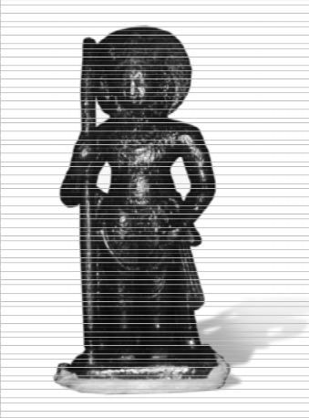
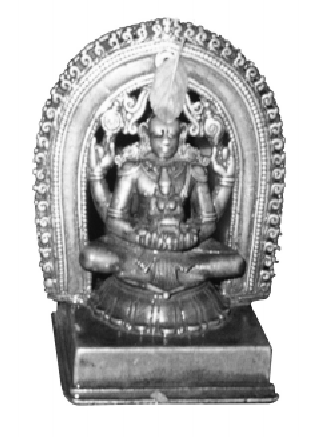
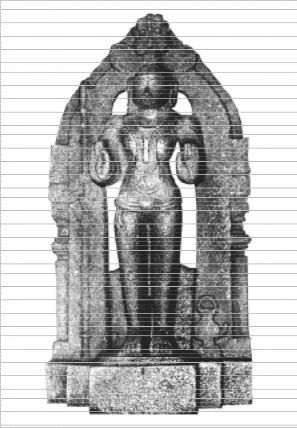
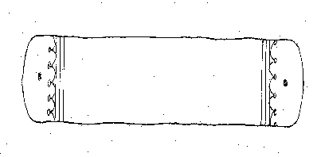
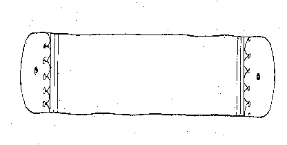

1
dr<e"<\"@}°X"T"<NL>O"pE"pYY"{<\"Z<E"O"p
\"pY"s_O"s<O"#
[S"Z`qZ_O"s<O"_"<`O"p]
dr\"uQpOX"O"rOP"{Y"<O"<\"Z<E"O"Y"p @°<\"@°NN"p{X"wO"pAY"Y"p J>r@°Y"p, ÏpE"pYY"{B"pu<\"SQ<\"Z<E"O"Y"p _O"s<O"E"<SÁ@°Y"p E" _"X"[äwO"p $
_"XT"pQ@°#
L>p. V"fl"Ä"uT"QpuT"pà# ÏpE"pYY"{B"pu<\"SQ#
<\"ùp\"pE"_T"<O"#, <\"ùpZ—"p@°Z#, T"≠drT"QW"p@o°
T"}@°p]"S"r
O"O\"_"z]"puR"S"_"z_"O"o
<\"ùpX"pSY"T"}@°p]"S"X"o dr‚^"r@u°]"O"rOP"{_"z_P"pS"X"o, ZG"O"T"rK>T"sZX"o (ÌLs><T")
2
V°YU-STUTI of Trivikrama-pan≤it¢tc¢rya [with the commentaries: Kavikar¥¢m®uta of S¬r§ Ved¢tma-T§rtha and stuti-Candrik¢ of BannaÆje Govind¢c¢rya]
Edited by ::::: Vidy¢ratn¢kara Dr. BannaÆje Govind¢c¢rya
Published by | ::::: | Tatva-Sams¬odhana-Samsat |
S¬r§ Vidy¢m¢nya Prak¢s¬ana | ||
S¬r§ H®æ§kes¬a-T§rtha-Samsth¢nam, (S¬r§ Palim¢ru Ma∞ha) U≤upi, | ||
Karnataka, (India) | ||
Tel. : 0820-2523402 |
© Editor | ||
I Edition | ::::: | 2011 |
Copies Pages | ::::: ::::: | 1000 44+84 |
Price | ::::: | Rs-60 |
Cover design Typeset | ::::: ::::: | K.M. Sheshagiri Kaddi. S. Badarinarayanachar |
Poornaprajna vidyapeetha | ||
Printed at | ::::: | Rajaprakash Printes |
No. 142, I main road , Chamarajpet, | ||
Bangalore -560 018 | ||
Tel. (080) 26521515 |
3

@w°^N"z \"SQu G"B"ûl‡X"o
4 _O"s<O"-
_"z_"<QY"z @w°O"c"O"pX"T"{Y"<O"
B"`S"pP"p| dr\"pY"s_O"s<O"z T"}pE"rS"J>r@°Y"puT"V"wz<`O"pz _"pR"s _"z]"puRY",
_\"@w°O"Y"p S"\"rS"J>r@°Y"p E" _"zY"puGY" B"}SP"<X"X"z _"XT"p<QO"\"O"u drX"O"u T"≠drT"}]"ì_O"W"pG"S"pY" L>p. V"fl"Ä"uT"QpuT"pàpY" ÏpE"pY"{B"pu<\"SQpY" $
B"N"@°Y"Se"üpZp <[<T"X"sÁpäS"uS" <S"\Y"p{G"X"sT"@w°O"\"O"u <\"T"<∆"O"u drX"O"u @°õ>rT"QpuT"pàpY" V"QZrS"pZpY"N"pE"pY"p{Y" $
Ïb"Z]"puR"S"@°X"{<N" _"`@w°O"\"O"u drX"O"u <\"G"Y"<_"z`pY" @w°^N"- ZpG"pY" E" $
T"s_O"@°_Y"p_Y" X"sA"T"e"<\"SY"p_"@°X"{<N" Q<]"{O"@°pv]"[pY"
<E"e"@°[pT"qZN"O"pY" drX"O"u @u°. ÔX"o. ]"u^"<B"qZ]"X"{N"u $ X"S"puc"X"sÁN"@°X"{<N" @w°O"_"`@°pZpY" ëZpG"oT"}@°p]"o <T"}NJo_"oí
X"sÁN"p[Y"p<R"@w°O"pY" drX"O"u drT"}@°p]"pY" $
B"}SP"X"uO"z @}°îO\"p <T"T"<K>^"sWY"# _"\"u{WY"∆" _"‚QY"uWY"# $
ZG"O"T"rK>T"sZX"o (ÌLs><T") | O"O\"_"z]"puR"S"_"z_"O"o | |
]"p.]".1933, A"Z_"z\"O"o, 15.4.2011] | \"v.]"s.e"Y"puQ]"r | dr‚^"r@u°]"O"rOP"{_"z_P"pS"X"o drT"<[X"p‡X"K># |
5
T"}p_O"p<\"@°X"o
(T"}P"X"X"sÁN"T"r<K>@°p)
dr<e"<\"@}°X"T"ìNL>O"pE"pY"{@w°O"p \"pY"s_O"s<O"# @°p\Y"u^"s ZX"N"rY"@°p\Y"X"o, X"Se"u^"s
X"`pS"o X"Se" Ú<O" _"\"v{# _"X"p™O"p $ W"B"\"OT"pQv# S"A"_O"s<O"_"zY"puG"S"uS" _"X"S"sB"w`rO"uY"z
_O"s<O"# X"Se"O"s⁄Y"O"Y"p T"}OY"`z T"tG"p@°p[u T"ÈO"u, T"K>S"p\"wfY"p E" V"`l<W"ZW"rÕ><_"<´ZS"sW"tO"u<O" E" S"pT"t\"{X"o $ _"uY"z W"B"\"OT"pQT"ZX"T"}uX"W"pG"S"uS" drX"O"p <e"<\"@}°X"T"ìNL>O"pE"pY"u{N" B"}<P"O"p `Zu\"p{Y"sQu\"_Y" E" @w°O"p\"O"pZe"Y"_Y"
_O"s<O"ZT"t\"{\Y"pAY"pS"uS" _"X"sT"V"wz<`O"p E"uQX"sT"c"z drX"R\"S"\"X"rX"`puO_"\"p\"_"Zu
T"}@°p]Y"O" Ú<O" X"`pS"pX"puQ# $
\Y"pAY"pS"z E"uQz @°<\"@°N"p{X"wO"z S"pX" dr\"uQpOX"Y"<O"W"r Z<E"O"z dr\"pY"s_O"s<O"-
\Y"pAY"pS"u^"tT"[VR"u^\"<A"[u^\"<T" T"}pE"rS"O"X"X"<T" S"vO"p\"OT"Y"{SO"z T"}@°p<]"O"X"o $ O"<QQ<X"QpS"rz V"sW"sO_"tS"pz T"sZ# T"}P"X"X"sT"_P"pTY"O"u $
ÔO"u \Y"pAY"pO"pZ∆" dr<\"^N"sO"rP"r{Y"T"ZXT"ZpT"}\"O"{@°p# dr_"puQpX"K>rY"B"s‡T"ZXT"ZpY"pz Q]"X"p# X"R\"<\"G"Y"X"`pW"pZO"O"pOT"Y"{<S"N"{Y"p<Q\Y"pAY"pS"uS" T"}<P"O"Y"]"_"pz dr\"uQpåO"rP"p{S"pz T"ZX"B"sZ\"# dr\"uQpOX"O"rP"p{# $ <@}°_O"pVQrY"u E"O"sQ{]"]"O"@u° T"rK>X"<R"<Œ>O"p ÚX"u O"T"ì_\"S"# \Y"p@°ZN"@°pu]"p<Q^"s <S"O"Zpz T"qZ<S"<Œ>O"p
\"uQ\"uQpå<\"Ql^"# _\"Y"z _"pZ_\"O"_"pZB"}p<`N"pu&TY"p_"<fl"<O" _Us°J>X"uO"ü˜pAY"pS"-
™]"pX"o $ ÌT"[VR"u^"s \"pY"s_O"s<O"\Y"pAY"pS"u^"s ÚQz T"}O"S"O"X"<X"O"rY"Qu\" E"p_Y"
\"v<]"Õ>˜X"o $ \Y"pAY"pS"@°pv]"[z ZpX"N"rY"@z° E"pe" _"\"p{<O"]"p<Y" ™]Y"O"u $ X"SY"u Y"O"o _O"s<O"@°O"s{‚{QY"z \Y"pAY"pS"u&X"sì^X"S"o Y"P"p&&<\"^@w°O"z S" O"P"p S"tS"X"SY"\Y"pAY"pS"uì^\"<O" $
6
Y"e" E" X"t[W"p\"pu S" _Us°J>#, \Y"pAY"pS"u E" B"}SP"@°pZ‚QY"z S"pO"r\" T"}@°J>X"o,
\Y"p@°ZN"@°pu]"p<Q@z° S" <\"_O"pZuN" \Y"sOT"p<QO"z O"e" <G"c"p_"tS"pz _"pv@°Y"p{Y" X"t[<\"\"ZN"uS", \Y"p@°ZN"<\"]"u^"\Y"sOT"pQS"uS", @°pu]"puØpJ>S"uS" E" X"t[\Y"pAY"pS"Y"puZP"{_T"pÕ>˜pY" O"e"O"e" Y"P"pS"s@t°[z _"X"s<E"O"pz <J>TT"N"rz E"
_"X"Y"puG"Y"X"o $ ÏP"{<\"]"u^"V"sW"sO_"tS"p<X"QX"<T" _"SQW"pu{T"Y"pu<B" W"\"u<QOY"p]"p_"u $
\Y"pAY"pS"_Y"p_Y" _"z]"puR"S"u X"t[@°pu]"p<QQpS"uS" V"`tT"@w°O"\"O"pz _"puQpX"K>pR"r]\"ZpN"pz dr<\"]\"puf"X"O"rP"{drT"pQpS"pz _"‚QY"O"pB"W"{X"S"sB"}`z @°P"z S"pX" <\"_X"ZpX"#? Y"™O"u O"u^"pz _"`@°pZp<QQz ]"pu<R"O"z T"}@°p]"S"X"u\"p_"XW"p<\"O"@°⁄T"X"W"<\"^Y"O"o $
ÏSO"u E" ±o° "_"X"Y"u _"sSQZz E" B"}SP"_Y"p_Y" X"sÁN"pY" <Q\"p<S"]"z @w°O"dX"p# R"X"{V"puR"<\"ùsSX"sÁN"p[Y"p<R"@w°O"p ÏTY"\"]Y"X"<W"S"SQS"rY"p# $
]"p.]".1894 (ÌLs><T") ñV"fl"Ä"u B"pu<\"SQpE"pY"{# X"pC"]"s´S"\"X"r ÏXV"[T"p<L> [24.1.1972] ÌLs><T"-3
7
_O"s<O"W"t<X"@°p....
drX"R\"EF>pe"\"pZX"<N"`pZu O"Za`rZ@°pY"O"u @°<\"ZpG"ZpG"# dr<e"<\"@}°X"T"<NL>O"p-
E"pY"{# $ O"_Y" @°<∆"QSO"#_Us°ZN"Z<N"O"# T"}<O"W"p<\"_Us°<[åpu&Y"z \"pY"s_O"s<O"- qZ<O" $ Y"p B"r\"p{N"_O"pue"\"péY"u @°p<E"QS"sT"X"p <S"<X"{<O"# $ @°p<E"QT"t\"p{ ]"v[r
]"v[t^"r\" <E"f"ZÄ"S"r $ @°p<E"QS"SY"p ZE"S"p X"pSY"p _"flY"p<_"S"pX"<T" $ X"`<¨Z<T" X"Se"O"s⁄Y"u<O" _"B"pvZ\"z _"X"p™O"p $$
ZE"<Y"O"p E"p_Y"p# _O"sO"u# dr<e"<\"@}°T"<NL>O"_O"pva\"X"NL>[X"NL>S"pu&<W"G"pO"#
@°<\"Zp_" $ ÏS"uS" E"puSX"r[ü˜Ä"S"u _"ù#_"X"sùùpv\"S"u T"sS"‡T"^"puL>]" Ô\"
\"Y"<_" T"}V"´z ëÌ^"p`ZN"zí S"pX" T"}V"s´z X"`p@°p\Y"z O"pva\"X"NL>[_Y" T"}P"X"#
@°p\Y"pÄ"<[qZ<O" T"}P"pX"`{<O" $ T"}P"X"X"sT"pY"S"z @°p\Y"T"}T"Å"_Y" $ \"_O"sO" ÚQ- X"s^"p`ZN"z S"pX" ^"Œz> X"`p@°p\Y"pS"pz X"`p@°p\Y"X"o $$
T"<NL>O"O"ÑG"pu&Y"z ]"p<[\"p`S"]"@°_Y" üpQ]"u e"Y"puQ]"u E" ]"O"@u° W"t\"[Y"X"- [Å"@°pZ $ Ï_Y" G"SX"W"t<X"# ë@°V"uS"pLs>í (P‹∏ÊÆ›v‹·) Ú<O" O"QpO\"u T"}<P"O"#,
_"XT"}<O" ë@°p_"ZB"puLs>í (P›”‹√‹WÊ„‡v‹·) Ú<O" S"pX"np T"qZ<E"O"_O"pva\"W"t<X"-
W"pB"# $ Y"# T"t\"| O"pva\"ZpGY"_Y" ZpG"R"pS"r V"W"t\" $ Y"e" <üO"rY"pu G"Y"<_"z`pAY"pu
\"rZZpG"_O"pva\"ZpGY"z T"qZZb"S"o <\"ZZpG" $ _"XT"}<O" T"sS"p ZpG"@°îY"@°pO"Se"\"]"pO"o
@u°ZaZpGY"W"pB"O"pz B"O"# $ Ï_Y" _O"s<O"T"}V"SR"s# dr<e"<\"@}°X"T"<NL>O"_Y" W"\Y"- X"sQ\"<_"O"z ë@°p\"sX"K>í(P› ‹‚ ‹·s‹) Ú<O" T"}<P"O"z _"XT"}OY"<T" ë@°p_"ZB"puLs>íS"B"Zu QZr™]Y"O"u $ Ïùp<T" O"üz]"rY"p Ô\" O"e" <S"\"_"ìSO" $$
8 _O"s<O"W"t.
@°\"uZ_Y" W"B"\"pS"pE"pY"{X"R\"# dr\"O_"S"pZpY"N"T"}<O"X"pz T"}rOY"p T"}QQpv $ _"XT"}OY"<T"
_"p T"}<O"X"p O"e" _"W"<◊O"d´z T"tGY"X"pS"p <\"[_"<O" $ S"pZpY"N"_Y"pT"}<O"X"p
T"}<O"X"p $ O"_Y" E" \"b"<_" [b"N"W"tO"p [bX"r# $ ÏT"t\"{<X"Qz <]"⁄T"@°pv]"[-
_Y"p¨lO"X"sQp`ZN"X"o $$
O"pva\"pu&Y"z <[@s°E"@s°[QrT"@°# @°<\"@s°[<O"[@°# $ <[@s°E"_O"‡<\"]"u^"#, Y"z O"pva\"p# ëT"uG"í(±Êg) Ú<O" \Y"p`Z<SO" $ Y"_Y" \"pËpz <[@s°E"<\"J>T"r V"W"t\" O"z <[@s°E"\"p<S"<O" ëT"uG"f"pY"í(±Êg¢›§ø·) Ú<O" T"}<N"G"B"Ql# $ ÔO"üz]"rY"p# ëT"uG"f"pY"í(±Êg¢›§ø·)T"QpuT"pàp V"`\"# _"XT"}OY"<T" _"<SO" O"pva\"X"NL>[u $$
O"pva\"X"NL>[_Y" _\"N"{Y"sB"z O"O"o _"pX"p<G"@°O"Y"p E"p&RY"p<OX"@°O"Y"p E", Y"Qp
T"<NL>O"pE"pY"pu{ <G"G"r\" $$
O"Qp ë@°V"uS"pLs>í(P‹∏ÊÆ›v‹·) Ú<O" AY"pO"pu&Y"z Qu]"_O"pva\"X"NL>[_Y" @u°SÁ-
_P"pS"X"p_"rO"o $ Y"p T"t\"| O"pva\"X"NL>[ZpG"R"pS"r V"W"t\" _"p _"XT"}<O" @u°Za@}°puLu>
<S"T"T"pO"u<O" X"`pS"Y"z ZpG"@°îY"QlZSO"# $$
O"QpO\"u ëÚXX"<L>í(C ‹·æw) G"Y"<_"z`_O"pva\"pS"pz W"tT"<O"V"{W"t\" $ <S"ZpO"äz
_"X"w´z E" G"r\"S"X"o $ _"X"@°p[rS"pu X"`pZpG"pu&Y"X"pE"pY"{X"R\"_Y", Y"pu G"B"Qo-
QrT"@°X"RY"pOX"QrT"z O"pva\"X"NL>[u T"}G\"[Y"pX"p_" $ O"uS" O"Qp O"pva\"X"NL>[z
O"pva\"@s°[T"se"Z—"uS" drX"QpS"SQO"rP"{W"B"\"O"p&RY"pOX"T"}T"Å"_Y" B"pvZr]"äZX"p-
‡Zpu` $$
<e"<\"@}°X"T"ìNL>O"_O"<`{ X"`pZpG"_Y" G"Y"<_"z`_Y"p&_P"pS"@°<\"Zp_" $ ÏüvO"-
@w°O"pSO"u T"sS"ZY"X"<üO"rY"# T"<NL>O" Ú<O" <\"üSX"NL>[r^"s T"}<P"O"pu&X"pSY"O" $ _"X"B"}p
<\"üSX"NL>[r _\"p<W"X"O"X"pY"p\"pQZb"pP"| <e"<\"@}°X"T"<NL>O"X"sA"T"}ub"X"p_" $$ Ô@°Qp <e"<\"@}°X"T"<NL>O"_Y" drX"R\"uS" _"X"pB"X"# _"X"G"<S" $ Q]"{SQ]"| O"X"p-
E"pY"{X"o, dp\"zdp\"z O"üE"pu<\"[p_"z E" <\"^"Y"X"NL>S"E"pO"sZrz E", ÏS"sT"X"pX"S"s-
_O"s<O"W"t. 9
W"p\"W"qZO"pz \"pQ\"vA"Zrz E" <\"_X"Y"G"[R"p\"\"G"B"p`u $ ÏSO"<\"{<G"O"pu&<T" V"<`#
_" "pÕ>p<S" <QS"p<S" O"uS" _"` <\"\"QX"pS" Ú\" \"pQ@°P"pz E"@°pZ $ Ï<W"ùO" Ï<\"ùpX"Y"pu ‚QY"B"}<SP"# $ <S"#]"u^"X"<EF>ùSO" _"\"p{# _"z]"rO"Y"# $ B"<[O"# T"<NL>O"B"\"{# $ <]"Zpu W"B"\"OT"pQT"pQ_"Zpu‡`u E"sE"sXV" $ Ô\"z <e"<\"@}°T"<NL>O"# T"t\"p{E"pY"{T"ZXT"ZY"p&S"s_"wO"z X"pY"p\"pQz <\"R"tY"p&E"pY"{X"R\"_Y"pSO"u\"p<_"O"pX"år- E"@°pZ $ _"pS"SQz O"O\"\"pQu <QQrb"u $$
_"SO"sÕ>pu X"R\"_O"_Y"p&E"pY"{T"Qz QQpv $ O"O"<Æ<\"@}°T"<NL>O"# T"<NL>O"pE"pY"pu{ V"W"t\"u<O" \"Q<SO" $ O"_Y"p_Y" O"S"Y"# drS"pZpY"N"T"<NL>O"pE"pY"{# _\"Z<E"O"u drX"R\"<\"G"Y"u _\"O"pO"X"SO"ZuN" @°p<S"E"S"pT"t\"p{<N" T"}X"uY"pNY"p<\"∆"@°pZ $ O"_Y"pY"z
_"≥`#ñ
_"sV"}œ"NY"pAY"# @°<∆"Qo <\"T"<∆"Qo ÏpqåZ_"B"pue"# ëT"uG"f"pY"í(±Êg¢›§ø·)-
\"z]"W"t^"N"pu V"W"t\" $ _\"Y"z O"T"_\"r, E"O"sZ# @°<\"#, \"pQuS" <\"<S"<G"{O"<S"<A"[-
<\"ü<fl"@s°ZXV"# _"XW"p<\"O"# _"X"pG"T"}X"sA"vZp_" $$
O"_Y" X"`pSO"X"S"u`_"z S"p&_" O"S"Y"X"sA"[p[S"Y"puB"# $ G"pO"p<S"G"pO"pSY"T"OY"pSY"-
<X"}Y"SO" $ O"Qp _"pR\"r T"<NL>O"Q<Y"O"p <E"ZZpe"pY" @s°[Qv\"O"u `qZ`Zpv T"qZ-
<_"^"u\"u $ U°<[O"p O"_Y"p# _"u\"p $ V"`pu# @°p[pO"o O"S"Y"pu G"c"u $ T"}uX"T"p@°_Y" T"puO"_Y" <T"O"p S"pX" E"@°pZ <e"<\"@}°X" Ú<O" $$
]"v]"\" Ô\" T"}Q<]"{O"T"}<O"W"p<O"]"Y"pu&Y"z \"Js>\"w{´pS"pz G"<S"O"<\"_X"Y"# T"}\"R"{X"pS"pu \"uQu
\"uQpSO"u @°p\Y"u E" T"}@°<J>O"<\"@}°X"pu&S\"P"| E"@°pZ <T"O"wQf"z S"pX"R"uY"X"o $$ (ÏS"Y"puQ{XT"OY"puZP"pSY"pu&<T" @s°X"pZpu G"c"u, Y"# ]"äZpàpu V"W"t\" $ Ôu<O"Â<\"Qpu
\"Q<SO"ñ ÏSY"p @°SY"p&TY"G"pY"O", Y"pz @°⁄Y"pN"rQu\"rX"p`l# $ S"uY"z _"sV"}œ"NY"-
_"tqZ@s°X"pZr, <@°SO"s <e"<\"@}°X"T"<NL>O"pOX"G"uOY"SY"u $)
@°pvX"pZ Ô\" <e"<\"@}°X"∆"O"sZ# @°<\"Zp_" $ <\"T"<∆"O"pX"<T" <\"_X"Y"G"S"S"r V"W"t\" E"p_Y"p™Õ>pdsO"T"t\"p{ T"}<O"W"p $ O"‡N"# _"fl"u\" ëÌ^"p`ZN"zí S"pX" X"`p@°p\Y"z
10 _O"s<O"W"t.
<\"ZE"Y"pX"p_" $ Y"uS" <S"<A"[p T"<NL>O"X"NL>[r X"t@°<\"<_X"O"p S"p_"pY"pX"ål<[z
<\"SY"p_" $$
O"Qp G"S"p_O"z _"p<W"X"pS"z <e"<\"@}°X"T"<NL>O" ÚOY"pG"s`l\"s#, @°<\"@s°[<O"[@° Ú<O" T"}]"]"z_"s# $$
]"päZz X"pY"p\"pQX"p[XVY" T"}\"wf"pu&Y"z \"z]"# $ <e"<\"@}°X"T"<NL>O"pu&<T" X"p<Y"S"pz
_"T"pQ[b"<X"O"u B"}SP"G"pO"u&TY"R"rO"r _\"_"X"Y"G"[<R"T"pZz G"B"pX" $$
Y"ù<T" _\"_"X"Y"# $ ÏP"pTY"RY"Y"S"@°p[ Ô\" X"pY"p\"pQ_O"_Y" _\"W"p\"O"pu&_"åO" Ú\", \Y"p@°îN"{O"Y"p X"S"pu<\"W"}X"`uO"sqZ\" V"W"p_"u $ X"S"<_" _"X"s¨\"O"pz ]"äp]"ämS"pz
<S"Zp_"u S" B"sZ\"pu&<T" T"}V"W"t\"s# $ _"\"u{&<T" W"N"<SO"ñ T"}O"S"v‡◊O"z S" T"}Õ>>\Y"X"o,
@u°\"[z d´pO"\Y"<X"<O" $ d´pG"L>pS"pX"Y"z \"pQ Ú<O" <e"<\"@}°X"_Y" X"S"# T"}OY"-
\"O"{O" $ ÏP"pTY"pOX"pS"X"SO"<S"{B"w _"`X"pS" Ô\" _"X"B"}z X"pY"p\"pQX"RY"B"rÕ> $$
_"sV"}œ"NY"T"<NL>O"_Y" T"ZXT"ZpB"O"u X"pY"p\"pQu <S"X"p{Y"z <S"<`O"d´_Y"p<T" _\"pSO"- X"SO"#]"äp@°<[[X"u\"p&_" $ _" @°Qp<E"O"o O"S"Y"X"p`mY" _\"pSO"\"u{QS"pX"p\"uQY"p- X"p_"ñëO"pO" <e"<\"@}°X", Ï_"@w°<Ç"<SO"O"z X"Y"p $ @°# T"s‡^"pP"pu{&S"Y"p <S"B"s{N"pu- T"p_"S"Y"p $ <T"T"p<_"O"_Y" X"Zpv X"Zr<E"@°pR"p\"S"<X"QX"o $ S" \"Y"<X"` <S"B"s{N"pz X"s<◊O"z _"X"r`pX"`u $ _"sA"X"Y"r B"pvN"r X"s<◊O"Zu\"uÕ>p S"# $ O"uS" T"tN"{B"sN"_Y" S"pZpY"N"_Y"puT"p_"S"X"u\" W"\"O"ZN"puT"pY" Ú<O" X"u X"S"r^"pí Ú<O" $$
<\"E"E"p[ T"<NL>O"# T"sS"Z<T" G"S"@°\"E"_"p $ <\"X"X"]"{ T"sS"Z<T" B"pMz> X"pY"p\"p- QB"}SP"pS"o $ <\"E"E"E"{ _"pR"@v°# _"pR"| \"w´v# $$
Ô@°e" T"ZXT"ZpB"O"pY"p# d´pY"p# @°^"{N"X"o $ ÏT"Ze" O"pz <\"‡SR"pS"p X"pS"_"r O"@{°O"sX"s[O"p $ d´p T"ZXT"ZpX"S"s_"Zu<O" <S"ZW"pSO_"rO"o $ T"}c"p E" O"pz \Y"‡N"O"o O"@{°G"p[z _"wG"SO"r $$
_O"s<O"W"t. 11
_" @°Qp<E"QlT"àZu <_P"O" Ô\"z <E"SO"Y"pÅ"@°pZñëW"B"\"pS"o <@°[ V"pQZpY"N"pu
\"uQpS"pX"P"{<S"N"{Y"pY" V"}œ"_"te"p<N" \Y"ZrZE"O"o $ O"p<S" b"sÁV"puR"pS"pz G"S"pS"pz QlZ<R"B"X"pSY"u\"p&_"S"o $ T"p∆"pOY"p∆" <\"T"<∆"O"_O"u^"pz W"p^Y"p<N" Y"P"pX"S"r^"- X"W"p<^"^"O" $ Ô@v°@°_Y"p<T" <\"<W"fl"# T"SP"p# $ T"Z_T"Z<X"O"ZpS"o A"NL>Y"SO"#
_\"T"}c"p\"pQz X"NL>Y"pX"p_"s# $ _"\"pu{&<T" _\"pu◊O" Ô\" _"te"pP"{ ÚOY"s\"pQ $
_"\"pu{&<T" _\"z_\"X"u\" T"SP"pS"X"S"sT"T"pO" $ S" @°pu&<T" T"}pY"pu V"pQZpY"N"p<W"X"O"z
T"SP"pS"X"o $ @°P"äpZX"uO"u^"s @°pu&<T" <\"]\"_Y"pO"o, <\"]\"_Y" \"p d´R"rO"?
@°P"SO"ZpX"uO"u T"}c"p\"pQX"pe"V"[p ÏpRY"p<OX"@u° T"<P" X"pB"{<S"Q]"{@°p ÚOY"år-
@°Z\"pX"?
ëÏ`z O"s _"pXT"}O"z ]"päZz _"XT"}QpY"X"S"s_"ZS"o \"O"u{ $ X"QrY"pu&Y"z X"pY"p\"pQ ÚOY"uO"z
<\"R"tY" T"t\"p{B"}`z X"s◊O"‚QY"z _"\"{X"v<E"<b"^"u $ O"Qp X"QS"s_"wO"X"u\" X"O"z _\"\Y"p`O"z
@°pu[p`[@°[s<^"O"z W"p_"O"u $ ÏP"p<T" S" _"`_"p T"ZXT"Zpz <\"<E"<EF>O_"p<X" $ T"sS"Z<T" B"pM>X"SO"# T"}<\"]Y" ]"päZz ‚QY"X"S\"u^"N"rY"X"o, Ï<S\"^Y" E"p\"B"SO"-
\Y"<X"<O" <S"ZSO"Zz T"}Y"O"u $$
ëÌT"<S"^"Q# <@°X"sT"<Q]"<SO"? W"uQX"o, Ïp`pu<_\"QW"uQX"o? Ï⁄T"<R"^"N"pS"pX"B"- XY"pu&Y"X"sQSO"# $ B"pMz> <\"X"]"u{&<T" <S"@°pX"z <S"B"tM>X"u\" <O"Œ>OY"pvT"<S"^"Qz O"O\"X"o $ S" G"pO"s _\"‚QY"z <\"\"wOY" O"p# T"}@°J>Y"<SO" $ _"@w°<QOP"<X"<O",
_"@w°fl"uOP"<X"<O" <\"W"}X"G"p[u <S"T"pO"Y"<SO" $$
ëÏP"p<T" W"B"\"QsT"p_"S"Y"v\" V"SR"X"s<◊O"qZ<O" _"\"{]"pÆpN"pX"v@°@°NÈX"o $ @°p S"pX"puT"p_"S"p? @°î™]"r E"uY"X"sT"p_"S"p? <@z° <S"Zp@°pZpu <S"B"s{N"pu W"B"\"p<S"<O"? ÌO" _"p@°pZ# _"B"sN" Ú<O"? <@°X"`z V"}œ"u<O"? ÌO" X"X" _\"pX"r T"Zz V"}œ" S"pZpY"N" Ú<O"?
ë<\"QSO"pu \"Q<SO"ñ_"<Ç"QpS"SQpOX"p W"B"\"pS"<üO"rY" Ú<O" $ _"OY"z c"pS"X"S"SO"z
V"}œ"u<O" $ Ô@°X"u\"p<üO"rY"z V"}œ"u<O" $ _" @°P"z <S"Zp@°pZ# _Y"pO"o? <E"QpS"SQX"Y"z
12 _O"s<O"W"t.
@°⁄Y"pN"O"X"z <` ·°T"X"pX"S"<SO" O"_Y" $ ÏP"E" GY"pu<O"X"{Y"# T"s‡^" Ú<O" T"ZX"pOX"pS"z
<B"Z<SO" $ T"}@°p]"pOX"p W"B"\"p<S"<O" E" $ Ïp@°pZ<\"]"u^" Ô\" <` T"}@°p]"pu
S"pX" $ Y"<Q _" <S"Zp@°pZ#, O"<`{ S" _Y"pO"o T"}@°p]"·°T"pu&<T" $$
ë<@z° O"<`{ W"B"\"p<S"<O" T"sÄ"rW"tO"z O"X"#? O"X"_" ÌT"p_"S"Y"p T"}pY"_O"X" Ô\"
]"ZN"X"o $ S"tS"z \"Y"X"<T" X"pY"p\"pQu <\"]\"_Y" O"X"<_" <S"T"O"uX" $ S"<`S"<`, S"uY"X"sT"p_"S"p X"S"<_" [B"<O" $ S"pY"z X"pY"p\"pQ<∆"f"X"p\"G"{Y"<O" $$
ëÚ<O"`p_"T"sZpN"pWY"pz \"uQz _"X"sT"V"wz`Y"u<Q<O" <S"B"Q<SO" $ W"pZO"T"sZpN"p<Q<W"#
_"X"sT"V"wzÂ, _"\"{X"<\"ZpuR"uS" _"X"<S\"OY" \"uQ\"E"_"pX"P"p{S"s_"SR"pS"u @w°O"u W"B"\"O"pu B"sN"pS"sRY"pS"X"u\" ]"pÆpS"sX"O"<X"<O" T"}O"rY"O"u $ ÏY"<X"` T"}pY"# ]"pÆT"ZX"pP"{#ñ ÏpE"pZ\"O"p W"p\Y"X"o $ <S"ZSO"Zz W"B"\"ûlN"T"pZXY"<E"SO"p<S"ZO"uS" W"p\Y"X"o $ O"P"p E" W"B"\"QpZpR"S"X"u\" duY"#_"pR"S"<X"<O" W"p<O" $ O"uS"pY"X"u\" X"Y"p E"qZO"\Y"#
_"pR"rY"pS"R\"pí $$
Ô\"z <\"<E"SO"Y"<O" <e"<\"@}°X"T"<NL>O"u W"B"\"OT"pQuS" drX"R\"uS"pS"p\"wO"_Y" O"O\"-
\"pQ_Y" <\"_"wO"p T"}P"p O"_Y" @°N"{T"P"z T"T"pO" $ O"<Ç"SO"S"_"ZN"u# T"s<Õ>@°Zp<N"
_"X"B"}_"z]"Y"`Zp<N" O"O\"\"pQu \"E"pz<_" V"W"t\"s# $ <[@s°E"T"<NL>O"_Y"pSO"Zåz O"Qv\" drX"R\"_Y" O"O\"\"pQX"p<[<[å $$
O"<_X"fl"u\"pS"u`<_" drX"R\"W"B"\"pS"o _"X"B"}u W"pZO"u <\"<`O"_"Å"pZ# T"}O"S"_Y" ÏP"p<T" _\"puT"c"X"p<\"^@w°O"_Y" O"O\"\"pQ_Y" G"Y"C"pu^"X"sÉ"sC"pu^" $ X"pY"p\"pQu V"´pQZp# T"<NL>O"p_O"uS"p&O"qäO"p V"W"t\"s# $ O"u^"p<X"Qz B"[Qp<` A"NL-
>A"pùz _"X"T"ùO" $ O"u <e"<\"@}°X"T"<NL>O"z ]"ZN"X"rY"s# $ ÔOY" E" O"z <\"c"pT"- Y"pÅ"<@}°Zuñ
ëÔ@°# T"}E"NL>O"X"pu \"pBBX"r <@°[p&G"<BX"\"pS"o, X"R\"puX"R\" Ú<O", T"tN"{T"}c" Ú<O", ÏpS"SQO"rP"{ Ú<O" $ _" T"ZXT"ZpB"O"pz ™M><S"V"´pz d´pX"u\"p´p <\"R\"z_"- Y"<O" $ ][P"Y"<O" _"S"pO"S"z _"XT"}QpY"X"o $ <]"<P"[Y"<O" <\"dXW"_"pvR"X"o $ _"
_O"s<O"W"t. 13
O"e"W"\"O"p \"pQu <\"<G"OY" <]"b"N"rY"# $ O"z T"ZpW"p\Y" X"pY"p\"pQpu Zb"N"rY"# $ W"\"SO"X"wO"u `SO" S" @°pu&<T" O"_Y" _"XT"}<O" T"}<O"\"pQr ™]Y"O"u $ ÏT"}OY"S"r@z° O"_Y"
\"pQT"pJ>\"X"o $ ÏT"}<O"`O"p _"\"{ä^"p ]"uX"s^"r $ S" @°pu&<T" O"_Y" T"}OY"\"_P"pO"s- X"rÕu> $ @°Õu> T"<O"O"p \"Y"X"o $ h°O"u W"\"SO"z S" @°pu&<T" Z<b"O"p&_X"OT"b"_Y" $ B"<[O"X"pS"p \"Y"z W"\"SO"z ]"ZN"X"pB"O"p# $ Ï`pu, <\"^"NN"p \"Y"<X"Qz \"QpX"#ñ Ï_X"SX"O"_Y"p<_O"O"p W"\"´_O"u <S"^"NN"p $ O"e"W"\"O"# T"}<O"W"J># @°pu&<T" S"vO"p\"SO"z <QÕ>X"G"<S"Õ> $ W"\"O"v\" T"<NL>O"T"Å"p_Y"uS" _" QX"S"rY"_O"O\"\"pQ- X"f"X"pO"å# $ O"z T"qZT"<SP"S"z T"ZpW"p\Y" W"\"O"v\" <\"O"pS"<Y"O"\Y"pu X"pY"p\"pQ- Y"]"#T"J>`# $ <S"\"pZ<Y"O"\Y"pu S"# _"\"u{^"pX"SO"Zp<\"Õ># T"ZpW"t<O"W"r<O"B"}`# $ O"QP"{<X"Y"<X"` _"X"B"}p T"<NL>O"X"NL>[r W"\"SO"X"S"SY"z e"pO"pZX"sT"pB"O"pí $$
<e"<\"@}°X"T"<NL>O"_O"pS"o @°P"<Å"O"o _"pSO\"Y"pX"p_" $ <@°SO"s _\"Y"X"SO"#_\"pSO"u
<E"SO"p@}°pSO"pu V"W"t\"ñë<@°X"`X"pE"pY"{X"R\"z <\"G"uO"sz T"}W"\"uY"X"o?í Ú<O" $$
ÏP"p<T" S" O"t^N"rX"p_O" $ _\"r@w°O"O"O\"\"pQpS"pE"pY"{X"R\"_Y"pSO"u\"p<_"S"pu V"`mS"o
T"<NL>O"pS"o A"NL>Y"pX"p_" \"pQu $ \Y"p@s°[Y"pX"p_" O"u^"pz <E"f"X"o $ ][P"Y"pX"p-
_"pSO"#_"O\"X"o $ B"[Y"pX"p_" B"\"{X"o $
(ÏP"p<T" _\"_Y"pS"sG"# ]"äZT"<NL>O"# drX"R\"<]"^Y"pu V"W"t\" $ _\"B"w` Ô\" O"O\"\"pQ∆"Å"sz <S"<E"b"uT" $ O"<fl"\"pZN"pY" _\"Y"X"T"}W"\"S"o T"<NL>O"# T"}@°J>z
_"äJ>X"S"sV"W"t\" $ _"p@°X"u\" @°⁄Y"pN"r E" O"O\"\"pQu <S"Œ>pz T"qZG"B"}p` $
_\"<S"]"pSO"pSO"\Y"p{<T"S"rz O"O\"\"pQ\"pOY"pz T"}<O"Zpu´lX"]"◊O"#, @°P"X"P" <QB"SO"-
\Y"p<T"S"rz O"OT"}_"w<O"z _\"Y"X"`z <S"‡N"R"pS"r<O" X"sR"pS"r<O"X"p@°[Y"S"o RY"pS"X"–"pu
V"W"t\" <[@s°E"T"<NL>O"# $)
T"<NL>O"pS"sG"# ]"äZT"<NL>O"pu X"R\"<]"^Y"pu S" @u°\"[X"o $ O"QrY"B"}SP"T"p[pu&<T"
<@°[p&_" $ _" E" X"pR\"pu B"}SP"<S"E"Y"<Æ<\"@}°X"T"<NL>O"<S"[Y" Ô\"p&_" $$ S"◊O"X"u@°pSO"u, Y"Qp _"\"u{&<T" <S"Áp\"]"p#, <e"<\"@}°X"T"<NL>O"# drX"R\"_Y" B"}SP"pS"o @s°O"t`[p@s°<[O" Ïp[pu@°Y"pX"p_" $ T"pK>XT"pKX"S"\"R"pv <\"_X"Y"G"[R"pv
14 _O"s<O"W"t.
<S"X"X"É" $ O"SX"S"<_" <S"·°M>pS"pz _"\"u{^"pz <\"]"Y"pS"pz O"e" _Us°J>X"sf"ZX"p_"rO"o $
<[@s°E"T"<NL>O"pu B"<[O"<\"]"Y"pu <X"<[O"p]"Y"pu V"W"t\" $$
ÏP"p<T" S"vO"p\"SO"z @°p[z O"_Y" _"pb"pQo W"B"\"OT"pQQ]"{S"X"p_"rO"o $ V"<`X"p{Y"p\"pQz
_"X"P"{Y"X"pS"Ú\"v\"p\"O"{O" $ ÏpE"pY"{X"R\"z ™^Ã>p O"uS" _"` _"\"| <\"X"w]Y" O"PY"z
<\"<G"c"p<_"O"\Y"<X"OY"SO"u <S"Q{R"pZ $$
ÏpE"pY"{X"R\"pu&<T" <QÕ>˜p O"z Qu]"X"pG"B"pX" $ _\"Y"z ZpG"p G"Y"<_"z`_O"X"p`mY"
_\"ZpGY"z ë@°V"uS"pLs>í(P‹∏ÊÆ›v‹·)Qu]"X"pS"pY"Y"pX"p_" $ ÏpE"pY"{X"R\"_O"e" <\"^N"s- X"å[pY"O"S"u SY"\"pO_"rO"o $$
ZpG"B"s‡<Æ<\"@}°X"T"<NL>O"pu W"B"\"OT"pQQ]"{S"pY" <\"^N"sX"å[X"pG"B"pX" $ ™^Ã>p
W"B"\"OT"pQz W"<◊O"<\"\"]"# T"T"pO" T"pQY"pu# $
T"<NL>O"X"NL>[r<S"<V"Lz> X"`pT"s‡^"<Q™b"p_"X"pB"O"G"S"_"SQpu`_"S™VR"z S"wT"_"W"X"- [Å"@°pZ W"B"\"OT"pQ# $ <S"@°J> Ô\" <\"S"rO"\"u^"pu X"t<O"{X"p<S"\" <\"S"Y"# _\"Y"z X"`pZpG"# $ ™^Ãu>QX"T"t\"| ™]Y"X"pS"SQO"s<SQ[<Æ<\"@}°X"T"<NL>O"# @°<\"_"`G"Y"p
\"pNY"p _"X"<W"S"S"SQ X"`pZpG"z G"Y"<_"z`X"oñ
_\"#_"sSQZrW"sG"[O"pT"qZZXW"N"r R"t# T"pvZSQZr W"\"<O" Y"z W"G"O"pz W"s<G"^Y"p $ ÏpS"SQO"rP"{W"B"\"OT"QT"≠T"ZuN"s# _\"pS"SQQpu W"\"O"s O"u G"Y"<_"z`W"tT" $$
Ô\"X"¨lO"pu&Y"z _"X"G"<S" ZpG"B"sZpuG"{B"ûl‡N"p T"}P"X"# _"X"pB"X"# $ ÏP" E"pO"rO"p<S"
@°<O"E"S" <QS"p<S" $ drX"R\"\"E"S"p<S" T"}<O"b"N"z T"Zrb"X"pN" Ô\"p&_" <e"<\"-
@}°X"T"<NL>O"# $ drX"R\" ÔS"X"Y"_@°pSO" Ú\"p&E"@°^"{ $$
ÏpE"pY"{X"R\"pu Y"e"pu\"p_" O"_Y" B"}pX"_Y" O"QpS"rSO"S"z S"pX" ë@t°Lu>[oí(P‹„vʇ«È) Ú<O" $ _"XT"}<O" ë@t°Lo[s>í (P‹„v‹·…) Ú<O" \Y"T"<Q]"<SO" $ W"B"\"pS"pE"pY"{_O"e" Qu\"X"<SQZu T"}OY"`z V"}œ"_"te"W"p^Y"z T"}\"pE"Y"pÅ"@°pZ $ <e"<\"@}°X"T"<NL>O"# T"}<O"T"Qz
_"d´X"p@°N"{Y"pX"p_" $ Ô@°Qp T"}\"E"S"X"pZW"X"pN"pu W"B"\"OT"pQ# T"sZ#<_P"O"z
<[@s°E"T"<NL>O"z _"p@t°O"X"p[pu@°Y"pX"p_" _"X"SQ`p_"X"o $$
_O"s<O"W"t. 15
U°<[O"<Æ<\"@}°X"T"<NL>O"_Y" <E"ZX"pE"rN"{# T"sNY"<S"E"Y"# $ O"_Y" X"S"<_" <E"Z- Zpe"pY" <S"·°Mz> _"z]"r<O"G"pO"z W"B"\"OT"pQ# _\"Y"z T"]Y"<fl"\" @}°X"]" Ô@v°@°]" ̨p\"Y"pX"p_" $ ̨p\Y" E"v@v°@z° _"Y"s<◊O"@z° <S"Zp_" $ <S"Z_Y" E" O"O\"\"pQz
_P"pT"Y"pX"p_" $$
ÏP"pY"<X"QpS"rz <e"<\"@}°X"T"<NL>O"_Y" T"Y"p{Y"# $ _"\"{P"p T"}Y"<O"O"\Y"z Y"P"p@°P"pE" X"pY"p\"pQ_Y" Zb"pP"{X"o $ S" Y"s◊O"z O"t^N"r@°pX"\"_P"pO"sX"o $ ÏpOX"pS"X"u\"p\"[XVY"
<\"dVR"X"p_"rS"pY"p# T"<NL>O"T"J>⁄Y"p# @w°O"u&<T" _\"uS" W"<N"O"\Y"X"o $ Ô\"z @w°O"-
<S"∆"Y"pu ZpG"B"s‡# _\"Y"z ZpG"_"W"pY"pz \"pQpY"puf"_P"pv $$
[pu@v°@°G"<Y"S"p W"B"\"OT"pQuS" _"` \"pQ@°P"p $ <e"<\"@}°X"T"<NL>O"pu&<T" S" _"\"{-
_"pR"pZN"# $ _\"Y"z <\"T"<∆"O"pX"T"<∆"X"# $ Y"_Y"pB"}O"# T"<NL>O"_"W"p \"QS"z
\Y"pQpO"sX"<T" <V"W"pY" O"uS"p&E"pY"u{N" _"` T"<NL>O"# T"}E"NLz> \"pQz <\"O"uS"u $$ T"<NL>X"NL>[r <S"‡´]\"p_"p <\"_X"wO"<S"X"u^"p O"_P"pv X"sX"s{ZpuT"qZB"O"u\" O"`O"`p-
Y"X"pS"p $ <QS"pSY"<O"B"O"p<S" $ S" <\"ZZpX" <[@s°E"T"<NL>O"# $ S" <\"^"_"pQ $
S"p<T" <S"\"wf"\"pQ@°P"pu <S"^"_"pQ $ <S"ZSO"Zz O"@{°G"p[z <\"O"pS"Y"pX"p_" $ W"B"-
\"pS"pE"pY"pu{&<T" X"S"p@o° <_X"O"uS"v\" O"_Y" X"S"_@°pZz <]"<P"[Y"S"o O"OT"}Y"s◊O"pS"pz O"@°p{N"pz X"t[X"u\"puO@w°OY" _"[r[X"sf"Zz QQpv $ O"O"# T"}\"\"wO"u \"uQpP"{T"qZE"Y"p{, Ï`XV"}œ"p<_X"S"p E" O"O\"X"<_"S"p E" <S"<]"O"uS"u\" @w°T"pN"uS" $ W"B"\"O" ÏpE"p- Y"{_Y"pT"t\"| X"Se"\"N"{<S"\"{N"{S"z X"uR"p<\"S"pz X"S"pu`ZN"X"p_" $$
Ô\"z _" "pÕ>pS"o <Q\"_"pS"o T"}E"E"p[ @°P"p $ ÏSO"u <e"<\"@}°X"T"<NL>O"pu V"W"t\"
<S"‡f"Z# $ <F>fl"_"\"{_"z]"Y"∆" $ ÏpS"SQp\"`pu&Y"X"`pu T"ZpW"\"pu&<T" $ Ú{™]"z [pu@°puf"ZX"pE"pY"| [VR\"p <G"O"pu&`<X"<O" _"XX"sX"sQu $ T"T"pO" E" W"s\"S"B"sZpu# T"pQY"pu# $ \Y"<G"c"T"Ç" _"<\"S"Y"X"oñ ëW"B"\"S"o B"s‡O"X", W"B"\"O"pu <\"S"uY"@°pu<J>^"s T"qZB"N"YY"pS"sB"}`rO"\Y"pu&Y"X"<T" G"S"# $ QpO"\Y"z E" W"B"\"OT"pQZG"#_"u\"pW"pBY"X"oí Ú<O" $$
16 _O"s<O"W"t.
ÚX"X"u\" _\"T"sZpN"<]"^Y"_Y" T"qZ\"O"{S"b"N"z <S"Zrb"X"pN"pu V"W"t\" W"B"\"OT"pQ# $ O"O"#T"}W"w<O" <[@s°E"T"<NL>O"pu W"B"\"OT"pQ_Y" T"}r<O"T"pe"X"SO"Zå<]"^Y"pu V"W"t\" $ drX"R\"B"s‡X"sA"uS"v\" O"QrY"W"p^Y"_"s^"X"pX"p_"_\"Qu $ _"\"p{<N" E" O"O\"\"pQZ`_Y"p- SY"<R"G"B"u $$
X"`pS"O"s[pu&S"sB"}`pu X"R\"B"sZpu_O"<_X"S"o $ _" O"<EF>^Y"u^"s <S"@°J>O"X" Ïp_" $ O"OU°[<X"QX"oñ Y"QSY"pS"o _"\"p{S"<T" _\"<]"^Y"pS"o <\"`pY" _\"W"p^Y"J>r@°pZE"S"u W"B"\"OT"pQ<Æ<\"@}°X"T"<NL>O"X"u\" SY"Y"sµ> $$
T"<NL>O"pu&<T" B"sZpuZpc"pz <]"Z<_" <S"R"pY" O"O\"T"}QrT"pAY"X"T"}AY"z \Y"pAY"pS"z
<\"ZE"YY" B"s‡E"ZN"Y"pu# _"X"p<T"{T"O"o $ ZXY"p¨lO"<X"Qz ]"pÆ@°p\Y"X"o $$
Ô\"z W"B"\"pS"pE"pY"{# T"<NL>O"uS"v@z° B"}SP"Z—"ZpG"z <S"ZX"pT"Y"O" $ T"<NL>O"pu&TY"p- E"pY"u{N" $ O"QWY"P"{S"Y"v\" W"B"\"OT"pQpu V"}œ"_"te"_Y" T"ùpOX"@°X"S"sW"p^Y"X"o, ÏS"s-
\Y"pAY"pS"<X"<O" \"v<Q@°p<W"R"pS"W"t<^"O"X"o, <@°X"TY"S"sT"X"z T"}V"SR"Z—"z T"}V"V"SR" $ O"e"
_"t<E"O"pS"pX"<R"@°ZN"Y"s◊O"rS"pz <\"\"ZN"pP"| T"sS"SY"p{Y"<\"\"ZN"z S"pX"pT"Zz E" B"}SP"- Z—"X"o $ Ô\"X"`pu X"`pB"s‡<]"^Y"Y"puZSY"puSY"X"Y"X"S"SY"# _"XV"SR"# $$
Ô\"X"uO"p\"pS"o S"pZpY"N"T"<NL>O"uS" _\"@w°O"u drX"R\"<\"G"Y"u _"åw <S"·°<T"O"#
_\"O"pO"_Y" T"qZE"Y"# $$
*
<[@s°E"T"<NL>O"pS\"\"pY" Ô\" T"<NL>O"X"Y"# $ <e"<\"@}°X"T"<NL>O"_Y" G"S"@°# _"sV"}- œ"NY"pAY"# _"tqZZ<T" <\"üSX"tR"{SY" Ïp_", _\"Y"z @°<\"Zp_"u<O" dtY"O"u $ O"O@w°O"Y"_O"s
@°p Ï<T" S"puT"[WY"SO"u $$
<e"<\"@}°X"T"<NL>O"_Y"pS"sG"SX"p ]"äZT"<NL>O"pu&<T" X"`pS"o <\"T"<∆"Qu\" $ ÏB"}G" Ú\"pY"X"S"sG"pu&<T" <\"<]"^Y" W"B"\"OT"pQpS"sB"}`W"pG"S"z V"W"t\" $ ÏpE"pY"{_Y" B"}SP"- T"p[pu&TY"Y"X"p_" $ \"_O"sO"_O\"Y"X"u\"pB"}G"_Y" X"S"#T"qZ\"O"{S"V"rG"X"o $$
_O"s<O"W"t. 17
Ï_Y" üu @w°O"r _"XT"}OY"sT"[WY"uO"u $ Ô@°p O\"S"s\Y"pAY"pS"_Y" \Y"pAY"pñëÏS"s-
\Y"pAY"pS"_"XV"SR"Qr<T"@°pí $ S"p<O"<\"O"O"p, ÏP"p<T" <\"]"QpP"p{ $ ÏT"Zp&S"s-
\Y"pAY"pS"SY"pY"X"p[pz SY"pY"<\"\"ZN"uS" _"zY"puG"Y"SO"r O"S"sO"Zp @w°<O"#ñ ëÏS"s-
\Y"pAY"pS"SY"pY"<\"\"ZN"_"XV"SR"Qr<T"@°pí $ ÏO"r\"puT"Y"s◊O"p _"te"p<R"@°ZN"Y"s<◊O"- X"p[pX"S"s_"SQR"O"pX"o $ O"<Q` <\"_X"Y"p\"`X"uO"O"o, Y"fl"pZpY"N"T"<NL>O"# _\"b"sÑ- O"pO"_Y" @w°O"r ÚX"u S"pu<Ñ[uA"v\" drX"R\"<\"G"Y"u, _\"@w°O"pY"pX"S"s\Y"pAY"pS"J>r@°pY"pz S"Y"E"<SÁ@°pY"pz \"p $$
ÔO"uS" ]"äuY"X"s¨\"<O"ñ üpv ]"äZpY"pv{ <[@s°E"@s°[]"uA"Zpv X"R\"<]"^Y"p\"sQ-
<[AY"uO"pz drX"R\"<\"G"Y"u $ Ô@°_O"e" S"pZpY"N"T"<NL>O"_Y" <T"O"w\Y"# $ ÏSY"pu QmZO"#
_"XV"SR"r $ O"O"∆"pY"z _"XV"SR"Qr<T"@°pY"p# T"}V"SR"p @°<∆"QSY" Ô\" QmZO"# _"XV"SR"r
]"äZpY"{# _Y"püu<O" $ W"B"\"pS"<S"∆"Y" Ô\" ]"ZN"X"o $$
(@°⁄Y"pN"r Qu\"r<O" @°p<E"QS"sG"p, @u°^"p<Å"SX"O"u O"S"sG"p, <e"<\"@}°X"T"<NL>O"_Y" V"W"t\"uOY"v<O"Â<\"Qpu \"Q<SO" $ Ô^"p&<T" <\"Ql^"r, drX"QpE"pY"{<_"´pSO"u V"´Qrb"p
<S"\"w<f"X"pB"{<S"ZO"p&S"tMv>\" <G"G"r\"u<O" E"p&W"pN"@°X"o $ S"pZpY"N"T"<NL>O"_O\"_Y"p
<\"^"Y"u&<T" <Q\Y"z X"pvS"X"s\"p` $ O"O@w°O"Y" Ú<O" <üe"p# _O"sO"Y"pu&<T" T"ÈSO"u $ ÚY"X"pE"pY"{X"R\"_Y"pB"}G"uOY"SY"u $ <S"<∆"O"T"}X"pN"pS"sT"[XW"pO"o ÚQ<X"OP"<X"<O" O"PY"-
<S"N"{Y"# _"XT"}<O" Ql#]"@° Ô\" $)
<e"<\"@}°X"T"<NL>O"_Y" e"Y"_O"S"Y"p# $ S"pZpY"N"T"<NL>O"_Y" _\"_"ZY"puZpùY"puü{Y"pu- S"p{X" S" …°p<T" <S"Z<Q]Y"O" $ O"wO"rY" Ô\" S"pZpY"N"T"<NL>O"# $ ÏY"X"u\"
<[@s°E"pS\"\"pY"u X"`pS"o B"}SP"@°pZ# $ X"`p@°p\Y"A"NL>@°p\Y"_O"pue"Y"X"@°@°p\Y"p-
<Q<W"ZY"z W"t<Y"Œz> B"r\"p{N"_"p<`OY"_"Z_\"O"rX"[Å"@°pZ $$
B"r\"p{N"\"péY"u G"r\"S"E"qZO"z S"pX" @°p\Y"T"}@°pZz T"}pY"pu&Y"X"u\" _\"puT"@}°X"X"p<\"∆"-
@°pZ $ O"_Y"uY"X"T"t\"p{ @w°<O"qZ<O"`p_"@°p\Y"z drX"R\"<\"G"Y" Ú<O" $ _"pb"pQpE"pY"|
™Õ>\"O"# @w°<O"qZ<O" <\"G"Y"@°p\Y"<X"QX"v<O"`p<_"@°O"pY"pz X"`f\"X"pR"f"u $$
18 _O"s<O"W"t.
Ô\"z X"`O"pz E"qZO"X"S"s\"N"{Y"SO"r <\"G"Y"@°p\Y"T"ZXT"Zp T"sS"ZuO"QlT"@}°X"X"u\" T"}p_O"t- Y"O"u<O" c"pY"O"u $ X"R\"<\"G"Y"uS" T"}W"p<\"O"p# T"∆"pQS"u@u° ]"äZ<\"G"Y"p Ï`XT"t<\"{@°Y"p
<S"ZX"rY"SO" $ O"u^"s S"v@°pu&<T" O"PY"\"N"{S"u Qf"W"Z# $ Ô@°e"v@°p @°P"p $ ÏT"Ze"pT"Zp O"<üT"ZrO"p $ O"Qu\"z ]"äZ<\"G"Y"vZu\" ]"äZG"r\"S"@°P"p T"Z_T"ZX"O"PY"A"<E"O"p Ql#]"@°<S"R"p{Zp E"p<\"]\"_"S"rY"p E" _"z\"wf"p $ _"\"| \Y"p@s°[z <@z°\"QSO"r_"äl[z V"W"t\" $$
S"pZpY"N"T"<NL>O"# _\"Y"X"u\"p_Y" X"R\"<\"G"Y"_Y" W"p\"T"}@°p<]"@°pX"OY"sT"Y"s◊O"pz [C"s- J>r@°pX"TY"J>r@°O" $ X"R\"E"qZO"X"u\" E" T"sS"<S"{OY"T"pZpY"N"puT"Y"pu<B"O"Y"p _"Ä"B"}p` T"}X"uY"S"\"X"p<[@u°<O" $ Y"X"N"sX"R\"<\"G"Y" Ú<O" E" \Y"T"<Q]"<SO" $$
ÏT"Zp E" O"_Y"puØ@w°<O"# _"≥`ZpX"pY"N"X"o $ Y"e"pY"z T"<NL>O"_"tS"s# dr\"p⁄X"r<@°- ZpX"pY"N"z E" drX"R\"ZpX"pY"N"z E" E"O"sZO"Zz _"X"<S\"Y"pY" $$
X"<N"X"Ä"Zr, ]"sW"puQY"#, Y"X"@°V"´z T"pqZG"pO"`ZN"z E" O"<üZ<E"O"p<S" A"NL>-
@°p\Y"p<S" $ <]"\"_O"s<O"#, S"Z<_"z`_O"s<O"qZ<O" üu F>SQpu[Y"W"\Y"u _O"pue"@°p\Y"u $ (@u°<E"<QX"pz S"w<_"z`_O"s<O"z <e"<\"@}°X"T"<NL>O"pE"pY"{@w°<O"z X"SY"SO"u $ T"}pE"rS"`_O"-
<[A"O"@°pu]"pS"sB"sN"z S"pZpY"N"T"<NL>O"@w°<O"qZOY"u\" _"t◊O"X"o $ O"pva\"Qu]"u _"XT"}Qp-
Y"c"p_O"P"v\" X"SY"SO"u $) ÌT"p_"S"pX"pB"{Q]"{SY"pv üu @w°O"r Y"puB"Qr<T"@°p E" RY"pS"- X"p[p E" $ @w°^N"X"p[p E"pSY"p @w°<O"# @w°^N"@°P"pY"p# @°p[pS"s@}°X"<N"@°p $$
üu E" \"uQpSO"@w°O"r, Ô@°p O"O\"X"Ä"Zr O"O\"<S"N"{Y"J>r@°p, ÏT"Zp S"Y"E"<SÁ@°p
E"pS"s\Y"pAY"pS"J>r@°p $$
*
ÏP"pT"Z# T"}V"SR"p \"pX"S"T"<NL>O"# $ S"pZpY"N"T"<NL>O"O"S"tG"pu&Y"<X"<O" T"}pY"# _"\"u{^"pz
<\"Ql^"pz X"O"X"o $ _" O\"pOX"pS"z e"v<\"@}°X"pY"{Qp_" ÚOY"u\" @u°\"[z _\"B"}SP"u^\"pAY"p- T"Y"pX"p_" $ ÏP"p<T" O"QrY"p W"p^"p]"v[r \"z]"B"sN"\"p<`S"r O"PY"z M>pv@°Y"<O" $ ‡<E"Zz E" S"pX"R"uY"X"oñ<e"<\"@}°X"T"<NL>O"# <T"O"pX"`#, \"pX"S"T"<NL>O"# T"pve" Ú<O" $$
_O"s<O"W"t. 19
ÏS"uS" Z<E"O"p _"\"{]"pÆpP"{_"≥`p<W"R"_Y" _"≥`W"p^Y"_Y" J>r@°p ëÏpS"SQX"p[pí S"pX" S"tS"X"pS"SQX"p[v\" d\"_"pu∆" X"S"_"∆" $ ^"NN"pX"N"t<T"S"^"Qpz E" _"W"p^Y"pN"pz O"v<f"ZrY"\"G"| O"O@w°O"p J>r@°p X"R\"p<W"X"O"pS"T"t\"{O"X"pS"P"{<\"]"u^"pS"p<\"^@s°\"{SO"r <\"Ql^"pz
<E"f"Z_"pY"S"X"o $ _" Y"<Q S" J>r@°pz T"}pN"u^Y"O" S" \Y"c"p_Y"O"v\" X"Se"u^"s <T"<`O"z
X"R\"p<W"X"O"X"pvT"<S"^"Qz Z`_Y"X"o $$
T"<NL>O"# _"z_"pZ# $ @w°O"pP"{# _"tqZG"S"_"pP"{# $ X"<NL>O"_O"pva\"W"t<X"W"pB"# $ Ô<W"<[{@s°E"pS\"Y"_"sT"se"v_O"pva\"X"`r S"tS"X"X"`rY"O" $$
_"\"u{^"pX"u^"pz X"t[_Ut°<O"{<Æ<\"@}°X"T"<NL>O"# $ _"\"{X"t[z O"pva\"X"NL>[T"<NL>O"T"Z- XT"ZpY"p# $ _"\"u{^"pz X"pR\"T"<NL>O"pS"pX"Y"X"pE"pY"{ Ú<O" O"X"uO"z T"<NL>O"pE"pY"{X"pE"b"O"
]"pÆ<\"E"b"N"p# $$
Ï_Y" T"<NL>O"pE"pY"{_Y" T"}P"X"p @w°<O"# ëÌ^"p`ZN"zí S"pX" X"`p@°p\Y"X"o $ @°pvX"pZ Ô\" T"}V"s´p ZE"S"p c"pS"\"w´pS"pX"<T" <\"_X"Y"G"S"S"r $ E"uO"∆"X"O@°pqZN"r @°p\Y"- E"pO"sZr $$
O"<_X"fl"u\" O"‡N"u \"Y"<_", ëÏ<_X"S"o @°p\Y"puùpuB"u T"tN"{_"sA"_Y" <\"^N"pu# T"pT"pT"`u T"QpZ<\"SQu _"åSO"s@°pX"_Y" W"<◊O"Z_"# _"A"p X"uí Ú<O" C"pu^"Y"fl"Y"z O"QpS"rX"- T"qZ<E"O"X"R\"pu&<T" _\"Y"X"p<][Õ>]"päZ_"X"Y"pu&<T" _\"pSO"Zåu X"pR\"X"u\"pR\"p- S"X"S"sT"T"pO"u\" $$
_"XT"}OY"sT"[VR"p_"s T"<NL>O"pE"pY"{_Y" <üO"rY"p @w°<O"<\"{^N"s_O"s<O"# $ T"}<O"<@}°Y"uY"z
]"päY"p{ <\"^N"s_O"sO"u# $ T"}OY"pQu]"# T"t\"p{E"pY"{_Y" T"t\"p{E"pZ_Y" E" $ ÏO"-
_O"uS"v\" EF>SQ_"p O"Y"v\" ]"v⁄Y"p O"O_T"<R"{S"r<X"\" _O"s<O"X"SY"pz _\"Y"z ZE"Y"pX"p_"u<O" T"}<O"W"p<O" $$
O"_Y" O"wO"rY"p @w°<O"\"p{Y"s_O"s<O"# $ O"pX"SO"ZuN"puT"qZÕ>pQo <\"\"uE"Y"pX"# $$
20 _O"s<O"W"t.
ÏT"ZX"N"s_O"pue"z X"R\"pÕ>@z° S"pX" T"<NL>O"pE"pY"{@w°O"<X"<O" T"}<P"O"X"<_O" $ O"QrY"p
W"p^"pZr<O"]F>SQ_"pu B"<O"∆" O"_Y" T"<NL>O"pE"pY"{@w°<O"O"pz S" _"X"P"{Y"uO"u $$
T"tN"{V"puR"pÕ>@°<X"OY"T"Zz ZXY"z _O"pue"z T"ÈO"u $ O"O"o @°⁄Y"pN"rQu\"rZ<E"O"<X"<O" E" G"S"ds<O"# $ ÏY"s◊O"uY"z <@z°\"QSO"r $ Y"O"_O"_Y" R"}s\"T"QX"oñëT"}N"O"\"pS"o T"}p<N"S"pz T"}pN"W"tO"X"oí Ú<O" O"OT"}N"uO"s# T"sz_O\"z ÁM>Y"<O" $ _Y"p<QY"z T"<NL>O"pE"pY"{@w°<O"# $$
ÏP" V"}œ"_"te"W"p^Y"J>r@°p O"O\"Qr<T"@°p T"<NL>O"pE"pY"{_Y" X"u‡@w°<O"# $ ÏpE"pY"{- X"R\"_Y"p&c"Y"v\" Z<E"O"p&S"sT"X"p J>r@°p $ Ï]"s^@°O"@{°A"<E"O"p ds<O"_"X"s<E"O"p E"
\"pQ\"vA"Zr, W"p^Y"u T"}<O"T"Qz S"\"S"\"pP"{B"\"u^"N"E"O"sZp X"R"sZp <S"\"{`N"R"sZp,
[<[O"B"XW"rZp <T"<`O"pP"{W"pZp T"}pvM>O"ZT"Q<\"SY"p_"p W"p^"pB"<O"#, ]"v[t^"r\" W"p\"p-
<W"\Y"Ä"S"[pu[p <E"f"`ZN"]"r[p ]"v[r $ ÔO"p™]"pu Z_"X"Y"# _\"_"X"Y"V"´Qrb"# T"}V"SR"pu&T"Z# T"}pY"_O"O\"]"pÆT"ZXT"ZpY"pX"u\" Ql[{W"Q]"{S"# $ <üe"p Ô\" Y"<Q
_Y"sZuO"O_"X"pS"@°bY"pY"pz <S"b"uT"p`p{#ñ drG"Y"O"rP"{X"sS"uSY"p{Y"_"sR"p, ÌQY"S"_Y" SY"pY"-
@s°_"sX"pÄ"<[#, T"pP"{_"pZ<P"<X"d_Y" ]"pÆQr<T"@u°<O" $ @°p\Y"pS"pz @°p\Y"<X"QX"o $
]"pÆpN"pz ]"pÆX"o $ <X"e"R"uY"z <\"üÉ"S"_Y" $ W"pB"R"uY"z W"s\"S"_Y" $$
_"ù#@°<\"O"pZE"S"E"O"sZpu&Y"z \"pE"puY"s<◊O"T"Js># T"<NE"O"pE"pY"{# $ T"}<O"W"pO"\"pB"Y"z T"}<O"\"p<QW"Y"äZ# $ _X"ZpX"pu W"\"W"tO"u\"{E"S"_Y"ñë]"VQV"}œ"<\"Q# @°\"u# T"qZN"O"- T"}c"_Y" \"pN"r<X"X"pX"oí Ú<O" $$
<O"<P"<S"N"{Y"pu S"pX" @°∆"S" T"}V"SR"# T"<NL>O"pE"pY"{@w°<O"qZ<O" dtY"O"u $ dtY"O"u
@u°\"[X"o, S" ™]Y"O"u $ W"B"\"OT"pQ@w°O"_Y" <O"<P"<S"N"{Y"_Y" \Y"pAY"pS"·°T"pu&Y"z
_Y"pQ<T" $ @w°^N"pE"pY"{@w°O"pY"pz _X"w<O"X"s◊O"p\"¤Y"pz dr\"p<QZpG"Y"<O"@w°O"u
Ô@°pQ]"r<S"N"{Y"u E"p_Y"puÑpuA"p™O"u S"pSY"O"o <@°X"TY"uO"O_"XV"´z \"wf"X"sT"[WY"O"u $$
*
_O"s<O"W"t. 21
\"pY"s_O"s<O"# ñ @°p&<T" <@z°\"QSO"r
T"<NL>O"pE"pY"{@w°O"pz \"pY"s_O"s<O"X"SO"ZuN" @°p&<T" <@z°\"QSO"r T"}E"<[O"p \"O"{O"u $
@u°<E"<QOP"X"pW"N"<SO"ñ
W"B"\"OT"pQ# ZG"O"T"rK>u T"tG"p<S"ZO" Ïp_"rO"o $ S"v\"uù_"X"T"{N"z T"}p\"O"{O" $ Qu\"p- B"pZ_Y" üpZz <T"<`O"pZX"p_"rO"o $ E"SÁ]"p[pY"pz <S"^"NN"p# _"\"u{ _"X"T"{N"_"X"p-
< "_"tE"@z° C"NJ>pS"pQz <S"Zrb"X"pN"p V"W"t\"s# $ T"<NL>O"pE"pY"pu{&<T" $$
ÏO"rY"pY" X"`pS"S"u`p $ S"pdtY"O" C"NJ>pS"pQ# $ @s°O"pu&Y"X"ù <\"[XV" Ú<O" _"\"u{&<T"
\Y"_X"Y"SO" $ T"<NL>O"pE"pY"pu{&TY"SO"#@s°O"t[`z <S"B"}`rO"sX"T"}W"\"S"o @°T"pJ>@s°`ZuN"p- SO"<S"{ Zvb"O" $ Ï`pu Ôub"O" E" <\"_X"Y"p\"`z ™]Y"X"o $ W"B"\"OT"pQ<ÆW"r
·°T"vW"{B"\"SO"X"E"{<O" _X" $ Ï`pu Ú`p&Ä"S"uY"#, O"OT"sZO"pu ZpX"W"Á# $ ÏY"<X"` W"rX"_"uS"#, O"OT"sZO"pu \"p_"sQu\"#, T"sS"qZ` T"tN"{T"}c"#, T"sZO"pu \"uQ\Y"p_"# $
_"T"ùp]"sT"ù_Y" @°\"uZpS"S"pQS"\"ùp _O"s<O"qZY"z <S"ZB"{aX"sQB"EF>O"oñëdrX"Qo-
<\"^N\"<¥<S"Œ>p<O"B"sN"B"s‡O"X"drX"QpS"SQO"rP"{e"v[pu◊Y"pE"pY"{T"pQpuÉ\"[G"[G"- [_"OT"pz_"\"pu&_X"pS"o T"sS"SO"s....í$$
ÏSY"p™]"rz <@z°\"QSO"rX"SY"u T"K><SO" $ Ì◊O"pY"p Ô\" @°P"pY"p# <@°<Å"<Q\"
·°T"pSO"ZX"o $ T"t\"p{ <\"]\"T"<O"O"rP"r{Y"p $ ÚY"z F>[pZrY"J>r@°pY"pX"sQp‚O"p, ZpY"T"p¤Y"z
ZpC"\"uSÁpE"pY"{<\"Z<E"O"pY"pz @°N"p{J>@°W"p^"pJ>r@°pY"pz E"ñ
V"QY"p| W"B"\"OT"pQ# <T"<`O"@°\"pJu> Qu\"pB"pZu T"tG"p<S"ZO" Ïp_" $ Ï[pv<@°@°îX"p- E"pY"{T"tG"p_"Z<N"z <Q™b"X"pN"# T"<NL>O"pE"pY"{# @s°O"t`[V"[pO"o A"J>q»°@°pY"p# @°\"p- J>_Y"pSO"Zu E"b"s<S"{<E"b"uT" $ O"Qp _" W"B"\"OT"pQT"tG"pT"rKu> _P"p<T"O"pY"pz @w°^N"pE"p{Y"pz ZpX"·°T"z QQ]"{ $ _\"Y"X"pE"pY"{∆" `S"tX"p<S"\" Q™]"u $ O"uS"pT"t\"{Q]"{S"uS" <\"_X"- Y"T"}pu®<[O"# T"ZX"pS"SQO"s<SQ[# @°<\"ZpG"# _O"s<O"X"uO"pz _"ùpu <\"ZE"YY" _\"B"s‡z O"sÕ>p\"u<O" $$
22 _O"s<O"W"t.
ÏS"Y"puüv{·°TY"X"u\" Y"pP"pPY"u{ _"SQu`z G"S"Y"<O" $ Y"uS"Y"uS" Y"P"pY"P"p dsO"z O"P"p<\"R"z
@°PY"O"u $ ÚY"z ]"äZ<\"G"Y"@°P"v\"p&_"rO"o $ üY"X"TY"d´uY"z _Y"pQp`pu<_\"Qu@°O"Zz T"}X"pN"X"o $ O"e"p<T" @°O"ZO"o T"}X"pN"<X"OY"<S"∆"Y" Ô\" $ V"`\" ÔO"p™]"p# d´pX"t[p# T"}c"p\"pQp W"\"<SO" $ S" \"Y"z @°P"pY"pz @w°O"W"Zp# $ <@°SO"s \"p_O"\"u R"wO"R"sZp# $$ ÔO"p\"<Q` ]"◊Y"z \"◊O"sX"oñ T"<NL>O"pE"pY"{# T"}P"X"z <@°[ <\"^N"s_O"s<O"z T"}<N"-
S"pY" $ T"}pY"_O"Qv\"z X"S"<_" <E"SO"Y"pX"p_"ñW"B"\"O"# _O"s<O"qZ\" B"sZpuZ<T" _O"s<O"#
_"pR"@°pS"pX"\"]Y"X"T"ubY"O"u <S"ZSO"Zz <S"ZSO"ZpY"z E" _"pR"S"T"P"u T"sZ# T"<O"O"sX"o $ ëY"P"p Qu\"u O"P"p B"sZpví Ú<O" <` \"Q<O" ds<O"# $ O"O"#, Y"uS" W"s\"S"B"s‡N"p \"Y"z W"B"\"f"O\"X"c"p Ï<T" \Y"c"p<_"^X"O"ZpX"o, _"sO"X"pz _"sc"p#, O"_Y" W"B"\"OT"pQ-
_Y"p<T" _O"s<O"# @°pE"S" T"}_O"puO"\Y"u<O" $$
O"p™]"_Y" <E"SO"S"_Y" U°[<X"Y"z \"pY"s_O"s<O"# $ _"XT"}<O" üY"X"<T" _"XT"fl"X"oñ
`qZ_O"s<O"∆" B"s‡_O"s<O"∆" $ O"QS"uS" T"qZO"sÕ>X"S"p# _"X"sÉ"sC"pu^" _O"pue"p\"_"pS"uñ ë_O"s<O"X"@w°O" `Zu\"p{Y"sQu\"_Y" E"p_Y"í Ú<O" $
S"A"_O"s<O"# ñ Ïe"p<T" <@z°\"QSO"r
\"pY"s_O"sO"uZpùSO"Y"pu# _"XT"sJ>r@°ZN"uS" T"ÈX"pS"z S"A"_O"s<O"qZ<O" T"}AY"pY"X"pS"z T"ùüY"X"SO"ZuN"p<T" @°pE"S" G"S"ds<O"# _"\"{O"# T"}_"wO"p dtY"O"u $ O"Qu\"X"pW"pN"@°c"p W"N"<SO"ñ
T"<NL>O"pE"pY"{# _\"Z<E"O"pz \"pY"s_O"s<O"z B"s‡E"ZN"Y"pu# _"X"pT"{Y"O"o $ O"Qp W"B"\"OT"pQ Ì\"pQñë@u°\"[<X"` B"s‡z O"sÕ>puP" $ ÏpQpv W"B"\"O_O"s<O"#, O"O"# <@°[ B"s‡_O"s<O"#
@°ZN"rY"pí Ú<O" $$
O"_Y" T"qZ`pZ_"Z<N"z E" W"B"\"OT"pQ Ô\" Q]"{Y"pX"p_" $ _\"Y"z drS"Z<_"z`_Y" T"}pP"{S"p·°T"z S"A"_O"s<O"z \Y"ZZE"O" $ <\"ZE"YY" E"pu\"pE"ñ W"\"O"pu B"s‡_O"sO"uqZY"z S"A"_O"s<O"# _"XT"sJ>pY"O"pX"o $ Ô\"X"pùSO"Y"puqZX"pz _O"s<O"z T"<K>O\"p X"RY"u \"pY"s_O"s<O"z T"K>SO"pu&_X"QS"sB"}`W"pG"S"z W"tY"p_"sqZ<O" $ O"O"# T"Zz \"pY"s_O"sO"u# S"A"_O"sOY"p
_"XT"sJ>r@°ZN"z <S"Y"O"z T"}E"<[O"X"p_"r<Q<O" $$
_O"s<O"W"t. 23
Ïe"uQz \"p_O"\"X"oñ T"<NL>O"pE"pY"{# T"}P"X"z <\"^N"s_O"s<O"z <\"R"pY" T"∆"pQu\" \"pY"s_O"s<O"z
<\"ZE"Y"pXV"W"t\" $ Ï_Y"pX"u\" _O"sO"pv T"}P"X"z T"wP"B"o <\"^N"s_O"s<O"S"p{_O"rOY"uO"p-
\"Qu\" $ T"∆"pf"S"p Ï<T" <\"T"<∆"O"pu \"pY"s_O"sO"r# T"}<N"SY"s# $ O"e" S" …°pTY"pQpv
<\"^N"s_O"s<O"# dtY"O"u $ T"<NL>O"pE"pY"{@w°<O"qZ<O" T"}<P"O"pY"pX"T"Z_Y"pX"<T" X"R\"_O"sO"pv S"p_OY"pQpv <\"^N"s_O"s<O"# $ S"pZpY"N"T"<NL>O"Z<E"O"pY"pz <]"\"_O"sO"p\"<T" <]"\" Ô\"p&<QO"# T"}_O"tY"O"uñ_Us°Jz> _U°<J>@°_"T"}W"<X"<O", h°O"u <\"^N"s_O"sO"u# $ O"_X"p- Q_"pXT"}Qp<Y"@°pu&Y"z \"pQ Ú<O" <S"∆"rY"uO" $ ÏP" S"p<O"d´uY"uY"z @°P"p @°P"äpZz
@u°S" @°Qp \"p G"<S"X"[W"O"u<O" S" c"pY"O"u $$
Ïe"pSY"Q<T" \"vY"p@s°⁄Y"X"<_O"ñ _"XT"}<O" _"pXT"}Qp<Y"@°XX"SY"p Ï<W"QR"<O"ñ T"ùüY"p<OX"@°p S"A"_O"s<O"qZ<O" $ <@°SO"s dr‚^"r@u°]"O"rP"u{S" _"pb"pEF~>rX"R\"X"sA"O" Ô\" dsO"_"\"{X"t[B"}SP"uS" W"B"\"OT"pQ<]"^Y"T"}\"ZuN" <[<A"O"u X"t[T"pKu> T"sS"Zu@°X"u\" T"ùX"sT"[WY"O"uñ T"pSO\"_X"p<S"<O" $ S" <üO"rY"X"o $ O"_Y" S"A"_O"s<O"qZ<O" S"pX"p<T" S" O"e" <S"Z<Q]Y"O" $ W"B"\"OT"pQZ<E"O"pS"pz _O"pue"pN"pz X"RY"u O"p\"<QQX"<T"
<[<A"O"X"o $ S" T"wP"@o° <@°X"TY"sT"_"z`pZ\"p◊Y"X"o $ ÏP" dr‚^"r@u°]"O"rP"{<[<A"O"- X"t[T"pK>pS"s_"pqZ<N" dr‚^"r@u°]"O"rP"{_"z_P"pS"X"<R"·°Mu>S" <\"üf"ÑG"uS" drZC"s\"- Y"{O"rP"{Y"<O"S"p <[<A"O"u&<T" O"paT"e"X"Y"u @°pu]"u T"pSO\"_X"p<S"OY"u@°X"u\" T"ù- X"sQ[u<A" $ S" <üO"rY"z [bX"r@°pSO"uOY"p<Q@°X"o $$
ÏP"E" <üO"rY"u T"ùu S"Z<_"z`S"A"pS"pX"sÑuA"\"pO"p{&<T" S"p<_O" $ O"uS" _Us°J>X"\"- B"XY"O"u S"pS"Y"pu# T"ùY"puZv@°B"}SPY"<X"<O" $ dr\"p<QZpG"Y"<O"<\"Z<E"O"u ëÔ@°pQ]"r-
<S"N"{Y"uí E"uOP"z T"ÈO"uñ
ëT"pSO\"_X"p<S"<O" T"ù_Y" \"SQu \"Sù<X"<O" _O"sO"u# $
ëÏSY"P"p X"R\"@w°<O"O"p<S"N"{Y"# <@°äwO"_O"\"í $$
Ïe"p<T" T"ù_Y"uOY"u@°\"E"S"z S"A"_O"sO"uZv@°T"ùz @°J>pb"Y"O"r\" $ _Y"p<QQX"<T"
_"XW"p\"@z° T"}X"pN"X"o $$
*
24 _O"s<O"W"t.
ÚQz E"p\"R"pS"rY"X"oñ _"XT"}OY"sT"[VR"p_"s \"pY"s_O"s<O"J>r@°p_"s T"}O"S"O"X"p dr\"uQpOX"- O"rP"{<\"Z<E"O"p Y"# dr<\"^N"sO"rP"{_"z_P"pS"X"<R"‡Â \"uQpSO"_"pX"}pGY"R"sZpX"s\"p` $
\"uQpOX"O"rP"{∆" S"A"_O"s<O"z S" \Y"pE"AY"pv $ O"O@w°O"p \"pY"s_O"s<O"J>r@v°\" @u°\"[- X"sT"[WY"O"u $ S" O"e" S"A"_O"s<O"_"XT"sJ>r@°ZN"\"pO"p{&<T" $ O"uS" O"QpS"rz S"pY"z
_"XT"sJ>r@°ZN"_"XT"}QpY"# T"}E"<[O" Ïp_"r<Q<O" c"pY"O"u $$
Ïp_O"pz O"p\"<QY"z @°P"p $ ÏP" @u°S" Z<E"O"z S"A"_O"sOY"p _"` T"ÈX"pS"z <üO"rY"z
T"ùX"o? @°Qp \"p S"A"_O"sOY"p _"` _"X"B"XY"O"? h°O"u&<R"@w°O"_Y" T"}X"pN"_Y"p-
<R"B"X"pfl" <@°X"<T" ]"◊Y"z <S"∆"uO"sX"o $$
ÚQ<X"` _"XW"p<\"O"X"o $ <üO"rY"X"<T" T"ùz T"}_"åpSO"Zu W"B"\"OT"pQuS"v\" Z<E"- O"X"o $ O"uS" S" S"A"_O"s<O"W"pB"# $ <@°SO"s _\"O"Se"z _O"sOY"SO"ZX"o $ ][pu@°üY"X"<T"
`qZ_O"s<O"T"Z<X"<O", O"e"p<T" <üO"rY"z T"ùz \"pY"s_O"s<O"EF>SQ_"v\" B"}<P"O"<X"<O" T"∆"pO"o
_"pXT"}Qp<Y"@v°# üY"puZ<T" \"pY"s_O"sO"u# _"XT"sJ>r@°ZN"uS" T"K>S"_"XT"}QpY"# _"X"pZVR" Ú<O" $ O"O"# T"ZX"<T" B"O"# @°<O"T"Y"# @°p[# $ ÏP"p<T" S"tS"z S"p<O"T"}pE"rS"pu&Y"z
_"XT"}QpY"# $$
ÏY"<X"` X"<P"O"pP"{#ñ T"pSO\"_X"p<S"OY"p<Q <X"<[O"z T"ùüY"z S"v@°pu B"}SP"# $ <@°SO"s
_O"s<O"üY"X"o $ T"}P"X"p S"A"_O"s<O"# $ <üO"rY"p [bX"r@°pSO"_O"s<O"# $ \"pY"s_O"sO"u# T"t\"| _"`T"pK>S"vY"OY"uS" E"v@°B"}SPY"T"}P"p $ F><e"SY"pY"uS" E" S"A"_O"s<O"qZOY"pAY"p $
\"_O"sO"_O"s ÌW"Y"puZ<T" _"z`OY" S"Z`qZ_O"s<O"qZ<O" S"pX" Y"sòz° _Y"p<Q<O" B"}SP"u&- ì_X"S"o O"P"v\"pu<Ñ<A"O"X"o $ …°<E"O"o ë`qZ\"pY"s_O"s<O"#í Ú<O" \Y"\"`pZpu&TY"uO"X"u\"pP"|
_"X"P"{Y"O"u $$
*
Ïe" _X"ZpXY"u@°_Y" T"}_"å_Y" $ O"QpO\"u drZpX"O"rP"{_"z_P"pS"u dr@°p<N"Y"t‡X"Ku>
dr<\"ùp_"X"sÁO"rP"pu{ Y"<O"ZpLo> \"uQpSO"<_"z`p_"S"X"p·°M> Ïp_"rO"o $ ÏS\"P"{S"pX"p
_" @°X"{<SQT"så\"pu <\"ùp_"X"sÁ Ô\"p&_" $ Y"_Y"p&_Y"Zåu _"@°[X"<T" ]"pÆG"pO"z
_O"s<O"W"t. 25
_"X"sÑ[p_", Y"_Y" E" \"pE"X"P"pu{&S"sQR"p\" $ ÏP"pTY"SO"X"s{A"pu X"sBR" Ú\"p\"R"tO" Ú\"pT"}@°<J>O"pOX"_"pR"S"pu c"pS"R"S"pu <G"G"r\" $ O"Qp E"p`X"sT"<\"z]"# <@°<Å"QälqZ- O"]X"dsZ<@°N"_@°SR"pu B"<[qZ\"p&_"X"o $ X"X" T"}P"X"p @w°<O"# dr@w°^N"pX"wO"- X"`pN"{\"_Y" @°N"p{J>W"p^"pS"s\"pQpu S"A"_O"sOY"p _"` O"Âu{\" X"sÁN"p[Y"X"sA"z QQ]"{ $$
O"e"uQX"sT"c"z X"Y"p T"}p_O"tY"O"ñS"A"_O"s<O"qZOY"u@°X"u\" T"ù<X"<O" $ ·°TY"T"rKu> T"<NL>O"-
_"X"\"pY"u _"X"G"<S" X"`pS"o @°pu[p`[# $ @u°<E"Qo <\"<_X"O"p ÏTY"_"`X"pS"p#
_"_"XW"}X"X"sÇ"s@}s°]"s# $ @u°<E"O"o @}s°´p# _"pJ>puT"X"S"[<\"_Us°<[åpS"u\"puQ\"X"S"o $ O"u
G"tJz> V"QoR\"p G"G"⁄T"s#ñëÔO"p\"SO"X"S"u`_"z S"A"_O"s<O"qZ<O" T"K><SO" _X" _"\"u{&<T"
<\"T"<∆"O"# $ <@z° O"u _"\"u{&S"<R"B"O"O"PY"p <X"PY"pE"pZp ÏS"<W"c"p# T"pX"Zp#?
<@°X"Y"X"u@°_O"PY"Q]"r{ T"<NL>O"\"Z ÚQX"sT"@}°X"X"\"O"rN"{#? S"puT"ub"N"rY"<X"Qz b"sÑz
V"p<[]Y"X"o $ S" b"SO"\Y"pu&Y"X"T"ZpR"# $ <@°<X"QX"u\"z<\"R"pS"pz X"`QlT"@}°X"pN"pz
_"X"sQpE"pZpN"pz T"}OY"pAY"pS"z S"pX"í Ú<O" $$
@u°<E"QuO"EF~sO\"p `^"pu{OUs°Ñp# ]"tS"B"Ñp G"rN"{X"Ñp Ú\"pSO"#]X"ds G"`_"s# $
ëÏSR"uS"v\" S"rY"X"pS"p Y"P"p&SR"p#í $$
_"XT"}QpY"pSR"pS"pX"S"uS"p&@}°pu]"p\"u]"uS" S"p`X"r^"Q<T" <\"E"E"p[ $ X"X" \"pQ_"pvR"_Y"
_"s™M>p&<_O" X"t[<]"[pSY"p_"ZE"S"p $ Ï<_O" _"z]"puR"S"V"[X"o $ Ï<_O" @u°\"[z
_"OY"pS\"u^"W"Z# $ S"p&_" QlZpB"}`[u]"pu&<T"; S" _"XT"}QpY"üu^"pu&<T" $ <@°<X"OY"`z
W"rY"p_"X"o?
Y"SX"Y"p _"z]"puR"S"uS"p\"B"O"z O"<üX"]"p{P"| X"`pG"S"pS"pz T"sZ ÌT"_P"pT"S"rY"<X"OY"p]"p- X"pe"z X"X" T"}\"w<f"X"t[X"o $ E"EY"{O"pz T"<NL>O"v#, E"E"{Y"p E" @°∆"S" <S"∆"Y"#, S"\"S"rO"<X"\" X"P"S"uS", _"X"s¨\"u<QOY"s©u]"X"pe"z O"e"p&_"rO"o $ O"uS" <@°<X"OY"`z
_"älE"p<S"?
X"`<QQz QpvW"p{BY"X"oñ Y"O"o _"\"u{&<T" _\"p<W"X"O"X"u\" O"PY"<X"<O" @°OP"SO"u <\"S"p-
<\"X"]"| F>[p@}°pSO"_\"pSO"p# $ <@°X"TY"T"t\"| T"}X"uY"z S"tO"S"X"<T" X"s◊O"z _\"r@w°OY"
26 _O"s<O"W"t.
<\"X"}Õs>X"T"u<b"O"p ‚QY"p[sO"p QY"p[sO"p E" T"}pY"pu [s "T"}pY"v\" $ Y"P"p O"QpS"rz O"P"uQpS"rX"<T" $ X"s◊O"<E"SO"S"X"u\" `SO" S"Õ>T"}pY"X"o $ _"OY"_Y" <]"Z<_" T"qZ- S"ZrS"wOY"Q_"OY"z <\"G"Y"X"pS"z <\"G"wXW"O"u $$
Ô\"åO"u [pu@°\"wf"u dr<\"ùp_"X"sÁO"rP"{Y"<O"# @°Å"S" T"s‡^"z T"}u^"Y"pX"p_" $ _" X"pX"uOY"p`ñ ëB"sZ\"_O\"pz <Q™b"SO"uí Ú<O" $$
drT"pQpu&Y"z O"T"_"p G"rN"{# $ c"pS"uS" T"tN"{# $ <S"ZSO"Z_\"pRY"pY"uS" _"\"| \"Y"pu Y"pT"Y"pX"p_" $ T"}pY"pu&Y"X"<T" \"w´pu Y"<O"#, ë<@°<X"QX"_"åO"z W"<N"O\"p ][P"Y"<_" G"S"pS"pz d´pX"oí, Ú<O" W"O_"<Y"O"sX"u\" X"pX"pàpT"Y"pX"p_"u<O" ]"äX"pS" Ô\"p`z
_"pO"äz O"O_"X"rT"X"sT"pB"X"X"o $ ÏpB"OY" E" O"OT"pQY"pu# T"}pN"X"X"o $$
_" O"s T"}r<O"<S"W"{ZY"p _"S"pZpY"N"_X"ZN"z \"pE"p _"pSO\"Y"<fl"\"pu\"pE"ñëÔ<`, ÌT"<\"]"í $ O"uS" _"Ä"pO"R"vY"{_O"O_"<\"R"u <\"S"rO" ÌT"p<\"]"X"o $
_" T"sS"# _"p@t°O"z G"B"pQñëÏT"]Y"z S"A"_O"s<O"X"SO"ZuN" O\"Y"pu<QO"X"oí $
S"tS"z O"O@w°O"u W"O_"S"p @s°O_"S"p \"p dpuO"\Y"u<O" X"S\"pS" Ìf"pS"@°N"{ Ïp@°N"{S"u
_"É"pu&W"\"X"o $ _" <S"Zvb"O" X"pz <T"V"<fl"\" <\"@°<_"O"pWY"pz S"Y"S"pWY"pX"o $ O"Y"p
E"b"s#T"}W"Y"p √pO" Ú\" T"tO"# T"s[<@°O"pu&W"\"X"o $ ÏP"p<T" <@°<X"QpS"rz <\"\"b"O"r<O"
_\"pSO"X"SO"Z<V"W"u<Q\" $$
_" X"X"p&SO"Zz \"vY"p@s°⁄Y"z T"]Y"<fl"\" G"B"pQñë_"X"O"s^Y"z ™^Ã>p O\"Ql<QO"X"oí $ X"X" `^"pu{ S" T"pZz QQ]"{ $ X"X" T"}P"X"@w°O"u# T"}P"X"z d\"N"T"P"X"pB"O"p T"}]"z_"p $
O"Q<T" S" Y"_Y"@°_Y"E"S" $ Ô@°_Y" <\"T"<∆"O"pX"T"<∆"X"_Y", O"T"<_\"S"pX"B"}NY"#,
Y"<O"@s°[<]"Z#]"uA"Z_Y" $$
Ï]\"Y"X"`X"pS"SQuS" $ ÚO"# T"Zz Y"#@°pu&<T" @°pX"z W"O_"Y"O"s S"pX" $ S" X"u @°pE"S" W"r# $ S"<` b"sÁT"<NL>O"pS"pX"T"}V"s´X"_"tY"pB"W"| \"E"pu&`z [b"Y"uY"X"o, X"pS"Y"uY"z
\"p $ S"<` @s°»s°Zpu V"s»°O"r<O" S"p@°pu&ds <\"X"sÅ"<O" $$
_O"s<O"W"t. 27
ÏP"p<T" _"pO"ä<X"\"pR"rZz X"S"# S"A"_O"s<O"X"SO"ZuN" @°_O"_Y"p&]"Y" Ú<O" $ X"X" X"S"puB"O"z T"K><fl"\" _" Y"<O"ZpLo> G"B"pQñ ëS"A"_O"s<O"<\"^"Y"u _"t◊O"X"s◊O"z O\"Y"p $
<S"O"Zpz [[pB" X"u <E"f"uí $$
_"\"p{åz E"b"sW"t{O\"p O"X"vb"u $ _"\"p{åz d\"N"r@w°OY" O"üE"S"z <S"Zvb"u $ _" T"sS"Zp`ñ ëdr‚^"r@u°]"O"rP"{<[<A"O"u X"t[T"pKu> O\"u@°X"u\" T"ùX"sT"[WY"O"u $ V"`lR"p <@°[p-
`X"WY"R"pz <\"V"sR"pS"pz _"<\"R"u ‚^"r@u°]"O"rP"r{Y"pu X"t[T"pK># _"X"p<ÁY"O"pX"o, _"\"{e" T"}E"sZ# <@}°Y"O"p<X"<O" $ _" <@°[ W"B"\"OT"pQ@w°O"rS"pX"<R"@w°O"# T"qZ]"s´∆" T"pK> Ú<O" $ S" @°pu&<T" O"O"o T"qZG"B"}p` $ _"\"u{&<T" T"}E"<[O"T"pK>T"qZOY"pB"u
<V"WY"<O" $ Ï`pu _"OY"z \"◊O"sz <@°Y"Qo W"Y"X"_"OY"u X"–"pS"pX"o $ S" @°pu&<T" O"PY"z
T"PY"z X"SY"O"u $ ÏO"PY"X"u\"pS"s\"O"{Y"<O" _"XT"}QpY"<X"^"uN" $ _"pu&Y"X"`pu _"XT"}QpY"-
\"p<QS"pz X"t[_"XT"}QpY"W"å# $ O"<QY"X"SR"S"uO"w@°p&SR"T"ZXT"Zpí $$
<\"<_X"O"pu&`X"W"\"X"o $ <@°<X"Qz O"PY"X"p`pu _\"T"nQ]"{S"X"o?
_" T"sS"Zp`ñ ëX"`pS"o _"SO"pu^"# _"X"G"<S" $ R"rZpu&<_" $ Ï<_O" O"u R"w<O"_O"PY"- X"pAY"pO"sX"o $ ÏW"r# T"}<O"‡RY"_\" _"XT"}QpY"EF≠>S"p T"}_"wO"pX"_"OY"T"ZXT"ZpX"o $ Ô\"X"u\" W"\" V"´Qrb"# dr‚^"r@u°]"O"rP"u{S" <\"<[AY" Z<b"O"_Y" X"t[T"pK>_Y" T"}_"pZN"u $ _"Qp O\"YY"<_O" X"X"p&]"r#T"ZXT"Zpí $$
Ï<\"ùpY"pX"SO"Zu \"uÕ˜>X"pS"pS"pz T"<NL>O"XX"SY"pS"pz X"RY"u @°∆"S"p¨lO"pu&Y"z <\"ùp-
_"X"sÁ# $ ÏT"t\"pu{&Y"X"S"sW"\"# $ S" T"pZY"p<X" ]"VQv_O"z <\"\"ZrO"sX"o $ ÚQz O"s T"sS"#
_"OY"X"o $ O"O"# T"ZX"r^"pQSO"# _"fl"pÂpu B"G" Ú\" _"\"{X"t[T"pK>Zb"pY"pz _"X"Z-
_"É"pu&W"\"X"o $$
*
O"P"pE" S"A"_O"s<O"qZOY"u@°X"u\" T"ù<X"<O" <_P"O"X"o $ Ïe" T"]Y"O" <@°<Å"<Ç"e"X"o, ÏSY"e" …°p<T" @°p\Y"u^\"™Õ>T"t\"| \"v<]"Õ˜>X"o $ _"X"B"}<X"Qz T"ùz S"v@u°S" EF>SQ_"p V"´X"o $ T"t\"p{R"u{ ]"pQm{[<\"@}°î<L>O"X"sf"ZpR"u{ æBR"Zp $$
28 _O"s<O"W"t.
]"pQm{[<\"@}°î<L>O"uS" _O"s<O"z T"}_O"sOY" æBR"ZY"p T"ùX"\"_"pY"Y"<O" W"B"\"OT"pQ# $ ÏT"t\"pu{&Y"z F>SQ_"pu# _"X"pB"X"# $$
ÚSÁ\"G"}puT"uSÁ\"G"}pWY"pz E" \"z]"_P"uSÁ\"z]"pWY"pz E" _"z_"wÕ˜>p @°p<E"QlT"G"p<O"S"p{X" EF>SQpuW"uQ# @°p\Y"u^"s T"}E"sZ# $ ]"pQm{[<\"@}°î<L>O"æBR"ZY"puZT"t\"u{Y"X"sT"G"p<O"# $
_Y"p<QY"z <\"@}°î<L>O"æBR"Zp S"pX" $ W"B"\"OT"pQpuT"c"<X"QX"p<\"^@°ZN"X"o $ Ì<Ñ- [uA" E"uQX"T"t\"{X"sQp`ZN"<X"<O" X"SQpZX"ZSQE"XT\"pz @w°^N"p\"R"tO"T"<NL>O"# $$
Ïe" @°pE"S" E"X"O@w°<O"ZSO"B"{O"p E"@°p<_O" $ O"<QQX"sT"_"G"{S"X"u\" EF>SQ_"pu# _Us°Jz>
@°P"Y"O"r\" S"Z<_"z`S"A"Z[r[pX"o $$
ÏpQpv S"w`Y"{b"_Y" S"A"Zv<`{ZNY"@°<]"T"pu\"{b"pu<\"T"pJ>S"z S"pX" ]"pQm{[<\"@}°î<L>O"X"o $ (<_"z`X"<T" ]"pQm{[X"p` Y"pQ\"T"}@°p]"#ñë\Y"pQrN"p{_Y"pu X"`pS"pQ# ]"pQm{[_O"s⁄Y"-
<\"@}°X"#í Ú<O" $) O"O"∆"pZuZpSe"æBR"Zp [r[p W"B"\"O"# $ Ô\"z drS"w<_"z`p\"O"pZ_Y"
<\"<E"e"pX"`pu X"wB"ZpG"A"u[pz F>SQ_"pu# _"z_"G"{S"uS"v\"p&<\"^@s°\"{SO"r E"X"O@w°<O"qZY"- X"™Õ>T"t\"p{ _"X"B"}u _"z_@w°O"\"péY"u $ W"B"\"OT"pQuS"p<_X"S"o T"ùu B"}PY"X"pS"u X"SY"u F>SQpuX"p<S"SY"pu Qu\"O"p S"S"wO"sZpS"SQO"s<SQ[p# $$
*
_"uY"z ]"pQm{[<\"@}°î<L>O"_Y" E"v@°pfl"<\"z]"OY"N"{_Y" B"N"_"Å"pZ#ñ
ë]"pQm{[<\"@}°î<L>O"z O"s Y"e" X"# _"G"_"p# T"sS"# $ O"O"B"p# _"tY"{h°<^"<W"<\"{Z<O"#ñí Ú<O" $
X"B"N"# $ _"B"N"# $ G"B"N"# $ _"B"N"# $ O"B"N"# $ O"B"N"# $ B"s‡#
T"pSO\"_X"pS"o $ T"s‡`m $ O"\"vqZ $ V"[\"S"o $ X"pO"å $ X"pùØ $ J>p $
@s°XW"puÇ"p $ <Á<\"T"p $ J>S"p<R" $ @°T"Js>- $ T"}OY"u@° $ \"G"}p<Y" $ O"p# $
_O"s<O"W"t. 29
_"tY"{(12)h°<^"(7)<W"<\"{Z<O"#ñ
T"pSO\"_X"pS"o T"s‡`mO"\"vqZV"[\"S"o $ X"pO"åX"pùØJ>p $
@s°XW"puÇ"p<Á<\"T"pJ>S"p<R"@°T"Js> $ T"}OY"u@°\"G"}p<Y"O"p# $
æBR"ZpY"p Ô@°<\"z]"OY"b"ZpY"p [b"N"z E"ñ
ëX"ZW"S"Y"p Y"pv X"s<S"X"s<S"X"s<S"<W"# _Y"pO"o æBR"Zp <\"<W"fl"pårí Ú<O" $ X"B"N"# $ ZB"N"# $ W"B"N"# $ S"B"N"# $ Y"B"N"# $ Y"B"N"# $ Y"B"N"# $ drX"O@z° $ K>rZ\"p $ _Y"T"}O" $ O"_"sS" $ A"ZpQp $ qZO"pZp $ <O"QmZ- $ T"}R\"_O"- $ R\"pSO"]"pz $ O"T"}<\" $ O"O"X" $ S"_"pW"p $ <\"O"pW"t $ qZW"pB"v# $ X"s<S"(7)X"s<S"(7)X"s<S"(7)<W"Y"{<O"#ñ
drX"O@°NK>rZ\"p_Y" $ T"}O"O"_"sS"A"Zp $ QpqZO"pZp<O"QmZ- $ T"}R\"_O"R\"pSO"]"pSO" $ T"}<\"O"O"X"S"_"p $ W"p<\"O"pW"tqZW"pB"v# $
S"A"_O"sO"uZS"SO"Zz T"ÈX"pS"z <üO"rY"X"<T" T"ùz æBR"ZpV"´X"o $ ÏP" _"X"B"}p E"
\"pY"s_O"s<O"# $$
T"<NL>O"pE"pY"u{N" T"t\"| Z<E"O"p <\"^N"s_O"s<O"Z<T" æBR"ZpV"´v\" $ <\"_O"ZuN" \"N"{- S"pS"sB"sN"z F>SQ# $ W"B"\"O"pu B"sZpu∆" B"sN"æBR"Zp S"wOY"SO"r\" S"J>r $ T"}<O"T"pQ- X"sEê>_Y", Ïp T"pQpSO"z T"}pN"pS"pY"XY", T"<K>O"sX"S"s@t°[X"o $ ÏO" Ô\" T"}pN"O"O\"_Y"
<T"}Y"z F>SQ# $ ÏO" Ô\" <\"^N"puZ<T" <T"}Y"X"o $$
X"Se"@°p\Y"X"o
S"uQz @u°\"[z _O"pue"@°p\Y"X"o $ X"Se"@°p\Y"X"<T" $ T"K><SO" E" X"Se"O"s⁄Y"O"Y"v\" $ Ô@v°@°X"<T" T"ùX"u@v°@°pW"rÕ>[pW"pY" T"<K>O\"p T"sS"∆"ZN"·°T"# _"XT"}QpY"pu&<T" T"}E"<[O"pu&<_O" $ F>[pZr]"u^"pE"pY"{_O"s _\"J>r@°pY"pX"Y"z T"sS"∆"ZN"_"XT"}QpY"pu W"B"-
\"OT"pQX"t[ Ô\"uOY"p`ñ
<e"<\"@}°X"T"<NL>O"E"pY"{\"Y"{#.....\"pY"s_O"s<O"T"sS"∆"ZN"@°pqZN"pz O"f"O@°pXY"- U°[T"}QO\"·°T"z \"Zz T"}pP"{Y"pX"p_" $ O"O"# drX"R\"pE"pY"p{#.....B"}SP"z ™^Ã>p
30 _O"s<O"W"t.
T"}_"fl"p# _"SO" Ô@v°@°][pu@°_Y"v@v°@°pW"rÕ>T"}QO\"·°T"z \"Zz QO\"p ..drS"Z-
<_"z`S"A"_O"s<O"T"}<O"T"pQ@z°....][pu@°üY"z QQlqZ<O" $
X"wBY"X"_Y"p# T"}P"pY"p X"t[X"o $ ][pu@°üY"z S" S"w<_"z`_O"s<O"T"}<O"T"pQ@°<X"<O"
_Us°J>X"o $ S"p<T" ][pu@°üY"_Y"v@°B"}SPY"<X"<O" E" _"T"}X"pN"X"sT"T"p<QO"X"o $$ U°[pT"ub"pX"wO"u @u°\"[z B"s‡Qu\"O"Y"pu# T"}rOY"v T"K>S"X"u\" Y"s◊O"# T"SP"p# $$
ÏY"z E"p_Y"p# _O"sO"uX"{<`X"p<O"]"Y"#ñ Y"Qo B"w`_P"uS" Z<E"O"uY"z _"flY"p<_"<W"Z<T" X"Se"O"s⁄Y"O"Y"p&X"pSY"O", <S"OY"X"T"ÈO" $ S"<` Y"u@u°&<T" _"flY"p<_"S"# $ _\"Y"z dr\"p<QZpG"Y"<O"ZpG"# _O"\"_Y"p_Y" <S"OY"T"pZpY"N"<S"ZO" Ú<O" X"`O"p&&QZuN" T"}]"]"z_"ñë\"pY"s_O"s<O"Z<O"<S"{OY"X"oí Ú<O" $$
J>r@°p ÏS"s\"pQp∆"
_O"sO"uZ_Y"p# E"O"s^T"Å"pÕ>r@°p# T"}E"<[O"p ™]Y"SO"u $$
O"e" _"\"{T"}P"X"p _"\"pu{O@w°Õ>p E" dr\"uQpOX"O"rOP"{Y"<O"S"p Z<E"O"p J>r@°p @°<\"-
@°N"p{X"wO"z S"pX" $ <\"üQB"}N"r# T"Q\"p◊Y"T"}X"pN"c"pu&Y"z Y"<O"]"uA"Z# T"t\"| @s°XW"p-
<_"X"K> Ú<O", _"XT"}<O" _"puQpX"K> Ú<O" T"}<P"O"z dr<\"^N"sO"rP"{_"z_P"pS"X"<R"·°M># T"ZXT"ZpY"pz Q]"X"# $ Y"e" dr\"p<QZpG"Y"<O"<\"|]"# $ _" E" \"p<QZpG"Y"<O"#
]"p<[\"p`S"]"@°_Y" 1402O"X"u \"^"u{ (A.D.1480) G"<S"X"pT" $ T"}pY"# 1412O"X"u
]"@°\"^"u{ (A.D.1490) O"_Y" O"sZrY"pdX"_\"r@°pZ# $ 1239O"X"u <` ]"@°\"^"u{ (A.D.1317) drX"R\"pu V"QZrz Y"Y"pv $ O"uS" drX"R\"_Y" O"_Y" E"pSO"Zp \Y"\"R"pS"z
173\"^"p{<N" $ O"<_X"fl"SO"Zpau <\"z]"<O"Y"{O"Y"# _"z_P"pS"X"<]"^"S"o $ O"uS"v@v°@°_Y" T"rK>p<R"T"OY"@°p[# T"}pY"pu&Õ>S"\"p# @u°\"[X"VQp# $ O"P"pE" Q]"X"_Y" \"uQpOX"O"r- P"{Y"O"u# T"rK>p<R"T"OY"@°p[# _P"t[O"Y"p ]"@°pVQp# 1320-9 T"Y"{SO"p# $ (A.D.1398-
1407) $ Ï]"r<O"\"O_"Zp_O"_Y"p&Y"s#@°p[# _Y"sqZ<O" B"}`N"u, Y"<_X"S"o `pY"S"u drX"R\"pu V"QZrz Y"Y"pv O"<_X"S"o O"OT"ZpqZ \"p `pY"S"u&Y"X"G"pY"O"u<O" _"XW"p\Y"uO" $
_O"s<O"W"t. 31
O"uS"uQz c"pY"O"uñ Y"Qo \"pY"s_O"s<O"@°O"s{# T"<NL>O"pE"pY"{_Y" O"S"Y"pu S"pZpY"N"T"<NL>O"∆"pY"z E" _O"s<O"\Y"pAY"pO"p X"_@°Zr _"X"@°p[rS"pv, Y"Qp Y"s\"p&Y"z T"}\"Y"p_O"Qp _" Ú<O" $>$
O"_X"pQ_Y"pÕ>r@°pY"p# X"t[@w°O"p Qu]"O"pu S" @u°\"[X"o, @°p[O"∆" _"<fl"@°^"p{QO"r\" X"`f\"X"o $ S"v@°Ëz Â<R"@w°O"O"pX"pQR"p<O" $ T"}pvM>p E"uY"z J>r@°p <\"V"sR"<T"}Y"p $
\Y"p@°ZN"X"[äpZpS"o @°pu]"z E"pu<ÑA"SO"r @°<\"W"p\"z <\"]"QY"SO"r Y"O"uZ_Y" V"`l- dsO"O"pz _Us°J>Y"<O" $ ZX"N"rY"p T"pK>O"pu&P"{O"∆" T"}pX"p<N"@°î J>r@°p $ X"s<ÁO"p E"uY"z
_"@w°O"o, X"Y"v\" _"z]"puRY" _"XT"p<QO"p 1894<X"O"u ]"@°pVQu (A.D.1972) $ S"pe" S"A"_O"s<O"J>r@°p ™]Y"O"u $$
*
<üO"rY"p @t°X"{S"w<_"z`pE"pY"{@w°O"p&<O"O"Zpz <\"_O"wO"p J>r@°p W"p\"T"}Qr<T"@°p S"pX" $
_O"s<O"B"O"pS"pz T"QpS"pz <S"\"{E"S"X"o, R"pO"sT"pK>_Y" <\"<\"R"@°pu]"pS"pz E"pu´ZN"X"o,
\Y"p@°ZN"<\"]"u^"<\"X"]"{∆" \Y"pAY"pY"p# T"}pvM>O"pX"pQR"p<O" $ ÏP"p<T" <\"_O"Z_Y" V"p`l⁄Y"X"u\"p_Y"p SY"tS"O"p $ Ï`pu B"}SP"B"pvZ\"X"<T" B"}SP"_Y" [pC"\"X"pQR"p<O" $ ÔO"_Y" G"r<\"O"@°p[p<Q@°X"SO"ZuN" S" <@°X"<T" c"pY"O"u $ ÏSO"u E" \Y"pAY"pO"p
_\"S"pX" AY"pT"Y"pX"p_"ñ
@t°X"{T"t\"{T"QpAY"uS" <\"Ql^"p X"p‡O"_O"sO"u# $
S"w<_"z`uS" @w°O"p \Y"pAY"p O"Y"p T"}rN"pO"s X"pR"\"# $$
ÌT"_"z`pZ\"p◊Y"u E" _O"s<O"@°O"s{<Æ<\"@}°X"T"<NL>O"_Y" <\"^"Y"u <@°X"TY"T"t\"| T"}X"uY"- X"p<\"∆"@°pZñ
drX"O@°<\"@s°[E"tL>pX"<N"-_"\"{<\"ùpT"pZp\"pZT"pZrN"_"\"{Ql\"p{<QX"f"-X"pO"å-
<_"z`pY"X"pS"-ÏRY"pOX"<\"ùpT"}\"O"{@°_"pb"pEF~>rW"B"\"OT"pQpE"pY"{[VR"pE"pY"{- T"Q<e"<\"@}°X"T"<NL>O"pE"pY"{@w°O"\"pY"s_O"s<O"J>r@°p W"p\"T"}Qr<T"@°p @t°X"{S"w<_"z`uS"
<\"Z<E"O"p _"X"p< "<X"O"p $$
32 _O"s<O"W"t.
ÏT"t\"{<X"Qz @t°X"{S"w<_"z`puT"c"X"p<\"^@w°O"z T"}X"uY"X"oñ Y"QpE"pY"{T"QB"pvZ\"z W"B"\"OT"pQ Ô\" <e"<\"@}°X"T"<NL>O"_Y" T"}r<O"T"t\"| T"}QQp<\"<O" $ ÏS"uS"p<T" S"A"_O"s<O"S"{
\Y"pAY"pO"p $ O"uS" O"◊Y"u{O"ñ\"uQpOX"Y"<O"qZ\"pY"z E" T"ìNL>O"pu \"pY"s_O"sO"uZpùSO"Y"pu- S"{A"_O"s<O"T"K>S"_"XT"}QpY"_Y" T"}pZXW"pO"o T"t\"{O"S" Ú<O" $$
T"}@°<J>O"p E"uY"z J>r@°p ë`vQZpV"pQoíS"B"Zu ëÌ_X"p<S"Y"pí<\"]\"<\"ùp<S"[Y"_Y"
_"z_@w°O"T"qZ^"Qp $$
*
O"wO"rY"p J>r@°p, _"XT"}<O" drT"uG"p\"ZX"K> Ú<O" T"}<P"O"z drX"QR"pub"G"O"rP"{_"z_P"pS"- X"<R"·°Mu>S" dr<\"]\"T"<O"O"rP"p{AY"Y"<O"S"p <\"Z<E"O"p $ Y"<O"ZY"z drT"uG"p\"ZX"K>rY"- B"s‡T"ZXT"ZpY"pz <\"z]"# T"rK>p<R"T"<O"#, ]"p.]". ^"puL>]"u ]"O"@u° V"W"t\" (_P"t[O"Y"p
1520) $ ÏY"z O"p\"O"o T"}P"X"z S"A"_O"s<O"qZ<O" T"ùüY"X"<T" \Y"pE"AY"pv $ S"pe"
<@°<Å"QTY"T"t\"| \"v<]"Õ˜>X"o $ V"p[pS"pX"<T" _"sA"V"puR"pY" dr\"uQpOX"O"rP"r{Y"_Y"v\"
_"Za<\"\"ZN"<X"\" $ ÚY"X"<T" T"t\"| T"}@°<J>O"p drT"uG"p\"ZX"Ku>S"v\" $$
*
O"sZrY"p F>[pqZ]"u^"pE"pY"{@w°O"p J>r@°p $ …°<E"O…°<E"Qo ‡<E"Zz T"Q@w°OY"<S"·°T"N"z W"\"<O" $ …°<E"O…°<E"Qo W"p^"pQpu^"pu&<T" $ _" Y"P"pñ T"}Q]"{<Y"O\"p $ <[<T"@°p- ZQpu^"pu&<T" _Y"pO"o $ ÏS"uS"p<T" T"ùüY"r S"A"_O"s<O"qZ<O" \Y"pAY"pO"uOY"s◊O"X"o $$
ÏS"uS"p&™O"# T"pK>pu&<T" S"p<O"]"s´# $ S"A"_O"sO"uZSO"u, ëW"p<\"O"p W"tqZW"pB"v#í ÚOY"p
‚^"r@u°]"O"rP"p{O"o _"\"v{# T"}O"S"v‡´wO"# T"pK># $ Ô\"z <_P"O"u&Y"z ]"u^"pE"pY"{#, ëW"p<\"O"p S"p<@°\"wSQv#í Ú<O" T"pKz> T"K><O" $ T"}X"pQG"<S"O"pu&Y"z T"pK># $ Ï™Õ>X"t[T"pK>p_O"X"u\" T"pK>X"S"s_"æs# $ _"v\"v@°p T"ZXT"Zp V"W"t\" $ T"ZXT"ZpT"}p " Ú<O" T"Zu E" O"X"u\" T"pK>X"\"[XVY" \Y"pE"b"O"u E"pS"s\"Q<SO" E" $ Ô\"z …°<E"QT"T"pK> Ô\" X"t[T"pK>_Y"
<]"Z Ïp‡Â S"wOY"S"o ]"s´T"pK>X"T"`_"S"o <\"G"wXW"O"u $ ëB"}SP"pu&TY"u\"z <\"[s<aO"#
<@°X\"P"pu{ Qu\"QlB"{X"#?í
*
_O"s<O"W"t. 33
T"Å"X"r \Y"pZG"p_"W"ô>puT"pRY"pY"@w°O"p J>r@°p T"QpP"{E"<SÁ@°p S"pX" $ ÏS"uS"p<T" S"A"_O"s<O"S"{ \Y"pAY"pO"p $ \"pY"s_O"sO"uZ<T" <\"^N"sT"ZO"Y"p&P"| <\"\"\"pZ $ S"
\"pY"sT"ZO"Y"p $$
O"<QQz O"_Y" X"å[T"ùX"oñ
drS"w<_"z`z T"}N"XY"pP" T"tN"{V"puR"p<Q@°pS"o B"s·°S"o $
<\"^N"pu# T"ZO"Y"p \"pY"s_O"s<O"\Y"p{AY"pY"O"u X"Y"p $$
T"}pY"pu \"pY"s_O"sO"u<\"{^N"sT"ZO"Y"p \Y"pAY"pS"\Y"_"S"E"pT"[X"uO"QlT"c"X"u\" T"}@}°pSO"<X"<O" T"}O"rY"O"u $$
ÏY"z _\"J>r@°pY"pz \"uQpOX"O"rP"r{Y"z \Y"pAY"pS"X"s<ÑA"<O"ñ
\"uQpOX"Y"O"r]\"ZT"}W"w<O"<W"\"p{Y"sT"ZO"Y"p \Y"pAY"pO"p $ X"Y"p O"s T"}pY"uN"
`qZT"ZO"Y"p...Y"P"pX"<O" \Y"pAY"pY"O"uí $$
Ï_Y"pX"<T" \Y"pAY"pY"pz V"`\"# T"}Y"puB"Qpu^"p ™]Y"SO"u $ _Y"pQ<T" <[<T"@°pZpN"pz
T"}X"pQ# $ _\"pOX"pS"X"SO"ZuN" _" Ô\"puT"_"z`pZ\"p◊Y" Ô\"X"p`ñ
Ú<O" drX"QpS"SQO"rP"{W"B"\"OT"pQpE"pY"{<\"Z<E"O"drX"¨pB"\"O"O"pOT"Y"{<S"N"{Y"- T"}@°p<]"@°p@°O"s{# dr<S"\"p_"W"ô>puT"pRY"pY"T"}T"pve"_Y" ÏpS"SQW"ô>puT"pRY"pY"_Y" T"se"uN" \Y"p_"ZpG"uS" <\"Z<E"O"p @°<\"@s°[<O"[@°drX"O"o<e"<\"@}°X"T"<NL>O"p- E"pY"{<\"Z<E"O"\"pY"s_O"s<O"\Y"pAY"p T"QpP"{E"<SÁ@°p _"X"p "p $$
<@°<Å"<Q\"p_Us°J><X"Qz \"p◊Y"X"o $ ÔO"QS"s_"pZuN" W"pB"\"O"O"pOT"Y"{<S"N"{Y"T"}@°p<]"-
@°p@°O"p{ ÏpS"SQW"ô>puT"pRY"pY"# $ dr<S"\"p_"W"ô>puT"pRY"pY"_Y" T"}T"pve"pu&Y"z _O"s<O"-
\Y"pAY"pO"s\Y"p{_"ZpG"_Y" G"S"@°# $$
T"}pY" Ô\"z \"◊O"\Y"X"p_"r<Q<O" W"p<O"ñëW"pB"\"O"O"pOT"Y"{<S"N"{Y"T"}@°p<]"@°p@°O"s{# dr<S"-
\"p_"W"ô>puT"pRY"pY"_Y" T"}T"pve"uN", ÏpS"SQW"ô>puT"pRY"pY"_Y" T"se"uN" \Y"p_"ZpG"uS"í
34 _O"s<O"W"t.
Ú<O" $ ÏP"\"p ëW"pB"\"O"O"pOT"Y"{<S"N"{Y"T"}@°p<]"@°p@°O"s{# dr<S"\"p_"W"ô>puT"pRY"pY"_Y" T"}T"pve"_Y" ÏpS"SQW"ô>puT"pRY"pY"_Y" T"se"uN"í Ú<O" $$
T"}P"X"T"b"u \Y"p_"ZpG"pu W"pB"\"O"pOT"Y"{<S"N"{Y"\Y"pAY"pO"s# T"}T"pve"# $ <üO"rY"T"b"u
O"<OT"O"p T"pve"# $ W"B"\"pS"o _"SQu` Ô\" ]"ZN"X"o $$
*
ÏSY"p E" <[åuZr\Y"p_"pE"pY"{@w°O"p J>r@°p @s°XW"@°puN"_P"T"s_O"@°p[Y"u <\"ùO" Ú<O" dsO"X"o $ O"p ÚX"p# T"Å"^"p# _"z_@w°O"J>r@°p# $
ÏP"E" <e"E"O"sZp# @°N"p{J>@°W"p^"pS"s\"pQp Ï<T" \"O"{SO"u $ T"}pY"pu&\"p{E"rS"p# $ X"sAY"O" ÌÑuA"S"rY"z O"s W"p^"p\Y"pAY"pS"z X"`r]"tZZpG"B"w`R"X"p{<R"@°pqZN"p ZpY"T"p¤Y"z ZpC"\"uSÁpE"pY"u{N" <\"Z<E"O"X"o $ O"e" O"uS"v\"uQX"sQ[u<A"ñ
÷‹ƒ ›ø·„ª‹ø·±‹√‹ ›X A•‹Ï®‹Ãø· ‹Æ‹·∞ P‹Æ‹∞v‹®‹»… £⁄”‹· ‹ ”‹ÃP‹Í¢‹ ›¬T›¬Æ‹.
T"}pY"# @°N"p{J>W"p^"pY"pz \"pY"s_O"sO"u<\"{^N"sT"ZO"Y"p&TY"P"{\"N"{S"X"uO"QlT"@}°X"X"o $$
@u°S"<E"´qZQp_"uS" @°N"p{J>W"p^"pY"pz T"ùpOX"S"p \"pY"s_O"sO"uZS"s\"pQ# @w°O"# T"sZp X"Y"p
™Õ># $ _"≥`pS"s\"pQ# $ S" <@°<Å"Qo \"v<]"Õ˜>X"o $$
L>p. <G". <\". @s°[@°<N"{X"`puQY"# @°N"p{J>W"p^"pY"pX"pDoB[>W"p^"pY"pz E" T"ù-
·°T"uN"pS"t\"pQ $ [Y"V"´# _"Za_"sSQZpu&S"s\"pQ# $ _"pu&TY"ppS"SQO"rP"{T"}<O"Œ>pS"uS" T"}@°<J>O"# $ ÚQXT"}P"X"∆"pY"X"pDoB[>pS"s\"pQ# $$
`qZ\"pY"s_O"s<O"#
Ô\"X"_Y"p# _O"sO"uZP"{üY"T"ZO"p<S"·°T"N"E"pT"[uS" _O"s<O"qZY"z `qZ\"pY"s_O"s<O"qZ<O" S"tO"S"z S"pX"R"uY"z [uW"u $ ë_O"s<O"X"@w°O" `Zu\"p{Y"sQu\"_Y" E"p_Y"í Ú<O" @°\"u‡ûpZ Ô\"vO"Ç"pT"[X"t[z V"W"t\" $$
_O"s<O"W"t. 35
ÔO"uS" \"E"_"p G"pO"_Ut°O"{Y"# @u°<E"Q\"p{E"rS"p# T"<NL>O"p# \"pY"s_O"sO"u∆"O\"pqZz]"O"pu&<T" T"ùpS"pz <\"^N"sT"ZO"Y"p \Y"pAY"pS"pY" T"}pY"O"SO" $ \Y"p_"ZpG"W"ô>puT"pRY"pY"_O"s X"sA"O" ÔO"Qp`ñ
ëS"S\"u\"X"<T" B"}SP"@°O"w{<W"<\"{^N"sT"ZO"Y"p _O"s<O"S"{ @w°O"u<O" <\"^N"sT"ZO"Y"p
\Y"pAY"pS"z O"u^"pX"S"<W"X"O"<X"<O" E"uO"o, S" $ O"vZu\" ë_"sV"}œ"NY"uí<O" E"ZX"-
][pu@u° ë`Zu\"p{Y"sQu\"_Y" E" _O"s<O"X"@w°O"í Ú<O" <\"<]"^Y"pu◊O"u#í Ú<O" $$ ÚQ<X"OP"z _Y"pO"oñ `qZT"ZX"pQpv T"ÈX"pS"z T"ùüY"X"o, O"O" ÚX"pz \"pY"s_O"s<O"z E"
_"X"p‚OY" ë`qZ\"pY"s_O"s<O"#í Ú<O" \Y"\"`pZ# T"}pZVR"# _Y"pO"o $ Ô\"X"uO"ü˜\"`pZ-
X"t[X"G"pS"O"pz @u°^"pX"<T" T"<NL>O"pS"pz \"pY"s_O"s<O"Zu\" `qZT"ZO"Y"p T"}OY"W"pO"o $
_"\"u{&<T" QlZpB"}`X"t[p ÏT"[pT"p Ô\"X"u\"puOT"<f"z [W"SO"u $$
ÚQ<X"` @s°O"t`[p\"`X"o $ Y"EF>[pZr]"u^"pE"pY"{_Y" S"pY"z @°⁄T"S"pB"SR"pu&TY"p_" $ O"Qp]"Y"pS"s_"pZuN"ñÚY"z @u°\"[p \"pY"s_O"s<O"#, S" `qZ_O"s<O"qZOY"_"SO"s^Y"O"p, ÔO"- flY"tS"O"pT"qZ`pZpY" W"B"\"OT"pQuS" <` S"A"_O"s<O"\Y"{ZEY"O" $ O"P"p<` O"üE"S"X"oñ
ë<\"^N"s_O"s<O"z <\"S"p @u°\"[X"pOX"_O"s<O"X"_"`X"pS"p# _"\"p{qZÕ><S"\"O"{@°- drS"Z<_"z`S"A"_O"s<O"T"}<O"T"pQ@z° ][pu@°üY"z <\"ZE"YY" X"å[pE"ZN"-
·°T"O\"uS" O"QpQpv <S"V"SR"S"z @s°‡, _"XT"sJ>p@°pZuN"p&Qp\"SO"u E" T"K>O"pz U°[z
W"<\"^Y"O"rOY"s◊O\"p ][pu@°üY"z QQl#í Ú<O" $$
ÔO"uS" <\"c"pY"O"u Y"EF>[pZr]"u^"pE"pY"p{O"o T"p∆"pOY"pu&Y"z @°⁄T"S"p<\"[p_"# `qZ-
\"pY"s_O"s<O"qZY"<X"<O" $$
Ô\"X"SY"pSY"_P"[u^"s d\"N"pEF~>\"N"X"p@}°X"SO"r <@z°\"QSO"r]"v[t^"r @°p[u \Y"<O"Y"<O"
<\"<\"R"·°T"O"pz R"f"u $ O"f"O@°p[W"\"pÕ>r@°p@°pZp_O"pSO"pz d\"N"T"P"X"pB"O"pz @°P"pz
_\"B"}SP"u^"s Y"P"pY"P"z G"B"}SP"s# $ _"z]"puR"@°pS"pz O"PY"X"S\"uÕs>@°pX"pS"p<X"X"p# _"\"p{#
_"puT"pS"p<S" W"\"<SO" $$
36 _O"s<O"W"t.
@u°<E"OT"sS"Z<R"Zpu`N"rX"u\"p>ô>p<[@°pz X"SY"X"pS"p# _"puT"pS"u^\"u\" ™M>X"sT"<\"]"<SO"
_X" $ ]"puE"S"rY"p_O"u $ ÏS"s@°XT"S"rY"p_O"u $ O"OT"sEF>p\"[<XV"S"pz O"s @°p @°P"p
]"puE"S"rY"O"X"pS"pz T"ZT"}OY"Y"S"uY"<S"N"{Y"pS"pX"o $$
<QÕ>˜p @t°X"{S"Z<_"z`pE"pY"{# T"}P"X"T"ù\Y"pAY"pS"pSO"u T"sS"ZuO"pX"u\" ]"äpX"s¨p\Y"pSY"P"v\"
_"X"pR"f" $ O"P"p<` O"üE"S"X"oñ
ëS"S\"_X"SX"O"u _\"pO"SeY"uN" W"B"\"<QO"ZQu\"O"puT"p_"S"_Y"pS"år@°pZpQ_Y" B"}SP"_Y" \"pY"sQu\"O"p@°O\"u&T"<_"´pSO"# $ <\"^N"sQu\"O"p@°O\"u O"s \"pY"s_O"s<O"O\"- T"}<_"<´\Y"pC"pO"# $ ÏO"# <@°SQu\"O"p@°pu&Y"z B"}SP" Ú<O"? ÌEY"O"u $ ÏSO"Y"p{<X"O"Y"p <\"^N"s#, O"OT"}<O"X"pO\"uS" O"s \"pY"s# T"}<O"T"pùO" Ú<O" T"ZX"- X"sAY"Qu\"O"p <\"^N"s#, \"pY"s∆" X"sAY"Qu\"O"p T"}pN"_"z\"pQp<QT"}<O"T"pQ@°-
\"p◊Y"\"<QOY"sW"Y"Qu\"O"p@°pu&Y"z B"}SP"# $ @s°O"#? ëdrX"<ü^N\"<¥<S"Œ>pñí ÚOY"sT"@}°X"pO"o ë_O"s<O"X"@w°O" `Zu\"p{Y"sQu\"_Y" E"p_Y"í ÚOY"sT"_"z`pZpO"o $ X"RY"u&<T" O"e"O"e" W"B"\"ûlN"<S"·°T"N"pÇ"í ÚOY"p<Q $$
*
\"pY"s_O"sO"uZP"{üY"T"ZO"p\"p<QS"pz <\"]\"p_"X"t[z <@°<Å"<ü<E"SO"Y"pX"# $ _"X"_O"X"<T"
\"péY"X"SO"O"pu W"B"\"OT"Z<X"<O" W"B"\"OT"pQ<_"´pSO"# $ O"QS"sB"sN"z \"pY"s_O"sO"uZ<T"
`qZT"ZO"p<E"SO"S"z Y"s◊O"z E" ]"pÆpS"sX"O"z E" $ _"pX"pSY"\"E"S"X"uO"O"o $ ÏS"Y"p <Q]"p
_"\"p{ Ï<T" _O"sO"Y"pu <\"^N"s_O"sO"Y"pu&<T" W"\"<SO" $ S" @u°\"[<X"Y"z <\"<]"^Y"
\"pY"s_O"s<O"Zu\" $$
X"X" O"s _"z]"r<O"ZSY"v\" $ T"}O"S"p <\"T"<∆"O"pu \Y"pAY"pO"pZ# <@°<X"<O" S"vO"pz
\"pE"X"s<Ñ<[A"s#? X"t[@°O"s{# @°p[O"pu S"uQrY"pS"o \"uQpOX"O"rP"pu{&<T" <@°<X"<O" S"p_Y"pP"{_Y" _"XW"p\"S"pX"<T" _"tE"Y"pX"p_"?
Ïp_O"pz T"}pE"pX"pE"pY"p{N"pz E"Y"p{<E"SO"p $ O"O"pu&\"p{E"rS"]F>[pqZ]"u^"pE"pY"pu{&<T"
ë<\"^N"s_O"s<O"z <\"S"p @u°\"[X"pOX"_O"s<O"X"_"`X"pS"p#í ÚOY"u\" V"W"pN" $ ÔO"uS"vO"p\"O"o
_O"s<O"W"t. 37
O"p\"<fl"<\"{\"pQX"oñ Y"<QY"z @u°\"[p \"pY"s_O"s<O"qZOY"u\" ]"u^"pE"pY"{T"Y"{SO"# _"XT"}QpY" Ú<O" $$
@u°<E"QSY"P"p \"N"{Y"<SO" F>[pqZ\"E"S"X"<T"ñ ë@u°\"[z <\"^N"s_O"s<O"z <\"S"p ÏpOX"-
_O"s<O"X"_"`X"pS"p#í Ú<O" $ O"<QQz \Y"pAY"pS"@°pv]"[z S"pX" $ O" Ô\"X"<T"
\Y"pAY"uY"p_"s#ñëT"p\"{O"rT"∆" ZX"u]\"Z∆" T"p\"{O"rT"ZX"u]\"Zp<\"OY"u\" @°p<aQp_"p<W"- X"O"pu&P"{#í Ú<O" $ O"<QQz X"t[\"p◊Y"_Y" _\"p<W"X"O"pP"{T"ZO"pV"[pO@°ZN"X"u\" $ B"r\"p{N"\"pN"r\"R"tJ>r S"tS"z <V"W"uOY"uO"uWY"pu Ql#]"p_"S"uWY"# $ O"_X"pQ<O"\"pQpu&Y"X"s- T"ub"N"rY"# $ T"}pY"# _"\"{e"p<T" ]"◊Y"X"u\"z Y"_Y"@°_Y"p<T" \"p◊Y"_Y" _\"pT"u<b"O"p- P"{T"ZO"Y"p \Y"p@°ZN"X"o $$
_"\"p{NY"<T" T"Qp<S", _"\"p{NY"<T" B"sÄ"S"p<S", @t°G"S"p<S" E" `qZB"sN"B"pS"pS"r<O"
_"pR"pZN"z \"E"# $ S" @u°\"[z _O"s<O"\"E"S"pS"pX"o, S"p<T" _"z_@w°O"W"p^"pY"p#, T"}p@w°O"W"p^"pN"pX"<T" _"X"pS"X"uO"O"o $ O"P"p&<T" S" O"e" `qZT"ZO"pX"S"s_"SQR"O"u $
\"◊O"s<\"{\"b"p <` \"p◊Y"pP"| <S"R"p{ZY"<O" $ S" \Y"pAY"pO"s<\"{\"b"p $$
Y"u X"t[z _\"pS"s@t°[X"SY"P"Y"<SO" B"SR"pA"\"<SO" O"u ]"p<[]"pNY"pX"o, X"O@s°N"<SO" O"u `z_"O"t<[@°pO"⁄T"u $$
_"OY"X"uO"Qu\"X"o $ ÏP"p<T" \"pY"sT"Zp<N" \"E"S"pSY"T"puùSO"u $ \"uQB"O"pS"p<X"\"
_"t◊O"pS"pX"_Y"p Ï<T" _O"sO"uZ\"]Y"X"WY"sT"uY"p <\"^N"sT"ZO"u<O" @u°<E"O"o $ S"pY"X"<T"
\"pQ<∆"f"u [B"<O" $ Y"O"# _"\"{e"p<T" \"◊O"w<\"\"b"v\" O"pOT"Y"{<S"N"{Y"S"r W"\"<O" $ Y"Qp`puQY"S"#ñëO"pOT"Y"{B"W"{ Ô\" ds<O"@s°X"pY"p{# T"szY"puB"u X"pS"X"oí Ú<O" $ S"<`
\"pY"sT"ZpN"r<O" _"t◊O"u^"s _O"pue"u^"s \"p @°pu&<T" <\"]"u^"# $ S"pe" B"}SP"@°O"s{_O"p™]"r
<\"\"b"p&_O"rOY"e" <@°X"<T" <S"Z\"@°p]"z X"pS"z T"]Y"pX"# $$
ÏT"ZP"p X"`<QQX"pT"ùuO" \"vY"p@s°⁄Y"X"oñ \"pY"s_O"sO"uqZ\" drX"R\"<\"G"Y"_Y"p<T"
`qZT"ZO"Y"p \Y"pAY"pS"pSO"Zz @°ZN"rY"X"pT"<O"O"X"o $ W"\"O"s O"Q<T" T"}Y"OY"O"pX"o $
_"s\"N"p{\"@°p]"pu&Y"z V"[pQP"p{SO"Z@°ZN"E"T"[pS"pz ]"VQ\Y"pY"pX"pu S"pX" $$
38 _O"s<O"W"t.
_"<SO" <[@s°E"\"z]"rY"v Z<E"O"p V"à˜pu \"pY"s_O"sO"Y"# $ T"p∆"pOY"p V"`\"pu B"w`_P"p∆" Y"O"Y"∆" @w°<O"S"pu \"pY"s_O"s<O"X"ZE"Y"S"o $ S" @°u&<T" ü˜P"{O"pX"S"s_"SQR"s# $ S" @°pu&<T"
\Y"p@°O"p{ O"P"p \Y"pAY"pO"sz T"}pY"O"O" $ O"uS" <\"c"pY"O"u \"◊O"w<\"\"b"pW"p\"u S"
\"pY"s_O"sO"uZ<T" `qZT"ZO"p\"N"{S"z _"XT"}QpY"p<W"X"O"<X"<O" $ Y"e" \"pY"s# _O"tY"O"u O"e" O"QSO"Y"p{<X"O"Y"p `qZ∆" _O"tY"O" Ú<O" T"Y"p{ "X"uO"p\"O"p $$
ÏO"pu S"pY"X"_Y"p# _O"sO"uZ<T" `qZT"ZO"p\"pQ# T"}pE"rS"# $ T"}pY"pu \Y"p_"ZpG"W"ô>p- QS"SO"ZX"u\"pY"z ü˜P"{O"pE"pT"[pZXW"# $ O"O"# T"}p◊O"S"p# @u°&<T" \Y"pAY"pO"pZpu S" E"@}s°ü˜{P"{O"p_"XW"p\"S"pX"<T" $ O"O"pu <S"∆"Y"T"}E"X"uO"O"o, Y"<QQX"\"p{E"pz E"T"[\"pE"pz T"<NL>O"pS"pz @°pv]"[T"}Q]"{S"·°T"pO"o @°<T"E"pT"[p™O"u S"pSY"O"o <@°X"T"r<O" $$
ÏP"ñ @°P"z O"`r{QX"sT"T"ùuO", ë_O"s<O"X"@w°O" `Zu\"p{Y"sQu\"_Y" E"í Ú<O" B"}SP"-
@w°üE"S"<X"<O" $ Ï<Y", _"p\"@°p]"z \"E"#@°p]"X"p[XVY" @t°T"pQl<OT"T"<O"^"<O" O"e"- W"\"pS"o $ S"<` @u°&<T" T"}O"S"pÕ>r@°p@°pZp Ï_Y" \"p◊Y"A"NL>_Y"vO"X"P"{X"pE"b"O" $ ÏY"<X"` B"}SP"@w°O"pu W"p\"#ñ \"pY"puZ\"O"pZe"Y"_Y" _O"s<O"W"{B"\"O_O"s<O"B"<W"{N"r E" W"\"O"r<O" $ ÏpÄ"S"uY"_O"sOY"p ZpX"X"<`X"p <` X"`rY"O"u $ W"rX"_O"\"S"uS" @w°^N"- X"<`X"p $ drX"R\"_O"\"S"uS" E" \Y"p_"X"<`X"p $ Ô\"X"SO"O" ÚY"z e"uR"p&\"O"rN"{_Y"
`ZuZ<T" _O"s<O"W"{\"uQu\" $$
ëY"s\"Y"pu# T"pQT"≠z T"}T"ùuí (24), ëO"sWY"z E" b"uX"QuWY"# _"Z<_"G"<\"[_"ÑpuE"S"uWY"pu
S"X"pu&_O"sí (26) ÚOY"p<Q^"s _"pb"pQo W"B"\"O_O"s<O"Z<T" T"}p_O"tY"O" $ ë_"pS"s-
@}°pu]"v#ñí (36), ëÏ_O"\Y"_O"X"oñí(37) Ú<O" E" T"ùu _"X"B"}z \"uQ\Y"p_"-
_O"s<O"Zu\" $ ÏO" Ïp` <` T"<NL>O"pE"pY"{#, ë`Zu∆" _O"s<O"X"@w°O"í Ú<O" $ O"uS" O"üE"S"_Y"puT"T"fl"O"pY"v _"X"B"}pN"pz E"O\"pqZz]"O"# ][pu@°pS"pz ü˜P"{O"p\"N"{S"E"pT"[z
\Y"P"{X"u\" _"p`_"X"o $$
]"◊Y"X"SY"P"p&<T" _" \"p◊Y"A"NL>pu <\"\"ZrO"sX"oñ T"<NL>O"pE"pY"{# T"}P"X"z <\"^N"s_O"s<O"z
T"}<N"S"pY" $ ÏP" \"pY"s_O"s<O"X"o $ ÏpQpv <\"^N"s_O"s<O"# T"K>S"rY"p $ T"∆"pQo
\"pY"s_O"s<O"# $ O"uS"puW"p\"<T" T"}rN"pO"u $ O"X"uO"X"P"| B"}p`Y"S"o T"<NL>O"pE"pY"{ ÌW"Y"-
_O"s<O"W"t. 39
_O"pue"pSO" ÔO"Ql\"pE"ñ T"}P"X"z <\"^N"s_O"sOY"p ë_O"s<O"X"@w°O" `Zu#í , ÏP"E"pS"Y"p
_O"sOY"p ë_O"s<O"X"@w°O" \"pY"sQu\"_Y" E"í Ú<O" $$
X"X" O"s T"}<O"W"p<O"ñ ÏY"X"u\" T"<NL>O"pE"pY"p{<W"X"O"pu X"sAY"pu&P"{ Ú<O" $ O"Qu<W"- V"{`l<W"# @°pZN"vü˜{P"{O"Y"p \Y"pAY"pS"pY" T"}Y"O"S"z \Y"P"{# dX" Ô\" <` @u°\"[-
<X"<O" $ ]"s´T"}c"p G"pS"rY"sZu\"ñ S"uQz üvY"PY"{X"o, <@°SO"s \"vY"PY"| ]"uX"s^"rT"}_"- Z_Y"u<O" $$
*
ÏP" @u°<E"Q\"p{E"rS"p Ïp™O"E"rS"p Ïp]"äSO"u $ _O"pue"u&<_X"S"o T"<NL>O"pE"pY"pu{ X"pY"p\"pQz E" X"pY"p\"p<QS"∆" O"u^"pX"pE"pY"| E" _"J>ô>Zz <\"@°J>@°Js>\"E"S"v# T"}@°Jz> SY"»°Zpu<O" $ _"p<O\"@u°, O"e"p<T" X"Se"O"s⁄Y"O"Y"p T"ÈX"pS"u _O"pue"u @°P"<X"Y"z T"‡^"p
‡]"O"r \"pN"r? @°P"<X"Qz <\"W"p^"N"z _Y"pO"o _"O"pz <\"W"t^"N"X"o? @°P"<X"Y"z
@°N"{T"pJ>S"p T"puJ>S"p? _"p<O\"@u° T"<P" T"O"O"pz @°P"X"sT"T"fl"<X"Qz T"Zu^"pz T"qZ-
`p_"E"pT"[<X"<O" $$
ÌT"T"fl"p ]"äp $ ÌT"T"fl"p T"wEF>p $ V"`\"# T"SP"pS"# $ Y"uS"@u°S"p<T" T"P"p Y"P"pX"<O" B"XY"O"pX"o $ T"}pT"ns\"<SO" B"XY"X"o $ Y"O"# _"\"u{&<T" T"SP"pS" Ô@°X"u\" B"XY"z B"X"Y"SO"r<O"
\"QO"pz S"uQz \"E"pu G"rY"u{<Q<O" E" _"OY"X"o $$
O"u B"Q<SO"ñ `qZ\"p{ _Y"pO"o, `Zpu \"p _Y"pO"o $ ÏSO"O"# _"\"{X"u@°X"o $ üvO"z \"p
_Y"pO"o, ÏüvO"z \"p _Y"pO"o $ ÏSO"O"# _"\"{X"u@°X"o $ Ô@z° \"p _Y"pO"o, ÏS"u@z° \"p
_Y"pO"o $ ÏSO"O"# _"\"{X"u@°X"o $$
O"<QQz _"\"{X"üvO"p\"ZN"_Y"pSO"Z<T"R"pY" dpuO"%S"o <\"_X"pT"Y"Qo \"Å"S"G"p[X"wO"u S"pSY"O"o
<@°X"<T" $$
ÏSY"p™]"r V"W"t\" T"}O"S"pS"pz d´p $ ÏSY"p™]"pu <\"]\"p_"# $$ O"u^"pz X"O"u T"sS"ZSY"# _"OY"_Y" T"SP"p# $ ÏSY" Ô\"p_"OY"_Y" $$
O"u _"]"T"P"X"s´wO"V"p`lY"sB"X"vZY"SO"ñë_"OY"X"u\" G"Y"<O" S"pS"wO"z _"OY"uS" T"SP"p <\"O"O"pu
Qu\"Y"pS"#í Ú<O" $$
40 _O"s<O"W"t.
_"OY"z E"uQo B"XY"z _"OY"uS"v\" T"P"p B"SO"\Y"X"o $ Ï_"OY"uS" T"P"p <E"Zz T"O"fl"<T" S"
_"OY"X"pT"nsY"pO"o $$
Y"uS"@u°S"p<T" T"P"p B"EFu>O"o, B"XY"z O\"u@°X"u\"u<O" O"s \"Å"S"pP"pu{&Y"X"sT"SY"p_"# $ B"XY"<X"\" T"SP"p Ï<T" <S"<∆"O" Ô\" $$
_"pR"S"<X"<O" S" \"wf"W"}X"N"X"o $ Y"uS" Y"P"p@°P"pE" T"O"fl"<T" B"XY"X"u\"pS"sT"O"uO"o $
_"pR"S"z S"pX" _"z_"pZE"@}°W"}X"N"X"<O"`pY" _"ZaZuA"pY"pz <S"ZSO"ZX"tR\"{B"X"S"X"o, Y"p\"O"p B"XY"[pW"# $ T"Z_T"Zz <\"‡´pY"pz <Q<]" T"O"O"puS"{ @°Qp&<T" _"X"pB"X"#
_Y"pO"o $ O"O"pu QmZpQo QmZO"Zz Y"pO"# $ QmZO" Ô\" _"\"{Qp W"\"O"# $ Y"Qp` W"B"\"pS"o
\"p_"sQu\"#ñ
ëüpv W"tO"_"B"pv{ [pu@u°&<_X"S"o Qv\" Ïp_"sZ Ô\"E"í Ú<O" $ Ô@°pu Qv\"# T"SP"p# $ ÏT"Z Ïp_"sZ# $
Ô@°pu <\"ùpY"p# $ ÏT"Z∆"p<\"ùpY"p# $ Ô@°# _"OY"_Y" $ ÏT"Zpu&_"OY"_Y" $ Ô@°# T"}@°p]"_Y" $ ÏT"Z_O"X"_"# $
<\"<W"fl"# T"SP"p# $ <\"<W"fl"z E" B"XY"X"o $
T"<NL>O"pE"pY"{# T"t\"| X"pY"p\"p<Q@s°[u G"pO"# $ T"}P"X"z X"pY"p\"pQ Ô\" _"OY"_Y" T"SP"p Ú<O" d©R"pS" Ô\" G"r\"S"z Y"pT"Y"pX"p_" S" @u°\"[X"o $ _\"Y"z X"pY"p\"pQ_Y" T"}\"◊O"p X"pY"p\"p<QS"pX"B"}N"rS"p{Y"@°∆"p&_" $$
O"O"# @°Qp<E"Q_Y" O"O\"\"pQ# T"Y"{E"rY"O" $ T"<NL>O"pE"pY"{_O"uS" B"pM>X"p@w°Õ-
>E"uO"p# drX"R\"_Y"pSO"Zå<]"^Y"pu V"W"t\" $ ÏS"sV"W"t\" E" O"O\"\"pQ_"s^"X"pX"o $ O"O" Ô\"z <S"Q{R"pZñ O"O\"\"pQ Ô\" _"OY"_Y" T"SP"p# $ _"p<O\"@°# T"SP"p# $ <\"ùpY"p# T"SP"p# $ T"}@°p]"_Y" T"SP"p# $ Ìfl"Y"S"_Y" <Q\Y"# T"SP"p Ú<O" $$
_O"s<O"W"t. 41
T"t\"{X"u\" O"_Y"pSO"O"pu X"pY"p\"pQu <G"`p_"p G"pO"p $ _"XT"}<O" _"p ™M>p V"W"t\" $ ÏO" Ô\"z <\"<E"SO"Y"pX"p_"ñ
<\"‡´z üY"X"<T" O"PY"<X"OY"_"XW"\"z \"E"# $
Y"<Q X"pY"p\"pQ# _"OY"#, Ï_"OY"_O"<`{ O"O\"\"pQ# $ Y"<Q O"O\"\"pQ_O"PY"#, ÏO"PY"_O"<`{ X"pY"p\"pQ# $
ÚQz E"uQo Qv\"X"Q Ïp_"sZX"o $ ÏQ∆"uQo Qv\"<X"QX"p_"sZX"o $
<e"<\"@}°X"T"<NL>O"# ]"pÆ_"pZz X"pP"XX"pP"X"SO"u @w°O"<S"∆"Y"pu V"W"t\"ñ O"O\"\"pQ Ô\"
_"OY"_Y" T"SP"p# $ _"p<O\"@°pu Qv\"# T"SP"p# $ ÏO"# _" <S"Œs>ZX"p`ñ X"pY"p\"pQ Ú<O" <X"PY"p\"pQpu&Y"X"o $ O"pX"_"pS"pX"p_"sZ# T"SP"p# $ Ô^" T"p^"NL>\"pQ# $ O"X"S"s_"wOY" X"p X"sR"p T"p^"<NL>S"pu W"tO"u<O" $ [pu@°@°p‡NY"<X"QX"o $ S"pY"z T"ZX"O"- üu^"# $ Ï<\"ùp<S"Zp_"pu&<T" <` _"pR"S"X"pB"{# $ ëÏ<\"ùY"p X"wOY"sz O"rO\"p{
<\"ùY"p&X"wO"X"]S"sO"uí $$
ÏO"pu G"pB"ZY"<O" T"ìNL>O"pE"pY"{#ñ ÏpE"pY"{X"R\"_Y" O"O\"\"pQ<_"z`S"pQz dsO\"p&<T" X"p<Y"B"puX"pY"tS"pX"<]"\"u ‡O"u X"p ‡<E"z @°pÕu{><O" $$
_"pu&Y"z O"_Y" ‚QY"pSO"ZpapQpB"O"pu&QXY"# _"SQu]"# $ O"z <S"Zpu´lX"T"}W"\"S"o
_"pR"s[pu@°X"s<©R"r^"s{Zu\"X"sÉ"B"pZ $ ÏO" Ô\" _"p<O\"@u° _O"pue"u <S"V"V"SR" $$ ÏP"p<T" X"pY"p\"p<QS"p<X"Qz _O"pue"z O"pue"<X"\" \"uQS"pz G"S"Y"pX"p_"u<O" O"s \"p_O"-
\"X"o $ O"_Y"pY"z T"qZN"pX"#ñ \"pY"s_O"s<O"A"NL>S"T"ZpY"p# drX"R\"<S"SQpX"pe"T"Z-
X"pP"p{Y"p Ú{]"pS"_O"sO"u‡¨\"# $ _"OY"_Y" _"pvR"X"pZpuMsz> T"Z_T"Z<S"SQp<S"#du<N"@°p $ Ú{™]"pX"_"tY"p@°p\Y"pS"pX"sT"ub"v\" W"u^"G"X"o $ T"<NL>O"pE"pY"{_Y" <S"Œs>Zp _"OY"<S"Œ>p S"tS"X"<W"S"SQS"rY"p $ <@z° @°ZN"rY"X"o? V"s»°<SO" B"puŒ>]\"p# $$
\"uQpSO"u Qp<b"NY"T"ZO"p S"pX" _\"T"Z\"Å"S"v\" <@°[ $ R"X"{ZpG"_Y"u\" R"X"u{ Qp<b"NY"z
S" T"<NL>O"pE"pY"{_Y" T"SP"p# $ <@°SO"s W"rX"_"uS"_Y"u\" S"vŒs>Y"{X"o $$
42 _O"s<O"W"t.
O"uS" QlY"pu{R"S"_"X"@°bY"_Y" \Y"P"p G"pY"O"u $ G"pY"O"pX"o, S"<S\"Õz> O"O"o $ O"uS"
]"e"sG"S"_O"z <ü^"rO" $ <üÕ>pX"o, ÚÕ>pT"<f"qZY"X"o $ U°<[O"z O"<`{ S"vŒs>Y"{X"o $$ T"}pE"rS"u^"s _"\"{e"uX"pz O"O\"<S"Œs>ZO"pz T"]Y"pX"# $ Ï\"p{◊O"S"pu&Y"z QlV"{[pS"pX"@w°O"]"p-
Æ\Y"\"_"pY"pS"pz _\"Y"X"<S"<∆"O"O"O\"T"P"pS"pz [pu@°pY"O"@°P"pS"pz \"uQpSO"u^"s \"wP"p
_"X"S\"Y"pR\"p $$
*
B"}SP"u&<_X"S"o ÏpQpv S"A"_O"s<O"O"Y"p T"}<P"O"u ëT"pSO\"_X"pS"oñí ÚOY"p<QS"r üu T"ùu W"\"O"# $ O"O"# T"<NL>O"pE"pY"{@w°O"p \"pY"s_O"s<O"# $ _"`v\" E" T"}O"S"O"Zp J>r@°p ë@°<\"@°N"p{X"wO"zí S"pX" dr\"uQpOX"O"rP"{@w°O"p $ O"uS" T"pSO\"_X"p<S"OY"pùpùT"ù- üY"J>r@°p S" @w°O"u<O" X"QrY"p J>r@°p O"e" _"X"Y"pu<G" $ O"P"v\" \"pY"s_O"sO"u# T"}pE"rS"J>r@°pY"pX"_Us°J>pS"pX"P"p{S"pz T"}@°p]"S"pY" [C\"r \"pY"s_O"s<O"J>r@°p _O"s<O"- E"<SÁ@°p S"pX" $ O"<QY"z <S"X"{O_"ZpN"pz _"O"pX"sT"Qp $$
ÚX"pX"pE"pY"{B"pu<\"SQ# dr\"pY"s_O"s<O"W"t<X"@°pX"o $ X"wÕ>pz <\"O"uS"u <\"X"[pz <\"S"uY"G"S"\"pIF>Y"p $$
ó0ó

drX"QpS"SQO"rOP"{W"B"\"OT"pQv# _\"<T"}Y"<]"^Y"pY" dr<e"<\"@}°X"T"ìNL>O"pE"pY"p{Y"
Qf"u<O" T"}<P"O"p, O"üz]"rY"vZR"sS"p&<T" T"tGY"X"pS"p dr\"O_"S"pZpY"N"T"}<O"X"p

T"}N"O"\"pS"o T"}p<N"S"pz T"}pN"W"tO"z
T"}N"<O"<W"# T"}rN"Y"u T"tN"{V"puR"X"o $$
1

2
g
T"pSO\"_X"pS"o T"s‡`mO"-\"vqZ-V"[\"SX"pO"å-X"pùQo-C"J>p-
@s°XW"puÇ"p<Á-<\"T"pJ>S"p<R"@°-T"Js>-T"}OY"u@°-\"G"}p<Y"O"p# $
drX"O"o-@°NK>rZ\"p_Y"-T"}O"O"-_"s-S"A"Zp QpqZO"pZp<O"-QmZ-
T"}R\"_O"-R\"pSO"-]"pSO"-T"}<\"O"O"-X"S"_"p W"p<\"O"p | W"tqZ-W"pB"v# | $$ |
$$ 1 | $$ |
g $$ `qZE"ZN"z B"s‡E"ZN"z T"qZE"ZN"uS" T"}_"pù W"\"O"ZN"X"o $
@w°O"X"sA"‚QY"pW"ZN"z <\"O"SY"O"u S"Z`qZ_O"\"S"X"o $$ * $$ W"B"\"OT"pQ@w°O"p S"Z`qZS"A"_O"s<O"Zpùz T"ùX"o $ ÏT"t\"p{ E"uY"z F>SQpu<\"<E"<O"# $
]"pQm{[<\"@}°î<L>O"uS" T"t\"p{´| <S"V"V"SR" $ _"}BR"ZY"p E"puf"Zp´{X"o $ X"_"G"_"O"O"B"p#
]"pQm{[<\"@}°î<L>O"X"o $ X"ZW"S"p Y"e"Y"z E" æBR"Zp $ ÏT"t\"u{N" E"pS"uS" EF>SQpu<\"[p_"uS" Zb"pu\"b"pu<\"T"pJ>S"u <\"E"b"N"z S"w`Y"{b"_Y" ]"pQm{[<\"@}°î<L>O"z @°J>pb"Y"<O" $ ÏP" T"sS"ZSe"æBR"Zpz S"Z`qZX"t<O"| E" $
T"sZSQZ\"vqZN"pu&_"sZp Ô\" V"[\"SX"pO"åp# $ ëX"pO"å<üZQ<üT"p#í ÚOY"<W"- R"pS"X"o $ O"u^"pz X"pùSO"r C"J>p $ ëV"`mS"pz C"J>S"p C"J>pí Ú<O" E" $ O"_Y"p# @°Zpu<J>-
@°⁄T"p# @s°XW"p Ô\" ÌÇ"pÁY"# $ ëX"t<R"n{ <T"NL>pv _X"wO"pv @s°XW"pví Ú<O" E" $ O"u^"pz
<\"T"pJ>S"u \"G"}\"O"o T"J>\"# $ O"Q<T" S" _"X"<Õ>O"# $ T"}OY"u@z° \"G"}p<Y"O"p# $ O"p™]"p# drX"O"# @°NK>pQlT"qZ@°NK>rZ\"_Y" T"}O"O"p# _"sS"A"Zp Ï_X"pS"o T"pSO"s $ ë`Y"{b"pu S"A"ZpY"sR"pu X"wB"qZT"s# <_"z`∆" @°NK>rZ\"#í Ú<O" E" $ drX"SO"pu \"p S"A"Zp# $
S"Z`qZ_O"s<O"# 3
ì_\"<O" S"A"Zp Ï<T" <E"QpS"SQX"Y"p ÚOY"p` $ QpqZO"V"<`ZSO"ZZp<O"O"Y"p <S"ZpO"äuS" QmZ<\"Áp<\"O"p<\"ùpR\"pSO"uS", O"O" Ô\" ]"pSO"uS" W"B"\"Qu@°pSO"uS" V"`lB"sN"B"}p<`O"Y"p T"}<\"O"O"uS" E" X"S"_"p W"tqZW"pB"R"uY"vV"}{œ"p<Q<W"W"p{<\"O"p# RY"pO"p# $ ëÏ<W"Y"p<O"- ZZp<O"Z<X"e"qZT"tí Ú<O" E" $
ÏP" E" `u drX"O@°NK>rZ\"p_Y", T"}O"O" _"\"{B"O", QpqZO"pZp<O"O"Y"p QmZ<S"Z_O"-
_"É"S"‚QY"pSR"@°pZ, ]"pSO" W"ò°pS"pX"W"Y"T"}Q, _"\"{B"}p<`O"Y"p T"}<\"O"O"uS", T"}@w°Õ>u
<\"^N"pv O\"<Y" O"O"uS" \"p X"S"_"p, W"tqZW"pB"vRY"p{O"p_O"u _"sS"A"Zp# T"pSO\"_X"pS"o $ ÏP"E" T"}<\"O"O"X"S"_"p T"}<\"O"O"O"X"Y"p S"p_"Y"p ÌT"[<b"O" $ ÌQ<Å"O"b"O"G"B"SR"uS"
<\"@°E"C"puN" $ ëV"}œ" O"O"X"X"oí Ú<O"\"Qu@°O"@°pZ[puT"# $ ë[puT"# _"X"pS"uí Ú<O" E" _"te"X"o $ O"QuO"™E"p&WY"sò°X"oñ ë<_"z`z S"_"SO" X"R\"pu ÏY"p_"z `qZX"‡^"z <Q\"pu Ï_Y" T"<O"X"oí (h°.9.89.2) Ú<O" $ <_"z`z S"_"SO" X"R\" Ú<O" $ S"w<_"z`z S"_"O"u X"R\" ÚOY"sòz° W"\"<O" $ S"_" B"O"pv $ _O"puO"sz X"S"_"p G"B"pX" $ <V"SQlZ\"R"pZN"u $ W"rX"O\"u&<T" S"w<_"z`z X"S"_"p S"_"X"pS"pu X"SY"s_"tòz° QQ]"{ $ ·°T"e"Y"_"X"p`pZpY" E" S"_"SO"u<O" V"`l\"E"S"X"o $ ÏY"p_"<X"<O" $ ÏS"pY"p_"z T"s‡`mO"\"vqZ<\"T"pJ>S"-
<@}°Y"pY"pX"o $ `qZ<X"<O" $ ÏZpO"rS"o R\"pSO"z E" `Z<O" S"w`qZ# $ χ^"<X"<O" $
]"pSO"<X"OY"sòz° W"\"<O" $ <Q\"pu Ï_Y" T"<O"<X"<O" $ Qu\"B"N"_Y" T"pO"pZ<X"OY"sòz° W"\"<O" $ ÏO" Ô\" Qu\"B"N"vW"p{<\"O"X"o $ ë<\"_O"wO"S"_"pu&SO"# Y"_Y" O"z S"_"SO"X"o $
_"sT"pu [puT"#í Ú<O" O"s Y"s<ò°X"<Ñ@°pY"pX"o $$ * $$
[bX"r-@°pSO" _"X"SO"O"pu&<T" @°[Y"S"o S"v\"u<]"O"s_O"u _"X"z T"]Y"pXY"sf"X"-\"_O"s QmZ-O"ZO"pu&T"p_O"z Z_"pu Y"pu&Õ>X"# $ Y"Ápu^"puO@°Z-Qb"-S"ue"-@s°<J>[-T"}pSO"puìOP"O"p<–"-_Us°ZO"o- A"ùpuO"puT"X"-<\"_Us°<[å-W"<_"O"p V"}œ"u]"-]"@}°puO@°Zp# $$ 2 $$
<üO"rY"z T"}_"åpSO"Zu W"B"\"OT"pQT"}V"´z T"wP"@o° _O"pue"<X"<O" W"p<O" $ @°[Y"S"o
ÏS\"u^"Y"S"o $ Ìf"X"z \"_O"s QmZpT"p_O"z Y"P"p Z_"pu Y"pu&Õ>X"# $ _"X"X"u\" S"puT"[W"pX"`u
4 S"Z`qZ_O"s<O"#
_" "X"Z_"puT"X"X"o $ @°p @°P"p&Õ>X"Z_"puT"X"_Y"puf"X"_Y" $ Y"_Y" O"\" Zpu^"_Y" ÌO@°ZuN" _"Å"Y"uS" ]"e"sb"T"N"Qb"Y"pu# S"ue"Y"pu# @s°<J>[pv @s°<Å"O"pv T"}pSO"p\"T"påpv $ O"O" ÌìOP"O"_Y"p–"u# _Us°Z<¨# A"ùpuO"@°îJ>puT"X"v<\"{_Us°<[åv# @°N"vW"{_X"r@w°O"p V"}œ"u]"]"@}°pQrS"pX"sO@°Zp# _"çpO"p# $ ëT"}@°ZB"N"pvC"_"ç_"çpO"\"}pO"@s°[puO@°Zp#í Ú<O" E" $$ * $$
ÚX"pX"pE"pY"{B"pu<\"SQ# drX"fl"Z`qZ_O"sO"u# $
<\"O"uS"u <\"X"[pz \Y"pAY"pz <\"S"uY"G"S"\"pIF>Y"p $$ * $$
ÚOY"pE"pY"{B"pu<\"SQ_Y" @w°<O"^"s S"Z`qZ_O"s<O"E"ìSÁ@°p _"X"p "p
ó0ó
5

*
6
g
drX"Qo-<\"^N\"<¥-<S"Œ>p<O"B"sN"-B"s‡O"X"-drX"QpS"SQO"rOP"{-
e"v[pu◊Y"pE"pYY"{-T"pQpuÉ\"[-G"[G"-[_"O"o-T"pz_"\"pu&_X"pS"o T"sS"SO"s $
\"pE"pz Y"e" T"}N"ue"r <e"W"s\"S"-X"<`O"p ]"pZQp ]"pZQuSQl-
GY"puO√p-W"Á-<_X"O"-dr-R"\"<aO"-@°@s°W"p T"}uX"-W"pZz V"W"pZ $$ 1 $$
(@°<\"@°NN"p{X"wO"X"o)
g $$ <E"QpS"SQO"S"sz \"SQu _"Qp T"≠p[Y"p<S\"O"X"o $
\"Qp\"Qz1 E" _"te"pN"pz T"Qp <X"O"G"B"Oe"Y"X"o2 $$ * $$
OY"pB"r E"p]"u^"Qpu^"pN"pz W"puB"r V"`lB"sN"pufl"O"u# $
ZpB"r3 <\"]\"_Y" W"p_"p&Y"z ]"pår{ @s°Y"p{O"o _"sA"puQY"X"o4 $$ * $$

1. \"Qp\"Q<X"<O" \"◊O"pZX"o $ T"}N"uO"pZX"o $ ëE"qZE"<[T"<O"\"QrS"pz \"p <üO\"X"oí (\"p.6.1.12) $
2. T"pQe"Y"_Y"pTY"v@°pOXY"pO"o T"QuOY"u@°\"E"S"X"o $ Y"üp _"@°[X"<T" <\"]\"X"_Y" T"pQv@°T"qZ<X"O"<X"OY"p`ñ T"Qp
<X"O"G"B"Oe"Y"<X"<O" $ ëT"pQpu&_Y" <\"]\"p W"tO"p<S"í Ú<O" <` ds<O"# $
3. O"wO"rY"E"ZN"pu&Y"X"T"}@°J>pP"{# $ <[<T"@w°OT"}Y"s◊O"# T"pK>\Y"OY"Y"pu&<T" _"XW"p\Y"O"u $ _"<\"O"qZ _"<fl"R"pY" _\"W"p_"p ZpB"r ZÄ"S"]"r[ Ú<O" O"s W"\"uO"o $ ëO"_Y" W"p_"p _"\"{<X"Qz <\"W"p<O"í Ú<O" dtY"O"u <` $ ZpB"pu ZÄ"S"X"o $ ë_"XT"wE"ñí(Ï._"t.3.2.142) ÚOY"p<QS"p ]"r[pP"u{ <C"S"sN"o $
4. ë_"sA"pufl"<O"X"oí Ú<O" T"p.
«pu.1 7
<S"C"npS"pu1 S"pu&_O"s <\"C"npvC"z W"–"W"◊O"pC"@°pu `qZ# $
<S"C"npu <S"Z_O"Qpu^"pN"pz W"–"W"tO"u]"@°pX"s{@°#2 $$ * $$
Y"pu \"v \"v@s°NK>W"O"s{# _"@°[_"sZ<]"Z#du<N"_"Ñp<aO"pc"pz
R"wO\"p W"t<X"z E" B"O\"p ds<O"<S"@°ZT"sZpN"p<Q<W"\"p{<Q\"wSQX"o $
<G"O\"p W"p^Y"z E" @w°O\"p T"}@°ZN"<S"@°Zz3 _P"pT"Y"pX"p_"4 O"O\"z
X"R\"pE"pY"p{Y" O"_X"v S"O"<]"Z<_" W"\"O\"u^" V"´pu&Ä"<[X"u{ 5 $$ * $$
\Y"pAY"pS"EF≠>S"p X"sAY"T"}pN"_"ûlN"<E"SO"pS"pX"o6 $
@°ZpuXY"p[pu◊Y"7 T"t\"u{^"pz \Y"pAY"pS"z V"s<´]"s´Y"u $$ * $$
Ï_Y"p8 \"pY"s_O"sO"uB"t{M>W"p\"pP"p{Y" Y"P"pX"<O" $
\"uQpOX"Y"<O"S"p \Y"pAY"p <@}°Y"O"u&S\"Y"\"OX"{S"p9 $$ * $$
Ú` <` T"t\"p{T"ZQ<b"N"puf"Zp]"pR\"<S" <S"ZB"{a@°î<O"{_O"O\"T"}Qr<T"@°p@°O"p{ _"@°[-
1. <S"T"t\"pu{ `<SO"ZpOX"S"u&<T"W"p^"# $ T"}Y"puB"pO"o $ O"P"p<` ZpG"ZpG"u]\"ZY"<O"#ñ ëB"O\"p&ZNY"z X"s<S"\"ZY"sO"_O"p- J>@°pz Y"pu <S"G"C"nuí Ú<O" $ ÏP"\"p T"Z_X"vW"p^"pQu\" `SO"uZY"z E"pS"]"o $ ëO"pEF>r⁄Y"\"Y"pu\"E"S"]"<◊O"^"s E"pS"]"oí(Ï._"t.3.2.129) $ O"uS" W"pB"\"O"pu W"◊O"<\"C"n<S"Z_"S"O"pEF>r⁄Y"z O"O_"pX"PY"| E" ùpu<O"O"X"o $ ë<\"C"npS"#í Ú<O" T"p. $ ÚQX"pùT"ùO"Y"p E" …°<E"O"o T"ÈO"u $
2. ëW"s–"W"tO"u]"@°pX"s{@°#í Ú<O" O"s ‚ùX"o $ <üO"rY"E"ZN"u _"@w°¨–"T"QT"}Y"puB"pO"o $
3. T"}@°ZN"<S"@°Zz E" @w°O\"p $ 4. ëAY"pT"Y"pX"p_"í Ú<O" T"p. $
5. ÚO"# T"Zz ë\Y"pAY"pS"EF≠>S"pí ÚOY"O"# T"t\"| …°<E"QS"sÕs>V"u@°p&<R"@°p T"ÈO"u $ ÏpS"sT"t\"r{ O"s B"<[O"O\"pfl"
_Us°J>X"\"B"XY"O"u $ ë....\"wSQvZ`z X"SQ# _"SQpu`z _O"p\"Y"pX"`u(?) $ T"}pE"pz <\"T"<∆"O"pX"o....í ÚO"rY"O"o
T"}O"rY"O"u $
6. ëX"sAY"T"}pN"_Y" B"sN"<E"SO"S"pX"oí Ú<O" T"p. $ 7. ë@°ZpuXY"p[puEY"í Ú<O" T"p. $
8. <[<A"O"@°pu]"u ëÏ_Y" \"pY"s_O"sO"u#í ÚOY"<_O" $ S" <@°[ S" <[<T"@°pZp# T"}X"pù<SO" $ \"pY"puY"{e" _O"s<O"# @w°O"p
O"_Y"p_Y" B"}SP"_Y"u<O" \"p $
9. ëÏS\"Y"\"<O"{S"pí Ú<O" T"p. $
8 \"pY"s_O"s<O"#
@°<\"@s°[<]"ZpuX"<N"# _"@°[pE"pY"{\"Y"pu{ W"B"\"pz<Æ<\"@}°X"pE"pY"{# T"}R"pS"\"pY"puZ\"O"p- Ze"Y"O"OT"}Y"puG"S"c"pS"QpS"uS" _"É"r\"pS"sÉ"r\"<Y"O"sz \"pY"s_O"s<O"z <E"@°î^"s{<∆"@°î<^"{-
1
O"pP"p{<\"C"nT"qZ_"X"p Y"p<Q T"}Y"puG"S"_"pR"@°X"o,2 ëÏp]"rS"{X"<_@}°Y"p \"_O"s<S"Qu{]"pu
\"p&<T" O"SX"sA"X"oí ÚOY"p]"rZpùSY"O"X"_Y" T"}V"SR"X"sA"[b"N"O\"pO"o T"}V"SR"X"sA"u
<]"^Y"<]"b"N"pP"{X"p]"r\"p{Q·°T"z X"å[X"pQp\"år@°Zpu<O"ñ drX"<ü<^N\"<O"3 $$
drZ_Y"p_O"r<O" drX"pS"o $ ëO"Q_Y"p_OY"<_X"<fl"<O" X"O"sT"oí (Ï._"t.5.2.
94) $ [bX"r_"X"uO"# $ _" E"p_"pv <\"^N"s∆" $ O"_Y" Ï¥r $ O"Y"pu<S"{Œ>p <S"O"ZpX"\"-
<_P"<O"# $ _"v\"p<O"B"sN"# $ O"uS" B"s‡O"X"p# $ O"u E" O"u drX"QpS"SQO"rP"p{∆" $ e"Y"pu [pu@°p# e"v[pu◊Y"X"o $ E"pO"s\"{NY"p{<QO\"pO"o _\"pP"u{ ^Y"I"o4 $ O"_Y"p&E"pY"p{# $ drX"QpS"SQO"rP"p{ Ô\" e"v[pu◊Y"pE"pY"p{# $ O"u^"pz T"pQpv $ O"p\"u\"puÉ\"[G"[G"u $ O"e" [_"SO"# W"p_"X"pS"p# $ O"u E" O"u T"pz_"\"∆" $ ÔO"p™]"p# T"pQT"pz_"\"# Ï_X"pS"o T"sS"SO"s T"p\"Y"SO"s5 <\"B"<[O"@°[s^"pS"o @s°\"{ìSO\"<O" \"p◊Y"Y"puG"S"p $ @}°˜p<Q@°pO"o ëT"tI"o T"\"S"uí ÚOY"_X"p´pO"pu# ëÔ‡#í(Ï._"t.3.4.86) ÚOY"sO\"u @w°O"u Ïp<]"<^" [puJo> T"}P"X"T"s‡^"V"`l\"E"S"X"o $ T"sS"_O"pS"u\" <\"<]"S"<Õ> $ Y"e" T"pz_"s^"s $ \"pE"pz T"}N"ue"r æÕ~>r6, T"}_"s "p \"pE"# _"Ä"r\"Y"SO"rOY"P"{# $ ÏSY"pP"{∆"ñ \"pE"pz _"@°[ds<O"-
_X"wO"r<O"`p_"T"sZpN"pQrS"pz <üG"U°<N"T"X"wLu>SÁpQrS"o T"}OY"sT"@}°X"puT"_"z`pZp<Q^"Lo<\">R"-
O"pOT"Y"{<[åvX"s{AY"\"wfY"p dr<\"^N"sT"ZO\"uS" T"}N"ue"r T"}<O"T"pQY"SO"r $ O"Ql◊O"z
V"}œ"pNL>uñ
ëY"_Y"p# T"}_"pQpO"o T"ZX"z <\"Q<SO" ]"u^"# _"sT"N"pu{ <B"qZ]"# _"sZuSQ}# $
ëX"pO"p E" Y"v^"pz T"}P"X"v\" W"pZO"r _"p ÁpvT"Qr S"pX" V"W"t\" W"tX"pví Ú<O" $
1. ë<E"@°î<^"{O"B"}SP"T"qZ_"X"p Y"p<Qí Ú<O" T"p. $ 2. ëñ_"pR"S"@°X"oí Ú<O" T"p. $
3. ëdrX"<ü^N\"¥r<O"í Ú<O" T"p. $
4. O"P"p<` \"p<O"{@°X"oñëE"pO"s\"{NY"p{<QWY"# _\"pP"{ ÌT"_"ã˜pS"X"oí (5.1.124) Ú<O" $ \Y"pE"AY"pv E" G"Y"p<QOY"#ñëE"O\"pZ Ô\" \"N"p{∆"pO"s\"{NY"{X"o $ E"pO"sZpdXY"X"o $ e"v[pu◊Y"X"oí ÚOY"p<Q $
5. ëT"p\"Y"SO"sí ÚOY"uO"O"o …°<E"fl" T"ÈO"u $ 6.ëT"}N"ue"r _"Z_\"O"rí Ú<O" T"p. $
«pu.1 9
T"sS"# <@°XW"tO"p#? e"Y"pN"pz W"s\"S"pS"pz _"X"p`pZ<ÆW"s\"S"X"o $ ëT"pe"p<QWY"# T"}<O"^"uR"pu
\"◊O"\Y"#í(\"p.2.4.17) Ú<O", ë<üB"pu#í(Ï._"t. 4.1.21) Ú<O" D>rT"o S" W"\"<O"1 $ <e"W"s\"S"uS" X"<`O"p $ X"` T"tG"pY"p<X"<O" R"pO"pu# @°X"{<N" <S"Œ>p $ ]"Z<Q W"\"# ]"pZQ# $ _" E"p_"p<\"SQl∆" $ O"_Y" GY"puO√p $ O"üQo W"Áp <_X"O"_Y" dr#2 $ O"Y"p R"\"<aO"p# @°@s°W"pu Y"Y"p O"P"pu◊O"p $ ëJ>pT"z E"v\" `[SO"pS"pz Y"P"p
\"pE"p <S"]"p <Q]"pí Ú<O" ë@°@s°W"oí]"VQpO"o J>pT"o $ ]"pZQp W"pZO"r T"}uX"W"pZz ÏS"sZpB"_"X"w<´z V"W"pZ W"wO"\"O"r $ Ïe"pY"X"<W"T"}pY"# $ ÌùQp<QOY"E"NL>T"}W"p, ÏW"Y"\"Zc"pS"T"s_O"@°p<Å"O"QpuQ{NL^"NL>p3 W"pZO"r ÔO"u^\"]"u^"Qpu^"<S"Zp@°ZN"E"N"u^"s drX"QpS"SQO"rP"{T"pQT"pz_"s^\"S"sZ◊O"\"O"rOY"s◊O"pv O"Q\"ZB"‡L>@s°NL>[r]"X"wL>p<Q_"sZ-
_"u\Y"O\"X"u^"pz (_"sO"Zpz) T"}O"rY"O" Ú<O" $ Ïe" G"[G"[u<O" üY"pu# _\"Z\Y"Ä"S"- Y"puZS"s\"wfY"p \"wfY"S"sT"}p_"pu S"pX"p[äpZ#4 $ ÏpQpv [bX"rQu\"O"p@°X"B"N"T"}Y"puB"pQY"z
_O"\"pu S" @u°\"[z @v°\"⁄Y"T"}Q# <@°SO"s <b"OY"pùS"u@°duY"_@°Z∆"u<O" ÁÕ>\Y"X"o $ O"Ql◊O"X"o ñ ë[bX"rX"{<ÆB"s‡# <b"<O"z <\"O"S"sO"uí Ú<O" $$ 1 $$
(_O"s<O"E"ìSÁ@°p)
[bX"r]"z O"X"S"r]"z T"qZT"tN"{X"S"r^"z E" W"pZO"r]"X"o $ S"O\"p <e"<\"@}°X"pY"| <\"`Z X"S"_O"O@w°O"p\"r^"O"o $$ * $$
ÏP" @w°O"<\"^N"s_O"s<O"# T"ìNL>O"pE"pY"{# _"XT"}<O" B"s‡B"sN"_"}BR"Zpz _O"s<O"X"pZE"- Y"<O" $ drX"pS"o <\"^N"s# $ drX"SO"pv \"p @°pìSO"X"SO"pv <\"^N\"¥r $ <\"^N\"<¥<S"Œ>v\" Ï<O"B"sN"# $ O"uS" B"s‡O"X"# $ <S"Œ>Y"p&<O"B"sN"pu B"sN"p<R"@° Ú<O" \"p $ <\"^N\"<¥<S"Œ># Ï<O"B"sN"# B"sN"p<R"@°# B"s‡O"X"∆" \"p $ Ï<O"B"sN"#, W"B"\"QS"sB"}`uN" e"rS"o B"sN"pS"<O"B"O" Ú\" $ <\"^N\"<¥<S"Œ>Y"p \"p&<O"B"sN"# $ W"B"\"O"pu B"sN"W"tO"u^"s
1. O"P"pÂsQpG"`pZ G"Y"p<QOY"#ñëT"Å"T"pe"X"o $ E"O"sY"s{B"X"o $ <e"W"s\"S"X"oí Ú<O" $
2. ë<_X"O"dr#í Ú<O" …°<E"O"o T"pK># $ 3.ëñQpuQ{NL>pí Ú<O" T"p. $
4. ë_\"Z\Y"Ä"S"Y"puZu@°Qv\"pS"s\"wfY"p&S"sT"}p_"pu S"pX"p[äpZ#í Ú<O" T"p. $
10 \"pY"s_O"s<O"#
G"r\"u^\"Y"X"<O"qZEY"O"u E" $ ÏO" Ô\" B"s‡O"X"# $ Y"e" T"pz_"s^"s \"pE"pz T"}N"ue"r
\"pBQu\"O"p $ \"uQ\"pE"pz ‡Áp<Q^"tT"Qu]"uS" E" T"}N"ue"r $ ]"pZQp W"pZO"r $ ]"pZz
<\"ùY"p _\"pO"SeY"z QQpO"r<O" $ ë]"Z# _\"O"Se" Ì<©Õ># ]"pZz _\"pO"SeY"X"sEY"O"uí Ú<O" Â<W"QR"<O" $ ]"pZz <`z_"p@°ZO\"pO"o _"z_"pZX"<\"ùpz \"p ùO"r<O" \"p $ T"}uX"W"pZz V"W"pZ $ ]"Z<Q W"\"_Y"uSQpu# <\"X"[O"Y"p E"ìSÁ@°Y"u\" W"ÁY"p ì_X"O"]"puW"Y"p R"\"ar@w°O"<Q]"p $ ëW"\Y"z W"Áz E" X"å[X"oí Ú<O", ë]"puW"pP"u{&<T" T"}Y"sGY"SO"u [bX"rdr@°pìSO"<\"W"}X"p#í Ú<O", ë]"sW"}pu \"[b"pu R"\"a#í Ú<O", ëÏp]"p @°@s°W"#
@°pŒ>p#í Ú<O" E" $ @°@s°W"u<O" O"s Y"P"p \"pE"p <Q]"p <S"]"p $$ 1 $$
ÌO@°NK>p@s°NK>-@°pu[p`[-G"\"-<\"<QO"pG"æ-_"u\"pS"s-\"w´- T"}pc"pOX"-c"pS"-R"tO"pSR"O"X"_"-_"sX"S"pu-X"pv<a-Z—"p\"[rS"pX"o $ W"◊OY"sÁu@°p\"B"pM>-T"}C"J>S"-_"R"J>pO@°pZ-_"çw^Y"X"pN"-
T"}pSO"-T"}pBY"}p<¥-T"rK>pu<OP"O"-@°S"@°-ZG"#-<T"Ä"ZpZ<Ä"O"p]"p# $$
$$ 2 $$
(@°<\"@°.) T"sS"# <@°XW"tO"p ÚOY"p@°pèpY"pz O"pS"u\" <\"<]"S"<Õ>ñ ÌO@°NKu><O" $$ ÌO@°NK>p ZN"Z<N"@°p $ Ï[VR"<\"^"Y"\"uQS"p $ O"Ql◊O"X"oñ
ëZpB"u O\"[VR"<\"^"Y"u1 \"uQS"p X"`O"r O"s Y"p $
ë_"z]"pu^"N"r E" B"pe"pN"pz O"pX"sO@°NK>pz <\"QlV"s{R"p#í Ú<O" $
O"Y"p Ï@s°NK>pv T"}\"w´pv $ @°pu[p`[G"\"pv2 @°[@°[_"XW"}X"\"uB"pv $ O"pWY"pz <\"<QO"p c"pO"p $ ÏG"æ_"u\"p ÏS"\"ZO"T"qZE"Y"p{ $ O"Y"p ÏS"s\"w´z ÏpS"sT"t\Y"u{N" T"}\"w´X"o $ T"}@°^"u{N" G"pS"pO"r<O" T"}c"# $ T"}c" Ô\" T"}pc"# $ T"}c"p<QO\"pO_\"pP"u{&N"o T"}OY"Y"#3 $
1. ëÏ[VR"<\"^"Y"pí Ú<O" T"p. $ Ï[VR"\"_O"s<\"^"Y"@u° ZpB"u _"<O" Y"p \"uQS"p $
2. ë@°pu[p`[# @°[@°[_O"sX"s[pu \Y"p@s°[pu Z\"#í Ú<O", ë\"uB"pu ZY"pu G"\"pu \"pG"#í Ú<O" E"p<W"R"pS"X"o $
3. T"}c"p<QO\"pO"o T"}c"p<QB"N"T"<K>O"O\"p<QOY"P"{# $ O"P"p<` T"p<N"<S"#ñëT"}c"p<QWY"∆"í (Ï._"t.5.4.38) Ú<O" $ T"}c" ÚOY"p<QWY"# _\"pP"u{&N"o T"}OY"Y"pu W"\"O"rOY"P"{# $ T"}pc"# $ T"}pc"r $
«pu.2 11
ÏO"<O" \Y"pT"npuO"rOY"pOX"p $ ÏpvN"p<Q@°pu X"<S"N"o T"}OY"Y"#1 $ _" E"p_"p\"pOX"p E" $ T"ZX"pOX"uOY"P"{# $ O"<_X"S"o c"pS"z ÏRY"pOX"c"pS"X"o $ O"uS" R"tO"z <S"Z_O"z ÏSR"O"X"_"X"c"pS"z Y"u^"pX"o $ R"tO"T"pT"p \"p R"tO"pSR"O"X"_"p# $ ë<@°ì⁄V"^"z O"X"#
@°⁄@°X"oí ÚOY"<W"R"pS"X"o $ ÏSR"O"X"_"z X"`pS"Z@°<\"]"u^"pu \"p $ ëÏ\"_"X"SR"uWY"-
_O"X"_"#í (Ï._"t.5.4.79) Ú<O" _"X"p_"pSO"pu&E"o T"}OY"Y"# $ O"u E" O"u
_"sX"S"_"∆" $ _"sX"S"_"pu Qu\"p# $ ëX"p[OY"pz T"<NL>O"u T"s^T"u Qu\"u E" _"sX"S"pu&<W"R"pí Ú<O" <\"]\"T"}@°p]"# $ O"u^"pz X"pvaY"# <@°ZrJ>p# $ O"u^"s Z—"p<S" ÌO@w°Õ>X"N"Y"# $ O"u^"pX"p\"[Y"# $ O"p_"pz O"P"pu◊O"pS"pX"o $ W"◊O"u‡Áu@°# ÌO@°^"{# O"uS"p\"B"pMz>
™M>X"o $ T"}C"J>S"z _"çô>S"X"o $ O"uS" _"R"J>pO@°pZX"o $ R"J>pO@°pZpu&S"s@°ZN"]"VQ# $ O"uS" _"` \"O"{S"z Y"P"p W"\"<O" O"P"p _"çw^Y"X"pN"# _"XT"rÍX"pS"# T"}pSO"# T"Y"{SO"# Y"_Y" O"O"o $ T"}pBY"}z duŒ>X"o $ ëO"e" _"pR"s#í (Ï._"t.4.4.98) Ú<O" Y"OT"}OY"Y"#2 $ Ï<¥T"rKz> T"pQT"rK>X"o $ O"_X"pQl<OP"O"p<S" Ó°R\"| B"O"p<S" @°S"@°_Y" ZG"pz<_" $ O"v# <T"Ä"Zz Y"P"p W"\"<O" O"P"p ÏpZ<Ä"O"p# _"X"SO"pQ‡N"r@w°O"p# Ïp]"p#
<Q]"pu Y"v_O"u O"P"pu◊O"p# $ Ô\"z<\"R"T"}pv<M>X"pJ>r@°X"pS"p#3 drX"QpS"SQO"rP"{- drX"Ç"ZN"S"<aS"ZuN"\"pu&_X"pS"o T"sS"<SO\"<O" T"t\"u{N" _"XV"SR"#4 $$ 2 $$
(_O"s<O"E"z.) <üO"rY"z <üT"Qp æB"oR"Zp $ T"t\"p{R"{X"u@°X"sf"ZpR"{X"T"Z<X"<O" $ Ìf"ZpR"u{ ZG"#<T"Ä"Zp# Z<Ä"O"p]"p# Ú<O" <W"fl"u \"p T"Qu $ ÏpvO_"s◊Y"uS" ÏX"SQpWY"pz
@°pu[p`[G"\"pWY"pX"o $ ÏX"SQ@°[@°[uS" \"p G"\"uS" $ ë@s°NK>pu X"SQ# <@}°Y"p_"sí Ú<O" E" $ <\"<G"O"Y"p [VR"Y"p _"SO"O"_"u\"Y"p T"\"X"pS"_Y" $ ÏS"sb"N"z T"}\"w´uS" T"}pc"pOX"S"pu S"pZpY"N"_Y" c"pS"uS" R"tO"pSR"O"X"_"p# _"sX"S"_"# _"sZp# $ T"}pc" ÏpOX"p
E"u<O" T"}pc"pOX"p $ T"}pc"pS"pX"pOX"p, T"}pc"pu Y"_Y" \"p&OX"p $ ëc"pS"r O\"pOX"v\" X"u X"O"X"oí Ú<O" <` W"B"\"pS"p` $ ÏSR"O"X"_"z \"}<G"S"X"c"pS"z \"p $ ÏSR"z O"X"pu
1. O"P"p<` Q]"T"p<Q@°pñë_"p<O"WY"pz X"<S"S"oX"<S"N"pví (6.81) Ú<O" $ _Y"O"r<O" _"pX" $ ÏO"O"rOY"pOX"p $
2. _"pX"pSY"<\"<R"ZY"X"o $ ÏB"}u W"\"# ÏBY"} Ú<O" \"ò°\Y"X"o $ O"P"p<` T"p<N"<S"#ñëÏB"}pQo Y"O"oí
(Ï._"t.4.4.116) Ú<O" $
3. ëT"}pvM>X"<`X"pS"#í Ú<O" T"p. $ 4. ëT"t\"u{N" Y"puG"S"pí Ú<O" T"p. $
12 \"pY"s_O"s<O"#
\"p° $ ëÏp<QOY"p<ÆQ]"p# _"sZp# _"sX"S"_"#í Ú<O" E" $ O"u^"pz <]"Z<_" W"t^"p<Y"- O"pS"pz X"<N"B"N"pS"pX"o $ ëX"pv<a<]"Z#]"r^"{X"tR"{@°p<S" _Y"s#í Ú<O" E" $ X"pv<a# <@°ZrJ>z
\"p $ W"“Y"sÁu@°# _"sZpN"pX"o $ O"uS"p\"B"pM>z ™M>z T"}C"J>S"z _"çô>S"z Z—"p\"- [rS"pX"o $ O"uS" _"R"J>pO@°pZX"o $ O"Qo Y"P"p ë´‹v›√‹ÆÊ>í Ú<O" W"p^"pY"pX"o $
_"çw^Y"X"pN"T"}pSO"W"pB"z T"}pBY"}z E" @°S"@°X"Y"X"<¥T"rK>X"o $ O"O" ÌìOP"O"v# @°S"@°@°N"v#
<T"Ä"ZO"Y"p ÏpZ<Ä"O"<Q]"p# $ @°S"@°ZG"#<T"Ä"Zp# Z<Ä"O"p]"p∆" \"p T"pz_"\"pu&_X"pS"o
T"sS"SO"s $ ë<T"Ä"Z# T"rO"Zò°# _Y"pO"oí Ú<O" E" $$ 2 $$
G"SX"p<R"-\Y"pRY"sT"p<R"-T"}<O"`<O"-<\"Z`-T"}pT"@°pN"pz B"sN"pS"p- X"BY"}pN"pX"TT"{@°pN"pz <E"ZX"s<QO"-<E"QpS"SQ-_"SQpu`-QpS"pX"o $ ÔO"u^"pX"u^" Qpu^"-T"}X"s<^"O"-X"S"_"pz üu<^"N"pz Qm^"@°pN"pz QvOY"pS"pX"p<f"{X"SR"u O"X"<_" <\"QR"O"pz _"z_O"\"u S"pì_X" ]"◊O"# $$
$$ 3 $$ (@°<\"@°.) @°<\"qZQpS"rz _\"p`äpZz T"qZ`Z<O"ñ G"SX"pR"r<O" $ Ô^"# _O"s<O"- T"}\"wf"pu&`X"o $ G"SX" G"S"S"X"o $ Ïp<R"X"p{S"_"r \Y"P"p $ ëT"sz_Y"p<R"X"p{S"_"r \Y"P"pí ÚOY"X"Z# $ \Y"p<R"W"{B"SQZp<Q#1 $ O"u^"pX"sT"pR"Y"# @°pZN"p<S" Ï<\"ùp&<_X"O"p- QY"# $ O"u^"pz T"}<O"`<O"# T"}OY"p\"w<f"# $ `S" <`z_"pB"OY"puqZOY"_X"pO"o B"OY"P"u{ <ò°S"o T"}OY"Y"#2 $ O"_Y"p# <\"Z`# <\"EFu>Q#, O"_Y" T"}pT"@°pN"pz Y"pT"@°pS"pX"o $ ÌT"p<R"#
]"ZrZX"o , O"_Y" T"}<O"`<O"S"p{]"#, O"_Y"p <\"Z`# T"}R\"z_"#,O"_Y" T"}pT"@°pN"p<X"<O"
\"p $ T"sS"# <@°XW"tO"pS"pX"o3? ÏBY"}pN"pz duŒ>pS"pz B"sN"pS"pz W"<◊O"c"pS"pQrS"pz ÏT"{@°pN"pz T"}QpO"%N"pX"o $ T"sS"# <@°z<\"<]"Õ>pS"pX"o? Ì<QO"# ÌQY"X"pZW"X"pN"# $ ëÏp<Q@°X"{<N" ◊O"# @°f"{qZ E"í (Ï._"t.3.4.71) Ú<O" @°O"{qZ ◊O"# $ <E"O"o c"pS"X"o $ ÏpS"SQpu `^"{# $ O"Y"pu# _"SQpu`# _"X"t`# $ O"z QQO"r<O" O"u^"pz O"P"pu◊O"p-
1. Ïe" _"\"{e"p<T" @°pu]"u^\"_Us°J># T"pK># $ …°<E"O"o ë\Y"p<R"W"{B"G\"ZpQY"#í(?) Ú<O" T"ÈO"u $
2. O"P"p<` _"te"X"oñë<ÆY"pz <ò°S"oí (Ï._"t.3.3.94) Ú<O" $
3. ë<@z°<\"R"pS"pX"oí Ú<O" T"p. $
«pu.3ñ4 13
S"pX"o $ T"sS"# @°î™]"pS"pX"o? Qpu^"uN"pSY"P"pc"pS"p<QS"p T"}X"s<^"O"z @°[s<^"O"z X"S"pu Y"u^"pz
O"u^"pX"o1, üu<^"N"pz üu^"N"]"r[pS"pX"o $ ë_"XT"wE"pS"sñí (Ï._"t.3.2.142)ÚOY"p-
<QS"p ]"r[pP"u{ <C"S"sN"o $ Qm^"@°pN"pz Ï_"OT"}apT"vQm{^"N"z @s°\"{O"pz QvOY"pS"pX"SR"u O"X"<_" Ïp<O"| \Y"P"pz <E"Zz <S"Z\"<R"@°@°p[z <\"QR"O"pz @s°\"p{N"pS"pX"o $ ÔO"u^"pz T"t\"{T"}_O"sO"pS"pz drX"QpS"SQO"rP"{drX"Ç"ZN"ZS"<aS"ZuN"tS"pz _"z_O"\"u2 _"XY"@o° _O"pue"-
<\"^"Y"u ]"◊O"pu S"p<_X" $ Ïe" ]"◊O" Ú<O" W"tO"@°p[# $ Ï_X"r<O" \"O"{X"pS"-
@°p[# $ ÏO"# @°p[W"uQu _"OY"<T" ëR"pO"s_"XV"SR"u T"}OY"Y"p#í(Ï._"t.3.4.1) Ú<O" W"tO"@°p[pu \"O"{X"pS"@°p[uS"p<W"_"XV"RY"X"pS"# _"pR"sW"{\"<O" $ <\"]"u^"N"z B"sN"- O\"p<ø]"u^Y"X"u\"pS"s‡RY"O" Ú<O" $ Ô\"z V"`l<\"R"_"pX"PY"p{E"pY"{\"Y"{drX"OT"pQT"≠- T"ZpB"pS"o T"}_O"puO"sX"⁄T"c"_Y" X"u _"pX"PY"| S"p_O"rOY"P"{# $$ 3 $$
(_O"s<O"E"z.) G"SX"O" ÏpX"wOY"puZp<R"\Y"pR"r $ ëÏp<R"_O"s X"pS"_"r T"rL>pí Ú<O" E" $ G"SX"pQrS"pX"sT"p<R"# ]"ZrZX"o $ O"_Y" T"}<O"G"SX" `<O"# $ <S"ZSO"ZG"<S"X"w<O"·°T"#
_"z_"pZ# $ O"_Y"p <\"Z`pu X"s<ò°# $ ÌT"p<R"Z<\"ùp \"p $ O"uS" T"}<O"`<O"# T"}<O"ZpuR"#
_"pR"S"_Y" $ <\"Z`T"}pT"@°pN"pz ]"X"QX"p<QB"sN"pS"pz _"pR"@u°^\"T"{@°p T"pz_"\"# $ O"uS" E" <S"OY"p<W"\Y"ò°c"pS"pS"SQ_"SQpu`Qp# $ _"SQpu`# _"X"sÇ"Y"# _"XY"BQpu`pu \"p $ W"B"\"¨pB"\"O"üu<^"N"pz O"©m^"@°pN"pz E" T"rL>pX"SR"u O"X"<_" <\"QR"O"pz T"pz_"tS"pz T"qZE"Y"S"u T"qZ<E"OY" E" _O"\"S"u S"pì_X" ]"ò°# $$ 3 $$
Ï_Y"p<\"^@°f"s{@°pX"z @°<[-X"[-@°[s^"u&<_X"S"o G"S"u c"pS"-X"pBB"|
\"Sùz E"SÁuSÁ-‡Á-ùsX"<N"-U°<N"-\"Y"pu-S"pY"@°pùvqZ`pù $ X"R\"pAY"z X"Se"-<_"´z <@°X"sO" @w°O"\"O"pu X"p‡O"_Y"p\"O"pZz
T"pO"pZz T"pZX"uŒ˜z> T"QX"T"-<\"T"Q# T"}p "sZpT"fl"-T"sz_"pX"o $$ 4 $$
1. ëO"u^"pz O"P"p üu<^"N"pX"oí Ú<O" T"p. $
2. _"XT"t\"pu{&<T" _O"pv<O"# _O"sO"pv \"O"{O"u $ ë_"z_O"\"# _Y"pOT"qZE"Y"#í Ú<O" O\"P"p{SO"Z<\"<R"Zu\" $ S" T"}O"S"pP"{T"}<O"-
^"uR"# $ O"P"p<` W"B"\"O"p V"pQZpY"N"uS" T"}pY"pu<G"ñ ëÔ\"z dr# _"z_O"sO"p _"XY"@o° T"}p`p™]Y"p ]"O"@}°O"sX"oí
(<\"^N"sT"s.1.6.121) Ú<O" $
14 \"pY"s_O"s<O"#
(@°<\"@°.) drX"Ç"ZN"S"<aS"ZuN"tS"<T" _O"puO"sX"]"◊O"_Y" T"}R"pS"\"pY"pu# _O"s<O"-
@°ZN"u ]"<◊O"# _"sO"Zpz S"p_O"rOY"p`ñ Ï_Y"u<O" $ ÏùuQpS"rX"o $ Ú` W"s<\" $
@°<[@w°O"z X"[z <X"PY"pc"pS"X"o $ O"uS" ( @°[s^"u) @°[s<^"O"u, X"<[S"rW"tO"u $ Ï<_X"S"o G"S"u c"pS"Y"puBY"u G"S"u, [pu@u°1 $ c"pS"X"pB"| O"O\"c"pS"_"Z<N"X"o $ Ïp<\"^@°O"s| T"}@°J>r@°O"s| @°pX"# ÚEF>p Y"_Y" O"z O"P"pu◊O"X"o $ ë_"X"pS"@°O"w{@u°^"s O"sX"sS"oí (Ï._"t.3.3.158) Ú<O" ÚEF>pP"pu{T"T"Qu O"sX"sS"o $ ëO"säpX"X"S"_"puZ<T"í Ú<O" X"@°pZ[puT"#2 $ ÏS"uS"p\"O"pZT"}Y"puG"S"z _"t<E"O"z W"\"<O" $ E"SÁuSÁ‡Áp# T"}<_"´p# $ ùsX"<N"# _"tY"{# $ S"pY"@° ÚOY"sW"Y"e" _"XV"RY"O"u $ U°<N"S"pz S"pY"@°#
]"u^"#, \"Y"_"pz T"<b"N"pz S"pY"@°pu Bp‡L># $ ëA"B"V"p⁄Y"p<QS"pu\"{Y"#í ÚOY"X"Z# $ O"u Ïpùp Y"u^"pz O"vQu{\"v# $ \"Sùz Ï<W"\"pQS"_O"s<O"Y"puBY"X"o $ X"Se"<_"´X"oñ X"Se"pu
\"uQpu V"<aOP"p<Q# $ O"e" <_"´z T"}<_"´X"o $ X"R\"pAY"z X"R\"S"pX"@°X"o $ Ï\"O"pZz
T"}pQlW"p{\"z @w°O"\"O"# $ ÏpT"fl"T"sz_"pz ÏpO"{_\"W"p\"pS"pz T"pO"pZz Z<b"O"pZX"o3 $ ë@°O"w{-
@°X"{N"pu# @w°<O"í(Ï._"t.2.3.65) Ú<O" @°X"{<N" ^"Œ>r $ T"Qz \Y"\"<_"O"X"o $ ëT"Qz
\Y"\"<_"O"e"pN"_P"pS"[bX"p<¥\"_O"s^"sí ÚOY"X"Z# $ T"pZX"uŒ˜z> V"}œ"O\"X"o $ V"}pœ"- N"p<QO\"pO"o ^Y"I"o T"}OY"Y"#4 $ ë@°O"w{@°X"{N"pu# @w°<O"í Ú<O" ^"Œ>r S" W"\"<O" $ ëS" [pu@°p5ñí(Ï._"t.2.3.69) ÚOY"p<QS"p T"}<O"^"uR"pO"o $ T"}p "s# B"SO"s# $ ]"r[pP"u{ O"wS"o $ \"pY"puV"}{œ"T"QT"}p "pv T"}X"pN"X"oñ ë\"pY"s<`{ V"}œ"O"pX"u<O" O"_X"pQo V"}œ"v\" _"
1. Ïe" …°<E"O"o T"pK>SO"ZX"oñ ë@°<[@w°O"z X"[z <X"PY"pc"pS"X"o $ O"Qu\" @°[s^"z QlqZO"z Y"_Y" O"<_X"S"o $ ë@°[s^"z
\"w<G"S"vS"puC"X"z`puQlqZO"Ql^@w°O"X"oí ÚOY"X"Z# $ Ï<_X"S"o Y"sB"\"<O"{<S" G"S"u c"pS"X"pB"{X"oñí ÚOY"p<Q $
2. O"P"p<` _"X"B"}z \"E"S"X"oñ ë[sXT"uQ\"]Y"X"# @w°OY"u O"sz @°pX"X"S"_"puZ<T" $
ë_"X"pu \"p <`O"O"O"Y"puX"p|_"_Y" T"<E" Y"sDo>C"I"pu#í Ú<O" $
3. _"\"{e" @°pu]"u^\"u\"X"u\" T"pK># $ T"ZSO"s ÏS\"Y"p_"åO"u# ëÏpT"fl"T"sz_"pz ÏpO"{_\"W"p\"pS"pz T"pO"pZz Z<b"O"pZz Ï\"- O"pZz T"}pQlW"p{\"z @w°O"\"O"#í Ú<O" T"t\"pu{f"Z\"p◊Y"\Y"OY"p_"uS" T"K>S"rY"X"o $
4. O"P"p<` _"te"X"oñëB"sN"\"E"S"V"}pœ"N"p<QWY"# @°X"{<N" E"í (Ï._"t.5.1.124) Ú<O" $ E"@°pZpQo W"p\"u E" $ O"uS" T"ZX"u<Œ>S"pu W"p\"# T"pZX"uŒ>˜z V"}œ"O\"X"o $ V"}pœ"N"p<Q^"s T"ZX"u<Œ>T"Qz S" T"ÈO"u $ Ïp@w°<O"B"N"O\"pO"o O"Q<T" T"K>S"rY"<X"OY"P"{# $
5. …°<E"O"o ëS" [pu@°p\Y"Y"<S"Œ>pA"[P"{O"wS"pX"oí Ú<O" _"X"_O"z _"te"z T"ÈO"u $
«pu.5 15
_X"wO"#í Ú<O" $ ds<O"∆" ñë T"\"X"pS"# T"}G"pT"<O"#í Ú<O" $ ÏT"B"O"p <\"T"Qo Y"_X"pO"o O"_Y" X"p‡O"_Y" _"z_O"\"u ]"◊O"pu S"p_X"r<O" <@°X"s \"◊O"\Y"<X"OY"P"{# $$ 4 $$ (_O"s<O"E"z.) <@°X"sO" Ï_Y" O"p™]"T"pz_"sT"qZB"s<NK>O"T"pQ_Y" T"\"X"pS"_Y" _"z_O"\"u?
Ú`pù X"R\"pAY"z X"Se"<_"´X"\"O"pZz @w°O"\"O"# $ dtY"O"u <` X"Se"\"N"{#ñëY"QrX"S"s
T"}<Q\"pu X"R\" ÏpR"\"u B"s`p _"SO"z X"pO"qZ]\"p X"P"pY"<O"í Ú<O" $ @°<[X"[uS"
<T"<`O"c"pS"u _"É"S"u c"pS"X"pB"{X"p<\"^@°O"s{@°pX"X"o $ ëùsX"<N"Zz]"sX"pS"z]"s#í Ú<O" E" $ U°<N"S"pY"@°# ]"u^"# $ \"Y"puS"pY"@°pu \"vS"O"uY"# $ ë\"Y"pu <\"`pY"p <\"`B"pu <\"`å#í Ú<O" E" $ ÏpT"fl"T"sz_"pz T"pO"pZX"\"O"pZX"o $ T"pZX"uŒ>˜z T"Qz T"}p "sZT"B"O"<\"T"Qpu X"p‡O"_Y" _"z_O"\"u $$ 4 $$
ÌùQo-<\"ùsO"o-T"}E"NL>pz <S"G"-‡<E"-<S"@°Z-\Y"p "-[pu@°p\"@°p]"pu
<V"W"}Qo W"rX"pu W"sG"u Y"pu&WY"s<QO"-<QS"@°ZpW"påQpÎ-T"}@°pNLu> $
\"rYY"pu{´pYY"p| B"QpBY"}pX"Y"<X"` _"s-X"<O"z \"pY"s-Qu\"pu <\"Q´˜p-
Q´˜pOX"-c"pS"-S"uO"p Y"<O"-\"Z-X"<`O"pu W"t<X"-W"t^"p-X"<N"XX"u{ $$
$$ 5 $$
(@°<\"@°.) Ô\"z _"z_O"\"u ]"◊OY"W"p\"X"s◊O\"p&P" _"z_O"\"p<Q_"pX"PY"{`uO"sz _"®l<´z1
T"}pP"{Y"O"uñ Ìù<Q<O" $$ <S"G"p# ÏpOX"rY"p# Y"u ‡E"rS"pz <S"@°Zp_O"v\Y"p{ "#2 ·°<^"O"#
[pu@°p\"@°p]"pu W"s\"S"T"}Qu]"pu Y"_Y" _" O"P"pu◊O"# $ Y"pu \"pY"sQu\"pu W"rX"# _"S"o $ W"wO"p<S"3 X"p# T"}X"pN"p<S" h°B"pQY"pu&<_X"<fl"<O" \Y"sOT"fY"p&S\"P"p{&_Y" W"rX"-
_"Ic"uOY"P"{#4 $ O"P"p<` W"p\"\"wf"u5ñ
ëW"wO"X"pu W"rX" ÚOY"s◊O"pu \"pE"pu X"p X"pO"Z# _X"wO"p# $
ëh°B"pùp Ú<O"`p_"∆" T"sZpN"z T"Å"Zpe"@°X"o $
ëT"}pu◊O"p# _" " <]"\"p_O"e" ]"Y"pu W"rX"_O"O"# _X"wO"#í Ú<O" $
1. ë_"sV"s<´X"oí Ú<O" T"p. $ 2. ë\Y"p "# [pu@°p\"@°p]"#í Ú<O" T"p. $
3. ëW"wO"p# X"p# T"}X"pN"p<S"í Ú<O" \"◊O"\Y"X"o $ <S"Y"puB"T"Y"{S"sY"puB"<\"R"sZp <[<T"@°pZp# $
4. ëW"rX"_"Ic"uOY"\"B"SO"\Y"pí Ú<O" T"p. $ 5. ëW"p\"\"wf"\"E"S"X"oí Ú<O" T"p. $
16 \"pY"s_O"s<O"#
ÌùSO"r Y"p <\"ùsO"o O"üOT"}E"NL>pz W"p_"X"pS"pX"o $ \"rY"u{N" V"[uS" Ì´pY"p| Ì´O"s|
]"◊Y"pX"o $ ëh°`[puNY"{O"oí(Ï._"t.3.1.124) Ú<O" NY"O"o $ B"QpBY}"pz duŒ>- B"QpX"o $ ÏWY"s<QO"# ÏWY"sQY"X"pZW"X"pN"pu1 Y"pu <QS"@°Z_O"_Y" ÏpW"u\" ÏpW"p Y"_Y" O"O"o $ ÏåQz @u°Y"tZX"o $ ë@u°Y"tZX"åQz O"s⁄Y"uí ÚOY"X"Z# $ O"uS"p&Î# ÌÉ\"[# T"}@°pNL># @°ZpB"}pz_"X"RY"T"}Qu]"pu Y"_Y"2 $ ÏP"\"p T"}@°pNL># duŒ># $ ëT"}@°pNL>- X"sØO"ÑG"pví ÚOY"X"Z#3 $ O"<_X"S"o W"sG"u <V"W"}Qo QR"pS"# $ ÏRY"pOX"z T"ZX"pOX"<\"^"Y"z c"pS"X"o $ O"_Y" S"uO"p T"}pT"@°# $ Ïe" @°X"{N"# ]"u^"O\"<\"\"b"pY"pz ^"Œ>r $ O"_X"pf"wG"SO"uS"4 _"X"p_"pu Y"sGY"O"u $ S" @w°Ñb"N"^"Œ˜>p $ ëO"wG"@°pWY"pz
@°O"{qZí(Ï._"t.2.2.15) Ú<O" @w°Ñb"N"^"Œ>r_"X"p_"T"}<O"^"uR"pO"o $ Y"<O"\"Zu^"s Y"<O"duŒu>^"s X"<`O"# X"`pS"o $ ÏO" Ô\" W"t<X"W"t^"pX"<N"# W"tX"NL>[X"NL>S"X"<N"- W"{\"<O" $ _"pu&Y"X"\"O"pZpu<E"O"\Y"pT"pZpu \"pY"sQu\"# drX"sAY"T"}pN"S"pP"# X"u X"X"
_"sX"<O"z _O"sOY"p<Q@°ZN"E"pO"sZrE"N"pz V"s<´z <\"QRY"pO"o $ QR"pO"u<[{<D> Y"p_"s<J>
ë]S"pWY"_O"Y"puZpO"#í (Ï._"t.6.4.112) ÚOY"p@°pZ[puT"u ·°T"X"o $ B"QpBY"}pz
<V"W"}<QOY"S"uS" QlÕ><S"B"}`pP"pu{ W"rX"p\"O"pZpu Q<]"{O"# $ ÏRY"pOX"c"pS"S"uO"uOY"S"uS" ëc"pS"pS"SQpù<A"[B"sN"X"t<O"{# _"\"{Qp5 _"\"{G"r\"p<QWY"pu&OY"SO"<W"fl"# _"\"p{SO"- Y"p{X"r drS"pZpY"N"#í ÚOY"u\"z·°T"_Y" c"pS"_Y" T"}@°p]"@°O\"z X"R\"p\"O"pZ_Y" T"}Y"pu- G"S"<X"<O"6 T"}@°<J>O"X"o $$ 5 $$
(_O"s<O"E"z.) ‡E"rS"pz Zpu<E"^"pz <S"@°Z# $ Ìù<üùsOT"}A"Zpz B"QpBY"}pz W"sG"u <V"W"}Qo
W"rX"p\"O"pZpu \"pY"sQu\"pu X"u _"sX"<O"z <\"QRY"pO"o $ X"t[·°T"u E" B"Qpz <V"W"}Qo
1. ëÏWY"s<QO"# Ï<O"]"Y"uS" Ì<QO"#í Ú<O" T"p. $
2. Ïe" @°ZpB"}T"QuS" @°T"pu<N"T"Y"{SO"# @°Zp\"Y"\"pu B"wÂO"u $ ëY"_Y" O"<_X"S"o $ ÏP"\"puG\"[ Ô\" T"}@°pNL>#í
Ú<O" T"p. $
3. T"}@°pNL><X"<O" S"T"sz_"@°O\"X"<]"^Y"X"o $ ÏO" Ô\" ëT"}@°pNL>pu <\"J>T"u ]"_O"uí Ú<O" <\"]\"T"}@°p]"# $ Ï<ÆY"p<X"<O" O"s \"ò°\Y"X"o $ O"P"p ÂSY"e"ñëÏÆr T"}@°pNL>pu <\"J>T"u O"‡_@°SR"T"}]"_O"Y"pu#í Ú<O" $
4. ëO"_Y" O"wG"SO"uS"í Ú<O" T"p. $ 5. ë_"Qpí Ú<O" T"p. $
6. ëX"R\"p\"O"pZT"}Y"puG"S"<X"<O"í Ú<O" T"p. $
«pu.6 17
QvOY"W"Y"äZ# $ O"P"p<` RY"pS"X"oñëRY"pY"uQo B"QpW"Y"@°ZX"oí Ú<O" $ B"QY"p O"X"<_" T"pO"S"pQ_"O"pz W"Y"äZX"o $ ÏW"Y"T"}Q@°Zz E" _"O"pX"o $ _"XW"wO"X"pS"∆" W"rX"# $ ëW"wO"X"pu W"rX" ÚOY"sò°pu \"pE"pu X"p X"pO"Z# _X"wO"p#í Ú<O" <` _X"ZìSO" $ _"X"s<QO"- W"pS"sW"p_"p ÏåQuS"p&Î# T"}@°pNL># _@°SR"pR"puW"pB"pu Y"_Y" O"ì_X"S"o W"sG"u $ ë@u°Y"tZX"åQz T"}puòz° V"p`lX"t[<\"W"t^"N"X"oí Ú<O", ëX"<N"V"SR"# T"p<N"X"t[z @°U°<N"#
@t°T"{Z# _X"wO"# $ O"Y"puX"{RY"z T"}@°puŒ>z _Y"pO"o T"}@°pNL># @t°T"{Zpz_"Y"pu#í Ú<O" E" $ ÏåQpÎ# T"}@°pNL>]E" \"p W"sG"# $ ëT"}@°pNL>puØpv T"}]"z_"pY"pX"oí Ú<O" E" $ Y"<O"\"Zu^"s X"<`O"pu X"`pS"o, Y"<O"\"ZvZ<T" X"<`O"# T"t<G"O"pu \"p $ ÏRY"pOX"c"pS"z T"Z<\"ùp $$ 5 $$
_"z_"pZpuf"pT"-<S"OY"puT"]"X"-Q-_"QY"-√u`-`p_"pXV"s-T"tZ-
T"}puùQo-<\"ùpS"\"ù-ùs<O"-X"<N"-<@°ZN"-du<N"-_"XT"tqZO"p]"# $ dr\"O_"päp<R"-\"p_"pu<E"O"-O"Z-_"Za-drX"QpS"SQO"rOP"{- b"rZpXW"pu<R"<\"{<W"SùpQo W"\"QS"<W"-X"O"z W"tqZ X"u W"t<O"-`uO"s# $$
$$ 6 $$
(@°<\"@°.)_"z_"pZ_"Ä"pO"_"SO"pT"]"p<SO"@°ZO\"pO"o O"X"u\" QlBR"pXW"pu<R"O\"uS" 1·°T"- Y"fl"pRY"p<OX"@°pùS"u@°p<S"Õ>]"p<SO"z T"}pP"{Y"O"uñ _"z_"pZu<O" $ _"z_"pZu Y" Ìf"pT"# ÏpRY"p<OX"@°pùsO@w°Õ>\Y"P"p O"_Y" <S"OY"z ÏS"\"ZO"z ÌT"]"X"Q# ÌT"]"p<SO"T"}Q# $
_" E"p_"pv _"QY"# @w°T"p_"<`O"# √u``p_"# W"◊O"pS"sZpB"G"<S"O"pu `p_"∆" $ _"
Ô\"pXV"sT"tZpu G"[_"X"w<´Y"{_Y" $ _" E"p_"pv, T"}puùSOY"# T"}pQlW"{\"SOY"pu <\"ùp_O"-
2
O\"c"pS"pQY" Ô\"pS"\"ùùs<O"X"N"Y"# ÏS"C"{T"}W"pZ—"p<S" O"u^"pz <@°ZN"p# _Us°ZN"p<S"
O"u^"pz duN"Y"# T"µ>>Y"# O"p<W"# _"XT"tqZO"p# _"XY"B\Y"p "p# Ïp]"p# <Q]"pu Y"_Y" _" O"P"pu◊O"∆" $ ëÏp]"p∆" `qZO"∆" O"p#í ÚOY"X"Z# $ W"t<O"`uO"s# W"<◊O"c"pS"p<Q_"- XT"´uO"s# $ ÏSY"e" W"tO"u[{bXY"p `uO"sZp<\"W"p{\"p<R"Œ>pS"X"o $ dr\"O_"# ]"ZrZ-
1. ë<S"·°T"Y"S"oí Ú<O" T"p. $ 2. ëÏS"CY"{ñí Ú<O" T"p. $ ëÏS"C"T"}W"pZ—"p<S"í Ú<O" O"s _"pR"s# T"pK># $
18 \"pY"s_O"s<O"#
<_P"O"p\"O"{<\"]"u^"# $ _" Ô\"pä# <E"Öz Y"_Y" O"_Y"1 dr<\"^N"puZ<R"\"p_"#
_"<fl"R"pS"X"o $ ÏSY"e"p&dY"# $ O"_Y"pu<E"O"O"Zp# ÏOY"SO"Y"puBY"p B"‡L>X"wL>p- QY"# $ O"u^"s _"Za# ÌQpZ# $ ëQ<b"N"u _"ZapuQZpví ÚOY"X"Z#2 $ ëT"t\"u{T"t\"u{ Y"O"pu
<\"^N"pu# _"<fl"R"pS"z @}°X"p<R"@°X"oí Ú<O" $ 3ÏSY"e" Ì<E"O"O"Zp# ]\"uO"ürT"p- QY"# $ O"u^"s _"Za# ‚ù#4 $ ë‚ùz \"v\"p<`@z° B"w`X"oí Ú<O" [pu@°T"}<_"´u# $ _"
E"p_"pv drX"QpS"SQO"rP"{∆" $ _" Ô\" b"rZpXW"pu<R"# b"rZ_"X"sÁ# $ W"\"O"o G"pY"X"pS"z W"tqZ V"`l X"u X"X" ÏS"<W"X"O"z Ï<S"Õ>X"o $ ÏP"\"p X"u X"X" E" W"\"O"pz dr<\"^N"s- W"◊O"pS"p<X"<O" \"p Y"puG"S"p5 $ <\"<W"SùpO"o <F>SùpO"o $ ‡R"pQu<W"{Qu<[{Do> $$6$$
(_O"s<O"E"z.) _"z_"pZu ÌO@°J>p Ì©pX"p∆" Y"u O"pT"p_O"u^"pz <S"OY"puT"]"X"Q# _"QY"∆"
√u`_"XW"wO"pu `p_"# $ _" Ô\"pXV"sT"tZpu X"R\"\"pqZR"u# $ ëT"tZ# _Y"pQXW"_"pu \"w<´#í
Ú<O" E" $ O"e" T"}puùSOY"pu <\"ùp Ô\"pS"\"ùùsO"Y"pu X"N"Y"# $ ëÏR"X"X"\"ùz
<S"@w°Õ>X"T"@w°Õ>X"oí Ú<O" E" $ ëdr\"O_"pä# drT"<O"# T"rO"\"p_"p#í Ú<O" E" $ \"b"<_" dr\"O_"uS"p<äO"# $ <dY"pu \"O_"# T"}pN"pu Y"_Y" E"päu $ drQ{<Y"O"p \"O_"# T"}pN"∆" Y"_Y"pä Ú<O" \"p $ _X"ZìSO" E" ëÏäz <dO"p dr#í Ú<O", ëÏEY"sO"päu _\"p_"rS"X"oí Ú<O" E" $ O"_Y"p<R"@°_"<fl"R"pS"pY"pu<E"O"O"X"# $ ëY"e"puW"Y"pu# T"}Y"puB"pu S" O"e"v@°pP"pv{ O"ZT"oO"X"pví Ú<O" E" _X" <` _X"ZìSO" $ _"Za# h°G"sZ@s°<J>[# $ W"tO"u# <dY" ̨\"`uO"s# b"rZpXW"pu<R"# $ W"tO"u‡fl"O"u`u{O"sX"{R\"QlBR"pìVR"# $ <\"]"u^"O"∆" X"u $ _" X"X" W"\"O"o _"XW"p<\"O"z ÏS"<W"X"O"z QlqZO"z <\"<W"SùpO"o $ W"\"O"pX"S"<W"X"O"z X"X" E"u<O" \"p $$ 6 $$
1. ëO"_Y" <\"^N"pu#í Ú<O" T"p. $
2. T"}@w°O"u S"p<O"O"ZpX"sT"Y"sGY"O"u @°pu]"\"E"S"<X"QX"o $ ÌO@°^"{# <@°[pe" <\"\"<b"O"pu&P"{# $ S" Qp<b"NY"X"o $ ëÌQpZpu
QpO"wX"`O"pu#í Ú<O" <` X"u<QS"r $ Ì<E"O"O"Zp B"‡L>X"wL>pQY"# $ ÏpS"SQO"rP"{ Ì<E"O"O"X" ÚOY"P"{# $
3. ëÚO"Ze" í Ú<O" T"p. $
4. ÏpG"{\"z <` _"Z[pP"{# $ O"Qu\" E" ‚ùz Y"™G"s $ ÏpG"{\"z <` ‚QY"X"p\"G"{Y"<O" $
5. X"u W"t<O"`uO"sqZ<O" Y"P"pdsO"z \"p Y"puG"S"rY"X"o $
«pu.7 19
X"t´{SY"u^"pu&Ä"<[XX"u{ ™M->O"Z<X"` O"u V"´˜O"u V"SR"-T"p]"-
EFu>e"u Qpe"u _"sA"pS"pz W"G"<O" W"s<\" W"<\"^Y"Qo-<\"R"pe"u ùs-W"Oe"u{ $ ÏOY"SO"z _"SO"O"z O\"z T"}<Q]" T"QY"sB"u `SO" _"SO"pT"-W"pG"p- X"_X"p@z° W"<◊O"X"u@°pz W"B"\"O" ÌO" O"u X"pR"\"_Y"pP" \"pY"pu# $$
$$ 7 $$
(@°<\"@°.) @°p‡NY"@°J>pb"\"rb"pX"pe"uN"1 _"z_"pZV"SR"EF>uQ@z°2 X"pub"_"sA"QpY"@z° W"<\"^Y"∞œ"pN"z drX"¨B"\"¨pZO"rS"pP"z T"}N"X"S"o dr<\"^N"pv dr\"pY"pv E" X"s<◊O"-
`uO"sz W"<◊O"z Y"pE"O"uñ X"tR"{S"r<O" $ `u dr\"pY"pu $ W"s<\" W"t[pu@u°3 $ W"G"<O" _"u\"@u°
G"S"u $ Ï<R"@°ZN"<\"\"b"pY"pz _" "X"r $ V"RY"O"u Y"uS" _" V"SR"# _"z_"pZ# $ _" Ô\" T"p]"# $ O"_Y" EFu>e"u Fu>Q@°pY" $ _"sA"pS"pX"pS"SQpS"pz Qpe"u T"}QpY"@°pY" $ W"<\"^Y"<üR"pe"u W"p<\"V"}œ"N"u4 $ <Q\"# c"pS"p<QB"sN"_"XT"fl"pY"p# W"pZOY"p# $ Qr\Y"O"u# <…°T"o $ W"e"u{ T"OY"u $ O"u O"sWY"X"o $ Ô^"# \"O"{X"pS"<\"<]"Õ>#5 $ X"u X"X"
_"XV"SR"r $ ÏÄ"<[# @°Z@°X"[X"s@s°[rW"p\"# $ X"tR"{<S" <]"Z<_" $ ™M>O"Zz Ï<O"™Mz>
_"SO"O"z <S"ZSO"Zz V"RY"O"u <R"}Y"O"u6 $ `SO"u<O" `^"u{ $ ÏS"uS" T"}N"pX"uS"p`pu Ïù A"[s X"u G"SX" _"U°[<X"<O" `^"{# $ O\"z, W"B"\"O"# X"pR"\"_Y" drT"O"u# $ \"pY"pu# X"sAY"T"}pN"_Y"7 O"u O"\" ÌO" $ ÌO"u<O" E"pP"u{ $ Ï\Y"Y"pS"pX"S"u@°pP"{O\"pO"o $ T"QY"sB"u E"ZN"Y"sB"[u8 $ Ô@°pz X"sAY"pX"o $ <S"\Y"p{G"pz <S"∆"[pz <S"OY"pS"SQ_\"·°<T"N"r<X"- OY"P"{#9 $ W"<◊O"z X"p`pOXY"c"pS"T"t\"{@z° _"s™Mz> _"\"p{<R"@°X"sf"X"<\"^"Y"z10 √u`<X"- OY"P"{# $ O"P"pu◊O"X"oñ
1. ëñ\"rb"N"X"pe"uN"í Ú<O" T"p. $ 2. ëñV"SR"S"EFu>Q@°X"oí Ú<O" T"p. $
3. ëW"s<\" [pu@u°í Ú<O" T"p. $ 4. ëW"<\"^Y"∞œ"N"uí Ú<O" T"p. $
5. \"O"{X"pS"@°p[<\"<]"Õ># $ \"O"{X"pS"@°p<[@° Ú<O" Y"p\"O"o $ 6. ë<\"R"rY"O"uí Ú<O" T"p. $
7. ëdrX"sAY"T"}pN"_Y"í Ú<O" T"p. $ 8. ëE"ZN"S"<[S"Y"sB"[uí Ú<O" T"p. $
9. ëñ·°<T"N"r<O" Y"p\"O"oí Ú<O" T"p. $ 10. ëñ<\"^"Y"√u`<X"OY"P"{#í Ú<O" T"p. $
20 \"pY"s_O"s<O"#
ëX"p`pOXY"c"pS"T"t\"{_O"s _"s™M># _"\"{O"pu&<R"@°# $
ë√u`pu W"<◊O"qZ<O" T"}pu◊O"_O"Y"p X"s<◊O"S"{E"pSY"P"pí Ú<O" $
Ú` Ï<_X"S"o _"z_"pZu $ ÏOY"SO"z <S"Z\"<R"@z° _"SO"pT"W"pG"pz V"sW"sb"p<T"T"p_"p<Q-
^"Lt><X"{T"}<O"`<O"T"}p "Ql#A"pS"pX"_X"p@z° T"}<Q]" T"}<O"T"pQY" $$ 7 $$
(_O"s<O"E"z.) Ú` W"s<\" ™<Õ>B"puE"ZpY" O"sWY"X"u^"pu&Ä"<[# $ W"s<\" W"G"O"#
_"É"S"_Y" <\"^"Y"u @°p‡<N"@°O"Y"p O"_Y" W"\"T"p]"EF>ue"u $ <F>O\"p X"pvò°pS"pz
_"sA"pS"pz Qpe"u $ ë\"pY"s∆" O"QS"sc"Y"pí Ú<O" <` _X"ZìSO" $ ùpv# W"pZO"r $ Ô@°pX"S"SY"pz W"<ò°X"o $ W"B"\"O"pu X"pR"\"_Y" $ ÏP" \"pY"pu_O" ÌO" O"\"p<T" $ `SO"u<O"
_"SO"pT"W"p“\"_Y" ]"puE"<O" _X"ZS"o $ `SO"u<O" B"s‡@w°T"pX"p_\"pQY"<O" T"}‚^Y"S"o $
ë]"puE"S"u _"XT"}`^"u{ E" `SO"]"VQ# T"}Y"sGY"O"uí Ú<O" E" $$ 7 $$
_"pW"}pu^N"pW"r]"s-]"sW"}-T"}W"X"W"Y" S"W"pu W"tqZ-W"tW"wQo-<\"W"t<O"- W"}p<G"^N"sW"t{ ZwW"tN"pz W"\"S"X"<T" <\"W"pu&W"u<Q V"W"}u V"W"t\"u $ Y"uS" W"}t-<\"W"}X"_O"u W"}X"Y"O"s _"sW"w]"z V"W"}s\"Qo QlW"w{O"p]"pS"o
W"}p<SO"W"u{Qp\"W"p_"ì_O\"<O" W"Y"X"<W"-W"tW"pu{bY"O"pu X"p<Y"-<W"b"tS"o $$
$$ 8 $$
(@°<\"@°.) ÏO"rO"][pu@u° W"<◊O"z Y"p<E"O"_Y" W"B"\"O"# dr\"pY"puW"}t{<\"W"}X"_Y"p- S"u@°_"pX"PY"| \"N"{Y"<O"ñ _"pW"}u<O" $ S" <\"ùO"u W"Y"z Y"_Y" O"_Y" _"XV"s<´- ZW"Y" $ <\"W"pu \Y"pT"@°1 $ O"u O"\" Y"uS" W"}t<\"W"}X"uN" $ ÏW"}p<N" X"uC"p# $ ëÏW"}z X"uC"pu \"pqZ\"p`#í ÚOY"X"Z# $ Ì^N"pW"r]"s‡^N"Z<]X"# _"tY"{# $ ]"sW"}T"}W"# ]"sW"}pz-
]"s∆"SÁ# $ O"v# _"` \"O"{O"u Y"O"o $ ëO"uS" _"`u<O" O"s⁄Y"Y"puB"uí(Ï._"t.2.2.28) Ú<O" V"`l\"}r<`# $ S"W"pu&SO"qZb"X"o $ ëS"W"pu&SO"qZb"z B"B"S"X"oí ÚOY"X"Z# $ W"tqZ# T"}W"tO"p Y"p W"tW"wO"pz Zpc"pz <\"W"t<O"Zv]\"Y"| O"Y"p W"}p<G"^N"sW"p{_"S"]"r[p $
1. ë<\"W"pu _\"p<X"S"oí Ú<O" T"p. $
«pu.8 21
ëW"s\"∆"í(Ï._"t.3.2.138) ÚOY"S"s◊O"_"X"sÇ"Y"pP"p{Ç"@°pZp<Q^N"sE"o T"}OY"Y"# $ T"}Y"puB"∆"ñëW"}p<G"^N"sS"p [pu<`O"E"SQS"uS"í Ú<O"1 $ W"tW"t{<X"# $ h°W"tN"pz Qu\"p- S"pX"o $ ëÏp<QOY"p h°W"\"pu&_\"T"np#í ÚOY"X"Z# $ W"\"S"z \"u]X" _"sZ[pu@°pu&<T" $ ÏW"u<Q \Y"QpqZ $ <W"Qu# @°X"{<N" [s<D>, ë<E"N"o W"p\"@°X"{N"pu#í(Ï._"t.3.1.66) Ú<O" <E"N"o $ ë<E"N"pu [s@o°í(Ï._"t.6.4.104) $ V"W"}u QR"}u $ ëLs> W"wI"o R"pZN"T"pu^"N"Y"pu#í ÚOY"_X"pO"o (@°X"{<N") <[Jo>2 $ V"W"t\"u [uW"u $ ëW"t T"}p "pví ÚOY"_X"pO"o @°X"{<N" <[Jo> $ S"W"puW"t ZwW"sW"\"S"pS"pX"_Y"puQ<Å"O"W"}t<\"[p_"X"pe"uN"3
_"w<Õ><_P"<O"[Y"p W"\"SO"rOY"<W"T"}pY"# $ Ï<W"W"p\"Y"<O"4 <\"T"b"pS"o <S"Zp@°ZpuO"rOY"-
<W"W"t# _" W"}t<\"W"}X"# $ V"W"}sS"{@s°[#5 $ O"ü©lW"w{O"p QlÕz> W"wO"p E"Å"[O"Y"p R"wO"p
Ïp]"p ÚEF>p Y"v_O"pS"o $ W"uQ#6, G"r\"u]\"ZG"L>pQrS"pz7 Y"# T"Z_T"Zz T"Å"R"p W"uQ#
_"OY"O\"uS" ëY"<Ç"@u°O" _"OY"X"oí ÚOY"p<QT"}X"pN"<_"´# O"_Y"p\"W"p_"# T"}O"r<O"#
]"s<◊O"ZG"O"\"Qo W"}p<SO"# <X"PY"u<O" \"QO"# $ ÏO" Ô\"pSY"P"pc"pS"uS" W"Y"X"SR"O"X"_"u8
W"pubY"O"# ÏS"sW"<\"^Y"O"# X"p<Y"<W"b"tS"o X"p<Y"X"_@°qZN"# _"sW"w]"z ÏOY"P"| W"}X"Y"O"s
X"pu<`O"pS"o @°ZpuO"s $ ëW"}X"s ÏS"\"_P"pS"uí ÚOY"_X"pÑpuJo> $$ 8 $$
(_O"s<O"E"z.) ÏW"}z X"uC"pu&T"pz W"ZN"pO"o $ S" W"}pG"O"u \"p R"tX"}O"Y"p $ _"pW"}z S"W"pu
<\"<]"^Y" \"^"p{_"s $ Ì^N"B"W"ì_O"W"p{S"s# $ _"W"pS"s <\"<]"^Y" <S"QpC"u $ ]"sW"}T"}W"#
]"]"r $ _"]"<]" <\"<]"^Y" ]"Z<Q <]"<]"Zu E" $ O"uS" _"\"{@°p[z _"\"{R"X"p{N"pz
_"p<W"X"p<S"S"pz <S"Y"X"S"X"p` $ W"tW"sG"pz W"tqZ<\"W"\"vW"}p{G"X"pS"p W"t<X"# $ _"W"tW"s@o°
_"<\"W"t<O"∆" W"t<X"# $ h°W"tN"pz Qu\"pS"pz W"\"S"z _\"B"{# $ _"_"sZB"N"# _\"B"{-
1. ë@s°älX"z C"s_"wN"z \"N"| T"}pu◊O"z [pu<`O"E"SQS"X"oí ÚOY"<W"R"pS"X"o $
2. ëÚOY"_X"pQo R"pO"pu<[{Jo>í Ú<O" T"p. $ 3. ëñW"\"S"pS"pz Y"O@°J>pb"X"pe"uN"í Ú<O" T"p. $
4. ëÏ<T" O"s Ï<W"W"p\"Y"<O"í Ú<O" T"p. $
5. ëV"W"}s# _Y"pfl"@s°[u&<T" E"í ÚOY"<W"R"pS"X"o $ ëV"W"}sS"p{ S"@s°[uí Ú<O" E"pSY"e" $ X"pG"p{Zpu \"p V"W"}sqZOY"u@u° $
6. ëW"uQp\"W"p_"#í Ú<O" T"p. $ 7.G"r\"u]\"ZG"L>pS"p<X"OY"u\" T"Y"p{ "X"o $ Ïp<QT"Qz <[<T"@w°OT"}X"pQpY"pO"X"o $
8. ëW"Y"X"SR"O"X"_"z Ql#A"X"oí Ú<O" T"p. $
22 \"pY"s_O"s<O"#
[pu@°# $ ëB"r\"p{N"p h°W"\"pu&X"Zp∆" X"‡O"#í Ú<O" E" $ Ô\"z [pu@°e"Y"z Y"uS" O"\" W"}t<\"W"}X"uN" ÏQpqZ ÏR"pqZ _"X"W"p<\" E" $ _"pu&Y"z _"\"| [pu@°G"pO"X"<W"W"\"S"o ÏR"#@s°\"{S"o O"\" W"}t<\"[p_"# X"pY"p\"p<Q<W"b"tS"o V"W"}t<S"\" _"sW"w]"z W"}X"Y"O"s
<\"W"}pSO"<\"<b" "<E"f"pS"o @°ZpuO"s $ ëV"W"}s# _Y"pfl"@s°[u E"í Ú<O" E" $ V"W"}\"pu <`
_"Qp&S"\"ì_P"O"p# T"qZW"}X"ìSO" $ ÏP"\"p O"u W"}tW"å# V"W"}sqZ\" O"pS"o W"}X"Y"O"s $ V"W"}sqZ<O" \"<Ö# $ ëV"W"}s<\"{]"p[u S"@s°[u @w°]"pS"pví Ú<O" E"pSY"e" $ Y"P"p Q\"p<–"-
\"{SY"z T"}p<N"G"pO"z W"}X"Y"<O" $ W"uQT"}O"r<O"W"}p{ìSO"Zu\" Y"O"pu Y"O"o T"}O"rY"O"u S" O"Qo
<\"ùO"u $ ÚOY"u\"z QlÕ>z W"wO"p Ïp]"p Y"v_O"pS"o $ W"Y"X"SR"u O"X"<_" W"pubY"X"pN"pS"o, W"p<\" W"Y"X"<\"ùpuT"p_"S"uS" <S"ZSO"Zz Z<b"^Y"O"pu \"p <W"b"tS"o $$ 8 $$
Y"u&X"sz W"p\"z W"G"SO"u _"sZ-X"sA"-_"s-G"S"pZp<R"O"z O"u O"wO"rY"z
W"p_"SO"u W"p_"sZv_O"u _"`-E"Z-E"<[O"v∆"pX"Zv∆"p‡-\"u^"p# $
\"v@s°NKu> @°NK>-[–"-<_P"Z-]"s<E"-<\"[_"O"o-@°p<SO"-O"p‡NY"-[r[p- [p\"NY"pT"tNN"{-@°pSO"p-@s°E"-W"Z-_"s[W"p][u^"-_"XX"puQ-_"pSÁp# $$
$$ 9 $$
(@°<\"@°.) Ïe" dr\"pY"pu_O"wO"rY"p\"O"pZ# _"sZS"Zpuf"X"p<Q_"u<\"O"#, ÔO"O_"u\"Y"p
\"v@s°NK>T"QT"}p< "#, \"v@s°NK>>T"Qz _"\"pu{O@w°Õ>X"o, \"v@s°NK>T"Qu <S"OY"<S"Qpu{^"_\"uEF>p- S"s·°T"_"sA"p<S" _"<SO", E"O"sX"s{A"X"sA"X"s◊O"pS"pz X"s◊O"p\"<T" T"t\"{\"fl"rE"puÇ"O\"uS"p\"-
_P"pS"<X"OY"p`ñ Y"u&X"sz W"p\"<X"<O" $ `u 1dr\"pY"pu, Y"u 2G"S"p#, _"sZp# X"sA"p<S"
X"sAY"p# $ ëX"sA"z X"sAY"u E" \"◊e"u _Y"pO"oí Ú<O" <\"]\"# $ Y"u^"pz O"v# _"sG"S"v# _"É"S"v# ÏpZp<R"O"z _"u<\"O"X"o $ O"wO"rY"z e"Y"pN"pz T"tZN"X"o $ ëe"u# _"XT"}_"pZN"z E"í (Ï._"t.5.2.55) Ú<O" O"rY"T"}OY"Y"# $ ÏX"sz _O"sOY"O\"uS" T"}@w°O"z O"u O"\" W"p\"X"\"O"pZz W"G"SO"u _"u\"SO"u $ O"u G"S"p# $ W"p_"sZvW"p{_"S"]"r[v# $ ëW"Ä"W"p_"<X"Qpu
1. ë`u T"\"S"í Ú<O" T"p. $ 2. ëY"u _"sG"S"p#í Ú<O" T"p. $
«pu.10 23
C"sZE"oí (Ï._"t.3.2.161) $ _"` E"ZSO"r<O" _"`E"Zp W"wOY"p# $ O"v∆"<[O"v-
\"r{<G"O"v∆"pX"Zv# T"}@°îN"{@v°#1 $ ëE"pX"Zz O"s T"}@°îN"{@°X"oí ÚOY"X"Z# $ E"p‡X"{S"pu`Zpu
\"u^"pu&[äpZpu Y"u^"pz O"u $ ëÏp@°⁄T"\"u^"pv S"uT"PY"X"oí ÚOY"X"Z# $ @°NK>[–"pS"pz B"}r\"p_"◊O"pS"pX"o $ <_P"Zv<S"{∆"[v# $ ]"s<E"<W"X"{S"pu`Zv#2 $ <\"[_"O@°p<SO"<W"W"p{_"- X"pS"ùs<O"<W"∆" $ O"p‡NY"uS" Y"pv\"S"uS" E" $ ëO"p‡NY"z Y"pv\"S"z _"X"uí ÚOY"X"Z# $ [r[p<W"# ]"wåpZE"uÕ>p<W"∆" $ [p\"NY"uS" T"}<_"´p\"Y"\"p<O"qZ◊O"EF>pY"p- O"ZaO\"uS" E"3 $
O"Ql◊O"X"oñ
ëX"s◊O"pU°[u^"s EF>pY"pY"p_O"ZaO\"<X"\"pSO"Zp $
ëT"}<O"W"p<O" Y"Qåu^"s O"Ñp\"NY"<X"`puEY"O"uí Ú<O" $$
ÔO"vZpT"tN"p{S"pz ÏpÎpS"pz @°pSO"pS"pz ÏåS"pS"pz _"XV"<SR"S"# @s°E"W"Z_Y" _O"S"- W"pZ_Y" Y"# _"s[W"p][u^"# _"s[W"p<[åS"z O"uS" G"pO"# _"XX"puQpu `^"{_O"uS" _"pSÁp#
_"X"w´p# _"SO"pu \"v@s°NKu> <\"^N"s[pu@u° W"p_"SO"u ZpG"SO"u $$ 9 $$
(_O"s<O"E"z.) O"wO"rY"z W"p\"z W"s<\" W"\"S"X"\"O"pZz X"R\"pAY"X"o $ \"v@s°NK>u W"p_"SO"u $ _"`E"Zp# _"`v\" E"ZìSO" Y"u Qp_"p# $ @°NK>_"z_"ò°pS"pz <S"OY"<S"X"{[- X"R"sZùsO"rS"pz O"p‡NY"[r[Y"p [p\"NY"uS" E" _"XW"wO"pS"pz _"sSQZrN"pX"o $ O"p™]"ùsO"u_O"p‡NY"_Y" E" [r[Y"p $ T"Y"puR"ZW"pZ_Y" _"s[W"T"qZZXW"N"uS" `^"{-
<S"W"{Zp# $ S" <` ÆrZX"N"z S"pX" Qpu^"# $ _"`G"p <` T"}@w°<O"# _\"·°T"X"S"s- V"R"np<O" $ dtY"O"u <`ñëÆr<W"Y"p{S"v\"p{í Ú<O" $$ 9 $$
ÏpS"SQpS"o X"SQ-X"SQp QQ<O" <` X"‡O"# @s°SQ-X"SQpZ-S"Sùp-
\"f"p{X"puQpS"o QR"pS"p X"wQl-T"QX"s<QO"puûrO"@v°# _"sSQZrN"pX"o $
1. ëT"}@°îN"{@v°# @°ZN"v#í Ú<O" T"p. $ 2. ë<_P"ZvZS"\"ZO"vZS"]\"Zv# $ ]"s<E"<W"X"{S"puc"v#í Ú<O" T"p. $
3. ë[r[p ]"wåpZE"uÕ>p $ [p\"NY"z T"}<_"´p\"Y"\"p<O"qZ◊O"EF>pY"pO"Z[O\"X"oí Ú<O" T"p. $
24 \"pY"s_O"s<O"#
\"wSQvZp\"Sù-X"s◊O"uSü<`X"B"s-X"QS"p`rSÁ-Qu\"uSÁ-_"u\Y"u
X"pv@s°SQu X"<SQZu&<_X"fl"<\"ZO"X"sQY"SX"pu<QS"pz Qu\"-Qu\" $$ 10 $$
(@°<\"@°.)\"v@s°NKu> W"p_"SO" ÚOY"s◊O"X"o $ O"X"u\" \"v@s°NKz> \"N"{Y"<O"ñ ÏpS"SQp-
<S"<O" $ `u Qu\"Qu\" Qu\"duŒ> $ X"wQm<S" T"}O"rY"X"pS"pP"p{<S" T"Qp<S" _"s< "D>SO"·°T"p<N" Y"<_X"S"o @°X"{<N" O"O"o $ Ì<QO"p<S" ÌQrqZO"p<S" ÌûrO"p<S" ÌO@w°Õ>B"pS"p<S" Y"v# $ ëB"rO"z B"pS"<X"X"u _"X"uí ÚOY"X"Z# $ ë]"u^"p<üW"p^"pí(Ï._"t.5.4.154) Ú<O"
@°T"oT"}OY"Y"# $ O"v_O"P"pu◊O"v# $ _"sSQZrN"pz _"sZpåS"pS"pz1 \"wSQv# _"X"t`v# $ Ïp\"Sùp#
Ïp _"X"SO"pO"o _"u\Y"p# $ X"s◊O"p# T"}p "X"s◊O"Y"# $ ëX"s◊O"p O"s X"pv<◊O"@u° X"sò°# T"}p "X"s◊O"pv E" X"pu<E"O"uí Ú<O" Y"pQ\"# $ ÚSQl∆"SÁ# $ Ï<`X"B"s# _"tY"{# $ X"QS"pu X"SX"P"# $ Ï`rSÁ# ]"u^"# $ Qu\"uSÁ# _"sZT"<O"∆" $ O"v#2 _"u\Y"u W"G"S"rY"u $ Ï<_X"S"o X"s◊O"p_T"QO\"uS" T"}_O"sO"u $ X"pv@s°SQu, X"s@s°X"pu{b"#, O"z QQpO"r<O" O"_Y"3 <\"^N"pu#
_"XV"<SR"<S" $ ëO"_Y"uQX"oí(Ï._"t.4.3.120) ÚOY"N"o T"}OY"Y"# $ X"<SQZu \"v@s°NKu> X"SQX"SQp# Ï<O"]"Y"uS" X"SQp# $ ë<S"OY"\"rT_"Y"pu#í(Ï._"t.8.1.4) Ú<O"
<ü\"{E"S"X"o4 $ @s°SQp<S" X"pCY"p<S" $ Ï⁄T"X"<Ñ@°pT"s^T"pN"rOY"P"{# $ X"SQpZp<N"
X"SQpZpAY"<\"]"u^"@s°_"sX"p<S"5 $ ëU°[u [s@o°í(Ï._"t.4.3.163) Ú<O" [s@o° $ S"Sùp\"O"p{<S" S"<SQ\"R"{S"@s°_"sX"p<S" $ O"u^"pX"pX"puQp# B"SR"p# $ ëÏpX"puQpu B"SR"-
`^"{Y"pu#í Ú<O" <\"]\"# $ O"pS"o QR"pS"p# \"`SO"# X"‡O"# \"pY"\"# $ Ï<\"ZO"X"S"pZO"z6
1. ë_"sSQZpåS"pS"pX"oí Ú<O" T"p. $ 2.ëÔO"v#í Ú<O" T"p. $
3. ëO"z QQp<O" Y"_O"_Y"í Ú<O" T"p. $
4. _"te"u <S"OY"T"Qpu<QO"X"pW"rbNY"X"P"p{Qp<R"◊Y"u T"Y"{\"_Y"O"r<O" W"p\"# $ O"P"p<` W"pZ<\"#ñ ëX"SQX"SQX"s<QO"# T"}Y"Y"pv _\"z W"rO"W"rO" Ú\" ]"rO"X"Y"tA"#í(<@°ZpO".9.26) Ú<O" $ ëÏp<R"◊Y"u üu \"pEY"uí Ú<O" \"p<O"{@u°S"
<ü\"{E"S"<X"OY"u@u° $ ÏT"}<_"´u_O"p™]"\"p<O"{@°_Y"v\"pW"p\" ÚOY"T"Zu $ X"SQuWY"pu&<T" X"SQp X"SQX"SQp Ú<O"
_"X"pR"uY"<X"OY"SY"u $ O"uS" X"pSùu _Us°J>X"<O"]"Y"pu&\"B"XY"O"u $ Y"P"p&` c"pS"uSÁ_"Z_\"O"rñ ëW"rO"uWY"pu&<T" W"rO" Ú<O" @°P"<Å"Qo \Y"pAY"uY"X"o $ O"uS"p<O"W"rO" Ú<O" U°<[O"X"oí Ú<O" $
5. ë@s°SQp<S" (@s°SQ)@s°_"sX"p<S" $ X"SQZp<N" X"SQpZ@s°_"sX"p<S"í Ú<O" T"p. $
6. ëÏqZZO"X"S"\"ZO"X"oí Ú<O" T"p. $
«pu.11 25
Y"P"p W"\"<O" O"P"puQY"S"o ÌûEF>S"o X"puQ# ÏpS"SQ# Ô^"pX"_O"r<O" O"u^"pX"o $ ëÏO" Ú<S"K>S"pví(Ï._"t.5.2.115) Ú<O" X"O\"P"r{Y" Ú<S"T"}OY"Y"# $ S"S"s ëS" V"`l\"}r<`-
<S"\"p{Âu W"\"<SO" X"O"sV"pQY"#í Ú<O" T"}<O"^"uR"p<QS"p S" W"<\"O"\Y"X"o1 $ S"v^"
Qpu^"#2 $ T"}<O"^"uR"_Y" T"}p<Y"@°O\"pO"o $ T"}Y"puB"V"p`l⁄Y"pÇ" $ O"P"p X"sZpqZN"p T"}pY"pu<G"ñ ë@°pu@°T"}r<O"E"@°puZT"pZN"T"Js>GY"pu<O"^X"O"r [puE"S"uí(ÏS"C"{ZpC"\".1.1.)í Ú<O"3 $
_"XT"}QpS"_Y" ]"u^"O\"<\"\"b"pY"pz ^"Œ>r $ Y"P"p @°pQXV"YY"p{X"oñ ëÏS"s@°Zpu<O" _X" W"B"\"O"pu S"pZpY"N"_Y"í Ú<O" @°X"{N"# ]"u^"O\"<\"\"b"pY"pz ^"Œ>r $ ÏpS"SQpS"o _"sA"p<S" QQ<O" <\"O"Z<SO" <` $ <`]"VQ# T"}<_"´pv $ QQpO"uG"s{`puOY"p<Q@°pO"o ëÏQWY"-
_O"pO"oí(Ï._"t.7.1.4) ÚOY"QpQu]"u [<J> ·°T"X"o $$ 10 $$
(_O"s<O"E"z.) X"wQlT"Qz B"pS"pu<E"O"@°puX"[pb"Zz Ì<QO"p<S" ÏSO"#_Us°ZN"uS" _\"Y"X"sûO"p<S" ÌÇ"B"rO"p<S" Y"u^"pz O"v# _"sSQZrN"pz \"wSQv# $ X"wQlT"Qp<S" ÏSO"X"pu{QuS" ÌûO"p<S" B"rO"p<S" \"p $ \"wSQvZp\"Sùv# _O"tY"X"pS"v# X"sòv°qZSüp<Q<W"# _"u\Y"u X"s@s°SQX"ìSQZu
\"v@s°NK>u $ Ï<`X"B"sì_O"BX"pz]"t Z<\"# $ Ï`rSÁ# ]"u^"# $ X"s@s°X"s{<ò°# $ ]"@s°#
]"<ò°qZ<O" Y"P"p $ O"P"p<` W"pZO"uñ ë<`ZNX"Y"u ]"@s°S"rí Ú<O" $ ]"@sz° ]"<òz° S"Y"O" Ú<O" <` ]"@s°S"r $ O"©pS"pSX"s@s°SQ# $ O"Ñpu@u° <S"OY"p<W"\Y"ò°pS"SQ]"p<[S"pz X"sò°pS"pz X"SQX"SQp X"‡O"# ÏpS"SQpS"o QQ<O" $ S"pS"p<\"R"_"sX"S"_"pX"pX"puQpS"o QR"pS"p# $ ëÏpX"puQ# _Y"pO"o T"qZX"a# _"pvZWY"z E" _"sB"ìSR"@°pí Ú<O" E" $ X"SQX"SQp X"SQT"}@°pZp X"SQO"Zp \"p $ Ïp<R"◊Y"u&<T" üu \"pEY"u $$ 10 $$
Ìf" "p&OY"sO@°J-><O\"Jo T"}>@°J>-@°J->@°J>-R\"pS"-_"çô>S"puùQo-
<\"ùsQo-\Y"tM>->_Us°<[å-T"}@°Z-<\"<@°ZN"puO…°p<P"O"u V"p<R"O"påpS"o $

1. Ú<S"T"}OY"Y"uS" S" W"<\"O"\Y"<X"OY"P"{# $ 2. ëS" Qpu^"#í Ú<O" T"p. $
3. S"S"s @°pu@°T"}r<O"E"@°puZT"pZN"Y"pu# T"Js>S"r GY"pu<O"^X"O"r E"u<O" <\"]"u^"N"_"X"p_"u S"v^" Qpu^"# $ Ï_\"Z_"<X"Qz
\Y"pAY"pS"X"o $ ÏP"p<T" Y"ùpB"wÂO"u O"<`{ ë<V"_"<@°_"[Y"EFu>QT"pP"uY"\"SO"#í ÚOY"p<Q@°X"sQp`O"{\Y"X"o $ O"P"p E" X"`pW"pZO"u ñë<\"\"u]" R"X"p{OX"\"O"pz \"qZŒ><Æ<\"Õ>>T"z ]"@}° Ú\"p<X"O"pvG"p#í(\"S"T". 24.21) Ú<O" $
26 \"pY"s_O"s<O"#
ÌûpMz> T"pOY"X"pS"p O"X"<_" O"O"-ÚO"# <@°äZv# T"qä[u O"u
T"<µ>B"}p{\N"pz B"qZXN"p B[T"Y"<O" <` W"\"Qo-üu<^"N"pu <\"üQpù $$
$$ 11 $$
(@°<\"@°.) Ô\"z O"¨<◊O"X"O"pz B"<O"X"s◊O\"p O"øu<^"N"pX"SR"O"X"_"Ql#A"T"}p< "- X"p`ñ Ìf" "u<O" $ `u <\"üQpù <\"Ql^"pz T"}pP"<X"@°1 $ Ìf" "p _"SO" "p $ ÏOY"sO@°J-
><O\"Jo> $ ÏOY"P"{X"sO@°J>p# <O\"^"# Y"_Y"p# _"p $ ÏOY"s⁄V"N"@°p<SO"# $ O"u O"\"
<@°äZvW"w{OY"G"S"v# $ O"O"ÚO"# _"X"SO"pO"o $ ÌûpM>X"sÇ"v™{Mz> Y"P"p W"\"<O" O"P"p $ T"pOY"X"pS"p T"}<b"TY"X"pN"p $ B"}p\N"pz T"p^"pN"pS"pX"o $ ëT"p^"pN"T"}_O"ZB"}p\"puT"[p-
]X"pS"# <]"[p ™^"O"oí ÚOY"X"Z# $ T"<µ>># T"ZXT"Zp $ T"}@°J># T"}_Us°J># $ @°J>@°J> ÚOY"Y"X"S"s@°pZ]"VQ#2 $ _" Ô\" R\"pS"pu R\"<S"Y"{<_X"S"o @°X"{<N" O"O"o $ _"çô>S"z
_"ç^"{N"X"o $ O"uS"puùSOY"# <\"ùsO"# Y"u^"pz O"u Ìù<üùsO"# ÌûEF>OT"}W"p# $ \Y"tM>-
_Us°<[åp# T"sÄ"rW"tO"p<–"@°N"p#3 $ O"u^"pz T"}@°Z# _"X"t`# $ O"_Y" <\"<@°ZN"z <\"]"u^"uN" T"}_"ZN"X"o $ O"uS" ÌO…°p<P"O"u ÌÇ"v# _"SO"p<T"O"u $ T"qä[u @°Q{X"\"<O" $ <T"EF>p<Q-
O\"p<Q[E"o $ O"X"<_" X"`pS"Z@u° $ V"p<R"O"påpS"o $ T"r<L>O"p\"Y"\"pS"o $ W"\"<O" O\"<Y" üu<^"N"pu üu^"\"O"# $ B"qZXN"p B"s‡O\"uS" B[T"Y"<O" B[p<S"z T"}pT"Y"<O" <` $ ëC"J>pQY"pu
<X"O"#í(B"N"_"t.W\"p.553) Ú<O" <X"O_"Ic"pY"pz ë<X"O"pz „_\"#í (Ï._"t.
6.4.92) Ú<O" „_\"O\"X"o $ üu^"p S"\"<\"R"p#ñ ëG"r\"pW"uQpu <S"B"s{N"O\"X"T"tN"{B"sN"O"p O"P"p $
ë_"pXY"p<R"◊Y"u O"QSY"u^"pz W"uQ_O"ûO" Ô\" E" $$
ëT"}pQlW"p{\"<\"T"Y"p{_"_O"¨◊O"üu^" Ô\" E" $
ëO"T"}X"pN"_Y" <S"SQp E" üu^"p ÔO"u&<A"[p# X"O"p#í Ú<O" $
1. ëT"<NL>O"pS"pz T"}P"X"@°í Ú<O" T"p. $ 2. ëñ@°ZN"]"VQ#í Ú<O" T"p. $
3. ëT"sÄ"rW"tO"p Ï<–"@°N"p# $ Ïe" @°X"{R"pZY"#í Ú<O" T"p. $
«pu.12 27
dr<\"^N"s\"v^N"\"üu<^"N"pz O"u^"pz1 Ql#A"puf"Zu&SR"u O"X"<_" <S"OY"z <S"\"p_"2 Ú<O" W"p\"# $$ 11 $$
(_O"s<O"E"z.) _"pìO\"@°S"pX"sò°p ì_P"<O"# T"}pN"]"ZN"pS"pX"o $ O"Qoüu<^"N"pz O"pX"_"pS"pX"sEY"O"u $ ÌO"o@°J>z O" "p, ÏO" Ô\"pOY"s®N"ùs<O"# $ O"\" <@°äZvqZO"_O"O"# ÌûpM>z ™M>z T"pOY"X"pS"p B"}p\N"pz T"<µ># T"p^"pN"T"ZXT"Zp $ B"qZXN"p _P"pv⁄Y"uS" B[T"Y"<O" ±u°]"Y"<O" W"\"øu<^"N"_O"pX"_"pS"o $ B[v `^"{b"Y"u $ ë<]"[puT"- [p]X"T"p^"pN"B"}p\"pN"# T"}_O"Zpu ™^"O"oí Ú<O" E" $ T"}@°J>@°J>@°J>R\"pS"z B"}p\N"pz T"Z_T"Zz _"çô>S"uS"puùSO"rS"pz <\"ùsO"pz \Y"tM>uS" <\"T"s[uS" _Us°<[åT"}@°ZpN"pz <\"<@°ZN"uS" ÌO"o…°p<P"O"u O"X"<_" <S"OY"S"Z@u° T"r<L>O"påpS"o $ ëX"`Qo <\"]"p[z E" \Y"tM>z <\"T"s[X"oí Ú<O", ë_Us°<[åp∆" @°N"p#í Ú<O" E" $ …°P"u T"p@u° $$ 11 $$
Ï<_X"fl"_X"Qo-B"sl·°N"pz `qZ-E"ZN"-<E"Z-´˜pS"-_"SX"å[pS"pz Y"s^X"p@z° T"p]\"{-W"t<X"z R"wO"-ZN"Z<N"@°-_\"ìBB"{-_"u\Y"pz T"}T"fl"# $ Y"_O"tQp_O"u _" Ïp_O"u&<R"-W"\"X"_"s[W"-±u°]"-<S"XX"pu{@°X"_O"- T"}pY"pS"SQz @°P"<Å"fl" \"_"<O" _"O"O"z T"Å"-@°Õu>&<O"-@°Õu> $$ 12 $$
(@°<\"@°.) Y" ÏpE"pY"{_"XT"}QpY"pP"{X"sT"B"O"pu&<T" _"X"Y"<S"Y"O"pE"pZ ÏpvQp_"rSY"z
@°Zpu<O" _" _"z_"wO"pv \"O"{O"u S" @°Qp<E"fl"Z@°<\"]"u^" ÚOY"p`ñ Ï<_X"<fl"<O" $ Ï_X"ûl·°N"pX"_X"QpE"pY"p{N"pX"o $ `Zu# dr<\"^N"pu∆"ZN"pv T"pQpv $ O"Y"pu<∆"ZRY"pS"z
<S"ZSO"Z<\"E"pZ# $ O"uS" _"SX"å[pS"pX"o ÌO@w°Õ>]"sW"pS"pz (Y"s^X"p@°X"o) $ R"wO"p ZN"Z<N"@°p&<W"[p^"pu Y"v_O"v# $ _\"<B"{<W"# Qu\"vX"{S"s^Y"puf"X"v∆" $ _\"<B"{T"Q_Y" X"S"s^Y"puf"X"pS"pz E"puT"[b"N"O\"pO"o $ _"u\Y"pz _"u\"S"rY"pX"o $ T"p]\"{W"t<X"z _"X"rT"- T"}Qu]"X"o $ Ï<_X"S"o [pu@u° (Y"# T"s‡^"#) T"}T"fl"# T"}p "pu&TY"sQp_O"u ÌT"ub"O"u $
_"X"Y"<S"Y"O"pE"pZpfl" @°ZpuO"rOY"P"{# $ _" T"sX"pS"o $ Ï_"s[W"pu Ql[{W"# ±u°]"<S"X"pu{@°pu
1. ë<\"^N"s\"v^N"\"üu<^"N"_O"u Y"u^"pX"oí Ú<O" T"p. $ 2. ë<S"OY"<S"\"p_"#í Ú<O" T"p. $
28 \"pY"s_O"s<O"#
Ql#A"OY"pB"# Y"ì_X"S"o @°X"{<N" O"O"o $ (Ï_O"T"}pY"# ÏpS"SQ# Y"ì_X"S"o @°X"{<N" O"O"o)1
\"v^"<Y"@°_"sA"_Y" Ql#A"pS"s^"åp©l#A"X"u\" $ Ï<R"W"\"z W"\"u _"z_"pZu $ ëÏ\Y"Y"z
<\"W"<◊O"ñí(Ï._"t.2.1.6) ÚOY"p<QS"p <\"W"◊OY"P"u{&\Y"Y"rW"p\"# $ _"O"O"z
<S"ZSO"ZX"o $ Ïp_O"u <O"Œ><O" $ _"X"Y"pE"pZZp<`OY"p<Q<O" W"p\"# $ Ï<O"@°Õu>&-
<O"Ql#A"p\"`u T"Å"u<SÁY"pR"pZp ·°T"Z_"pQY"# @°Õ>p Ï_"Âp Y"<_X"z_O"<_X"fl"Z@°-
<\"]"u^"u @°P"<Å"O@u°S"p<T" T"}@°pZuN" $ S" \"_"<O" \"p_"z S" @°Zpu<O" $ <\"^N"s\"v^N"-
\"üu^"pW"p\"p<QOY"P"{# $ ÏP"\"p T"p]\"{W"t<X"z T"}T"fl"pu&<T" Y"_O"tQp_O"u $ O"O\"c"pS"z
S" B"wÜp<O" _"pu&<R"W"\"X"p_O"u $ O"p™]"_Y" X"RY"X"G"r\"O\"pO"o $ O"Ql◊O"X"oñ ëX"RY"X"p X"pS"s^"p Y"u O"s _"w<O"Y"puBY"p# _"Qv\" <`í Ú<O" $
Ô\"Å"p<O"@°Õu> T"Å"@°Õu> @°P"<Å"O@u°S"p<T" T"}@°pZuN" S" \"_"<O" $ S" \"_"OY"u\"u- OY"P"{# $ O"P"p<\"R"_Y"p&_"sZO\"pO"o $ O"Ql◊O"X"oñ
ëÏ_"sZpN"pz O"X"#T"}p< "_O"Qp <S"Y"X"O"pu W"\"uO"o $
ëY"Qp O"s c"p<S"_"¨p\"u S"v\" B"wÜ<SO" O"OT"ZX"oí Ú<O" $$ 12 $$
(_O"s<O"E"z.) ÏP" <S"OY"_"z_"pqZN"pz ZpG"_"pS"pz B"<O"# $ `qZE"ZN"Y"pu# <S"ZSO"ZRY"pS"uS"
_"X"_O"@°⁄Y"pN"W"pG"pz X"ûl·°N"pX"o $ ÏpOX"<S" B"sZpv E" V"`l\"E"S"X"o $ Ï_X"p@z°
_"X"_O"_"pìO\"@°pS"pz \"p B"s·°N"pX"o $ ZN"Z<N"@°p ZN"ZN"@°X"pvO_"s◊Y"X"o $ R"wO"puO_"p`v#
_\"<B"{<W"Qu{\"vZ<T" _"u\Y"pX"o $ ëÌO@°<[@°p Z<O"∆" ZN"ZN"@°X"o $ ÏpvO_"s◊Y"X"oí Ú<O" E" $ T"p]\"{W"t<X"z T"}T"fl"pu&<T" Y"pu&ì_X"S"o [pu@u° O"O\"X"pB"u{ \"p ÌQp_O"u $ _"# Ï<R"W"\"z W"\" Ô\"p&_O"u $ Ï_"s[W"±u°]"<S"X"pu{@°X"_O"T"}pY"pS"SQz E"u<O" <@}°Y"p-
<\"]"u^"N"u $ @°Õ>Y"O"r<O" @°Õ>X"o $ @°Õ >T"}<O"C"pO"u $ T"Å"<W"ZT"rìSÁY"v# @°Õ>X"u\", T"Å"pT"rìSÁY"<\"^"Y"p# @°Õ>p Ô\" \"p Y"e" O"ì_X"S"o T"Å"@°Õ>u X"`pO"X"<_" @°P"<Å"fl"
\"_"<O" üu^"pW"p\"pO"o $ W"<ò°X"s{<ò°X"o, üu^"_O"X"#, ÏpvQp_"rSY"z _"z_"pZz E" B"X"Y"O"rOY"uO"O"o $$ 12 $$
1. ÚQz \"p◊Y"z X"t[@°pu]"u [s "X"o $
«pu.13 29
b"sO"o-b"pX"pS"o ·°b"-Zb"pu-ZQ-A"Z-S"A"Z-b"sNN"-<\"b"pu<W"O"pb"pS"o ÏpX"–"pS"SR"-@t°T"u b"sZ-X"sA"-X"sA"Zv# T"<b"<W"<\"{b"O"påpS"o $ T"tY"p_"wéme"-<\"Œ>p-@w°<X"-@s°[-@°<[[u O"O"o-b"N"-<b" "]"◊OY"p- ùÆ-\"}pO"p<©{O"pz_O\"Qo-<ü^" ÌT"-<G"`O"u \"G"}-@°⁄T"p G"[t@°p# $$
$$ 13 $$ (@°<\"@°.) Ï_"sZp1 ÏSR"u O"X"<_"2 Ql#A"X"S"sW"\"SO"rOY"s◊O"X"o $ <@z° O"QSR"- O"X"_"X"o? <@z° O"Qo Ql#A"X"o? ÚOY"p]"ä˜3 O"Y"pu# _\"·°T"z <S"·°T"Y"<O"ñ b"sOb"pX"p<S"<O" $ b"sR"p V"sW"sb"Y"p b"pX"pS"o b"rN"pS"o $ b"vR"pO"pu# ëb"pY"pu X"#í(Ï._"t.8.2.53) Ú<O" <S"Œ>pX"O\"X"o $ ·°b"pN"pz @}t°ZpN"pz Zb"_"pz Zpb"_"pS"pz ZQp# QSO"p# $ A"ZS"A"Zp @°ZpaS"A"p∆" $ ëS"A"pu&Ær S"A"Zpu&<ÆY"pX"oí ÚOY"X"Z# $ O"v# b"sNN"p<S" E"tN"r{@w°O"p<S" $ b"s<QZo _"Å"tN"{S"u4 Ú<O" R"pO"pu# ëZQpWY"pX"oñí(Ï._"t.8.2.42) ÚOY"p<QS"p <S"Œ>pS"O\"X"o $ <\"b"pu<W"O"p<S"
<\"]"u^"uN"p&@s°[r@w°O"p<S" Ïb"r<N" E"b"tz<^" Y"u^"pz O"pz_O"P"pu◊O"pS"o $ ëV"`l\"}r`pv
_"◊PY"bN"pu# _\"påpO"o ^"E"oñí(Ï._"t.5.4.113) Ú<O"5 _"X"p_"pSO"# ^"E"o> $ T"tY"#6 Z◊O"T"qZN"pX"# $ Ï_"w@o° Z◊O"X"o $ ë‡<R"Zu&_"wB"o [pu<`O"pæZ◊O"b"O"G"-
]"pu<N"O"X"oí ÚOY"X"Z# $ X"te"z T"}æp\"# $ ëX"te"z T"}æp\" ÌÇ"pZ#í ÚOY"X"Z#7 $ <\"Œ>p
1. ëQvOY"p#í Ú<O" T"p. $ 2. ëÏSR"O"X"<_"í Ú<O" T"p. $
3. > dpue"p]"äpz _\"<_X"fl"pZpuTY" <S"·°T"Y"O"r<O" W"p\"# $ ÏP"\"p ë<@z° O"©l#A"<X"<O" dpuO"pZ# ]"äuZS"o ÚOY"p-
]"ä˜ O"O_\"·°T"z <S"·°T"Y"<O"í ÚOY"RY"p`pZuN" Y"puG"S"p $
4. ëb"s<QZo b"Y"uí Ú<O" T"p. $ ëb"s<QZo _"XT"u^"N"uí Ú<O" T"}E"<[O"pu R"pO"sT"pK># $
5. ë_"◊PY"bN"pu# ÚOY"p<QS"p _"X"p_"pSO"#í Ú<O" T"p. $ 6. T"tY"<X"<O" Y"sò°X"o $ <[<T"@w°OT"}X"X"pQ $
7. ëX"te"z T"}√p\"#í ÚO"rY"Qu\" T"}@w°O"puT"Y"puB"r<O" W"p<O" $ ÌÇ"pZT"Q_Y" ëÏ\"_@°Z# ]"X"[z ]"@w°O"oí ÚOY"sf"Zp- S\"Y"pO"o $ S"\Y"p_O"s ëÌÇ"pZp\"_@°pZpví Ú<O" _"X"_O"X"sf"ZpS\"<Y"O\"uS" T"K><SO" $ ÏO" Ô\" T"s‡^"puf"X"pu&TY"p`ñ ëÌÇ"pZ_O"s T"sZr^"N"#í Ú<O" $ O"P"p&<T" ÌO_"B"pu{Ç"pZT"QY"puX"t{e"T"sZr^"puW"Y"T"ZO\"z SY"pYY"X"o $ ÌW"Y"e"p<T" T"}Y"pu- B"Q]"{S"pO"o $ O"P"p<` W"pZO"uñ ëQpS"u O"T"<_" _"OY"u E" Y"_Y" S"puÇ"qZO"z Y"]"# $ <\"ùpY"pX"P"{[pW"u E" X"pO"s‡Ç"pZ Ô\" _"#í (ÌùpuB".133.24) Ú<O" $ S"E"pe" ]"@w°OT"ZO"Y"p&<T" _"p\"@°p]"O"p $ X"te"<X"<O" <` <S"B"{X"S"_P"p- S"v◊Y"pO_\"Z_"pu&P"{# $ O"P"p<` [b"p[äpZuñ ëX"pO"s‡Ç"pZ Ô\" _" ÚOY"e" ÌÇ"pZpu X"te"X"oí Ú<O" $
30 \"pY"s_O"s<O"#
<\"Jo> $ ë<\"Œ>p<\"]"pv <ÆY"pví1 ÚOY"X"Z# $ @w°<X"@s°[p<S" @°îJ>_"X"t`p# $ ÔO"v# @°<[[u V"s®lQu $ ÏSR"@t°T"u ÏSR"O"X"_"pSR"pv $ ëT"sz_Y"u\"pSR"s# T"}<`# @t°T"#í ÚOY"X"Z# $ ÏpX"–"pS"o Ïp _"X"SO"p<fl"X"–"pS"o $ b"sZ# \"T"S"_"pR"S"]"ÆX"o2 $ O"üSX"sA"p<S" Y"u^"pz O"v# $ X"sA"Zv\"p{E"p[v# $ T"<b"<W"# ]"@s°SO"<\"]"u^"v# $ <\"b"O"påpS"o <\"QrN"p{\"Y"-
\"pS"o3 $ O"<_X"S"o b"N"u <b" "p<S" T"}uqZO"p<S" $ ]"<◊O"# @°p_"tS"pX"pY"sR"<\"]"u^"# $
ë@°p_"t_"pX"PY"{Y"pu# ]"<◊O"#í ÚOY"X"Z# $ _"p&&<QY"u{^"pz O"p<S" (ÏÆp<N") ÏpY"sR"p<S" $ O"u^"pz \"}pO"# _"X"t`# $ O"uS"p<Q{O"pS"o T"r<L>O"pS"o $ O\"<ø^"_O"\" üu<^"N"# $ \"G"}@°⁄T"p Ú{^"Q_"X"p "\"G"}p# $ ëÚ{^"Q_"X"p "pv @°⁄T"TQu]Y"Qu]"rY"Z#í (Ï._"t.5.3.67) Ú<O" @°⁄T"T"o T"}OY"Y"# $ G"[t@°p# Z◊O"T"p# $ G"[X"pu@°pu Y"u^"pz O"u4 $ T"w^"puQZp<QO\"pO"o _"pR"s# $ ëZ◊O"T"p O"s G"[t@°pY"pz <ÆY"pz W"t<X"n G"[pv@°_"#í ÚOY"X"Z# $ ÌT"<G"`O"u _"X"rT"z B"EF><SO" $ _"X"rT"z B"O\"p <\"RY"SO"rOY"P"{# $ Ïpu`pDo> B"O"p<\"OY"_X"pÉ"s`puOY"p<Q@°pO"o [<J> T"}P"X"T"s‡^"V"`l\"E"S"u ëW"wI"p<X"O"oí (Ï._"t.7.4.76) ÚOY"WY"p_"_Y"uO\"u @w°O"u ëÏQWY"_O"pO"oí (Ï._"t.7.1.4) ÚOY"QpQu]"u ·°T"X"o $$ 13 $$
(_O"s<O"E"z.) O"pX"_"pS"pz B"<O"Z<O"@°Õ>uOY"pX"}uL>Y"<O"ñ b"sO"ob"pX"pS"o $ b"sR"p b"pX"pS"o $ ë<G"C"O_"pb"sOb"sR"p# _"X"p#í Ú<O", ëb"pX"z ]"pSO"z @w°]"z b"rN"X"oí Ú<O" E" $ ·°b"pN"pz Zb"_"pz ZQv# T"}A"ZS"A"Zv∆" b"sNN"u <\"b"pu<W"O"u E"p<b"N"r Y"u^"pX"o $ ëÔ@°pP"p{# @°PY"SO"u Q]"S"<üG"QSO"ZQZQS"p#í Ú<O", ëO"r\"}z <O"BX"z A"Zz O"rbN"X"oí Ú<O" E" $ b"s<QZo _"XT"u^"N"u $ b"sW" _"Å"[S"u $ ÏSR"O"X"_"pAY"u&SR"@°pZX"Y"u
@t°T"u $ b"sZ\"O"o O"rbN"z X"sA"z E"Å"sY"u{^"pX"o $ O"u E" O"u X"sA"Zp∆" @°@{°]"z
‡\"SO"# $ ëQlX"s{A"pu X"sA"Z# _X"wO"#í Ú<O" E" $ O"OT"}X"sA"v\"p{ T"<b"<W"# $ T"tY"X"o, ëQ‡ ‹‚í Ú<O" W"p^"pY"pX"o $ T"tY"uS" ]"pu<N"O"uS" X"te"<\"Œ>pWY"pz <@}°<X"@s°[uS" E"
_"äl[u $ ë‡<R"ZX"_"w@o° ]"pu<N"O"z E" Zòz° _Y"pO"oí Ú<O", ë<\"Œ>p T"sZr^"X"oí Ú<O",
1. ë<ÆY"pX"oí Ú<O" T"p. $ 2. ë\"T"S"_"pR"S"pÆX"oí Ú<O" T"p. $
3. ë<\"]"rN"p{\"Y"\"pS"oí Ú<O" T"p. $ 4. ëY"p_"pz O"p# í Ú<O" \"◊O"\Y"X"o $ <[<T"@w°O"pz T"}X"pQ# $
«pu.14 31
ë@°<[[z B"`S"z T"}può°X"oí Ú<O" E" $ \"}N"pQlûO"z @°T"tY"z \"p ]"pu<N"O"z T"tY"-
]"pu<N"O"X"sEY"O"u $ ëT"tY"]"pu<N"O"X"<f" _"#í Ú<O" T"}Y"puB"pO"o $ G"[t@°p# ëiW‹}Êí
Ú<O" W"p^"pY"pX"o $ ëG"[t@°p# _Y"sG"{[pv@°_"#í Ú<O" E" $ ÌT"<G"`O"u <QQz]"<Y"^"Y"p
@°pY"X"p@}°XY" ÌT"Y"s{T"qZ B"EF>ìSO" $ Ïpu`pDo> B"O"pv $$ 13 $$
X"pO"XX"u{ X"pO"qZ]\"S"o <T"O"ZO"s[-B"sZpu W"}pO"qZÕ>p& "-V"SR"pu
_\"p<X"S"o _"\"p{SO"ZpOX"fl"G"Z G"Z<Y"O"É"{SX"-X"wOY"pX"Y"pS"pX"o $ B"pu<\"SQu Qu<` W"<◊O"z W"\"<O" E" W"B"\"fl"t<É"{O"pz <S"<fl"{<X"f"pz
<S"\Y"p{G"pz <S"∆"[pz _"ûlN"-B"N"-V"w`O"rz ]"p]\"O"rX"p]"s Qu\" $$ 14 $$
(@°<\"@°.) Y"ù<T" X"tR"{S"rOY"O"rO"][pu@u° _"pX"pSY"O"pu W"<◊O"ZWY"<P"{O"p $ O"P"p&TY"O"w "O"Y"p O"pX"u\" <\"<]"^Y" T"sS"# T"}pP"{Y"O"uñX"pO"qZ<O" $ `u X"pO"# ÏXV" $ <T"O"# G"S"@° $ ÏO"s[B"sZpu _"X"pS"Z<`O"B"sZpu $ W"}pO"# _"puQZ $ ÚÕ>
<T"}Y" $ Ïp "V"SR"pu Ïp "V"pSR"\" $ _\"p<X"S"o ]"p_O"# $ _"\"p{SO"ZpOX"S"o _"\"p{SO"- Y"p{<X"S"o1 $ ÏG"Z Ï<\"ùX"pS"G"Z $ G"SX"X"wOY"pX"Y"pS"pz G"S"S"X"ZN"\Y"pR"rS"pz G"Z<Y"O"# X"pZ<Y"O"# $ W"B"\"S"o ^"LoB"s>N"v]\"Y"{_"XT"fl" $ Qu\" c"pS"p<QB"sN"@° $ `u X"pO"qZ]\"S"o X"sAY"T"}pN" $ X"u X"X" $ Ó°<G"{O"pz T"}\"w´pX"o $ <S"<S"{<X"f"pz <S"‡T"p-
<R"@°pX"o $ <S"\Y"p{G"pz ÏS"SY"X"sA"T"}_"pQpP"p{X"o $ _"ûlN"p# X"p`pOXY"c"pS"pQY"#, O"u^"pz B"N"# $ O"uS" V"w`O"rz X"`O"rX"o $ ]"p]\"O"rz <S"OY"pX"o $ Ô\"z<\"<]"Õ>pz W"<◊O"z B"pu<\"SQu <\"^N"pv W"\"<O" O\"<Y" E" Ïp]"s Ï<\"[XV"uS" Qu<` T"}<Q]" $ ÚÕ>Qu\"O"p- B"s‡W"◊O"u#2 _"@°[T"s‡^"pP"{`uO"sO\"pO"o3 $ O"Ql◊O"z B"rO"pY"pz W"B"\"O"p dr@w°^N"uS"4ñ
ëW"◊OY"p O\"S"SY"Y"p ]"◊Y" Ï`X"u\"z<\"R"pu&G"s{S" $
ëc"pO"sz ÁÕsz> E" O"O\"uS" T"}\"uÕsz> E" T"ZSO"T"í Ú<O" $
1. `uO"sB"W"| <\"]"u^"N"X"o $ _"\"p{SO"Y"p{<X"O\"pQu\" O\"z X"pO"p <T"O"p B"s‡W"}p{O"p V"SR"s∆" _"\"u{^"pz W"\"<_" $
2. …°<E"O"o ëQu\"O"pB"s‡W"◊O"u#í ÚO"rY"Qu\" T"ÈO"u $ 3. ëñT"s‡^"pP"{_"pR"S"O\"pO"oí Ú<O" T"p. $
4. ëW"B"\"O"p @w°^N"uS"í Ú<O" T"p. $
32 \"pY"s_O"s<O"#
ëY"_Y" Qu\"u T"Zp W"<◊O"Y"{P"p Qu\"u O"P"p B"sZpv $
ëO"_Y"vO"u @°<P"O"p ÂP"p{# T"}@°p]"SO"u X"`pOX"S"#í Ú<O" ds<O"∆" $$ 14 $$
(_O"s<O"E"z.) X"pO"qZ \"uQ\"p<E" ]\"Y"<O" _"Å"Z<O" <S"ZpY"p_"<X"<O" X"pO"- qZ]\"p $ G"B"<fl"X"p{O"qZ _"Qp X"S"_"p _"Å"Z<O" \"p $ X"pO"qZ <\"`pY"<_" \"R"{O"u
\"p $ Js>Ïpu ì]\" B"<O"\"w´˜pu# $ G"Z<Y"O"p <\"`pT"Y"O"r<O" $ ÚO"ZQu\"O"p_"s Y"p™]"r
O"O" Ó°<G"{O"pX"o $ <S"<S"{<X"f"pX"`vO"s@°îX"o, _\"W"p\"_"`G"pX"o $ ÏU°[pT"ub"Y"p
<S"\Y"p{G"pz T"}puìGH"O"@v°O"\"pX"o, ÏL>pìXW"@°îz \"p $ c"pS"\"vZpBY"p<QB"sN"B"N"- V"wz<`O"pX"o $ dtY"O"u E"ñëY"_Y" Qu\"u T"Zp W"<ò°Y"{P"p Qu\"u O"P"p B"sZpví ÚOY"pùp ds<O"#$$ 14 $$
<\"^N"puZOY"sf"X"O\"pQ<A"[-B"sN"-B"N"v_O"e" W"<◊O"z B"qZŒ>p- X"p<][Õu>1 dr-R"ZpWY"pX"X"sX"P" T"qZ\"pZpOX"S"p _"u\"@u°^"s $ Y"# _"SR"f"u <\"qZ<Å"-]\"_"S"-<\"`B"-T"pS"SO"-‡ÁuSÁ-T"t\"u{-
^\"p-RY"pY"z_O"pZO"XY"z _Us°J>X"\"<O" _"Qp \"pY"sZ_X"Qo-B"sl‡_O"X"o $$
$$ 15 $$
(@°<\"@°.) B"s‡Qu\"O"pW"◊O"u# _"@°[T"s‡^"pP"{_"pR"S"O\"pQ\"]Y"X"S"sŒu>Y"O\"X"s◊O"X"o $
@°P"X"S"sŒ>pS"@}°X"#, <@z° O"_Y" U°[<X"OY"O" Ïp`ñ <\"^N"puqZOY"p<QS"p $ Y"# Ï<A"[B"sN"B"N"v# _"@°[c"pS"pS"SQp<Q@°⁄Y"pN"B"sN"_"X"t`v#2 <\"^N"pu# drS"pZpY"- N"_Y" ÏOY"sf"X"O\"pO"o _"X"p<R"@°Z<`O"O\"uS" _"\"pu{O@w°Õ>O\"pO"o $ drR"ZpWY"pz [bX"r- b"puN"rWY"pz Ïp<][Õu> Ï<[qåO"u3 O"e" <\"^N"pv $ B"qZŒ>pz Ï<O"B"s\"r| W"<◊O"z _"SR"f"u
_"XY"BQR"p<O" $ ÏP" ÏS"SO"Zz ÏX"sz dr<\"^N"sz T"}<O" $ Ïe" T"}<O"]"VQpu&RY"p-
`O"{\Y"#4 $ ÏSY"P"p ë@°O"w{@°X"{N"pu# @w°<O"í(Ï._"t.2.3.65) Ú<O" @°X"{<N" ^"Œ>r
1. ëB"qZŒ>pz _"z<«Õ>uí Ú<O" T"p. $ 2.ëñB"sN"B"N"v#í Ú<O" T"p. $
3. ë_"z<][Õu> Ïp<[qåO"uí Ú<O" T"p. $ 4. ëÏRY"p`pY"{#í Ú<O" T"p. $
«pu.16 33
T"}pT"npu<O" $ T"}<O"]"VQY"puB"u O"s ëÏ<W"O"#T"qZO"#_"X"Y"p<S"@°^"p`pT"}<O"Y"puB"u&<T"í1 (\"p.2.3.2) Ú<O" O"QT"\"p<Q@°p <üO"rY"v\" W"\"<O" $ T"qZ\"pZpOX"S"p T"qZ\"p- Z·°T"uN" _"u\"@u°^"s _"u\"pz @s°\"p{N"u^"s $ <\"qZ<Å"V"}{œ"p $ ]\"_"S"pu X"sAY"T"}pN"#2 $
<\"`B"T"pu B"‡L># $ ÏS"SO"# ]"u^"# $ ‡Ápu X"wL># $ ÚSÁpu Qu\"uSÁ# $ ÔO"u T"t\"p{# X"sAY"p Y"u^"pz O"u^"s _"sZu^"s $ O"pZO"ZXY"z ÌÇ"S"rE"O\"z ÏpRY"pY"S"o G"pS"pS"# $ W"<◊O"z
_"SR"f"u _"XY"»s°‡O"u $ O"z Ï_X"ûl‡# \"pY"s# drX"sAY"T"}pN"# _Us°Jz> \Y"◊O"z Ï\"<O" Zb"<O" $ ëO"pZO"XY"z O"O"pu c"uY"z _"\"pu{Ç"O\"z `Zu_O"P"pí ÚOY"Y"X"P"pu{&e"p\"- B"SO"\Y"# $$ 15 $$
(_O"s<O"E"z.) ÏÕ>pb"Z\"qZ\"_Y"pz X"S"_Y"pR"pY"p&`ñ <\"^N"pu# $ drR"ZpWY"pX"pì][Õu O"e" <\"^N"pv $ _X"ZìSO" E"ñë[bX"rR"ZpWY"pX"pì][Õ>#í Ú<O" $ ÏX"sz Ï_Y" $ ÏX"sz T"}O"rOY"RY"p`pZuN" Y"puG"S"rY"<X"OY"TY"p`l# $ T"qZ\"pZW"p\"uS" _"u\"X"pS"u^"s <\"qZÅ"p-
<Q^"s $ ëR"X"{# _\"W"p\" ÏpOX"p _Y"pO"oí Ú<O" E" $ <\"`B"T"pu B"‡OX"pS"o $ _X"ZìSO" E"ñëV"}œ"\"pY"s<]"\"p`r]"<\"T"v# ]"@}°p<Q@v°Z<T" _"u\Y"X"pS"#í Ú<O" $ O"u^"s O"pZO"XY"z
<E"SO"Y"S"o O"QS"sB"sN"z W"<òz° _"SR"f"u $$ 15 $$
O"O\"-c"pS"o X"s<◊O"-W"pG"# _"sA"Y"<_" <` B"sZpu Y"puBY"O"p-O"pZO"XY"p- QpR"O_"u <X"d-V"s´rz<Æ<Q\"-<S"ZY"-W"t-B"puE"Zp<fl"OY"-V"´pS"o $ O"p<X"æpSR"p<Q@°pAY"u O"X"<_" _"s-V"`l[z Ql#A"Y"_Y"SY"P"p-c"pS"o
<\"^N"puZpc"p<W"qZOP"z ds<O"-]"O"<X"<O"-`p_"p<Q E"p&@°NN"{Y"pX"# $$
$$ 16 $$ (@°<\"@°.) <e"<\"R"pS"pz G"r\"_"çpS"pz Y"P"pY"puBY"z X"pub"_\"B"{<S"ZY"pSR"O"X"_"pS"pz T"}QpO"p O\"<X"<O" <\"c"pT"Y"<O"ñ O"O\"c"p<S"<O" $ `u B"sZpu, <\"^N"puZpc"p<W"#

1. W"ô>pu<G"Qr<b"O"T"}W"w<O"<W"Zp™O"pu&Y"z \"p<O"{@°T"pK># $ G"Y"p<QOY"_O"sñ ëÏ<W"O"#T"qZO"#_"X"Y"p<S"@°^"p`pT"}<O"Y"puB"u^"s
E" ™]Y"O"uí Ú<O" T"pK>z T"T"pK> $ …°<E"O"o @°pu]"u O"s ëÏ<W"O"#T"qZO"#_"X"Y"p<S"@°^"p`ph°O"uT"}<O"Y"puB"u&<T" E"
™]Y"O"uí Ú<O" \"p<O"{@z° T"ÈO"u $ ëh°O"uY"puB"u <üO"rY"p&<T"í Ú<O" \Y"p@°ZN"pSO"Z_"päY"u{N"pY"z T"pK># $
2. ÚO"# T"ZX"o ë]\"_"S"# _T"]"{S"pu \"pY"sqZOY"X"Z#í ÚOY"<R"@z° …°<E"O"o $
34 \"pY"s_O"s<O"#
O"O\"c"pS"o _"XY"Bc"pS"\"O"# X"s<◊O"W"pG"# @w°O\"p $ O"e"p<T" Y"puBY"O"pO"pZO"XY"pO"o O"v<f"ZrY"puT"<S"^"<Q ëW"r^"p&_X"pO"oí ÚOY"S"s\"p@u°ñ ë _" Ô@°pu X"pS"s^" ÏpS"SQ#í ÚOY"pZWY" ë_" Ô@°pu V"}œ"N" ÏpS"SQ#í ÚOY"SO"vZu@°<e"z]"üp◊Y"vX"s{◊O"pS"pX"<T" Y"QpS"SQO"pZO"XY"X"s◊O"z O"QS"s_"pZuN" _"sA"Y"<_" ÏpS"SQY"<_" $ <X"dV"s´rS"o
<X"dc"p<S"S"# <S"OY"V"´pS"o <S"OY"_"z_"pqZN"# <e"<Q\"<S"ZY"W"t^"s B"puE"ZpS"o T"qZ-
™]Y"X"pS"pS"o ÏpR"O_"u $ ÏpDoT"t>\"p{O"o ëLs>R"pI"o R"pZN"T"pu^"N"Y"pu#í ÚOY"_X"pQo R"pO"pu[{Jo> $ _\"B"{S"Z@°W"tW"p<B"S"# @°Zpu^"rOY"P"{# $ ÏSY"P"pc"pS"o <X"PY"pc"p<S"S"# O"p<X"æpSR"p<Q@°pAY"u O"p<X"æX"SR"O"p<X"æ<X"OY"pùS"u@°p<W"R"pS"\"<O"1 O"X"<_" _"sV"s`[z ÏOY"P"| Ql#A"Y"<_" b"sOb"pX"uOY"p<Q][pu@°pu◊O"T"}@°pZuN" V"pR"_" ÚOY"P"{# $ ÚOP"z ÏS"uS" T"}@°pZuN" $ ë\"pY"sS"p <` _"\"u{ [pu@°p S"uS"rY"SO"uí ÚOY"p<Q ds<O"]"O"X"oñ
ëR"X"{∆"pP"{∆" @°pX"∆" X"pub"∆"v\" Y"]"pu R"}s\"X"o2 $
ëO\"QpY"f"<X"Qz _"\"| _"\"{[pu@°_Y" W"pZO"í ÚOY"pQr<O"`p_"#,
Ïp<Q]"VQuS" T"sZpN"R"X"{]"pÆp<Q@z° E" Ïp@°N"{Y"pX"# ]"wN"sX"# $ Y"ù<T"ñ ë_"w<Õ>Zb"p‚<O"c"pS"<S"Y"OY"c"pS"V"SR"S"pS"o $
ëX"pub"z E" <\"^N"sO"_O\"u\" c"pO\"p X"s<◊O"S"{E"pSY"P"pí
Ú<O" dr<\"^N"puZu\" X"pub"pQuQp{O"wO\"X"o $ O"P"p&<T" ë<\"^N"s<`{ QpO"p X"pub"_Y" \"pY"s∆" O"QS"sc"Y"pí Ú<O" \"pY"puZ<T" dr<\"^N"puZpc"Y"p X"pub"QpO"wO\"X"_O"rOY"\"B"SO"\Y"X"o $ Ïe" O"O\"c"pS"pQY"# T"}<\"W"GY" T"}Q]Y"{SO"u $ <S"OY"p_O"p\"QS"SO"p G"r\"p Qu\"X"p- S"s^"p_"sZW"uQuS" <e"<\"R"p# $ O"u^"pz @°X"p{<N" T"}@w°O"Y"∆"pS"SO"p# $ O"e" Qu\"p <S"OY"p- S"SQc"pS"V"[O"pZO"XY"p X"s<◊O"Y"puBY"p∆" $ X"pS"s^"p_O"tf"X"p<QW"uQuS" <e"<\"R"p# $ O"e" X"S"s^Y"puf"X"p Qu\"@°⁄T"p# $ X"RY"X"p3 <S"OY"_"sA"Ql#A"pOX"@°_"z_"w<O"Y"puBY"p# $ X"S"s^Y"pR"X"p <S"OY"<S"ZY"p# $ Ï_"sZp <S"OY"Ql#A"pOX"@°p# $ ÔO"u T"}@w°<O"_"XV"SR"pu-
1. ëO"p<X"æpSR"O"p<X"æpùS"u@°p<W"R"pS"\"<O"í Ú<O" T"p. $ 2. ëX"pub"∆"v\" R"}s\"z O\"Y"pí Ú<O" T"p. $
3. ëX"S"s^Y"X"RY"X"p#í Ú<O" T"p. $
«pu.16ñ17 35
T"p<R"T"}Y"s◊O"pSY"P"pW"p\"pW"p\"u ÏpOX"Y"puBY"uS" <\"c"pS"uS" <S"G"·°T" Ô\"p\"<O"Œ>SO"u $ T"}T"Å"pu&<T" _"OY"# T"}\"p`·°T"uN" <S"OY"# T"Å"W"uQ<\"<]"Õ> Ú<O" $ ÔO"_Y" <E"Q-
<E"QpOX"@°T"}T"Å"_Y"puQY"[Y"<\"W"\"pS"pz <S"<X"f"@°pZN"W"tO"#, 1_"p\"{cY"_"OY"_"ä⁄T"-
O\"pùS"u@°puQpZB"sN"#, _"\"{Qp _"\"{G"r\"p<QWY"pu&OY"SO"<W"fl"#, _"\"{Qpu^"<\"\"<G"{O"#, T"qZT"tN"{c"pS"pS"SQpùS"SO"@°⁄Y"pN"B"sN"X"t<O"{W"{B"\"pS"o <\"^N"sqZ<O" Y"u G"pS"ìSO" O"u O"O\"c"p# $ Ôu◊Y"p\"V"puR"@z° O"f\"X"_Y"p<Q\"p◊Y"z _"OY"X"o; _\"pW"p<\"@°<S"OY"<S"Z-
<O"]"Y"pT"qZ<X"O"puQpZB"sN"X"<T" V"}œ"v\" _"sZ\"ZS"Z<O"Y"{@o°_P"p\"ZS"pZ<@°_\"B"p{T"-
\"<B"{E"uO"S"u^"s _\"W"p\"O"pu <\"[b"N"X"<\"[b"N"z E" <\"Y"Qp<QS"pS"p<\"R"X"[·°T"- T"qZN"pX"p_T"Qz E"u<O" Y"u <\"G"pS"ìSO" O"u <X"dV"s´Y"#2 $ <S"<\"{]"u^"c"pS"X"pe"X"u\" V"}œ" $ O"Ç" <S"OY"X"sò°_\"T"}@°p]"_\"W"p\"X"TY"<\"ùpT"qZN"O"z _"z_"Z<O" $ O"Q<O"qZòu°-
]\"Zu<]"O"\Y"pùS"SO"<\"@°⁄T"_\"·°T"z @w°O√z G"B"ìSX"PY"p $ @°<∆"®´# @°<∆"SX"sò° ÚO"rY"z \Y"\"_P"p S" <\"ùO"u $ ÚO"# T"t\"| @u°<E"SX"sò°p ÚOY"Y"X"P"pu{&<T" <X"PY"p $ Ô@°X"u\" ]"ZrZz _"É"r\"X"o3$ <S"G"r{\"pS"rO"Zp<N" _\"T"n™Õ>]"ZrZ\"O"o4 $ O"EF>ZrZz
<@°<X"<O" S" \Y"\"ì_P"O"X"o $ ÏpE"pY"pu{ c"pS"_Y"puT"QuÕ>p <X"PY"p $ ]"pÆz E"
<X"PY"p $ 5]"pÆT"}X"pO"p E" <X"PY"p $ ]"pÆG"c"pS"z E" <X"PY"p $ ÔO"O_"\"|
<X"PY"pW"tO"uS"v\" ]"pÆuN"p\"B"XY"O" Ú<O" Y"u X"SY"SO"u O"u <\"\"ZN"X"O"pS"s_"pqZN"pu&SY"- P"pc"p# $ ÏS"pù<S"\"p{EY"<X"PY"p6_"X"_O"puT"p<R"<\"R"sZpS"SO"pS"SQp<üO"rY"E"vO"SY"v@°- Z_"pOX"S"p&T"`O"T"pTX"O\"pù]"u^"puT"<S"^"Øpu<^"O"X"RY"pOX"O"O\"z T"}pQu<]"@°X"S"u@°Ql#A"-
_"äZpuT"‰lO"z @°O"w{O\"W"pu◊O"wO\"pùp@°pZ<\"]"u^"p_T"Qz S"pS"p<\"R"X"[·°T"T"qZN"pX"p-
1. ë_"\"{c"# _"OY"@°pX"# _"OY"_"ä⁄T"O\"pñí Ú<O" T"p. $
2. ë<X"PY"pV"s´Y"#í Ú<O" _"\"{e" @°pu]"u^"s T"ÈO"u $ <[<T"@w°O"pz W"}pìSO"Zu\"uY"X"o $ O"O\"c"pS"o, <X"dV"s´rS"o, ÏSY"P"pc"p<S"<O" X"t[può°<e"<\"R"_\"W"p\"<\"\"ZN"T"Zz `rQz \Y"pAY"pS"X"o $ O"e" <X"PY"pV"s´Y" Ú<O" T"pK>u T"}@w°O"T"qZOY"pB"# ÏT"}@w°O"_\"r@°pZ∆" _Y"pO"pX"o, X"t[z S" Y"P"p\"Qo <\"\"wO"z W"\"<O" $ ÔO"uS" <X"dV"s´Y" Ú<O" W"uQpW"uQ\"p<QS"pu W"p_@°ZpQY"# @°J>pb"r<@}°Y"SO"u $
3. G"r\"puT"uO"<X"OY"P"{# $ ë_"G"r\"X"o í Ú<O" X"t[T"pK># _Y"pO"o $ 4. ë_\"T"n™Õ>pSO"]"ZrZ\"O"oí Ú<O" T"p. $
5. ëT"}X"pO"p E" <X"PY"pí ÚO"rY"Qu\" T"p. $ 6. ëÏS"pù<S"\"p{EY"p<\"ùpñí Ú<O" T"p. $
36 \"pY"s_O"s<O"#
_T"Qz E" Q]"{Y"<O" G"T"p@s°_"sX"<X"\" _"<fl"<`O"X"[r@°X"u\" [pv<`OY"z _U°<J>@°_Y"u<O" Y"u X"SY"SO"u O"u \"pE"_T"<O"X"O"pS"s_"pqZN"pu&SY"P"pc"p# $ ÔO"©lX"{O"A"NL>S"T"}@°pZ_O"s ÏT"}@w°O"O\"pO"o _O"pue"\Y"pAY"pS"u S" <[AY"O"u $$ 16 $$
(_O"s<O"E"z.) Y"puBY"O"pO"pZO"XY"X"T"ubY" Y"P"pY"puBY"z X"sò°pv _"sA"Y"<_" $ <X"dV"s´rS"<T" Y"P"pY"puBY"z S"p@°S"Z@°W"tB"puE"ZpS"pR"O_"u <\"QR"p<_" $ O"p<X"æpSR"O"p<X"æp<Q- S"pX"<S" X"`pS"Z@u° Y"P"pY"puBY"X"SY"P"pc"p<S"S" Ìf"Zpuf"Zz Ql#A"Y"<_" $ O"Q<T"
<\"^N"puZpc"p<W"# $ S" _\"Y"z ZpB"üu^"QlZpB"}`B"}`B"}_O"O"Y"p $ Ìòz° <`ñë\"pY"s∆" O"QS"sc"Y"pí Ú<O" $ ÚOP"X"sØpu^"Y"O"o ds<O"]"O"<X"<O"`p_"X"p<QT"QuS" T"sZpN"p<S" E"p&@°N"{Y"pX"# $$ 16 $$
\"SQu&`z O"z `S"tX"p<S"<O" X"<`O"-X"`p-T"pv‡^"pu V"p`l-^"par
AY"pO"_O"u&BY"}pu&\"O"pZ# _"<`O" Ú` V"`l-V"}œ"-E"YY"p{<Q-R"XX"v{# $
_"√u`pS"pz _"`_\"pS"`Z`Z<`O"z <S"©{`S"o Qu`-W"pG"p-
X"z`pu-X"pu`pT"`pu Y"# _T"w`Y"<O" X"`O"rz W"<◊O"X"ùp<T" ZpX"u $$ 17 $$
(@°<\"@°.) ÚO"# T"Zz T"Å"][pu◊Y"p \"pY"puZp<QX"u `S"sX"Q\"pO"pZu&¨lO"\Y"pT"pZpS"o
\"N"{Y"<O"ñ \"SQu&`<X"<O" $ `u dr\"pY"pu, X"<`O"z _"XW"p<\"O"z X"`pT"pv‡^"z X"`pT"s‡^"@°X"{ Y"_Y" _"# $ V"p`lWY"pz ]"p[O"u ]"puW"O" Ú<O" V"p`l]"p[r $ Ï<O"]"Y"V"p`lV"[T"Zp@}°X" ÚOY"P"{# $ V"`l<W"#, V"}œ"E"Y"| Ïp<QY"u{^"pX"o, Ïp<Q]"VQuS"
_"OY"pQrS"pz B"}`N"X"o, O"v# R"X"v{# _"<`O"# _"X"uO"# $ _"√u`pS"pX"oñ √u`pu W"<◊O"# O"uS" _"` \"O"{SO"u Y"u O"u^"pz W"<◊O"X"O"pX"o $ Qu`W"pG"pz T"}p<N"S"pX"o $ Ï<`O"z Ï<S"Õ>X"o, Ï`Z`# T"}<O"<QS"X"o $ ë<S"OY"\"rT_"Y"pu#í(Ï._"t.8.2.4) Ú<O" <ü\"{E"S"X"o1 $
<S"Q{`S"o W"_X"r@s°\"{S"o $ Ïz`# QlqZO"X"o $ ëÏz`puQlqZO"Ql^@w°O"X"oí ÚOY"X"Z# $ X"pu`# Ïc"pS"X"o $ O"p\"T"`SY"pQo Y"# _" O"P"pu◊O"#2 $ ëÏp<]"<^" `S"#í (Ï._"t.3.2.49)
1. \Y"p< "<`{ \"rT_"p $ O"Ç" @°pO_S˜{X"o $ _"\"u{^"s E" <QS"u^"s $ _"\"{Qu<O" U°<[O"pu&P"{# $
2. ëO"p\"T"`SO"r<O" _" O"P"pu◊O"#í Ú<O" T"p. $
«pu.17 37
Ú<O" `SO"uL{>T"}OY"Y"# $ _"`pu V"[X"_Y"p_O"r<O" _"`_\"pS"o $ ë_"`pu V"[z _"`pu X"pB"{#í ÚOY"X"Z# $ ÏBY"}# Ïp<QX"# $ `S"tX"p<S"<O" AY"pO"# T"}<_"´# $ `S"sc"p{S"X"o $ O"Q_Y"p_O"r<O" `S"sX"pS"o1 $ O"Ql◊O"z W"p\"\"wf"uñ
ë`S"]"VQpu2 c"pS"\"pE"r `S"sX"pS"o X"<O"]"<VQO"# $
ëZpX"_Y" _\"wO"·°T"_Y" \"pE"_O"uS"pS"Y"SO" <`í Ú<O" $
O"u O"\" Y"# Ï\"O"pZ# T"}pQlW"p{\"# $ Ïùp<T" Ú` Ï<_X"S"o W"t[pu@u° $ ZpX"u ZC"s- T"O"pv3 $ X"`O"rz _"X"p<R"@°Z<`O"pz4 W"<◊O"z _T"w`Y"<O" ÚEF><O" $ ÚQpS"rX"<T"
<@°XT"s‡^"A"NLu> drZC"sT"<O"z W"◊OY"p W"G"O" Ú<O" W"p\"# $ W"<◊O"]"VQ_Y" ë_T"w`uZr<T_"O"#í (Ï._"t.1.4.36) Ú<O" _"XT"}QpS"_"Ic"p S" W"\"<O" $ Ú{<T_"O"- O"X" Ú<O" <\"\"b"pY"pz ë@°O"s{Zr<T_"O"O"X"z @°X"{í (Ï._"t.1.4.49) Ú<O" @°X"{-
_"Ic"Y"p V"p<R"O"O\"pO"o5 $ O"z Ï\"O"pZz Ï`z \"SQu _O"pv<X" S"X"p<X" E"6 $$ 17 $$
(_O"s<O"E"z.) ÏP" T"}P"X"p\"O"pZz T"}_O"pv<O" $ Qu\"vZ<T" X"<`O"z T"t<G"O"z X"`Q_Y" T"pv‡^"X"o $ V"p`l^"par<O" W"p\Y"<X"<O" W"p<O" $ W"B"\"OT"pQT"}Y"puB"_"z\"pQpO"o $ V"p`lWY"pz

1. _" Ô\" `S"tX"pS"o $ c"pS"p<R"◊Y"ùpuO"S"pY" QvCY"{X"o $ O"Ql◊O"X"oñ ëÏp<R"◊Y"u&<R"@°<X"OY"u\" `qZN"p _"te"- X"rqZO"X"oí Ú<O" $ 2. ë`S"s]"VQpuñí Ú<O" T"p. $
3. ëZpX"u drZpX"Qu\"uí Ú<O" T"p. $ 4. ë_"X"pS"p<R"@°Z<`O"pX"oí Ú<O" T"p. $
5. T"QX"Ä"Y"p{X"u\"z <_P"O"X"o $ S"S"s W"O"w{`qZ# _"XT"}QpS"_"Ic"Y"p @°X"{_"Ic"pY"p Ô\" V"p<R"O"O\"X"p` $ _"OY"X"p` $ <@z° O"uS"? O"uS" E"O"sPY"p{ W"p\Y"X"o $ S" W"p\Y"X"o $ T"ZuN" T"t\"| <` V"pRY"O"u $ T"Zp E" @°X"{O\"_"Ic"p $ O"O@°P"z O"pX"u\" T"t\"{O"S"z _"XT"}QpS"O\"z V"pR"O"u? S"S"s _"pX"pSY"z <\"]"u^"pu V"pR"O"u $ _"XT"}QpS"O\"z E" <\"]"u^"# $ S"v^" Qpu^"# $
_"pX"pSY"X"V"p<R"O\"v\" <` <\"]"u^"pu&\"<O"Œ>O"u $ S"<` T"pNL>\"p# T"pNL>\"p ÚOY"uO"p\"O"p S" @s°‡\"pu W"\"<SO" $
<\"\"b"v\" <` _"p Y"<QQz _"pX"pSY"X"Y"z <\"]"u^" Ú<O" $ S"S"s O"<`{ _"te"<X"QX"\"◊O"\Y"z _Y"pO"o $ ë<@}°Y"Y"p Y"X"-
<W"T"}v<O"í Ú<O" \"p<O"{@u°S"v\" _"XT"}QpS"O\"z _"uO_Y"O"r<O" $ S"S"s <\"T"ZrO"X"sEY"O"u $ T"t\"| <` T"p<N"<S"# _"te"p<N" T"}<N"S"pY" $ T"Z_O"püp<O"{@z° @°pOY"pY"S"# $ S"<` T"t\"| T"ZuN" B"O"pP"{<X"<O" ]"◊Y"z \"◊O"sX"o $ ÏO"# @°X"{_"Ic"v\" V"p<R"@u°<O" Y"s◊O"X"o $ ÏO" Ô\" \"p<O"{@°_Y"v\" B"O"pP"{O"pz X"`pW"p^Y"@w°QS"sG"pS"p<O" _X" $ ÏO"_O"_Y" O"_X"v O"z E"
_T"w`Y"O"r<O" <e"<\"R"pu&<T" T"}Y"puB"# _"pR"s# $
6. …°<E"QO"# T"Zz ë\"<Q Ï<W"\"pQS"_O"sOY"puqZ<O" R"pO"s#í ÚOY"<R"@°X"o $
38 \"pY"s_O"s<O"#
]"p[O"u ]"puW"O" ÚOY"<T" \Y"pE"b"O"u $ Ú` W"s<\" `S"tX"p<S"<O" AY"pO"# ÏBY"}# T"}P"X"pu&\"O"pZ# $ `S" B"O"pv $ `S"S"z `S"sZ\"B"<O"# $ O"üpS"o `S"sX"pS"o $ Ïp<R"◊Y"u&<R"@°X"o $ O"uS" `S"tX"pS"o $ Ï\"R"pZN"u \"p $ ëQrC"| ‰lO"z E" <`äpZpu
<V"SQlZTY"\"R"pZN"uí Ú<O" <` _X"ZìSO" $ ë`S"]"VQpu c"pS"\"pE"r `S"tX"pS"o
X"<O"]"ìVQO"#í Ú<O" E" T"}pE"pz \"E"S"X"o $ O"X"\"O"pZz \"SQu $ X"p`pOXY"z <\"c"pY"
_"√u`pS"pz _"O"pz Qu<`S"pz T"}OY"`X"SO"V"{<`Z<`O"z <S"Q{`S"o $ ÏS"<W"W"p\Y"O\"z
_"`# $ ÏT"Zp<G"O"O\"<X"OY"uO"O"o $ ë\"w<G"S"z QlqZO"z Ql^@w°O"X"C"X"z`#í Ú<O" E" $ X"pu`pu
\"v<E"fY"z O"O\"<\"_X"w<O"# $ O"p\"T"`ìSO" $ Ïz`_"p <S"<X"f"uS" Y"pu X"pu`_O"X"T"`ìSO"
\"p $ Ïùp<T" <@°XT"s‡^"u \"_"S"o $ W"“Y"v _T"w`Y"<O" $ <ü<\"R"pu&<T" _"pR"s# T"}Y"puB"# $ @°X"{O\"u <\"\"<b"O"uu <üO"rY"p $ _"XT"}QpS"O\"u E"O"sP"r{<O" $ S" <` X"`O"pz
<\"\"b"pz <S"<G"C"wb"ìSO" [C"\"# $$ 17 $$
T"}p@o° T"Å"p]"O"o-_"`æv\Y"{\"<`O"X"<X"O"z Y"puG"S"v# T"\"{O"z O\"z Y"p\"O"o _"Ä"r\"S"pùpv^"R"-<S"<R"X"<R"@°-T"}pN" [äpX"S"v^"r# $ ÏÁpb"rQlOT"O"SO"z O"O" ÌO" <B"qZX"sOT"pJ>Y"SO"z B"w`rO\"p&&-
Y"pSO"z A"u ZpC"\"p¥pv T"}N"O"X"<T" O"Qv@°-b"N"u O\"pz <` [pu@°# $$
$$ 18 $$
(@°<\"@°.) \Y"pT"pZpSO"Zz <\"c"pT"Y"<O"ñ T"}p@o° T"Å"p]"<Q<O" $ `u Ï<R"@°T"}pN" Ï<R"@°V"[, O\"z Y"p\"O"o Y"Qp, T"}p@o° T"t\"{X"o $ T"Å"p]"O_"`æv# T"Å"p]"O_"ã˜p@v°#
_"`æv# Y"puG"S"v# \Y"\"<`O"z ÏSO"qZO"X"o $ Ï<X"O"z @°î™]"pu&Y"z @s°e" \"O"{O" Ú<O" T"t\"{X"<\"c"pO"·°T"X"o1 $ _"Ä"r\"S"z X"wO"_"Ä"r\"S"z2 Ïp<QY"u{^"pz O"u^"pX"pv^"R"pS"pz3 <S"<R"z
1. ëÏ<\"c"pO"_\"·°T"X"oí Ú<O" T"p. $
2. ÚO"# T"Zz …°<E"O"o ëX"wO"_"Ä"r\"S"r X"sAY"p _"SR"pS"@°qZN"r T"Zp $ _"\"N"{@°ZN"r E"u<O" <\"]"⁄Y"@°ZN"r<O" E"í
Ú<O" ][pu@°# T"ÈO"u $
3. ëO"u^"pX"pu^"R"rS"pX"oí Ú<O" T"p. $ O"Qp ë_"Ä"r\"S"pùpu^"<R"<S"<R"X"oí Ú<O" X"t[T"pK># _Y"pO"o $
«pu.18 39
_P"pS"z T"\"{O"z [äpz T"}<O" ÏS"v^"r# ÏpS"rO"\"pS"<_" $ N"rI"o T"}pT"N" ÚOY"_X"pÑl<D>> ë<_"<E" \"w<´#ñí(Ï._"t.7.2.1) ÚOY"p<QS"p \"w<´# $ O"Qp [pu@°# G"S"# $ ë[pu@°_O"s W"s\"S"u G"S"uí ÚOY"X"Z# $ Ô@°b"N"u b"N"pAY"@°p[u $ b"N"_\"·°T"- X"sEY"O"u ñ Y"_Y" _"pz]"O\"u&TY"\"Y"\"<\"W"pB"# T"Z_T"Zz S" <@}°Y"O"u _" T"ZX"pN\"pAY"#
@°p[# $ Ô\"XW"tO"uS" T"ZX"pN"süY"uS"pN"s@°p[ ÌEY"O"u $ ü˜N"s@°@°p[e"Y"uN" e"_"ZuN"s@°p[# $ e"_"ZuN"se"Y"uN" e"s<J>@°p[# $ e"s<J>@°p[e"Y"uN" \"uR"pAY"@°p[# $
<e"<W"\"u{R"v[{\"pAY"@°p[# $ <e"<W"[{\"v<S"{X"u^"# $ <S"X"u^"e"Y"uN" Y"# @°p[pu W"\"<O"
_" b"N" Ú<O" $ O"O"# O"_Y"p [äpY"p# $ ÌOT"O"SO"z ÌO‰\"X"pS"X"o $ ÌO" ÏS"SO"ZX"o $ Ï\Y"Y"pS"pX"S"u@°pP"{O\"pO"o $ O"z <B"qZz ÌOT"pJ>Y"SO"z ÌSX"t[Y"SO"X"o $ ÏS"SO"Zz <B"qZz B"w`rO\"p ÏpY"pSO"z ÏpB"EF>SO"X"o $ ÏS"SO"Zz A"u Ïp@°p]"u $ ëÏS"SO"z
_"sZ\"OX"{ A"X"oí ÚOY"X"Z# $ ZpC"\"p¥pv ZC"sT"<O"T"QpVG"u T"}N"O"X"<T" T"}N"pX"z
E"p&ZW"X"pN"X"o $ ëÏp<Q@°X"{<N" ◊O"# @°O"{qZ E"í (Ï._"t.3.4.71) Ú<O"
◊O"# $ O\"pz ÏÁpb"rO"o Ïp[pu<@°O"\"pS"o (<`) $ ë™<]"Zo T"}ub"N"uí ÚOY"_X"p- ÑlDo> $ ë_"w<G"™]"puH"{⁄Y"X"<@°<O"í(Ï._"t.6.1.58) ÚOY"X"pB"X"# $ Ô@°<_X"S"o b"N"u, [äpT"}Qu]"pO"o T"Å"p]"O_"`æY"puG"S"X"pB"{B"X"S"z T"\"{O"puOT"pJ>S"z O"z B"w`rO\"p O"p\"SX"pB"{T"}OY"pB"X"S"z O"OT"pQT"äG"T"}N"pX" (Ú<O") Ô\"XW"tO"pu \Y"pT"pZpu&SY"vZS"u-
@°@°p[@°O"{\Y"pu&<T" O\"Y"v@°<_X"S"o b"N"u1 @w°O"# $ 2Ï`pu O"u X"<`X"pN"{\"pN"sZ<T"
_O"puO"%N"pX"\"péS"_"B"puE"Z Ú<O" W"p\"# $$ 18 $$
(_O"s<O"E"z.) T"Å"p]"O_"`ævY"pu{G"S"v# \Y"\"<`O"X"o, Ï<X"O"W"pZX"o, _"Ä"r\"S"p<Q- W"u^"G"<S"<R"z Y"p\"Qo Y"Qp [äpX"S"v^"r# $ T"}N"uO"w^\"<R"@° $ O"Qp O"O"pu [äpO" ÌOT"O"SO"X"o, ÌO" T"sS"<B"{qZX"sOT"pJ>Y"SO"X"o, ÌOT"pË E" @°Zu <S"R"pY" A"u _"X"pY"pSO"X"o, ZpX"E"ZN"u T"}N"O"z E" [pu@° Ô@°b"N"u&Ápb"rO"o $$ 18 $$

1. Ï\"R"pZN"pP"| O"pOT"Y"p{P"| \"p ëÔ@°<_X"S"o b"N"uí Ú<O" <ü‡◊O"X"o $ 2. ëÏO"# Ï`pu O"uí Ú<O" T"p. $
40 \"pY"s_O"s<O"#
<b" "# T"∆"pO"o _"-[r[z ]"O"X"O"s[-X"O"u Y"puG"S"pS"pz _" ÌÇ"-
_O"p\"Qo-<\"_O"pZ\"pz∆"pTY"sT"[-[\" Ú\" \Y"B"}-V"s´˜p O\"Y"p&O"# $
_\"-_\"-_P"pS"-<_P"O"p<O"-<_P"Z-]"@°[-<]"[p-G"p[-_"z][u^"-S"Õ>- EFu>Qpä# T"}p<B"\"pW"tO"o @°<T"-\"Z-\"T"s^"_O"u S"X"# @°pv]"[pY" $$ 19 $$ (@°<\"@°.) @°<\"qZQpS"rz O"Q<O"X"pS"s^"\Y"pT"Zz1 _X"pZz_X"pZz _O"p\"z_O"p\"z E"pu<Q- O"puüu[pS"SQ_"SQpu`_"X"sÁu <\"B"p`X"pS"pu X"RY"u O"O@°pv]"[z T"}N"X"<O"ñ <b" " Ú<O" $ `u ÏO"s[X"O"u ÏS"sT"X"V"s´u $ Y"puG"S"pS"pz ]"O"z ÌÇ"# Ìfl"O"# O"p\"<ü_O"pZ-
\"pS"o <\"]"p[\"pS"o2 $ Y"p\"Qlfl"O"_O"p\"<ü_O"pZ\"p<S"OY"P"{# $ _"# T"}P"X"X"pS"rO"pu
<B"qZ# $ \Y"B"}V"s´˜p <\"<\"R"_"tbX"V"s´˜p $ @w°O"pu`pT"pu`X"OY"uOY"P"{#3 $ O\"Y"p $ ÌT"[[\"# T"p^"pN"]"@°[# $ _" Ú\" $ ÏO"# Ï_X"pÑäpT"}Qu]"pO"o $ [r[Y"p _"`
\"O"{O" Ú<O" _"[r[z <b" "# T"}uqZO"# $ _\"p<S"_\"p<S" _P"pS"p<S" _\"_\"_P"p- S"p<S" $ O"u^"s <_P"O"p# Ï<O"<_P"Zp# ™M>O"Zp# ]"@°[p# A"NL>p# Y"p_"pz O"p_"pz
<]"[pS"pz ™^"Qpz G"p[z _"X"t`# $ ëE"@}z° G"p[z E" G"p[@°X"oí Ú<O" <\"]\"# $ O"_Y"
_"z][u^"# _"XV"SR"# $ O"uS" S"Õ># S"p]"z B"O"# $ EFu>Q_Y" 4_U°puJ>_Y" Ïä#
<E"ÖX"o $ ë@°[äpäpuv [pIF>S"X"oí ÚOY"X"Z# $ Y"_Y" _" O"p™]"# _"S"o $ T"∆"pO"o ÏS"SO"ZX"<T" $ Y"Qp _"Ä"r\"S"pùpv^"R"X"pQpY" T"sS"_O"P"v\" T"}<b" "_O"QpS"rX"- T"rOY"P"{# $ T"}p<B"\"pW"tO"o ÌOT"pJ>S"pOT"t\"{X"S"uS" Y"P"p <_P"O"z T"∆"pQ<T" O"P"p&_P"r- Y"O"uOY"P"{# $ @°<T"\"Z\"T"s^"# ‰\"B"duŒ>@°pY"_Y" O"u O"\" @°pv]"[pY" @°O"{\Y"u <b"T"}-
@°pqZO\"pY" S"X"# $ ëS"X"# _\"<_O"ñí (Ï._"t.2.3.16) ÚOY"p<QS"p S"X"#-
]"VQY"puB"u E"O"sP"r{ $$ 19 $$
(_O"s<O"E"z.) Y"puG"S"pS"pz ]"O"X"sÇ"_O"p\"Qu\" <\"_O"pZ\"pS"o $ ÌT"[[\" Ú\"
<]"[p]"@°[<X"\" ÏS"pY"p_"uS" \Y"B"}V"s´˜p ÏS"\"<`O"uS" E" E"uO"_"p ÏO"pu [äpO"#
1. ëñ\Y"pT"pZpS"oí Ú<O" T"p. $ 2. ë<\"]"p[#í Ú<O" T"Y"p{ "X"o $
3. ëÏ@w°O"pu`pT"pu`X"OY"uOY"P"{#í Ú<O" T"p. $ \Y"B"}V"s´˜p ÏS"\"<`O"V"s´˜p ÏSY"p_"◊O"V"s´˜p ÚOY"TY"P"{#
_\"Z_"# $ 4. ë_Us°J>S"_Y"í Ú<O" T"p. $
«pu.20 41
T"}<O"<b" "# _\"_\"_P"pS"u^"s ì_P"O"p<S", ÏO" Ô\"p<O"ì_P"Zp<N" ]"@°[<]"[p- G"p[p<S" $ O"u^"pz T"t\"{\"Qo ™M>z _"z][u^"uN" S"Õ>EF>uQpä# $ O"\" S"X"# @°pv]"[pY" E"pO"sY"p{Y" $ ë@s°]"[z <S"T"sN"u T"sNY"uí Ú<O" Y"pQ\"T"}@°p]"# $$ 19 $$
™^Ã>p QlÕ>p<R"T"puZ# _Us°<J>O"-@°S"@°-_"Qo-\"XX"{ C"wŒ>p<_P"-@t°Jz>
<S"<^T"Õz> `pJ>@°p<Á-T"}@°J>-O"J>-O"J>p@°p<O"-]"äpu G"S"pu&W"tO"o $ Y"uS"p&G"pv Zp\"N"pqZ-<T"}Y"-S"J>S"-T"Js>XX"s{<Õ>qZÕz T"}QuÕsz>
<@z° S"uÕu> X"u _" O"u&Õ>pT"Q-@°J>@°-O"<J>O"o-@°pu<J>-W"pX"wÕ>-@°pŒ># $$
$$ 20 $$
(@°<\"@°.) <]"Õ>pS"p<X"Õ>T"}Qpu&_Y" X"s<Õ>qZ<O" _T"Õ>Y"S"o X"s<Õz> <\"<]"S"<Õ>ñ
™^Ãu><O" $ `u X"sAY"T"}pN", Y"uS" X"s<Õ>S"p $ _Us°<J>O"z <\"QrN"|1 @°S"@°_"üX"{
_"s\"N"{_"s@°\"E"# Y"_Y" O"O"o $ C"wÕ>p<S" T"}R\"z<_"O"p<S" Ï_P"rSY"u\" @t°J>p<S" ]"v[-
]"wåp<N"2 Y"_Y" O"O"o $ ëÏY"puC"S"u ]"v[]"wåu _"rZpåu @t°J>X"<ÆY"pX"oí ÚOY"X"Z# $
<S"<^T"Õz> <S"O"Zpz E"tN"r{@°O"X"o3 $ QlÕ>p# Zpb"_"p# O"u^"pX"<R"T"# Zp\"N"# O"_Y"puZ#
\"b"_P"[X"o $ G"S"pu [pu@°pu ™^Ã>p $ `pJ>@°p<Á# _"s\"N"{<B"qZX"u{‡# $ O"<_X"S"o T"}@°J># T"}@°p]"X"pS"# O"J># ZpuR"# $ O"<_X"z_O"J>p@° Ú<O" Ï<O" ÏOY"P"| ]"äp W"}p<SO"Y"{_Y"
_"pu&W"tO"o $ ÏpG"pv Y"s´u $ Zp\"N"pqZ# ZC"sT"<O"# O"_Y" <T"}Y"S"J>S"z ÚÕ>@°ZN"X"o $ O"e" T"Js># Qb"# $ ÏÕ>pT"Q@°J>@°_Y" _"s\"N"{\"[Y"_Y" $ ë@°J>@z° \"[Y"pu&<ÆY"pX"oí ÚOY"X"Z# $ O"<J>O@°pu<J>_"X"p# W"p# ùsO"Y"# $ O"p<W"ZpX"wÕ>p# \Y"p "p# @°pŒ>p# <Q]"pu Y"_Y" _"# $ ë<Q]"_O"s @°@s°W"# @°pŒ>p#í ÚOY"X"Z# $ O"u O"\" X"s<Õ#> X"u X"X" ÚÕz> Ï<W"[<^"O"z T"}QuÕsz> QpO"sz S"uÕu> S" ]"@n°pu<O" <@°X"o? ]"@n°puOY"u\"uOY"P"{# $$ 20 $$
(_O"s<O"E"z.) QlÕ>p<R"T"_Y" Zp\"N"_Y"puZ# $ _Us°<J>O"z T"sJ>T"p@u°S" ]"pu<R"O"z Y"O"o @°S"@z° O"SX"Y"z \"X"{ Y"_Y" O"p™]"X"o $ ë_"fl"p`# @°\"E"z \"X"{í Ú<O" E" $ X"s<Õ><S"ì^T"Õ>O"Y"p

1. ë_Us°<J>O"z W"–"X"oí Ú<O" T"p. $ 2. ë<B"qZ]"wåp<N"í Ú<O" T"p. $
3. ë<S"O"Zpz <T"Õz> E"tN"r{@w°O"<X"OY"P"{#í Ú<O" T"p. $
42 \"pY"s_O"s<O"#
C"wÕ>pì_P"@t°J>X"o $ ëR"pSY"p<Q\"wSQu @t°J>pu&Ærí Ú<O" Y"pQ\"T"}@°p]"# $ ÏO" Ô\" O"Qo
™^Ã>p _"s\"N"p{Áu# <\"]"Qu O"J>u O"J>p@°pu&Y"<X"<O" G"S"pS"pz ]"äp V"W"t\" $ ë‡BX"z `pJ>@z°
]"pO"@s°XW"X"oí Ú<O", ë<\"]"Qz T"}@°J>z _T"Õ>X"oí Ú<O", ë_"pS"s# T"}_P"z O"J>z W"wB"s#í
Ú<O" E" $ 뢋±‹≥∆·í Ú<O" W"p^"pY"pX"o $ Y"uS" X"s<Õ>S"p $ ZpX"<T"}Y"S"J>S"T"Js># _" X"s<Õ>#
<@z° X"X"pW"rÕ>z T"}QuÕs>z S"uÕ>u? Ú{Õ> Ô\" $ ëÏÕ>pT"Qz E" G"pXV"tS"Qz <`ZNY"X"oí Ú<O",
ë@°J>@°pu \"[Y"_O"P"pí Ú<O" E" $ ëP‹v‹W‹í Ú<O" W"p^"pY"pX"o $ O"_Y" <\"ùsO@°pu<J>_"™]"r
W"p# $ O"Y"p T"ZpX"wÕ>p# @°pŒ>p <Q]"pu Y"uS" $$ 20 $$
Qu\Y"pQu]"-T"}N"r<O"-Ás<`N"-`Z-\"Zp\"´˜-Zb"pu-<\"C"pO"p-
ùp-_"u\"puùQo-QY"p¿{# _"`-W"sG"X"@°ZpuÁpX"-S"pX"p X"s@s°SQ# $ Ql^T"}pT"u T"pZX"uŒ˜u> @°Z-O"aX"O"s[z X"t<´n{ <\"SY"_Y" R"SY"z O"S\"S"o W"tY"# T"}W"tO"-T"}N"Y"-<\"@°<_"O"pVG"ub"N"_O\"ub"X"pN"# $$
$$ 21 $$
(@°<\"@°.) O\"O_"u\"Y"p T"}rO"pu <\"^N"sV"}{œ"O\"<\"^"Y"u X"_O"@u° `_O"z <S"R"pY"
<S"Z\"B"}`pS"sB"}`X"@°Zpu<Q<O" <\"c"pT"Y"<O"ñ Qu\Y"pQu]"u<O" $ Qu\"r _"rO"p $ O"pz T"}<O"1
drZpX"_Y"p&Qu]"T"}N"r<O"# Ïpc"pT"}pT"N"X"o $ drZpX"z T"}<O" Qu\"r<\"c"pT"S"T"}pT"N"z
E" $ O"Ql◊O"X"oñ ëZpX"_Y" _\"wO"·°T"_Y" \"pE"_O"uS"pS"Y"SO" <`í Ú<O" $ Ál<`N"-
`ZY"pu# V"}œ"‡ÁY"pu# \"ZuN" Ï\"RY"p<S" Y"p<S" Zb"pz<_" Zpb"_"p# O"u^"pz2 <\"C"pO"# `S"S"z
_" Ïp<QY"{_Y"p_O"Y"p Ïp_"u\"Y"p Ï<EF>Á]"sdt^"Y"p Ìù©Y"Y"p ÌûEF>O@w°T"Y"p3
ÏpÁ{# <_"◊O"# $ Ql^T"}pT"u ÏSY"v# T"}p "sX"]"◊Y"u T"pZX"uŒ˜u> V"}œ"O\"<\"^"Y"u $ ÏO"s[z
_"X"p<R"@°Z<`O"z4 @°ZO"az `_O"O"aX"o $ X"t<R"n{ <]"Z<_" <\"SY"_Y" $ R"SY"z
@w°O"pP"{X"o $ ëR"S"B"N"z [VR"pí (Ï._"t.4.4.84) Ú<O" Y"OT"}OY"Y"# $ O"S\"S"o
@s°\"p{N"# $ W"tY"# T"sS"# $ T"}W"tO"# T"}E"sZ# $ ëT"}W"tO"z T"}E"sZz T"}pGY"X"oí ÚOY"X"Z# $
1. ëQu\"rz _"rO"pQu\"rz T"}<O"í Ú<O" T"p. $ 2.ëZb"pz<_" O"u^"pX"oí Ú<O" T"p. $
3. ëÌO@w°Õ>@w°T"Y"pí Ú<O" T"p. $ 4. ë_"X"pS"p<R"@°Z<`O"X"oí Ú<O" T"p. $
«pu.21 43
T"}N"Y"# √u`# $ O"uS" <\"@°<_"O"u ÏVG"ub"N"u @°X"[S"ue"u Y"_Y" _"# $ ZpX"S"pX"p ZpX"p<W"R"# X"s@s°SQ# `qZ# $ O\"p O\"pX"o $ ëO\"pX"pv <üO"rY"pY"p#í (Ï._"t.8.1.23) Ú<O" O\"pQu]"# $ Ú{b"X"pN"# Ï\"[pu@°X"pS"# _"S"o $ _"`W"sG"z _"`W"pu◊O"pZz1 Ï@°ZpuO"o
@w°O"\"pS"o $ X"pub"_"sA"pS"sW"\"@°O"p{ZX"@°Zpu<Q<O"2 W"p\"# $$ 21 $$
(_O"s<O"E"z.) ZpX"_Y" Y" ÏpQu]"_O"_Y" Qu\"rz T"}<O" T"}N"r<O"# $ Qu\Y"p∆" ZpX"z
T"}<O" $ ë]"XW"s# _\"Y"XW"tÁl{<`N"∆"O"s\"{◊e"# T"}G"pT"<O"#í Ú<O" E" $ Ïp_"u\"Y"p
\"R"{X"pS"p QY"p $ O"Y"p&Á{# ÁlO"<E"f"# $ Ql^T"}pT"u T"pZX"uŒ>˜u T"Qu _"`W"sG"X"@°ZpuO"o
T"}N"Y"T"}Us°ÑS"ue"pWY"pz O\"pX"rb"X"pN"# $$ 21 $$
G"C"nu <S"C"nuS" <\"C"npu V"`l[-V"[-V"@°-R\"z_"S"pQo Y"uS" ]"puE"Qo-
<\"T"}pS"s@}°pu]"-T"p]"vZ_"ss-<\"R"w<O"-_"sA"_Y"v@°E"@}°p-G"S"pS"pX"o $
O"_X"v O"u Qu\" @s°XX"{# @s°‡-@s°[-T"O"Y"u @°XX"{N"p E" T"}N"pX"pS"o
<@°XX"r{Zz QlXX"{O"rS"pz T"}P"X"X"P" E" Y"pu S"XX"{N"p <S"XX"{X"pP" $$
$$ 22 $$
(@°<\"@°.) `S"sX"Q\"O"pZ\Y"pT"pZ<\"c"pT"S"pS"SO"Zz drW"rX"p\"O"pZ\Y"pT"pZpS"o
<\"c"pT"Y"S"o X"sAY"T"}pN"z4 T"}N"X"<O"ñ G"C"n Ú<O" $ `u Qu\", ]"puE"SO"# ]"pu@z°
@s°\"{SO"# $ O"u E" O"u <\"T"}p∆" $ O"u^"s ÏS"s@}°pu]"T"p]"v# @w°T"pZÉ"s<W"# $ ë@w°T"p QY"p&S"s@°XT"p _Y"pQS"s@}°pu]"#í ÚOY"X"Z# $ <S"C"nuS" ÏR"rS"uS" $ ëÏR"rS"pu <S"C"n ÏpY"f"#í ÚOY"X"Z# $ Y"uS" O\"Y"p V"`l[z Ï<R"@z° V"[z ]"<◊O"Y"{_Y" $ ëV"[z
_"vSY"z V"[z _P"pv⁄Y"z V"[z ]"<◊O"V"{[pu&_"sZ#í Ú<O" Y"pQ\"#4 $ O"_Y" V"@°_Y" R\"z_"- S"pO"o `S"S"p´uO"pu# $ Ô@°E"@}°pG"S"pS"pz Ô@°E"@}°pB"}pX"<S"\"p<_"S"pX"o $ Ï_"tS"pz T"}pN"pS"pz $ ëT"sz<_" W"tXˆY"_"\"# T"}pN"p#í ÚOY"X"Z# $ <\"R"w<O"# R"pZN"X"o $ O"uS" G"pO"_Y"
1. ÚO"# T"ZX"o ë_"OY"[pu@°p<R"T"OY"<X"OY"P"{#í Ú<O" …°<E"O"o $ 2. ëñ@°O"p{ZX"O"S"pu<Q<O"í Ú<O" T"p. $
3. ëdrX"sAY"T"}pN"X"oí Ú<O" T"p. $ 4. S"pY"z Y"pQ\"T"}@°p]"u ÌT"[WY"O"u $ ÏSY"e" …°<E"O"o _Y"pO"o $
44 \"pY"s_O"s<O"#
_"sA"_Y" <\"C"n# ÏSO"ZpY"# $ ë<\"C"npu&SO"ZpY"# T"}Y"t`#í ÚOY"X"Z# $ G"C"nu `O"# $
`SO"u# @°X"{<N" <[<J> ëÏWY"p_"pÇ"í(Ï._"t.7.3.55) Ú<O" @s°O\"X"o $
ëB"X"`S"ñí (Ï._"t.6.4.98) ÚOY"p<QS"puT"R"p[puT"# $ ÏP" ÏS"SO"ZX"o $ Y"#1
QlX"{O"rS"pz QlÕ>V"s´rS"pz T"}P"X"z Ïp<QW"tO"X"o $ duŒ><X"OY"P"{# $ GY"uŒ>\"R"T"}O"r@°pZz
@°O"s{@°pX"z <@°X"r{Zz S"pX" V"@°pS"sG"z E" $ S"X"{N"p T"qZ`p_"uS" $ ÏS"pY"p-
_"uS"uOY"P"{# $ <S"X"{X"pP" <S"X"{<P"O"\"pS"o $ ëX"SP" <\"[puL>S"uí2 Ú<O" R"pO"pu<[{<J> Y"pu
N"[o (O"_Y") ëÏO" ÌT"R"pY"p#í (Ï._"t.7.2.116) ÚOY"sT"R"p\"w<´# $ O"_X"v
O"P"p<\"R"X"<`X"nu @s°‡@s°[T"O"Y"u @s°‡@s°[_\"p<X"S"u O"u O"sWY"X"o $ @°X"{N"p @°pY"-
\Y"pT"pZuN" E"@°pZpu&S"s◊O"_"X"sÇ"Y"pP"{# $ O"uS" X"S"_"p \"E"_"p E" $ T"}N"pX"pS"o
S"X"_@°pZpS"o @s°X"{# @w°O"\"SO"# _X"# $$ 22 $$
(_O"s<O"E"z.) ]"puE"<O" <\"T"}u, Y"_Y" _"≠ _\"Y"X"RY"s\"p_", QY"pT"p]"v# T"Z- O"Se"uN" $ ëT"Zp\"pz_O"s T"ZpR"rS"pu <S"C"n# T"Z\"]"_O"P"pí Ú<O", ëC"wN"p&S"s@°XT"p&- S"s@}°pu]"#í Ú<O" E" $ V"@°\"R"pQu@°E"@}°pS"B"Z\"p<_"S"pz G"S"pS"pz T"}pN"R"pZN"-
_"sA"_Y"pSO"ZpY"pu SY"\"pY"{O" $ ëÏ_"\"pu G"r<\"O"z T"}pN"p#í Ú<O" E" $ ÏP" E" V"@°pS"sG"z
<@°X"r{Zz E" S"X"{N"p @}°îL>Y"p, ÏS"pY"p_"uS"uOY"uO"O"o, <S"X"{X"pP" <S"X"{X"SP" $ X"P"u
<\"[puL>S"uí ÚOY"_Y" <[<J> T"}P"X"T"s‡^"u ·°T"X"oñ X"X"pP" X"uP"O"sX"u{P"sqZ<O" $ ëT"qZ`p_"pu W"\"ufl"X"{ @u°ar @}°îL>p E" A"u[S"X"oí Ú<O" E" $ O"_X"v O"u @°pY"@°X"{N"p \"E"S"@°X"{N"p X"S"_"p E" T"}N"pX"pS"o @s°X"{# $$ 22 $$
<S"XX"w{ûfl"OY"Y"—"z <\"G"Z-\"Z G"Zp-_"SR"-@°pY"p<_P"-_"SR"rS"o
Y"s´u O\"z _\"R\"Zu \"p T"]"s<X"\" QX"Y"S"o <\"^N"s-T"b"-<üL>r]"X"o $

1. …°<E"O"o ëY"_O\"X"oí Ú<O" T"pK># T"}pX"p<Q@° Ô\" $ Ìf"Ze" X"X"pP"u<O" T"}P"X"T"s‡^"O\"uS" \Y"pAY"pS"pO"o $
2. <[<T"@w°O"# T"}pX"pùS"o $ S"uQz X"SP"O"u ·°T"X"o $ O"P"pO\"u <S"X"{X"SP"u<O" _Y"pO"o $ <@°SO"s ëX"P"u <\"[puL>S"uí ÚOY"_Y"
·°T"<X"QX"o $ ÏP"\"p S"uQz X"P"O"uZ<T" ·°T"X"o $ <@°SO"s @}°îN"pOY"p<Q@°pO"o <`z_"pP"p{O"o X"rS"pO"u ·°T"X"o $ O"e"p<T" S" N"[o $ <@°SO"s P"[o $ X"rS"pO"u<[{<J> X"RY"X"T"s‡^"v@°\"E"S"u X"<X"P" X"X"pP" Ú<O" <` üY"z ·°T"X"o $ O"P"pE" <S"X"{X"pP"
<S"#]"u^"z <`z<_"O"\"pS"<_" X"pqZO"\"pS"_"r<O" Y"p\"O"o $
«pu.23ñ24 45
Y"p\"O"o T"}OY"b"-W"tO"z <S"<A"[-X"A"-W"sG"z O"TT"{Y"pX"p<_"P"p_"pv
O"p\"OY"p&Y"pu<G" O"w Y"p <@°X"s \"Q W"B"\"S"o ZpG"-_"tY"p]\"-X"uR"u $$
$$ 23 $$ (@°<\"@°.) ÏS"SY"_"pRY"pu G"Zp_"SR"\"R"_O\"Y"p&@°pqZ $ O"uS" W"B"\"O"pu X"`p- T"}r<O"Zp_"r<Q<O" <\"c"pT"Y"<O"ñ <S"X"w{û<fl"<O" $ <\"B"O"p G"Zp Y"uWY"_O"u <\"G"Zp#
Qu\"p# $ O"u^"s \"Z# duŒ># $ O"_Y" _"XV"s<´# $ `u <\"G"Z\"Z $ ëQv\"püwO"u \"Z# duŒu>
<e"^"s ±°îV"z X"S"p@o° <T"}Y"uí ÚOY"X"Z# $ G"Zp_"SR"_Y" @°pY"p_PS"pz ]"ZrZ@°î@°_"pS"pz
_"SR"rS"o Ï\"pSO"ZT"}Qu]"pS"o $ ÏOY"Y"—"z ÏS"<O"T"}Y"—"z Y"P"p W"\"<O" O"P"p $ <S"X"w{ûS"o W"Ä"S"o $ O\"z Y"s´u ZN"u _\"R\"Zu \"p X"`pY"pB" Ú\" $ ë\"p <\"@°⁄T"puT"X"pS"Y"pu#í ÚOY"X"Z# $ <\"^N"pu# T"b"p# _"`pY"p Qu\"p# $ ëT"b"# T"p]\"{B"‡O_"pRY"_"`pY"V"- [<W"<f"^"sí ÚOY"X"Z#1 $ O"u^"pz <ü^"# üu<^"N"pu QvOY"p# $ O"u^"pX"r]"z T"qZ\"wM>X"o $ X"`pQvOY"<X"OY"P"{# $ O"z T"]"s<X"\" Y"c"T"]"s<X"\" QX"Y"S"o X"pZY"S"o $ T"}OY"b"W"tO"z E"b"sB"pu{E"ZX"o $ <S"<A"[X"A"W"sG"z _"@°[Y"c"W"pu◊O"pZz dr<\"^N"sX"o $ Y"p\"O"o Y"P"p O"T"{Y"pX"p<_"P" $ ëO"wT" T"}rN"S"uí ÚOY"_X"p´pO"pu<[{<J> ë@°p_T"}OY"Y"pO"oñí (Ï._"t.
3.1.35) ÚOY"p<QS"p&&XT"}OY"Y"u P"<[ ·°T"X"o $ `u W"B"\"S"o dr\"pY"pu, O\"Y"p Ï_"pv dr<\"^N"s# ZpG"_"tY"u&]\"X"uR"u E" Y"pB"<\"]"u^"u O"p\"OY"p O"w Y"p ÏY"pu<G" <@°X"s? Y"pu<G"O"# <@°X"s? S"uOY"P"{# $ \"Q V"}t<` $ G"Zp_"SR"\"R"p¨B"\"O"pu Y"p\"O"r T"}r<O"#
_"p2 ZpG"_"tY"Y"pB"u&]\"X"uR"Y"pB"u E" S"pW"t<QOY"P"{# $$ 23 $$
(_O"s<O"E"z.) <\"G"Zp <S"G"{Zp Qu\"p_O"u^"s \"Z $ Ï<O"]"Y"uS"pY"—"X"o $ Y"—"[u]"p- Q<T" <\"S"p $ _\"R\"Zu \"p Y"c" Ú\" Y"s´u $ T"]"s<X"\" <\"^N"sT"b"<üL>r]"z G"Zp_"SR"z QX"Y"S"o $ ì_\"<O" Y"c"_Y" \"v^N"\"O\"X"p` $ ë_" "O"SO"sX"{A"pu&R\"Z#í Ú<O", ë\"p
<\"@°⁄T"puT"X"pS"Y"pu#í Ú<O" E" $ <S"<A"[X"A"W"sG"z _"\"{Y"c"W"può°pZX"o $ Ìòz° <` W"B"\"O"pñ ëÏ`z <` _"\"{Y"c"pS"pz W"può°p E" T"}W"sZu\" E"í Ú<O" $ ëY"u&TY"SY"-
1. <[<T"@w°OT"}X"pQpu&Y"X"o $ S"uQX"X"Z\"E"S"X"o $ ëÚOY"X"Z#í ÚOY"e" ëÚ<O" Y"pQ\"#í Ú<O" T"<K>O"\Y"X"o $
2. ëY"p\"O"r T"}r<O"# O"p\"O"r T"}r<O"#í Ú<O" T"p. $
46 \"pY"s_O"s<O"#
Qu\"O"pW"ò°p#í ÚOY"p<Q E" $ ëY"c"uì^\"GY"pu `qZ# _\"Y"X"oí Ú<O" E"pSY"e" $ @w°^N"z O"T"{Y"pX"p<_"P" $ Ï_"pv @w°^N"# ZpG"_"tY"påu&]\"X"uR"u O"p\"OY"p O"w Y"p <@°X"p- Y"sGY"O"? $$ 23 $$
b\"u[pb"rN"pô>-`p_"z O"\" ZN"X"qZ-`fl"sûQpu©pX"-V"p`pu-
V"{àb"pu<`NY"S"r@°-b"T"N"-_"s<S"T"sN"z Y"_Y" _"\"pu{f"X"_Y" $
]"sdt^"pOP"| E"@°OP"{ _\"Y"X"Y"<X"` _"z-\"◊O"sX"pS"SQO"rOP"{- drX"fl"pX"S"o _"X"OP"{_O\"X"<T" <` Y"s\"Y"pu# T"pQT"≠z T"}T"ùu $$
$$ 24 $$
(@°<\"@°.) O\"QrY"X"OY"¨lO"z Y"s´z dr<\"^N"sS"p O\"Y"p&<T" <\"S"p S" @u°S"p<T"
\"N"{<Y"O"sz ]"◊Y"O" Ú<O" <\"c"pT"Y"z_O"Y"pu∆"ZN"S"<[S"z ]"ZN"z1 @°Z\"pN"rOY"p`ñ
b\"u[u<O" $ ÏZrS"o `SO"rOY"qZ`p $ O"_Y" _"XV"s<´# $ `u ÏqZ`S"o $ `SO"u#
<…°T"o $ ëV"}œ"W"}tN"\"we"u^"s <…°T"oí (Ï._"t.3.2.87) ÚOY"_Y" <S"Y"X"_Y" T"}p<Y"-
@°O\"pO"o $ Y"P"p&` SY"p_"@°pZ#ñ ëT"}p<Y"@°∆"pY"z <…°<V"<O" <S"Y"X"# $ …°<E"Q- SY"<_X"fl"TY"sT"T"Qu _" ™]Y"O"u $ X"R"s`p2 $ T"}p<Y"@°O\"z E" \"bY"X"pN"V"`l[B"}`N"_Y" T"sZ_O"pQT"@°^"p{ÑWY"O"uí Ú<O" $ ÏSY"e" T"}Y"puB"∆"ñ ë`qZ`Y"pu&qZ`Y"puB"<\"E"b"N"#í Ú<O"3 $ ÏpS"SQO"rP"{drX"fl"pX"S"o X"sAY"T"}pN" $ b\"u[p <_"z`S"pQ# $ ëb\"u[p O"s
<_"z`S"pQ# _Y"pO"oí ÚOY"X"Z# $ O"Y"p Ïb"rN"# T"}\"w´# Ïô>`p_"# X"`p`p_"# Y"<_X"z_O"X"o $ V"à˜# Ïb"pu<`NY"pu4 Y"<_X"z_O"_Y"pS"r@°_Y" _"vSY"_Y" b"T"N"u
1. ëE"ZN"S"<[S"_"u\"pz @°Z\"p<N"í Ú<O" T"p. $ 2. ëV"SR"s`pí Ú<O" T"p. $
3. _"X"B"}p E"uY"X"pS"sT"t\"r{ñ ë<T"}Y"O"X"p<W"Z_"pv <O"_"w<W"V"{W"pv <O"_"w<W"Zu\" W"s\"z _"` ]"<◊O"<W"# $ ÌT"B"O"pu <\"<S"S"r-
^"sqZ\" T"}G"p `qZ`Y"pu&qZ`Y"puB"<\"E"b"N"#í (ZC"s\"z.9.18) Ú<O" $ @°p[_"pX"pSY"<\"\"b"pY"pz <…°V"SY"e"p<T"
_"pR"sqZ<O" @u°<E"ºpE"b"O"u $ T"}Y"puB"∆"pe" T"}X"pN"X"o $ O"P"p<` W"pZO"uñëÏ<X"e"pz_O"uG"_"p X"wûfl"_"sZp<S"\" E"pqZ`pí (\"S"T".33.86) Ú<O" $ ëX"R"s`p X"R"sZpS"pP"#í Ú<O" E" W"B"\"fl"pX"_"s T"<K>O"X"o $ ]"O"]"∆"u™]"p# T"}Y"puB"p# ë]"e"s`pí,ëT"Z\"rZ`pí ÚOY"pQY"# $
4. ëÏb"pv<`NY"#í Ú<O" T"p. $ ëÏb"pQm<`SY"pz \"w<´\"{ò°\Y"pí (\"p.6.1.89) Ú<O" S" \"◊O"\Y"X"o $ Ïb"pu-
<`N"rOY"u\" T"}pE"rS"B"}SP"u^"s T"}Y"puB"S"vY"OY"pO"o $
«pu.25 47
<\"S"p]"S"u _"s<S"T"sN"# Ï<O"@s°]"[_O"z ZN"z Y"s´X"o $ Y"_Y" _"\"pu{f"X"_Y" dr<\"^N"pu#
]"sdt^"pP"| _"u\"pP"| E"@°P"{ @w°O"\"pS"<_" $ ÌûQp ÌO@w°Õ>B"Qp $ O"Y"p Ì©pX"# ÌEFw>ã[# V"p`l# Y"_Y" O"_Y" O"\" _"XV"<SR"<S" $ Ú` Ï<_X"S"o ZN"u <\"^"Y"u $ ÏY"z _"\"pu{f"X"pu <\"^N"s# _\"Y"z _"z\"◊O"sz1 _"XY"@o° T"}<O"T"pQ<Y"O"sz _"X"P"{# ]"◊O"# $ O\"X"<T" _"X"P"pu{ <` $ Ï`z O"s, _"\"pu{f"X"∆" O\"z E" (O"Y"pu#) Y"s\"Y"pu# $ ëOY"QpS"r<S"
_"\"v{<S"{OY"X"oí (Ï._"t.1.2.72) Ú<O" Y"s^X"Q# ]"u^"# $ T"pQT"≠z E"ZN"S"<[S"z
T"}T"ùu ]"ZN"z B"EF>p<X" $$ 24 $$
(_O"s<O"E"z.) ë<_"z`S"pQpu W"\"uO"o b\"uL>pí Ú<O" E" $ b\"uL>v\" b\"uap E" b\"u[p E" $ O"Y"p Ïb"rN"# ÏSY"tS"# Ïô>`p_"pu Y"ì_X"S"o O"z ZN"X"o $ b\"uL>Y"p _"` Ïb"rN"pô>`p_"z \"p $ _\"b\"uL>Y"p b"rN"# T"Zu^"pX"ô>`p_"pu \"p Y"ì_X"S"o $ _" E"pô>`p_"# Y"pu&ô>u^\"<T" T"}<O"S"Q<O" $ Ìûw`rO"Y"p B"QY"p Ì©pX"pu <S"Zäl]"pu V"p`lY"{_Y" O"\" $ ëÏY"ìSe"O"z _Y"pQl©pX"X"oí Ú<O" E" $ Ïb"pu<`N"rOY"u\" T"}O"S"# T"}Y"puB"# T"sZpN"u^"s W"B"\"OT"pQ@w°<O"^"s E" $ ëÏb"pQm<`SY"pX"sT"_"ã˜pS"X"oí Ú<O" ]"◊Y"X"\"òs°X"o $ V"àb"pu<`N"rX"Y"z Y"QS"r@z° O"_Y" b"T"N"u _"s<S"T"sN"z ZN"X"o $ ëE"@}z° E"X"t\"{-
·°<P"SY"S"r<@°S"r _Y"pQS"r@z° E"í Ú<O" E" $ Y"_Y" ]"sdt^"pP"| E"@°P"{ _\"Y"X"Y"z
@w°^N"# Ú` ZN"<\"^"Y"u @°î™]"pu&Y"z ZN" Ú<O" \"òs°z _"X"P"{# $ Y"∆"@°P"{ _" O\"X"<T" $ @°P"äpZX"SY"u T"}W"\"uY"s# $$ 24 $$
ÁlÂSO"rz ‚Qo-‡`z X"pz ÁlO"X"<S"[ V"[pQo Áp\"Y"SO"rX"<\"ùp-
<S"Ápz <\"Áp\Y" _"ùpu-ZE"S"-T"Js>X"P"p&T"pù <\"ùp-_"X"sÁ $
\"pB"o-Qu\"r _"p _"s<\"ùp-Á<\"N"-Q <\"<QO"p ÁpvT"Qr ‡Á-T"—Y"p-
ùs<Á◊O"p ÁpB"W"ÁpQo Z`Y"O"s Q<Y"O"p T"t\"{-W"rX"p&c"Y"p O"u $$
$$ 25 $$

1. _"z_O"\" Ú\" _"z\"pQpu&<T" S" X"t[pP"| G"`pO"rOY"\"B"SO"\Y"X"o $ ë_"z\"◊O"sz _"XY"@o° @°P"<Y"O"sX"oí Ú<O" T"p. $
48 \"pY"s_O"s<O"#
(@°<\"@°.) ÏS"pù<\"ùp<S"\"w<f"z _"s<\"ùpT"}p< "z E" T"}pP"{Y"O"uñ ÁlÂSO"r<X"<O" $$
`u <\"ùp_"X"sÁ O"O\"c"pS"Z—"p@°Z $ _"s<\"ùp ÏRY"pOX"<\"ùp $ _"v\" Á<\"N"z R"S"X"o $ O"Qo QQpO"r<O" _"s<\"ùpÁ<\"N"Q $ T"t\"{W"rX" T"}p@o° W"rX"_"uS"p\"O"pZ $ Ï<S"[ dr\"pY"pu $ ÁpvT"Qr<O" <\"<QO"p <\"AY"pO"p $ O"Ql◊O"X"oñë _"p ÁpvT"Qr S"pX" V"W"t\" W"tX"pví Ú<O" $ ‡ÁT"—Y"pùs<Á◊O"p $ ‡ÁT"—"r T"p\"{O"r $ _"p Ïp<QY"p{_"pz
1_"pvT"N"r{\"p‡NY"pQrS"pX"o $ O"pWY"# Ì<Á◊O"p ÌO@w°Õ>p $ ÏP"\"p ‡ÁT"—"r
Ïp<QY"p{_"pz ]"EY"pQrS"pX"o $ O"p<W"‡<Á◊O"p ÌO@°^"| T"}p "p $ O"EF>ZrZu2 O"p_"p- X"<W"X"pS"_"¨p\"pO"o $ Y"p O"u Q<Y"O"p <T"}Y"p \"pBQu\"r W"pZO"r _"p $ ÁlÂSO"rz Ápu`z
@s°\"p{N"pX"o $ ‚<Q Zpu`O"r<O" ‚ÁlJo> O"pX"o $ Áp\"Y"SO"rz ÚO"_O"O"pu R"S"pùp<QO_"Y"p B"X"S"z @°pZY"SO"rX"o $ Ï<\"ùp<S"Ápz Ïc"pS"O"SÁrX"o $ O"u O"\" Ïpc"Y"p $ ÁlO"z ]"rC"}z Y"P"p W"\"<O" O"P"p $ <\"Áp\Y" ]"X"<Y"O\"p <F>O\"p \"p $ ÏP" ÏS"SO"Zz X"pz
_"ùpuZE"S"T"Jsz> Ïp]"s@°<\"O"p@°ZN"@s°]"[z ÏpT"pù @w°O\"p $ Áp@o° H"<J><O" $ ëÁpB"o
H"<J>OY"Ä"_"p&ÖpY"í ÚOY"X"Z# $ ÏW"ÁpO"o Ï]"sW"pO"o $ V"[pO"o V"[pO@°pZuN" Z`Y"O"s
<\"Y"puG"Y"O"s $$ 25 $$
(_O"s<O"E"z.) Q}sÂSO"rz ‚Ál`X"o $ ‡` G"SX"<S" $ X"X" ‚<Q G"pO"pX"pvZ_"rX"o $ ÏP"p<T" X"Âz ÁlÂSO"rX"o $ Y"p _"Qp&W"rÕ>z <\"‡‡O_"<O", Ï<T"}Y"X"u\" _"XT"}p<T"T"-
<Y"^"<O" $ O"<QQz \Y"pT"pQS"z S"pX" $ ëÏT"@°pZpu W"\"uQo Ápu`#í Ú<O" E" $ ÚO"_O"O"pu
X"pz V"[p<Q\" <\"^"Y"<\"^"B"O"u{ Áp\"Y"SO"rz R"p\"Y"SO"rz Ï<\"ùp<S"ÁpX"o $ <S"Áp
<` _\"pT"Y"<O" $ ÚY"X"`pu R"p\"Y"<O" $ Y"p X"pz <\"Áp\"Y"pX"p_" O"pX"u\" <\"Áp\Y" ÏP" X"pz _"ù# @°p\Y"]"pÆZE"S"T"Js>z <\"R"pY", <\"<]"^Y"> E" `qZB"s‡_O"\"S"- T"Js>X"o $ ÁpB"W"ÁpQo <\"Z`Y"O"s OY"pG"Y"O"s $ @°p? Y"p ÁpvT"Qr<O" <\"<QO"p $ W"pY"p{ O"\", ÏpE"pY"p{S"r X"X" $ `u <\"ùp_"X"sÁ T"t\"{W"rX", O"\"p&c"Y"p X"<Y" G"pO"p- S"s@°XT"p $$ 25 $$
1. ë_"sT"N"r{\"p‡NY"pQrS"pX"oí Ú<O" _"tò°X"o $ T"}pY"pu <[<T"@w°O"o T"}X"X"pQ $ 2. ëO"_Y"p# ]"ZrZuí Ú<O" T"p. $
«pu.26 49
Y"pWY"pz ]"sdt^"sZp_"r# @s°‡-@s°[-G"S"S"u b"e"-<\"T"}pu<QO"pWY"pz
V"}œ"WY"pz V"wz<`O"pWY"pz <E"<O"-_"sA"-\"T"s^"p @w°^N"-S"pX"p_T"QpWY"pX"o $
<S"W"u{QpWY"pz <\"]"u^"pQo <ü-\"E"S"-<\"^"Y"pWY"pX"X"tWY"pX"sW"pWY"pz
O"sWY"z E" b"uX"-QuWY"# _"Z<_"G"-<\"[_"ÑpuE"S"uWY"pu S"X"pu&_O"s $$ 26 $$
(@°<\"@°.) Ïe" drS"pZpY"N" Ô\" @w°^N"O\"uS"p\"O"rN"pu{ \Y"p_"_O\"SY"pu X"`p- X"s<S"qZ<O"1 @u°^"p<Å"SX"O"X"o $ O"<fl"Zp_"pP"| O"Y"puZW"uQz T"}<O"T"pQY"S"o O"O_"u\"pP"pu{2
W"rX"p\"O"pZ Ú<O" T"}@°J>Y"S"o O"uWY"# T"}N"X"<O"ñ Y"pWY"p<X"<O" $ `u dr\"pY"pu, @s°‡-
@s°[G"S"S"u @s°‡\"z]"T"}pQlW"p{\"u $ b"e"<\"T"}pu<QO"pWY"pX"o $ b"O"pO"o e"pY"O" Ú<O" b"e"X"o $ b"e"uN" b"<e"Y"O\"uS" $ <\"T"}uN" <\"T"}O\"uS" $ Ì<QO"pWY"pz T"}pQl- W"t{O"pWY"pX"o $ <E"<O"_"sA"\"T"s^"p c"pS"pS"SQ_\"·°T"uN" V"wz<`O"pWY"pz T"}\"w´pWY"pX"o $ O"P"p E" ds<O"#ñ ëÏp T"pQO" Ïp T"}N"A"pO_"\"{ Ô\"p&S"SQ#í3 Ú<O" $ _"t<e"O"z E" W"B"\"O"p V"pQZpY"N"uS"ñ ëÏpS"SQX"Y"pu&WY"p_"pO"oí Ú<O" $ Ï<W"Y"s◊O"\"E"S"z E"ñ
ë_"sA"puÑuA"vZu\" _\"Z_"X"R"sZv# _"pR"sE"qZO"# ë]"sW"_O"puX"vZu\" _O"s<O"_"X"s<E"O"v# _"XW"wO"O"S"s# $> ëT"}W"pB"sXUv°Zu\" T"}@w°<O"_"sW"B"v# T"}p "B"qZX"p ë@w°T"pT"tZvZu\" _Us°J>X"sT"<E"O"# @°p@s°aT"<O"#í Ú<O" $
<S"W"u{QpWY"pz W"uQZ<`O"pWY"pX"o $ ëX"_OY"@t°X"{\"Zp`p∆"....í ÚOY"pZWY" ëS"v^"pz W"uQ#
@°P"Å"S"í ÚOY"SO"uS" _"pR"{][pu@°e"Y"uN" drX"QpE"pY"v{# drX"`pW"pZO"O"pOT"Y"{<S"N"{Y"u
<üO"rY"pRY"pY"u @w°^N"\Y"p_"pQrS"pz _\"·°T"pW"uQ# T"}<O"T"p<QO"# $ <\"]"u^"pO"o <ü\"- E"S"<\"^"Y"pWY"pz @w°^N"\Y"p_"u<O"4 \"E"S"üY"\"pEY"pWY"pX"o5 $ ÏX"tWY"pz X"pS"_"T"}OY"- b"pWY"pz ÌW"pWY"pz üpWY"pX"o $ @w°^N"S"pX"p_T"QpWY"pX"o $ @w°^N"∆" @w°^N"∆"
1. ëX"`pS"w<^"qZ<O"í Ú<O" T"p. $ 2. ëO"O_"u\"S"pP"{X"oí Ú<O" T"p. $
3. ëÏp T"}N"A"pO_"\"{ Ô\" _"s\"N"{#í Ú<O" T"}<_"´puT"[VR"dsO"p\"pS"sT"t\"r{ $ ëÏpT"pQS"A"pO"o _"\"{ Ô\"í Ú<O" T"p. $
4. ë@w°^N"\Y"p_"p<\"<O"í Ú<O" O"s _\"Z_"# T"pK># $ 5. ëñüY"<\"^"Y"pWY"pX"oí Ú<O" T"p. $
50 \"pY"s_O"s<O"#
@w°^N"pv $ ë_"·°T"pN"pX"u@°]"u^"#ñí(Ï._"t.1.2.64) ÚOY"u@°]"u^"# $ @w°^N"p<\"<O" S"pX"S"r $ O"Y"puZp_T"QpWY"pz @w°^N"]"VQ\"pEY"pWY"p<X"OY"P"{# $ ë@w°^N"pAY"p# ]"X"- S"\Y"p_"R"S"Ä"Y"G"S"pQ{S"p#í Ú<O" <\"]\"#1 $ V"}œ"WY"pz V"}œ"]"VQ\"pEY"pWY"pX"o $ V"}œ"]"VQ∆" <\"^N"p\"u\" $ ëY"X"SO"# _"X"sÁu @°\"Y"pu&\"Y"<SO" Y"Qb"Zu T"ZX"u T"}G"p# $ Y"O"# T"}_"tO"p G"B"O"# T"}_"tO"r O"puY"uS" G"r\"pS"o \Y"_"_"G"{ W"tXY"pX"o $ O"Qu\"O"| O"Ql _"OY"X"p`l_O"Qu\" V"}œ" T"ZX"z @°\"rS"pX"oí Ú<O" ds<O"# $
ëV"}œ"]"VQ# T"Zu <\"^N"pv S"pSY"e" …°<E"<Q^Y"O"u $ ëÏ_"XT"tN"p{# T"Zu Y"_X"pQlT"E"pZuN" \"p W"\"uO"o $$í ëV"}œ"u<O" T"ZX"pOX"u<O" W"B"\"p<S"<O" ]"®˜O"u $í ë\"p_"sQu\"pOX"@z° V"}œ" X"t[X"Se"uN" \"p Y"<O"##2 $$í
ÚOY"p<Q^"s O"<_X"fl"u\" T"}<_"´# $ Y"pWY"pz ]"sdt^"s# _"u\"p@°ZN"uEFs># Ïp_"r# $ O"sWY"z drW"rX"pY" E" $ b"uX"QuWY"# _"sA"QuWY"#3 $ _"Z<_"G"<\"[_"ÑpuE"S"uWY"# $
_"Z<_"G"\"O"o ÏXW"puG"\"O"o <\"[_"O"r ]"puW"X"pS"u [puE"S"u Y"u^"pz O"uWY"# @w°^N"\Y"p-
_"W"rX"uWY"# S"X"pu&_O"s $ ëS"X"#_\"<_O"ñí(Ï._"t.2.3.16) ÚOY"p<QS"p S"X"#
]"VQY"puB"u4 E"O"sP"r{ $$ 26 $$
(_O"s<O"E"z.) @s°‡@s°[G"S"S"u W"rX"p\"O"pZu $ b"e"uN" \"_"sQu\"uS" <\"T"}uN" T"Zp]"ZuN" E"pu¨mO"pWY"pX"o $ b"<e"Y" Ú<O" <\"T"} Ú<O" E" [pu@v°‡<QO"pWY"pX"o $ c"pS"pS"SQ- X"Y"uS" _\"·°T"\"T"s^"p V"wz<`O"pWY"pX"O" Ô\" X"sAY"\"wfY"p V"}œ"T"Q\"pEY"pWY"pX"o $ Y"pQ\"@w°^N" Ú<O" \"p<_"Œ>@w°^N" Ú<O" E" @w°^N"S"pX"p_T"QpWY"pX"o $ <S"W"u{QpWY"pX"P"p<T"
<\"]"u^"V"[pQo <ü\"E"S"<\"^"Y"pWY"pX"X"tWY"pz W"B"\"ÁmT"pWY"pX"o $ ·°T"üY"]"sdt^"\"u
O"sWY"z E"p_O"s S"X"# $$ 26 $$
1. S"uQz <\"]\"@°pu]"u T"ÈO"u $ 2. ëñX"Se"uN" E"puEY"O"uí Ú<O" T"p. $
3. ë_"sA"T"}QuWY"#í Ú<O" T"p. $ 4. ëS"X"#]"VQY"puB"pO"oí Ú<O" T"p. $
«pu.27 51
B"EF>S"o _"pvB"<SR"@°pOP"| T"<P" _" `S"sX"O"# T"sEF>X"EF>_Y" W"rX"# T"}pu´f"s| S"p]"@°O"o _" O\"X"sX"s‡-\"T"s^"p W"r^"Y"pX"p_" E"u<O" $ T"tNN"{-c"pS"pvG"_"pu_O"u B"s‡-O"X" \"T"s^"pu# drX"QpS"SQO"rOP"{
@}°îL>p-X"pe"z O"QuO"O"o T"}X"Q-Q _"s-<R"Y"pz X"pu`@° üu^"-W"pG"pX"o $$
$$ 27 $$
(@°<\"@°.) <T"}Y"pT"}rOY"P"| _"pvB"<SR"@°@s°_"sX"X"pS"uO"sz B"EF>O"pu X"RY"uX"pB"| `S"sX"O"# T"sEF>X"s´O"s{X"]"<◊O"z O"SX"`p@°pY"O"pu W"r<O"z E" S"J>Y"O"# drW"rX"_Y" O"fl"J>S"z <\"Ql^"pz
`^"p{P"| üu<^"N"pz X"pu`pP"| E"uOY"p`ñ B"EF><fl"<O" $ _"pvB"<SR"@°pP"| _"pvB"<SR"@°p-
`ZN"pP"| B"EF>S"o _"# W"rX"# $ T"<P" X"pB"u{ $ ÏEF>_Y" _\"EF>_Y" `S"sX"O"#
`S"sX"Q\"O"pZ_Y" $ T"sEFz> \"p[X"o $ T"}pu´O"s| T"}@°^"u{N"pufl"X"<Y"O"sz S"p]"@°O"o Ï]"-
◊O"pu&W"t<Q<O" Y"O"o $ ë]"±o° ]"◊O"pví ÚOY"_X"p´pO"pu[s{Do> $ [o<QO\"pQDo> $ ̇-
\"T"s^"p X"`p@°pY"uS"puT"[<b"O"# _"# `S"sX"pS"o ÏX"sz drW"rX"z W"r^"Y"pX"p_" E"u<O" Y"O"o $ W"r<O"z T"}p<T"O"\"p<S"OY"P"{# $ ë<I"W"r W"Y"uí ÚOY"_X"p´pO"pu# ë`uO"sX"<O" E"í (Ï._"t.3. 1.26) Ú<O" <N"<E" ë<W"Y"pu `uO"sW"Y"u ^"s@o°í (Ï._"t.7.3.40) Ú<O" ^"sB"pB"X"# $ ÏO" Ô\" \"T"s^"uO"rOP"XW"tO"[b"N"u O"wO"rY"p $ S" @°ZN"u $ Y"<Q
@°ZN"u O"wO"rY"p _Y"pQl1‡\"T"sW"{Y"_Y" @°ZN"z _Y"pfl" `uO"s# T"}Y"puG"@°#2 $ O"QuO"O"o
üu^"W"pG"pz üu^"z W"G"O"pz X"pu`@° W"}pX"@° $ _"s<R"Y"pz O"O\"c"pS"\"O"pz T"}X"QQ T"}@w°Õ>pS"SQQ $ B"s‡O"X" B"s‡duŒ> $ `u drX"QpS"SQO"rP"{ $ O"u O"\" _"XV"-
<SR"S"pu# $ T"tN"{c"pS"pvG"_"pu# $ T"tN"u{ _"XT"tN"u{ c"pS"pvG"_"r c"pS"V"[u Y"Y"pu_O"Y"pu\"{T"s^"pu# Ï\"O"pZY"pu# $ @}°îL>pX"pe"z @}°îLv>\" [r[v\" $$ 27 $$
1. ë_Y"pO"o O"QpS"rX"s‡\"T"sW"{Y"_Y"í Ú<O" T"p. $
2. T"}Y"puG"@°O\"pP"{ Ô\" ^"s<B\"R"pS"pQSY"P"p ^"sB"T"}_"◊O"uqZ<O" W"p\"# $ ë_"X"sÁ[çS"u Y"p™@o° _P"t[]"ZrZz R"wO"z O"p™]"_P"t[]"ZrZuN" W"r^"Y"pX"p_"í Ú<O" @u°<E"Qo \Y"pE"b"O"u $ O"QpO\"u W"pY"Y"pX"p_"uOY"u\" ·°T"z _Y"pfl" W"r^"- Y"pX"p_"u<O" $
52 \"pY"s_O"s<O"#
(_O"s<O"E"z.) ë_"pvB"ìSR"@z° O"s @°⁄`pZX"oí Ú<O" E" $ Y"uS" @°<[O"`pZpN"r\" _"Zpz<_"
<\"[_"ìSO" $ ëaÊÆÊ∞$Á©«Êí Ú<O" W"p^"pY"pX"o $ ÏEF>_Y" _\"W"p\"O"pu G"Zp<Q-
<\"R"sZ_Y" `S"sX"O"# $ _" O"s `S"sX"pS"o $ ÏX"sz W"rX"X"o $ ̇\"T"s^"p `uO"sS"p $ W"rX"#
T"sEF>X"s´O"s| S"p]"@°<Q<O", `S"sX"pz∆" O"X"s‡\"T"s^"p W"r^"Y"pX"p_"uOY"uO"O"o _"\"| T"tN"{c"pS"V"[Y"pu_O"\" \"T"s^"pu# @}°îL>pX"pe"X"o $ ÏpuG"# _"\"p{<W"W"\"]"<ò°# $ _"p E" @}°îL>p _"s<R"Y"pX"pS"SQpY" X"pu`pY" E"uO"Zu^"pX"o $$ 27 $$
V"àr# @°puJ>rZJ>r@°# @s°<J>[-@°Js>-X"O"rS"sO@°J>pJ>puT"-@°puT"pS"o
Áp@o° E" O\"z _"O\"Z-O\"pEF>ZN"-Q B"QY"p T"puP"Y"pX"p<_"P"pZrS"o $ ÌSX"PY"pO"PY"-<X"PY"pO\"-\"E"S"-\"E"S"pS"sOT"P"-_P"pz_O"P"p&SY"pS"o T"}pY"EF># _\"-<T"}Y"pY"v <T"}Y"O"X"-@s°_"sX"z T"}pN" O"_X"v S"X"_O"u $$
$$ 28 $$
(@°<\"@°.) _"pvB"<SR"@°p`ZN"_"X"Y"u O\"Y"p&S"u@°@°pu<J>Zpb"_"pS"o B"QpY"s´u <S"`- OY"pSY"pS"o QlX"p{B"{\"<O"{S"_O"@v{°SY"{»w°OY" <T"}Y"pY"v _"pvB"<SR"@°@s°_"sX"z T"}pQpY"r<O" <\"c"p- T"Y"S"o T"}N"<O"z <\"O"S"sO"uñ V"àrqZ<O" $ ]"ZN"z Zb"@z° dr<\"^N"sz QQp<O" Q]"{Y"<O" Y"_O"_Y" _"XV"s<´# ]"ZN"Q1 $ ë]"ZN"z B"w`Z<b"e"pu#í ÚOY"X"Z# $ `u T"}pN" dr\"pY"pu $ Y"_O\"z V"àr# ÏS"u@°p# @°puJ>r# _"ã˜p# $ @s°<J>[p \"@}°p @°Js># @}t°Zp X"<O"V"s{<´Y"u{^"pz O"pS"o $ ÌO@°J>pv T"}\"w´pv ÏpJ>puT"# _"XW"}X"# @°puT"# @}°puR"∆" Y"u^"pz O"pS"o $ ë_"XW"}X"pJ>puT"_"zZXW"p#í2 Ú<O" Y"pQ\"# $ ÏZrS"o \"vqZN"# $ Áp@o° ]"rC"}X"o $ ÏJ>r@°# T"}`O"s{X"B"EF># $ ëJ>r@w° B"O"pví ÚOY"_X"pÑlDo>3 $ O"P"p O"uS" T"}@°pZuN" B"QY"p
1. ë]"ZN"Q Zb"@°í Ú<O" T"p. $
2. ëÏpJ>puT"p\"uB"_"ZXW"_"XW"}X"p#í Ú<O" O"s _"XT"}OY"sT"[WY"X"pS"pu \"vG"Y"SO"r@°pu]"T"pK># $
3. Y"ù<T" J>r@°O"uZpOX"S"uW"p^"O\"pO"o ëÏJ>r<@°Œ>p#í Ú<O" \"ò°\Y"X"o $ ÏP"p<T" ëÏJ>r@°#í ÚOY"p` $ Ïe" üY"r B"<O"# $ ëùs¨˜pu [s<D>í (Ï._"t.1.3.91) Ú<O" ùsO"p<Q^"s J>r@w°R"pO"sZ<T" T"K>S"rY"# $ O"uS" [s<D> T"Z_X"vW"p^"O\"u ëÏJ>r@°O"o í Ú<O" ·°T"<X"<O" $ O"QuO"Qp`ñëJ>r@w° B"O"p<\"OY"_X"pÑlDo>í Ú<O" $ ÏP"\"p <@°X"S"uS" $ _"\"{_X"pQlW"Y"z T"Q<X"<O" O"s _"\"pv{^"R"X"o $ O"P"p<` X"sZpqZ#ñ ëT"}OY"p_"fl"O"s^"pZQr<R"O"@°Z<±°]Y"O"oñí ÚOY"p<Q $ O"e" <±°]Y"O"u#
«pu.28ñ29 53
T"puP"Y"pX"p<_"P" X"pZY"pÅ"@°P"{ $ ÌOT"P"_P"pS"o ÌSX"pB"{\"<O"{S"# $ ÏO"PY"z <X"PY"p- W"tO"X"o $ <X"PY"pO\"X"sEY"O"u Y"uS" O"<SX"PY"pO\"\"E"S"X"o $ <\"]\"z <X"PY"p ™]Y"O\"pO"o
]"s><◊O"@°pZG"O"\"<QOY"p<Q@°X"o $ O"Qu\" \"E"S"z W"p<^"O"z Y"u^"pz O"pS"o $ Ïe"pY"X"-
<W"T"}pY"#ñ \"w<∆"@°W"Y"pOT"[pY"X"pS"_Y" X"`p_"T"{X"sA"T"O"S"<X"\" _\"T"b"_"pR"S"- T"pZX"pPY"p{S"WY"sT"B"X"u \"pQpS"<R"@°pZX"G"pS"pS"p V"}œ"\Y"<O"qZ◊O"<X"PY"pO\"\"p<QS"#
_"\"{]"tSY"\"p<QS"∆", ëW"\"<¨G"{B"<SX"PY"pO\"_"pR"@z° \"E"S"X"s◊O"X"o, O"<SX"PY"p _"OY"z
\"pí Ú<O" <\"@°⁄T"u _"OY"O\"u&üvO"W"åT"}_"å ÚOY"O"PY"X"u\" \"QSO"r<O" $ ÏSY"pS"o
_"O\"ZO\"pO"o O"tN"| T"}pTY" $ ë_"O\"Zz E"T"[z O"tN"{X"oí ÚOY"X"Z# $ ë@°X"{<N" ⁄Y"V[puT"u T"Å"X"r \"◊O"\Y"pí1 Ú<O" T"Å"X"r $ ÌSX"PY" W"Do>“\"p $ _\"<T"}Y"pY"v _\"@°[e"pY" ÁpvT"ùv <T"}Y"O"X"@s°_"sX"z ÚÕ>O"X"T"s^T"z2 T"}pY"EF># T"}pQp# $ T"}T"t\"p{O"o ëQpN"o QpS"uí ÚOY"_X"p´pO"pu[{<D> ëT"pC"}pñí(Ï._"t.7.3.78) ÚOY"p<QS"p Y"EF>pQu]"# $ O"_X"v O"u O"sWY"z S"X"# $$ 28 $$
(_O"s<O"E"z.) T"}T"fl"pS"pz ]"ZN"X"pdY"z QQpO"r<O" ]"ZN"Q# $ ]"ZN"z W"\"- O"ZN"puT"pY"z Q]"{Y"<O", ]"ZN"z X"s<ò°B"w`z QQp<O", ]"ZN"z G"B"Á<b"O"pZz X"s@s°SQz QQp<O" \"p $ ëÌT"pY"u B"w`Z<b"e"pu# ]"VQ# ]"ZN"<X"OY"Y"X"o $ \"O"{O"uñí ÚOY"<`- V"s{RˆY"_"z<`O"pY"X"o $ ÏpJ>puT" ÚOY"\"[uT"# $ ëB"\"pu{ W"\"uQ`äpZ# $ Ïp\"u]"# _"z\"uB"#
_"zZXW"# _"XW"}X"_O"P"p&&J>puT"#í ÚOY"<W"R"pS"X"o $ V"àr# @°puJ>rZJ>r@°# $ T"}O"r@°O"s{X"- B"EF># $ J>r@w° B"O"pv $ Ï<S"Y"O"X"pOX"S"uW"p^"O\"X"o $ ÏpX"S"ìSO" E" _"\"{_X"pQlW"Y"z T"QX"o $ ]"e"s`S"S"z E" S" _\"T"}Y"puG"S"pY" $ <@°SO"s _"O"pX"sT"@°pZpY"uOY"S"uS"
_"tE"Y"<O" $ <\"<QO"\Y"p@°ZN"pS"pz <S"Y"X"W"åpu&<T" <\"ìEF><f"X"pQR"p<O" $ <\"<QO"-
]"e"S"sT"T"<f"z ]"äX"pS"pu \Y"pE"AY"pv E" ‡<E"T"<O"#ñëÏpOX"S"uT"Q<\"R"uZ<S"OY"O\"pO"o $ _"E"O"rOY"p<QT"}Y"puB"_Y"
™Õ>O\"pO"oí Ú<O" $
1. ëT"Å"X"r<\"R"pS"u ⁄Y"V"o[puT"u @°X"{NY"sT"_"ã˜pS"X"oí (2.3.28) Ú<O" G"Y"p<QOY"T"qZB"w`rO"pu \"p<O"{@°T"pK># $
ë⁄Y"V"o[puT"u @°X"{NY"<R"@°ZN"u E"í Ú<O" W"ô>pu<G"# $ Ïc"pO"X"t[T"pK>X"<S"Y"O"T"pK>z \"p<O"{@z° W"\"<O" $
2. ë<T"}Y"O"X"@s°_"sX"z T"}pY"EF>#í Ú<O" T"p. $
54 \"pY"s_O"s<O"#
@°[p<]"⁄T"pS"pz <\"@w°O"pu&<T" ZuA"p<\"SY"p_"# _"pvŒ>\"z T"s^N"p<O" <E"e"@°[pY"p# $ ÏpJ>r◊Y" E" B"QY"p T"puP"Y"pX"p<_"P" $ ëT"sP" X"pZN"uí $ ÁpB"<\"[XV"uS" $ @s°O"#?
_"O\"ZO\"pO"o $ T"}O"rb"SO"u <` W"}pO"Z# _\"z ÁpvT"Qr E" @°⁄`pZX"o $ O"uS" O\"Z- X"pN"# $ ÏO"PY"z <\"O"P"z <X"PY"pO\"\"E"S"X"u\" T"}\"E"S"z Y"u^"pX"o $ Y"<Q <\"]\"z <X"PY"p
_\"\"E"S"X"<T" <X"PY"p $ S"S"s S" _\"\"E"S"z <\"]\"X"o $ _"OY"z S" <\"]\"X"o $ <@°SO"s
<\"]\"ì_X"S"o $ ÏSY"pz∆"p_"sZpS"o \"pQuS" E"puSX"PY" _\"<T"}Y"pY"v <T"}Y"O"X"z @s°_"sX"z
T"}pY"EF># $ `u <T"}Y"O"X" T"}pN"u<O" \"p $$ 28 $$
Qu`pQlO@}°p<X"O"pS"pX"<R"-T"<O"Z_"O"pX"@}°X"pQo \"@}°-V"s<´#
1
@}s°´# @}°puR"v@°-\"]Y"# <@}°<X"qZ\"
X"<N"X"pS"o Ql^@w°O"r <S"<^@}°Y"pOP"{X"o $
E"@}u° W"t-E"@}°X"uOY" @}°@°E"<X"\" _"O"pz E"uO"_"# @°Õ>-]"pÆz
Ql_O"»|°° E"@}°-T"pN"uBB"s{N"-B"N"-<\"Z`z G"r\"O"pz E"p<R"-@w°OY" $$ 29 $$
(@°<\"@°.) T"t\"| W"rX"_"uS"uS" `O"pu X"<N"X"pfl"pX" QvOY"_O"üvZ<S"Y"p{_"pP"|2 _"ä- ZO\"uS" G"<S"z T"}pTY" _"\"{c"_"\"u{]\"Z_"\"pu{f"X"O\"pù_"ã˜uY"@°⁄Y"pN"B"sN"p@°Z_Y" W"B"\"O"# drS"pZpY"N"_Y" _"\"{B"sN"Zp<`OY"z G"r\"W"p\"z E" T"}<O"T"pQ<Y"^Y"S"o3 O"ùpuBY"- ds<O"SY"pY"puT"uO"z @°Õ>]"pÆz E"@°pZu<O" @°P"Y"<O"4ñQu`p<Q<O" $ Qu`pO"o ]"ZrZpO"o $ Ï@}°X"pO"o Y"sB"T"O"o $ ÌO@}°p<X"O"pS"pz B"QpC"pO"uS"puO@}°X"N"z T"}p<T"O"pS"pz Ï_"O"pz QlÕ>pS"pz Ï<R"T"<O"# $ \"@}°V"s<´# @s°<J>[V"s<´# $ @}s°´# @s°<T"O"# $ <@}°<X"qZ\" QlÕ>@°îJ> Ú\"5 $ @}°puR"v@°\"]Y"# @°puT"T"ZO"Se"# $ Ql^@w°O"r T"pT"r $ X"<N"X"pS"o X"<N"X"pfl"pX" QlÕ>pB"}N"r# $ <S"<^@}°Y"pP"| _\"\"vZ<S"Zp_"pP"{X"o $ W"tE"@}z° W"tX"NL>[z ÔOY" B"O\"p $
1. ë@}s°X"sqZ\"í Ú<O" …°<E"O"o $ 2. ëñ<S"Zp_"pP"{X"oí Ú<O" T"p.
3. Ô\"Ä"pO"rY"@u°^"s T"}Y"puB"u^"s _"\"{e"pT"rEF>p W"<\"^Y"QP"{# $ T"}<O"T"pQ<Y"O"s<X"EF>S"o @°Õ>]"pÆz E"@°pZuOY"P"{# $ Ô\"X"SY"e"p<T" $ W"pubY"X"pN"pu B"w`z B"O"# $ W"puòs°<X"EF>S"o B"O" ÚOY"P"{# $
4. W"rX"p\"O"pZpQS"SO"Zz X"R\"p\"O"pZu T"}_"åz @°P"Y"O"r<O" Y"p\"O"o $
5. ëQlÕ>@°îJ>@° Ú\"í Ú<O" T"p. $
«pu.30 55
E"@}z° T"pN"pv Y"_Y" O"_Y" $ ëT"}`ZN"pP"u{WY"# T"Zu <S"Œ>p_" "XY"pv W"\"O"#í (2.2.36) Ú<O" \"p<O"{@°pO"o T"p<N"]"VQ_Y" T"Z<S"T"pO"# $ 1dr<\"^N"puB"s{N"B"N"<\"Z`z _"OY"-
_"ä⁄T"O\"p<Q@°⁄Y"pN"B"sN"_"çv<\"{Z`z <\"Y"puB"z G"r\"O"pz G"r\"W"p\"z E" Ï<R"-
@w°OY" Ì<©]Y" $ _"O"pz _"É"r<\"S"pz E"uO"_"# <E"f"_Y" @}°@°E"<X"\" @°ZT"e"<X"\"
<_P"O"X"o $ QlÕ>p# \"uQ<\"‡´p# O"@°p{# Y"<_X"z_O"O"o $ @°Õ>]"pÆz ]"pu@°Qp<Y"]"pÆz
E"@}u° @w°O"\"pS"o $$ 29 $$
(_O"s<O"E"z.) O"e" B"QpC"pO"uS" Qu`pQlO@}°p<X"O"pS"pz @}°puR"\"]"p Ú<O" B"N"]"pu&-
<W"<`O"pS"pz Ï_"O"pX"<R"T"<O"# $ Ï@}°X"pO"o @}°X"z <\"`pY" $ Y"sB"T"<Q<O" Y"p\"O"o $
<S"ì^@}°Y"pP"| \"vZ<S"Y"p{O"S"pP"{X"o $ W"tX"NL>[X"pB"OY" _"O"pz E"uO"_"# @}°@°E"<X"\"
@°Õ>T"}Qz ]"pÆz E"@}u° $ `ZuB"s{N"pW"p\"z G"r\"W"p\"z E" T"}<O"T"pQY"O"o $ ë@}°@°E"z @°ZT"e"z
_Y"pO"oí Ú<O" E" $ ëW‹√‹W‹”‹í Ú<O" W"p^"pY"pX"o $ ë@°îJ>u E" @w°<X"\"O"o <@}°<X"#í
Ú<O" E"pSY"e" $$ 29 $$
O"©l^T"}ub"pS"s-_"pZpO"o @°<O"T"Y"-@s°-S"ZvZp™O"pu&SY"v<\"{-_"wÕ>pu
V"}œ"p`z <S"BB"s{N"pu&`z <\"O"P"<X"Q<X"<O" Âu^" T"p^"NL->\"pQ# $ O"ùs◊OY"pW"p_"-G"p[-T"}_"Z-<\"^"-O"·°©p`-Qb"-T"}X"pN"-
G\"p[p-X"p[p-R"Zpu&<–"#2 T"\"S" <\"G"Y"O"u O"u&\"O"pZ_O"wO"rY"# $$
$$ 30 $$
(@°<\"@°.) @°Õ>]"pÆz E"@}° ÚOY"s◊O"X"o $ O"e" <@z° T"}<O"T"pùX"o? @v°Zår-
@w°O"X"o? @v°S"p{år@w°O"X"o? ÚOY"p]"äpY"pz O"O_"\"| _T"Õ>X"pE"b"pN"# dr\"pY"pu_O"wO"r-
Y"p\"O"pZ<\"G"Y"X"p`ñ O"©l^T"}ub"pS"s_"pZp<Q<O" $ V"}œ"p`z S" G"r\"# $ G"r\"W"p\"-
_Y"p<\"ùpX"t[O\"pO"o $ Ï<\"ùp<S"\"wf"pv V"}œ"v\" <S"B"s{N"pu&`z @°O"w{O\"W"pu◊O"wO\"p<Q- B"sN"Z<`O"pu&`X"o $ ÚQz T"qZ™]Y"X"pS"z G"B"O"o <\"O"P"z <X"PY"p ÚOY"u^" T"p^"NL>-
\"pQ# T"p^"NL>T"}[pT"# $ ë_"OY" ÏpOX"p _"OY"pu G"r\"# _"OY"z <W"Qp _"OY"z <W"Qp
1. ëE"@}°T"pN"u# dr<\"^N"pu#í Ú<O" T"p. $ 2. ëñX"p[pR"Zp<–"#í Ú<O" …°<E"O"o $
56 \"pY"s_O"s<O"#
_"OY"z <W"Qp1í, ëÏpOX"p <` T"ZX"_\"O"Se"pu&<R"B"sN"pu G"r\"pu&⁄T"]"<◊O"Z_\"O"- Se"pu&\"Z#í, ë_"OY"z E" G"B"Qr™]"X"oí ÚOY"p<Qds<O"<\"ZpuR"pO"o T"p^"NL>\"pQO\"- X"\"_"uY"X"o2 $ S"S"s ëY"pu_"p\"_"pv T"s‡^"# _"pu&`X"<_X"í, ëÔ@°X"u\"p<üO"rY"z V"}œ"í,ëS"u` S"pS"p&<_O" <@°Å"S" $ X"wOY"pu# _" X"wOY"sX"pT"npu<O" Y" Ú` S"pS"u\" T"]Y"<O"í ÚOY"pùS"u@°pSY"v◊Y"\"p◊Y"p<S" _"<SO" $ O"u^"pz @°p B"<O"qZ<O" E"uQlEY"O"u $ _"pu&`- X"_X"rOY"p<Q@°X"SO"Y"p{XY"v◊Y"p<W"T"}pY"X"o $
ëÏSY"Y"p{<X"N"X"r]"u]"X"T"ubY"p`z O\"<X"OY"<T" $
ë_"\"{]"VQp# T"}Y"sGY"SO"u _"<O" W"uQu&<T" \"_O"s^"sí Ú<O" $$
1. …°<E"O"o ë_"OY"z <W"Qpí Ú<O" _"@w°Qu\" T"ÈO"u $
2. O"P"p<` T"p^"NL>\"pQpu <S"‡◊O"# ]"pÆu^"sñ ëT"p[S"pÇ" e"Y"rR"X"{# T"p]"VQuS" <S"B"ùO"u $ ^"NL>Y"<SO" O"s O"z
Y"_X"pO"o T"p^"NL>p_O"uS" @°î<O"{O"p#í Ú<O" $ T"p^"NL>pE"ZN"z E" T"p≠u <S"·°<T"O"z Y"P"p ( T"p\"{O"rz T"}<O"
‡Á\"E"S"X"o)ñ
ëY"u&SY"Qu\"z T"ZO\"uS" \"QSOY"c"pS"X"pu<`O"p# $ S"pZpY"N"pÉ"B"üSùpO"o O"u \"v T"p^"<NL>S"_O"P"p $$ ë@°T"p[W"_X"p<_P"R"Zp Y"u Â\"v<Q@°<[qåS"# $ h°O"u \"S"_P"pdX"pÇ" G"J>p\"⁄@°[R"pqZN"# $$ ëÏ\"v<Q@°<@}°Y"puT"uO"p_O"u \"v T"p^"<NL>S"_O"P"p $ ]"ãE"@}°puR\"{T"sNL~>p<Q<E"Öv# <T"}Y"O"X"v`{Zu# $$
ëZ<`O"p Y"u <üG"p Qu<\" O"u \"v T"p^"<NL>S"pu X"O"p# $ ds<O"_X"wOY"s◊O"X"pE"pZz Y"_O"s S"p&E"Z<O" <üG"# $$ ë_" T"p^"NL>r<O" <\"c"uY"# _"\"{[pu@u°^"s B"<`{O"# $ _"X"_O"Y"c"W"pu◊O"pZz <\"^N"sz V"}œ"NY"Qv\"O"X"o $$ ëÌQ_Y" E"pSY"Qu\"uWY"pu G"s`pu<O" E" QQp<O" E" $ _" T"p^"NL>r<O" <\"c"uY"# _\"O"Se"pu \"p&SY"@°X"{_"s $$
ë_\"pO"SeY"pO"o <@}°Y"O"u Y"v_O"s @°X"{ \"uQpu<QO"z X"`O"o $ <\"S"p \"v W"B"\"OT"}rOY"p O"u \"v T"p^"<NL>S"# _X"wO"p# $$
ëY"_O"s S"pZpY"N"z Qu\"z V"}œ"‡Áp<QQv\"O"v# $ _"X"O\"uS"v\" G"pS"p<O" _" T"p^"NL>r W"\"uO"o _"Qp $$ ëÏS"p_P"p <@}°Y"O"u Y"uS" X"S"pu\"p»°pY"@°X"{<W"# $ \"p_"sQu\"z S" G"pS"p<O" _" T"p^"NL>r W"\"uQo <üG"# $$ ë<\"^N"s\"v^N"\"B"puW"t<X"Qu\"p<Q^"s <\"]"u^"O"# $ Ï]\"OP"O"s[_"rO"rP"{b"ue"p<Q^"s X"`pB"sZpv $$ ë[bX"r_"Z_\"O"rB"åpY"X"sS"p_"s \"ZpS"S"u $ _X"wO"p# T"p^"<NL>S"_O"u&<T" Y"u S" _"u\"pT"ZpY"N"p# $$ ë‡Ápb"uSÁpb"W"Ápb"_U°<J>@°pb"p<QR"pqZN"# $ G"<J>[p W"_X"<[ "påp_O"u \"v T"p^"<NL>S"# <T"}Y"u $$ ë<@°X"e" V"`lS"pu◊O"uS" V"}pœ"N"p Y"u Â\"v^N"\"p# $ Ï_"QpE"ZN"p∆"uO"o _Y"s_O"Qp T"p^"<NL>S"# _X"wO"p# $$ ëÔO"¨puG"S"T"pS"p<Q@°X"{<W"\"v{^N"\"p G"S"p# $ T"p^"<NL>S"_O"P"p _Y"s\"v{ G"J>pW"_X"p<QR"pqZN"# $$í
(Ìf"ZA"z.Ï.42)
«pu.30ñ31 57
Ô@°X"u\"p<üO"rY"z V"}œ"uOY"p<Q@°_Y" O"s 1_"X"pWY"<R"@°Zp<`OY"p<Q<\"^"Y"O"Y"p _"p\"-
@°p]"O\"X"o $ S"u`S"pS"uOY"p<Q<S"SQS"pP"{\"pQ_Y" O"s _\"B"O"W"uQ<\"^"Y"O\"uS" _"p\"@°p-
]"O\"X"o $ ÏSY"P"u`u<O" <\"]"u^"N"\"vY"PY"p{O"o $ @°<O"T"Y"@s°S"Zv# @v°<∆"f"X"puY"puBY"v#
@s°<O_"O"G"S"v# $ O"©l^T"}ub"pS"s_"pZpO"o $ O"_Y" _"äZ_Y" Ql^T"}ub"p Ql^T"}c"p $ O"_Y"p
ÏS"s_"pZ# ÏS"s_"ZN"z O"_X"pO"o $ Ïp™O"# Ïår@w°O"# $ ÏSY"v# X"s<◊O"Y"puBY"v# _"sG"S"v#
<\"_"wÕ># OY"◊O"# $ T"p^"NL>\"pQO\"p<Q<O" W"p\"# $ Y"s<◊O"\"Q\"W"p_"X"pS"p# S"O"s Y"s◊O"Y"# $ O"_Y" _"äZ_Y" Y"s◊OY"pW"p_"p# $ O"u^"pz G"p[z _"X"t`# $ O"_Y" T"}_"Z# T"}_"pZ# $ _" Ô\" <\"^"O"‡# <\"^"\"wb"# $ O"_Y" Ì©p`# ÌO@w°Õ>Q`S"X"o $ O"<_X"S"o Qb"p<N" _"X"P"p{<S" T"}X"pN"p<S" ds<O"\"p◊Y"p<S" $ O"pSY"u\" G\"p[pX"p[p# G\"p[p- T"ZXT"Zp# $ O"p# R"pZY"<O" Y"# _"pu&<–"# $ `u T"\"S" $ O"u O"wO"rY"# O"pO"r{Y"@°# $ Ï\"O"pZ# X"R\"p\"O"pZ# <\"G"Y"O"u _"\"pu{O@w°Õ>O\"uS" \"O"{O"u $$ 30 $$
(_O"s<O"E"z.) Ï`X"u\" V"}œ"; ÏO"pu <S"B"s{N"pu&`X"o; ÚQz <\"]\"z <\"O"P"<X"OY"u^" T"p^"NL>\"pQ# $ T"p^"<L> <`z_"pB"OY"pu# $ T"p^"NL><O" Y"pu <`S"ì_O" \"uQT"Q\"rX"o, ÏT"P"u E" T"O"<O" $ ÏSY"v# _"sG"S"v<\"{_"wÕ># $ O"_Y" X"<N"X"O"# O"üpQ_Y" \"p Y"s“Y"pW"p_"pS"pz G"p[z T"J>[X"o $ O"_Y" T"}_"Z Ô\" <\"^"\"wb"# $ O"_Y" _"X"t[Qp`u Qb"p<N" T"}X"p- N"pSY"u\" G\"p[pX"p[p# $ O"p <V"W"}QY"z `u T"\"S", O"\" O"wO"rY"pu&\"O"pZ# X"R\"- T"p\"@°# $$ 30 $$
Ïp-@}°pu]"SO"pu <S"Zp]"p W"Y"-W"Z-<\"\"]"-_\"p]"Y"p<]F>fl"-QTT"p{
\"p]"SO"pu Qu]"-S"p]"<_O\"<O" V"O" @s°-<R"Y"pz S"p]"X"p]"p Q]"p&]"s $ R"p\"SO"pu&][r[-]"r[p <\"O"P"-]"T"P"-]"pT"p<]"\"p# ]"pSO"-]"pvYY"p{-
_O\"Qo-\Y"AY"p-<_"z`-S"pQu _"T"<Q Q™<]"Zu X"p<Y"-B"puX"pY"\"_O"u $$ 31 $$
(@°<\"@°.) X"pY"p\"p<QS"pu X"R\"pE"pY"{O"O\"<\"ùp\Y"pAY"pS"u T"}\"O"{X"pS"u _"<O"
<_"z`S"pQu T"}\"O"{X"pS"u G"XV"s@°p Ú\" @°Õ>pz Q]"pz T"}pT"sqZ<O" <\"c"pT"Y"<O"ñ
1. ë_"X"pS"pWY"<R"@°ñí Ú<O" T"p. $
58 \"pY"s_O"s<O"#
Ïp@}°pu]"SO" Ú<O" $ `u drX"QpE"pY"{\"Y"{ $ O\"ºpAY"p<_"z`S"pQu O"\" \Y"pAY"p- S"·°T"<_"z`R\"S"pv dtY"X"pN"u _"<O" $ O"u O\"Y"p T"Zp<G"O"p# X"p<Y"B"puX"pY"\"# X"pY"p\"p<QX"wB"R"tO"{@°p# $ ëB"puX"pY"sX"w{B"R"tO"{@°#í ÚOY"X"Z# $ _"T"<Q O"QpS"rz \Y"pAY"pS"-
_"X"Y"u $ Ïp@}°pu]"SO"# @° ÌT"pY"# @°p B"<O"# <@z° ]"ZN"<X"<O"1 T"Z_T"ZX"pàpS"z
@s°\"p{N"p# $ <S"Zp]"p# <S"B"{O"<\"G"Y"p@°pèp#2 $ W"Y"W"ZuN" _"pR\"_"_"X"w´˜p
<\"\"]"# T"Z\"]"# _\"p]"Y"# _\"p<W"T"}pY"# Y"u^"pz O"u $ <EF>fl"QT"p{# B"<[O"B"\"p{# $
@s°<R"Y"pz @s°<O_"O"V"s´rS"pz Qu]"S"p]"# _P"pS"W"}z]"# V"O" `p`u<O" S"p]"z X"w<O"z \"p]"SO"#
‡\"SO"#3 $ ë<O"Z∆"pz \"p<]"O"z ‡O"X"oí ÚOY"X"Z# $ Q]" Ïp]"p# Q]" <Q]"# $ Ïp]"s ]"rC"}z R"p\"SO"# B"EF>SO"# $ Ï][r[]"r[p# B"}pXY"_\"W"p\"p# $ ëB"}pXY"u O\"][r[X"oí ÚOY"X"Z# $ <\"O"P"pv \Y"P"pv{ ]"T"P"]"pT"pv4 T"}<O"c"puT"p[XW"pv Y"u^"pX"o $ O"u E" O"u Ï<]"\"p# ÏX"å[p# $ ]"pSO"]"pvY"p{# S"Õ>]"pvY"{B"sN"p# _"SO"pu Q™<]"Zu
™Õ>p# $$ 31 $$
(_O"s<O"E"z.) Y"u E" T"p^"NL>\"pQX"S"sB"O"p_O"u X"p<Y"B"puX"pY"\"# $ O\"ü˜pAY"p<_"z`- S"pQu dtY"X"pN"u _"T"<Q O"ì_X"fl"u\" b"N"u @°pìSQ]"r@°p Ïp]"p <Q]"pu Q]"pTY"p]"s R"p\"SO"pu Q™<]"Zu $ ë_"w B"O"pví Ú<O" R"pO"pu\"u{<B"O"pY"pz B"O"pv R"p\"pQu]"# $ O"P"p<` G"Y"p<QOY"#(Ï._"t.7.3.78)ñë_"O"{u\"u{<B"O"pY"pz B"O"pv R"p\"pQu]"<X"EF>ìSO" $ ÏSY"e" _"Z<O", ÏS"s_"ZO"rOY"u\" W"\"<O"í Ú<O" $ S"S"s ëR"p\"síR"pO"puZu\" ·°T"<_"´pv
<@°X"S"uS" Áp<\"L>T"}pN"pY"pX"uS"? ]"wN"s $ T"}O"S"p R"p\"<O"z ]"s´p\"u\" T"uKs># $ ëR"p\"s
1. ëÏp@}°pu]"SO"# <@z° ]"ZN"z @° ÌT"pY"# @°p B"<O"qZ<O"í Ú<O" T"p. $ 2. ë<\"B"O"<\"G"Y"p@°pèp#í Ú<O" T"p. $
3. O"QuO"Qu\"z \Y"pAY"uY"X"o ñ @s°<R"Y"pz S"p]"z Qu]"S"p]" Ú<O" \"p]"SO" Ú<O" $ ÏpE"pY"{T"pQT"}\"E"S"uS" @s°<R"Y"pX"u\" S"p]"# _"X"G"<S" $ S" _"É"S"[pu@°_Y" $ T"ZSO"s @s°<R"Y"# _\"S"p]"X"u\" Qu]"S"p]" Ú<O" W"}X"SO"pu \"\"p<]"Zu $ Y"ù<T"
<_"z`S"pQuS" G"XV"s@°p Ô\" T"[p<Y"O"p# $ _\"Y"z \"S"pÙz<]"O"p G"XV"s@°p X"u<S"Zu \"S"X"u\" S"Õ><X"<O" $ O"Ql◊O"X"oñ ëÏe"pS"SO"_\"pSO"\"uQp<SO"<_"z`u X"sAY"\Y"pAY"p<S"_\"S"u G"wXW"X"pN"u $ _"ùpu X"pùüp<QQSO"rSÁW"rX"u W"uG"u b"puW"pu X"p<Y"B"puX"pY"sY"tP"v#í (X".<\".12.1) Ú<O" $ ëÏp@}°SQz X"u `SO" ]"wN\"SO"s _"pu&Y"z `p`p X"pY"p\"pQ ÌO_"pQX"u<O"í (12.7) Ú<O" E" $
4. ë]"T"P"p@}°pu]"Y"pu# ]"pT"#í Ú<O" QNL>S"pP"# $
«pu.31ñ32 59
]"s´pví Ú<O" $ O"QS"s_"pZuN" _"O"u{R"p{\"pQu]"X"p` T"p<N"<S"# $ ÏR"sS"pO"S"p_O"s
B"OY"P"u{&<T" T"K>ìSO"ñëR"p\"s B"<O"]"s´˜pu#í Ú<O" $ O"OT"b"u R"p\"O"uZu\"uQz ·°T"X"o $
_"O"u{R"p{\"pQu]"<\"R"pY"@z° _"te"z O"s \Y"P"| W"\"<O" $ ëB"puX"pY"sW"t{qZX"pY"# _Y"pO"oí Ú<O" E" $ Ï\"]Y"z E" O"u B"puX"pY"\"# $ <S"\"{E"S"_"pXY"pO"o $ Y"u^"pz B"pv\"{E"S"X"u\" X"pY"p $ _"wG"ìSO" X"pY"p<X"<O" E" _"wB"p[pS"o \"QìSO" $ Ïp@}°pu]"SO"# `p `SO" W"–"#
_"XT"}QpY" ÚOY"p<b"T"SO"# $ ë]"pT" Ïp@}°pu]" Ïpb"uT"#í Ú<O" E" $ `SO" @° ÚQpS"rz
]"ZN"X"_X"p@°<X"<O" T"Z_T"Zz ‡QSO"pu \"p $ @}°pu]"SO"r<O" <` @}°puÕ>\"# $ W"Y"W"ZuN"
_\"p]"Y"X"p<\"^@°O"s{X"TY"T"}W"\"# $ B"<[O"B"\"p{# $ @s°<R"Y"pz S"p]"z Qu]"S"p]" Ú<O"
\"p]"SO"# <O"Y"{Å" Ú\"p&‡\"SO"# $ <O"Z∆"pz <` ‡O"z \"p<]"O"X"sEY"O"u $ Y"ù<T"
\"p]"<O"ZpOX"S"uW"p^"pu <Q\"p<Q# $ X"`O"pz T"}Y"puB"X"S"s‡N"<´ \Y"p@°ZN"X"o $ S"
\Y"p@°ZN"z T"}Y"puB"# $ V"`m<S" E" \Y"p@°ZN"p<S" W"\"ìSO" $ W\"p<QZT"r^Y"O"pX"o $ Y"P"p Œ>r\"<O"# $ T"}Y"puB"]"ZN"p <` \"vY"p@°ZN"p# $ \"p]Y"SO" Ú<O" \"p]"pì_O"Y"{Å"# $ O"üQpE"ZSO" ÚOY"S"s_"SR"pY" _"SO"puÕ>\Y"z \Y"p@°ZN"_O"S"SR"Y"v# $ Ï][r[z S" <dY"z [p<O" $ Ï_"z_@w°O"E"Y"p{ ÚOY"uO"O"o $ ëB"}pXY"X"][r[X"sEY"O"uí Ú<O", ë<S"SQpY"pz
<\"_X"Y"u V"O"í Ú<O" E" $$ 31 $$
<e"^\"TY"u\"p\"-O"pZu^\"qZ<W"ZT"-C"wN"z <`z<_"O"pu <S"<\"{@°pZ#
_"\"{c"# _"\"{-]"<◊O"# _"@°[-B"sN"-B"N"pT"tNN"{-·°T"-T"}B"⁄W"# $
_\"EF># _\"EF>SQ-X"wOY"s# _"sA"Y"<_" _"sG"S"z Qu\" <@z° <E"e"X"e" e"pO"p Y"_Y" <e"-R"pX"p G"B"QlO" \"]"B"z <@°äZp# ]"äZpùp# $$
$$ 32 $$
(@°<\"@°.) Ï\"O"pZe"Y"u <\"@°pZ`uO"pv _"OY"<T" <S"<\"{@°pZO\"p<QB"sN"pÎO\"z1
<\"c"pT"Y"S"o ]"\"p{<Q_"\"{_"sZ_"u\Y"O\"uS" _O"pv<O"ñ<e"<^\"<O" $ <e"^"s Ï\"O"pZu^"s
1. ë<S"<\"{@°pZB"sN"pÎO\"X"oí Ú<O" T"p. $
60 \"pY"s_O"s<O"#
`S"sX"Qp<QT"}pQlW"p{\"u^"s $ ÏqZ<W"# ]"e"s<W"# $ ÏT"B"O"p C"wN"p Y"<_X"S"o @°X"{<N" O"O"o $ <`z<_"O"# T"}`O"pu&<T" <S"<\"{@°pZ# <\"@°pZZ<`O" Ô\" $ _"\"{c"# _"\"p{P"{-
<\"O"o $ _"\"u{^"s @°pY"u{^"s ]"<◊O"# _"pX"PY"| Y"_Y" _" _"\"{]"<◊O"# $ _"@°[B"sN"B"N"p#
_"X"_O"c"pS"pS"SQp<QB"sN"_"X"t`p#, O"v# ÏpT"tN"{·°T"z T"qZT"tN"{_\"·°T"X"o, O"uS" T"}B"⁄W"# T"}pvM># $ _\"EF># T"pT"p<Q[uT"Z<`O"# $ ÏO" Ô\" _\"EF>SQX"wOY"s#
_\"uEF>pX"w<O"# $ `u Qu\" drX"sAY"T"}pN" $ ÔO"p™]"_O\"z _"sG"S"z W"◊O"G"S"z _"sA"Y"<_" ÏpS"SQY"_"r<O" Y"O"o Ïe" Ï<_X"S"o _"sA"QpS"u <@z° <E"e"X"o? <@°X"p∆"Y"{X"o? ëÏp[uAY"p∆"Y"{Y"pu<∆"e"X"oí ÚOY"X"Z# $ Ïp∆"Y"| S"p_O"rOY"P"{# $ O"P"p<`ñ Y"_Y" O"\" e"r<N" ÏS"SO"p_"S"\"v@s°NK>b"rZpN"{\"·°T"p<N" R"pX"p<S" _P"pS"p<S" Y"_Y" _"#
<e"R"pX"p <\"^N"s# e"pO"p Zb"@°#1 $ ÌO" <@°Å" $ G"B"O"o <\"Õ>T"z \"]"B"z \"]"\"<O"{ $
]"äZpùp# ]"\"p{ùp# _"\"u{ <@°äZp# _"u\"@°p#ñ ëV"[<X"SÁ_Y" <B"qZ]"pu <B"qZ]"_Y" V"[z X"‡O"o $
ëV"[z O"_Y" `qZ# _"pb"pfl" `ZuV"{[X"SY"O"# $$í
ÚOY"Y"X"P"{# _"t<E"O"# $$ 32 $$
(_O"s<O"E"z.) ÏT"C"wN"z <S"Q{Y"z <`z<_"O"# $ ÏP"p<T" <S"<\"{@°pZ# $ ÏpA"N"p]X"p
<` _"# $ ëT"}B"⁄W"# T"}pvM > ÌEY"O"uí Ú<O" E" $ B"⁄W" QpÎu{ $ ëR"pÕ>˜u{í ÚOY"SY"u $ ëÏR"pÕ>˜u{í ÚOY"T"Zu $ Ï_"sZp\"u]"<\"Z`pO"o _\"EF># T"Z]"s±°e"Y"u T"qZB"<N"O"# $ ë_\"EF>SQpu <S"Z\"B"}`#í Ú<O" E" $ ÚEF>pX"ZN"# $ <e"R"pX"p S"pZpY"N"# $ ]\"uO"ürT"pu&S"SO"p_"S"z \"v@s°NK>∆"u<O" Y"_Y" e"r<N" X"s<ò°R"pX"p<S" $ ëÏX"wO"z b"uX"X"W"Y"z <e"R"pX"npu&R"p<Y" X"tR"{_"sí Ú<O" W"pB"\"O"u $ Ï\"_P"pe"Y"<S"Y"X"S"pY"
<\"]\"_O"vG"_"# T"}pc" Ú<O" e"r<N" R"pX"p<S" _\"·°T"p<N" \"p Y"_Y" $ T"}N"\"_Y" e"rNY"b"Zp<N" e"Y"pu \"p \"uQp Y"_Y" R"pX" $$ 32 $$
1. ëZ<b"O"pí Ú<O" T"p. $
«pu.33 61
ÌùSX"SQ-<_X"O"-dr-X"wQl X"R"s-X"R"sZp[pT"-T"rY"t^"-R"pZp- T"tZp_"u@°puT"-]"pSO"p_"sA"-_"sG"S"-X"S"pu-[puE"S"pT"rY"X"pS"X"o $
_"SÁbY"u _"sSQZz _"SQl`<Q` X"`QpS"SQX"pS"SQO"rOP"{
drX"Qo-\"◊e"uSQl-<V"XV"z QlqZO"-S"sQl<QO"z <S"OY"-Qp`z @°Qp S"s $$ 33 $$
(@°<\"@°.) X"sAY"T"}pN"X"sA"p\"[pu@°S"_Y" _"@°[T"s‡^"pP"{`uO"sO\"pO"o O"O@°Qp W"<\"-
^Y"O"rOY"p@°pè<O"ñ ÌùSX"SQ<_X"O"u<O" $ <S"OY"z \"w<´b"Y"Z<`O"z dr<\"^N"sz W"◊O"- G"S"uWY"pu QQp<O" Q]"{Y"<O" Y"_O"_Y" _"XV"s<´# $ `u <S"OY"Q1 $ ë\"w<´b"Y"pv S"O"s T"Z_Y" _"QpO"S"_Y"í Ú<O" <` \"w<´b"Y"Zp<`OY"z dr<\"^N"pu‡◊O"X"o $ drX"QpS"- SQO"rP"{ $ O"\" _"XV"<SR" ÌùSX"SQ<_X"O"drX"wQl ÌûEF>SX"wQl`<_"O"]"puW"p-
@°puX"[X"o $ X"R"s b"pvÁX"o $ O"üSX"R"sZp# X"S"pu`Zp# $ Ïp[pT"p# ÏpW"p^"N"p<S" $ ë_Y"pQpW"p^"N"X"p[pT"#í ÚOY"X"Z# $ O" Ô\" T"rY"t^"p<N" $ O"u^"pz R"pZp# T"ZXT"Zp# $ O"p_"pz T"tZ# <S"@°Z# $ O"uS"p&_"u@°# Ï<W"^"uE"S"X"o $ O"uS" ÌT"]"pSO"z T"}S"Õz> Ï_"sA"z Y"u^"pz O"u^"pz _"sG"S"pS"pz _"É"S"pS"pz X"S"pu[puE"S"v# ÏpT"rY"X"pS"z Ïp _"X"SO"pQS"sW"tY"- X"pS"X"o $ _"sSQZz X"S"pu`ZX"o $ ë_"sSQZz ‡<E"Zz E"p‡ _"s^"X"z _"pR"s ]"puW"S"X"oí2
ÚOY"X"Z# $ Ú` Ô^"s _"u\"pT"}\"wf"p_X"Qp<QG"S"u^"s $ X"`QpS"SQz3 W"tqZ_"sA"z <S"OY"z
_"SQl`O"o4 QQO"o $ QlqZO"S"sO"o T"pT"S"sO"o $ Ì<QO"z T"}_"fl"X"o $ ÔO"p™]"z drX"ü-
1. <S"OY"Qp _"\"{Qu<O" \Y"pAY"pS"z @°Qu<O" @°p[T"}]S"pfl" @w°O"X"o $ Ï<T"E" _"\"{QuOY"P"u{ <S"OY"Qu<O" T"p<N"<S"S"{ T"K><O" $ _\"Zp<Q^"s O"s T"K><SO" $ Ïp@w°<O"B"N"O\"pO"o $ T"}Y"puB"∆" W"pZO"u ñ ëO\"X"B"}u _"\"{W"tO"pS"pX"SO"∆"Z<_"
<S"OY"Qpí (Ïp<QT". 5.28)
2. …°<E"O"o ëX"S"puc"z X"Ä"s X"Ä"s[X"oí ÚO"rY"pS"u\" @°pu]"W"pB"# T"ÈO"u $ T"ZSO"s O"e" _"sSQZ]"VQpu S"p<_O" $
3. T"ZX"X"`OT"qZX"pN"<X"<O"\"SX"`QpS"SQ<X"<O" @°P"<Å"ùpuG"S"rY"X"o $ Y"üp T"ZX"dpvO"<Æ<\"@}°X"pE"pY"{# dpvO"- X"pS"SQX"e" <S"<Q{Qu]" $ ds<O"^"s E"vO"SY"_\"·°_Y"p&S"SQ_Y" S"T"sz_"@u°S"v\" <S"Qu{]"pO"o $ O"P"p<` ds<O"#ñ ë<\"c"p- S"X"pS"SQz V"}œ"í Ú<O" $ ÏP"\"p X"`O"pu X"pub"_"pX"}pGY"_Y"p&S"SQ Ú<O" \Y"pAY"uY"X"o $ ëX"`O"r \"Ñ@°îW"uQu ZpGY"u _Y"pf"s S"T"z_"@°X"oí Ú<O" X"u<QS"r $ ëX"`ÁpGY"<\"]"p[Y"pu#í Ú<O" <\"]\"# $ ëX"`<Q<O" \Y"_O"X"o, T"tGY"<X"OY"P"{#, \"◊e"uSQl<V"XV"u&S\"u<O"í Ú<O" E" @u°<E"O"o \Y"pE"b"O"u $
4. <S"OY"z QQ<Q<O" \"QO"p X"`QpS"SQz <S"OY"Qp _"SQl`<Q<O" E"pS\"Y"# _"t<E"O"# $ …°<E"O"o ë<S"OY"X"oí Ú<O" S" T"ÈO"u $
62 \"pY"s_O"s<O"#
◊e"uSQl<V"XV"z ]"puW"p\"SX"sA"E"SÁX"NL>[z Ï`z @°Qp S"s @°Qp \"p _"SÁbY"u Ïp[pu@°<Y"^Y"u $ ë™]"u∆"u<O" \"◊O"\Y"X"o1í (\"p.1.3.29) Ú<O" _"XT"t\"p{©w]"u- ZpOX"S"uT"QX"o2 $$ 33 $$
(_O"s<O"E"z.) X"SQì_X"O"]"puW"Y"p _"s@s°X"pZX"o $ X"R"sX"R"sZ Ïp[pT" Ô\" T"rY"t-
^"X"o $ O"_Y" R"pZpT"tZu T"tZuN" \"p Ïp_"u@°# Ï<W"^"\"# $ O"uS" ÌT"]"pSO"X"sT"b"rN"X"_"sA"z Ql#A"z Y"u^"pz O"u^"pz _"sG"S"pS"pz _"sG"S"v\"p{ X"S"_"p S"Y"S"pWY"pz E"p&T"rY"X"pS"X"o $ X"S"pu`ZN"X"p_"uE"S"@z° E" $ Ú` W"ò°G"S"u X"<Y", W"tX"pv \"p ÏpS"SQz _"SQl`O"o $ X"`O"o X"`S"rY"X"o $ X"`pSO"X"pS"SQz \"p $ X"`f"O\"<X"<O" Y"P"p $ X"`Ç"p&S"SQ·°T"z V"}œ" \Y"pAY"pS"uS" _"SQl`Qo \"p $ X"`O"pu X"pub"_Y"p&S"SQ<X"<O" \"p $ @°Qp <S"OY"Qp
_"SÁbY"u $ _"Qp O"QpS"S"z @°Qp <S"\"{N"{Y"uY"X"o $ ë™]"u∆"u<O" \"ò°\Y"X"oí Ú<O"
\"p<O"{@°pO"o (1.3.29) ÏpOX"S"uT"QX"o $ Ï@°X"{@°p<QOY"S"s\"O"{S"z @°\"Y"pu S"pS"s- X"SY"SO"u $ <S"OY"z <\"^N"sz QQp<O" Q]"{Y"O"r<O" <S"OY"Qpu X"R\" Ú<O" E"
\Y"pE"b"O"u $ <S"OY"Qp Ì<QO"z _"Qpu<QO"<X"<O" \"p $ S"uSQl<V"XV"<X"\" S"ò°X"u\" $ V"`lB"sN"O"Y"p ]"pÆu^"t<QO"z E" $$ 33 $$
T"}pE"rS"pE"rNN"{-T"sNY"puÇ"Y"-E"O"sZ-O"ZpE"pZO"∆"p‡-<E"f"p-
S"OY"sÇ"pz ZpuE"Y"SO"rz ds<O"-<E"O"-\"E"S"pz dp\"@°pz∆"puù-E"sÅ"tS"o $

1. …°<E"O"o ëÏ<O"{ds<Q<]"WY"∆"u<O" \"ò°\Y"X"oí Ú<O" T"ÈO"u $ T"pK><\"W"}X"pu&Y"z \"vY"p@°ZN"pS"pX"o $ ë™]"u∆"u<O"
\"ò°\Y"X"oí Ú<O" @°p<]"@°p™O"# T"pK># $ O"OT"b"u ë_"X"puB"XY"wìEF>T"}ìEF_\">ZOY"<O"{ds<\"<QWY"#í Ú<O" _"te"- T"pK># $
2. S"S\"@°X"{@°pÇ"uOY"S"s\"O"{S"pü◊e"uSQl<V"XV"z _"SÁbY" Ú<O" @°P"X"o ? ÚOP"z _"X"pR"uY"X"o $ _"@°X"{@°pQ<T" V"`l[z T"}Y"puB"Q]"{S"pO"o Ï@°X"{@°O\"z T"}p<Y"@°<X"<O" \"◊O"\Y"X"o $ O"uS" ëÏpG"C"nu <\"^"X"<\"[puE"S"_Y" \"b"#í Ú<O" W"pZ<\"#, ëÏp`R\"z X"p ZC"tf"X"X"oí Ú<O" W"qô>∆" _"åEFu>O"u $ ëZb"pz_"r<O" T"sZp&<T" _"z]"wN"sX"`u \"rZ_O"s
@°_O"p™]"#í Ú<O" X"sZpqZT"}Y"puB"pu&TY"T"}pX"p<Q@°pu W"\"<O" $ ÏO" Ô\"pS"C"{ZpC"\"\Y"pAY"pS"u (Ïä.6.25)
‡<E"T"OY"sT"pRY"pY"pu&TY"p`ñ ëÏ@°X"{@°p<Q<O" O"e"pS"s\"O"{O" Ú<O" T"}p<Y"@°X"o í Ú<O" $ Y"<Q _"\"{e"pTY"RY"p`pZu- N"v\" Y"puG"S"rY"<X"OY"pB"}`#, Ïe"p<T" O"<`{ T"}pTY"uOY"RY"p‚OY" _"SO"pu^Y"O"pX"SO"ZpOX"p $
«pu.34 63
\Y"pAY"pX"sOA"pO"-Ql#A"pz <E"ZX"s<E"O"-X"`pE"pYY"{ <E"SO"p-ZO"pz_O"u
<E"e"pz _"EF>pÆ-@°f"{∆"ZN"-T"qZ-E"ZpIF~>p\"Y"p_X"pz∆" <@°<Å"O"o $$
$$ 34 $$
(@°<\"@°.) _"EF>pÆ_"SQW"{O"f\"z O"ùpuBY"dpuO"wWY"pu \Y"p@s°\"p{N"pS"o drX"Qp- S"SQO"rP"p{Y"p{S"o @w°O"pP"{V"s´˜p O"ü˜pAY"pS"z ]"sdt^"s# T"}pP"{Y"O"uñ T"}pE"rS"u<O" $
_"EF>pÆp<N" h°B"pQY"∆"O\"pZpu \"uQp# T"Å"Zpe"z W"pZO"z X"t[ZpX"pY"N"z E" $ Y"P"pu◊O"z
_@°pSQuñ
ëh°BY"G"s_"pX"pP"\"p{N"pu W"pZO"z T"Å"Zpe"@°X"o $
ëX"t[ZpX"pY"N"z E"v\" ]"pÆ<X"OY"<W"R"rY"O"u $$
ëY"Ç"pS"s@t°[X"uO"_Y" O"<´ ]"pÆz T"}@°î<O"{O"X"o $
ëÏO"pu&SY"pu B"}SP"<\"_O"pZpu S"v\" ]"pÆz @s°\"OX"{ O"O"oí Ú<O" $
O"u^"pz @°O"p{ \Y"p@°O"p{ $ O"_Y" _"XV"s<´# $ `u _"EF>pÆ@°O"{# $ ÏP"\"vO"QS"s_"p- qZN"pz W"p^Y"p<Q_"EF>pÆpN"pz @°O"{# T"}N"uO"# $ Ì<E"O"X"`pE"pY"{ Y"puBY"T"tGY"B"sZpu $ T"}pE"rS"z T"}p@o° $ ë<\"W"p^"p&Å"uZ<Q@o°<ÆY"pX"oí(Ï._"t.5.4.8) Ú<O" <\"W"p^"p A"T"}OY"Y"# $ O"e" T"t\"{G"SX"<_\"OY"P"{# $ ÏpE"rN"p{<S" ÏpE"qZO"p<S" T"sNY"p<S" $ O"u^"pz ÌÇ"Y"# _"X"t`# $ O"uS" E"O"sZO"Zp# T"Js>O"Zp# $ ÏpE"pZp# _"O_"XT"}QpY"p- E"ZN"p<S" $ O"uWY"# $ ëT"Å"XY"p_O"<_"[oí (Ï._"t.5.3.7) Ú<O" O"<_"[o- T"}OY"Y"#1 $ E"p·°<N" <S"Qpu{^"p<N" <E"f"p<S" E"uO"pz<_" Y"u^"pz O"pS"o $ ë<E"f"z O"s E"uO"pu ‚QY"X"oí ÚOY"X"Z# $ E"puùv# T"}]S"v# T"}<_"´p# E"puùE"sÅ"\"# O"pS"o $ ëO"uS"
<\"f"#ñí (Ï._"t.5.2.26) ÚOY"p<QS"p E"sÅ"sT"o $ dp\"@°pS"o dpuO"%S"o T"}<O" $
1. Y"ùT"rQz _"te"z <@°z_"\"{S"pX"V"`lWY"# T"t\"{_"te"pQS"s\"wf"uWY"_O"<_"[oT"}OY"Y"z <\"R"f"u $ S" _"\"{T"QuWY"# T"Å"XY"SO"uWY"# Ú<O" \"vY"@°ZN"pS"pz X"O"X"o $ ÏP"pTY"SY"u^"pX"<T" Y"P"pT"}Y"puB"z _"pR"sO\"z T"p<N"<S"X"{SY"O"u $ O"QuO"Qo \"p<O"{@u° _Us°J>X"oñ ëO"<_"T"}@°ZN" Ïpùp<QWY" ÌT"_"ã˜pS"X"oí (5.4.44) Ú<O" $ O"uS"pY"X"pE"pZO" Ú<O" O"<_"# T"}OY"Y"# Ú<O"
\"òs°X"s<E"O"<X"<O" W"p<O" $
64 \"pY"s_O"s<O"#
T"}<O"]"VQpu&e"pRY"p`O"{\Y"# $ ÏSY"P"p ë‡EY"P"p{S"pz T"}rY"X"pN"#í(Ï._"t.1.4.33) Ú<O" _"XT"}QpS"_"Ic"pY"pz E"O"sP"r{ _Y"pO"o1 $ <E"Zz ÏOY"P"| ZpuE"Y"SO"rz ÏpS"SQ- Y"SO"rX"o $ dsO"pv <E"O"p<S" <\"ùX"pS"p<S" \"E"S"p<S" \"p◊Y"p<S" Y"_Y"pz O"pX"o2 $ ÏOY"sÇ"pz ÏOY"sO@w°Õ>pX"o $ ÌOA"pO"Ql#A"pX"o $ ÌOA"pO"p<S" ÌSX"t<[O"p<S" Ql#A"p<S" Y"Y"p O"pX"o $ <E"e"pz <\"<\"R"ds<O"_X"wO"r<O"`p_"T"sZpN"pùsT"SY"p_"uS"p&∆"Y"{·°T"pz
\Y"pAY"pz \Y"pAY"pS"X"o $ O"uS" O"\" <E"SO"pZO"pS"o RY"pS"<S"ZO"pS"o $ E"ZN"T"qZE"ZpS"o drT"pQT"qZE"pZ@°pS"o Ï_X"pz∆" $ <@°<Å"O"o Y"p\"∂`N"Y"puBY"z O"p\"<QOY"P"{# $ dp\"Y" ds<O"T"P"z T"}pT"Y" $$ 34 $$
(_O"s<O"E"z.) T"}pE"rS"u^"s G"SX"_"s ÏpE"rN"p{S"pz T"sNY"pS"pz _"X"sÇ"Y"uS" _"pR"p\"u\" T"<P" T"<O"O"sz _"Ä"pO"T"pJ>\"uS" _"X"pE"pZuN" T"tO"E"uO"_"# $ E"puùu^"s <S"T"sN"p∆"puù- E"sÅ"\"# $ T"}]S"puT"b"uT"E"N"p# $ T"}<_"´pP"u{ E"sÅ"sT"oE"N"T"pv _X"ZìSO" \"vY"p-
@°ZN"p# $ dp\"@°pS"o ZpuE"Y"SO"rz ÏpS"SQY"SO"rX"o $ dp\"zdp\"z T"sS"∆" dpuO"\Y"z
<S"ZSO"Zz dpuO"\Y"<X"<O" O"^"| \"p G"S"Y"SO"rX"o $ O"pz \Y"pAY"pz E"ZN"T"qZE"ZpS"_X"pz∆"
<@°<Å"O"o dp\"Y" $$ 34 $$
T"rKu> Z—"puT"-±o° "u ‡<E"Z-‡<E"-X"<N"-GY"pu<O"^"p _"<fl"^"NN"z
V"}œ"pN"z W"p<\"S"z O\"pz G\"[<O" <S"G"-T"Qu \"v<Q@°pùp <` <\"ùp# $
_"u\"SO"u X"t<f"{X"OY"# _"s-E"qZO" E"qZO"z W"p<O" B"SR"\"{-B"rO"z
T"}OY"u@z° Qu\"-_"z_"O_\"<T" O"\" W"B"\"fl"<f"{O"-ùpu-\"R"t^"s $$ 35 $$
(@°<\"@°.) X"t<O"{X"O_"\"{\"v<Q@°<\"ùp_"u\Y"O\"uS" _O"s\"z_O"\" E"qZO"z O"e" Qu\"-
_"W"p_"s B"SR"\"{B"N"v# _"pQZz B"rY"O" Ú<O" <\"c"pT"Y"<O"ñ T"rK> Ú<O" $ `u _"sE"qZO"
]"puW"S"E"qZe" $ <S"G"T"Qu ÏpOX"rY"T"Qu $ ‡<E"Zp# X"S"pu`Zp# ‡E"Y"pu Qr "Y"pu Y"u^"pz
O"u^"pz X"N"rS"pz X"p<N"◊Y"pS"pz GY"pu<O"^"p T"}W"Y"p G\"[<O" T"}@°p]"X"pS"u $ Z—"v#
1. ëÚ<O" E"O"sP"r{ _Y"pO"oí Ú<O" T"p. $ ëE"O"sP"r{T"}_"å# _Y"pO"oí Ú<O" …°<E"O"o $
2. ëY"_Y"p_O"pX"oí Ú<O" T"p. $
«pu.35ñ36 65
ÌO@w°Õ>X"<N"<W"# $ ÌT"±o° "u <S"<X"{O"u T"rKu> <_"z`p_"S"u _"<fl"^"NN"z _"X"p_"rS"X"o $
<S"T"t\"p{O"o _"rQO"u# ëB"OY"P"p{@°X"{@°ñí (Ï._"t.3.4.72) ÚOY"p<QS"p @°O"{qZ
<S"Œ>p $ ëZQpWY"pX"oñí (Ï._"t.8.2.42) ÚOY"p<QS"p <S"Œ>pS"O\"X"o $ W"p<\"S"z W"<\"^Y"SO"z V"}œ"pN"z O\"pz W"\"SO"X"o $ \"v<Q@°p#1 \"uQ_"XV"<SR"SY"# Ïpùp# Ïp<Q- W"tO"p# Y"p_"pz O"p# $ ÏpùB"}`N"uS" O"p<Se"@°p B"wÂSO"u $ <\"ùp# O"O\"<\"ùp# $ X"t<O"{X"OY"# _"]"ZrZp# _"OY"# _"u\"SO"u W"G"SO"u <` $ Ï<T"E" `u W"B"\"S"o _"X"B"}c"pS"-
\"vZpBY"p<Q_"XT"fl"2 $ S"<O"{O"p# S"wOY"X"pZW"X"pN"p# ùpu\"R\"# _\"B"{<ÆY"# Y"p_"pz
O"p_"s $ ëÏp<Q@°X"{<N" ◊O"# @°O"{qZí (Ï._"t.3.4.71) ÚOY"p<QS"p @°O"{qZ
◊O"# $ Qu\"pS"pz _"z_"Q# _"W"p# O"p_"s $ Ô@°<_X"fl"u@°<_X"S"o T"}OY"u@°X"o $
\"rT_"pY"pX"\Y"Y"rW"p\"# $ O"e"O"e" _"\"{e"uOY"P"{# $ B"SR"\"v{# Qu\"B"pY"S"v# $ B"rO"z
<S"Y"O"3ds<O"_\"ZX"NL>[v# T"}V"SR"u^"s B"rY"X"pS"<X"OY"P"{# $ O"\" E"qZO"z X"<`X"p W"p<O"
]"puW"O"u $$ 35 $$
(_O"s<O"E"z.) <S"G"[pu@u° X"<N"GY"pu<O"^"p G\"[<O" Z—"A"<E"O"u T"rK>u
<S"^"NN"X"o $ \"v<Q@°X"pùz Y"p_"pz O"p X"t<O"{X"OY"pu <\"ùpQu\"O"p# _"u\"SO"u $ \"uQp Ô\"
\"v<Q@°X"o $ Ú<O"`p_"T"sZpN"p<S" \"uQpåp<S" ]"rb"pùp<S" _X"wO"Y"∆" X"rX"pz_"p E" $ Ïp<QS"p O"@°p{# @°p\Y"p[äw<O"S"r<O"S"pJ>@°pQY"∆" $ S"<O"{O"_"sZpåS"p_"s _"sZ_"W"p_"s B"SR"\"{B"rO"z E" O"\" E"qZO"z W"p<O" $$ 35 $$
_"pS"s@}°pu]"vZG"æz G"<S"-X"w<O"-<S"ZY"pùtìXX"{-X"p[p<\"[u&<_X"S"o
_"z_"pZpVR"pv <S"-X"–"pIF>ZN"X"]"ZN"p<S"EF>O"pu \"rbY" G"SO"tS"o $ Y"s^X"p<W"# T"}pìOP"{O"# _"S"o G"[-<S"<R"-]"Y"S"# _"OY"\"OY"pz X"`^"u{-
\Y"{◊O"<∆"SX"pe"-X"t<f"{fl"{ A"[s W"B"\"O"# T"}p@w°O"pu G"pO"s Qu`# $$
$$ 36 $$
1. <ÆY"pz D>r<T" \"v<Q@°î<O" \"◊O"\Y"X"o $ W"B"\"OT"pQv_O"s ë<\"üÁm<M>\"v{<Q@°p _Y"pO"oí ÚOY"pV"SO"O"Y"p&<T" T"}pY"pu<G" $ \"v<Q@z° Ïpùz Y"p_"p<X"<O" <\"B"}`u O"s S" @°p&<T" b"<O"# $
2. ëW"B"\"S"o \"vZpBY"_"XT"fl"í Ú<O" T"p. $ 3. ëT"}<O"<S"Y"O"ñí Ú<O" T"p. $
66 \"pY"s_O"s<O"#
(@°<\"@°.) c"pS"QpS"T"pe"Zp<`OY"pO"o _"z_"pZ_"X"sÁu <S"X"É"O"pu G"SO"tS"o \"rbY"
@w°T"Y"p c"pS"QpS"uS" O"pS"s´O"s| W"\"<¨<\"{c"p<T"O"pu W"B"\"pS"o \Y"p_"·°T"uN"p&<\"Zp-
_"r<Q<O" <\"c"pT"Y"<O"ñ _"pS"s@}°pu]"vqZ<O" $ G"<S"G"{S"S"X"o $ X"w<O"X"{ZN"X"o $ <S"ZY"pu S"Z@°#1 $ O"u ÏpQY"pu Y"u^"pz O"pSY"u\" Ó°X"{Y"# $ O"p_"pz X"p[p# T"µ>Y"# $ O"p<W"# Ïp<\"[u @°[s<^"O"u $ Ï<_X"S"o T"qZ™]Y"X"pS"u $ _"z_"pZpVR"pv _"z_"pZ_"X"sÁu $ ÏG"æz ÏS"\"ZO"X"o $ <S"X"–"pS"o <S"T"<O"O"pS"o $ Ï]"ZN"pS"o ÏZb"@°pS"o2 $ ë]"ZN"z B"w`Z<b"e"pu#í ÚOY"X"Z# $ ]"ZN"z Zb"@z° ÚEF>O"# Ïp@°pèO"# $ G"SO"tS"o T"}p<N"S"#
\"rbY" Ïp[pu◊Y" $ ÏS"s@}°pu]"# @w°T"p $ O"uS" _"` \"O"{SO" Ú<O" _"pS"s@}°pu]"v# $ ëO"uS" _"`ñí(Ï._"t.2.2.28) ÚOY"p<QS"p V"`l\"}r<`# $ Y"s^X"p<W"# T"}p<P"{O"# Y"p<E"O"# $ G"[<S"<R"]"Y"S"# drS"pZpY"N"# $ _"OY"\"OY"pz _"OY"\"O"rQu\Y"pX"o $ X"`^"u{# T"Zp]"ZpO"o $ <E"SX"pe"X"t<O"{# @u°\"[c"pS"Qu`# _"S"o \Y"◊O"# Ïp<\"W"t{O"# $ Y"Ql◊O"X"oñ ëY"QpOX"@°pu W"B"\"pz_O"Qp<OX"@°î \Y"<◊O"# $ <@°X"pOX"@°pu W"B"\"pS"o $ c"pS"pOX"@°# Ôu]\"Y"p{OX"@°# ]"◊OY"pOX"@°#°í Ú<O" $
ë_"©u`# _"sA"B"SR"∆" c"pS"W"p# _"OT"Zp@}°X"# $
ëc"pS"c"pS"# _"sA"_"sA"# _" <\"^N"s# T"ZX"pb"Z# $$í ëV"s<´X"pSX"S"pu\"pS"åT"}OY"å\"pS"oí Ú<O" $
W"B"\"O"# drS"pZpY"N"_Y" Qu`# $ G"pO"s @°Qp<E"O"o $ ë@°Qp<E"É"pO"sí ÚOY"X"Z# $ T"}p@w°O"# T"}@w°<O"_"XV"SR"r <S"∆"uO"S"pOX"@°]"ZrZB"sN"pu S" A"[s S" W"\"<O" <` $
3O"Ql◊O"X"oñ ë<S"∆"uO"S"pOX"@°]"ZrZB"sN"v∆" `rS"#í Ú<O" $$ 36 $$
(_O"s<O"E"z.) _"z_"pZ_"pB"Zu <S"X"–"pS"o ]"ZN"z e"pO"pZ<X"EF>O"pu G"S"pS"o \"rbY"
_"pS"s@°XT"vY"s{^X"p<W"# T"}p<P"{O"# X"`^"u{# T"Zp]"ZpO"o Ï<W"\Y"ò°# $ Y"O"pu&_Y"p\"O"pZu^\"<T" S" T"}p@w°O"pu Qu`# $$ 36 $$
1. ëS"Z@°X"oí Ú<O" T"p. $ 2. T"t\"pu{◊O"ZrOY"p _"z_"pZ_"pB"ZO"ZN"puT"pY"X"G"pS"O" Ú<O" \"p $
3. ëY"Ql◊O"X"oí Ú<O" T"p. $
«pu.37 67
Ï_O"-\Y"_O"z _"X"_O"-ds<O"-B"O"X"R"X"v Z—"-T"tB"z Y"P"p&SR"v- ZOP"| [pu@°puT"@w°OY"v B"sN"-B"N"-<S"[Y"# _"te"Y"pX"p_" @w°O√X"o $ Y"pu&_"pv \Y"p_"p<W"R"pS"_O"X"`X"`Z`W"{<◊O"O"_O"O"o-T"}_"pQpO"o
_"ùpu-<\"ùpuT"-[VRY"v B"s‡-O"X"X"B"s‡z Qu\"-Qu\"z S"X"p<X" $$ 37 $$
(@°<\"@°.) \Y"p_"O\"uS"p\"O"rN"pu{ W"B"\"pS"o <@°X"@°Zpu<QOY"p@°pèpY"pz \Y"p_"p\"- O"pZT"}Y"puG"S"p<W"R"pS"T"t\"{@z° O"z T"}N"X"<O"ñ Ï_O"\Y"_O"<X"<O" $ B"sN"p# c"pS"p- S"SQpQY"# $ O"u^"pz B"N"# _"X"t`# $ O"_Y" <S"[Y"# <S"\"p_"# $ \Y"p_"p<W"R"pS"# dr\"uQ\Y"p_"S"pX"@°# $ Y"pu&_"pv T"}@w°O"O\"uS" \"<N"{O"pu W"B"\"pS"o $ ÏR"X"v# Ïc"v# $ ÏSR"v# Y"P"p $ ëÚ\"Y"üpY"P"p]"VQp ÌT"X"pS"u T"}@°î<O"{O"p#í $ Ï_O"\Y"_O"z ÏSY"P"p T"}<O"T"p<QO"X"o $ Z—"T"tB"T"b"u O"ZO"X"pW"p\"uS" T"}puO"X"o $ _"X"_O"ds<O"B"O"z _"\"{\"uQ-
<_P"O"X"o $ ÏSY"e" T"}<_"´O"Y"p _"@°[G"S"ds<O"T"P"B"O"X"o $ @w°O√z _"X"_O"z ÏP"{X"o $ Z—"T"tB"z Z—"_"X"t`<X"\" $ [pu@°puT"@w°OY"v [pu@°puT"@°pZpY" $ [pu@°T"}_"pR"S"pY" E" $ _"te"Y"pX"p_" ëÏP"pO"pu V"}œ"<G"c"p_"pí ÚOY"p<Q_"te"u^"s T"}<O"T"pQY"pX"p_" $ ÏSY"e" O"SO"sT"}puO"z E"@°pZuOY"P"{# $ Ï`z O"OT"}_"pQpO"o O"_Y"puf"X"T"}_"pQpO"o1 $ _"ùpu
<\"ùpuT"[VRY"v Ï<\"[XV"uS" c"pS"T"}p Y"P"{X"o $ ë_"\"u{&<T" T"s‡^"pP"p{# _Y"sc"p{S"pQu\" S" _"z]"Y"#í Ú<O" c"pS"_Y" _"\"{T"s‡^"pP"{T"}QO\"p<Q<O" W"p\"# $ Ï`Z`# T"}<O"-
<QS"X"o $ ÏB"s‡z Ï<\"ùX"pS"B"s‡X"o $ B"s‡O"X"z T"ZX"B"s‡X"o $ Qu\"Qu\"z Qu\"puf"X"z
dr\"uQ\Y"p_"X"o $ W"<◊O"O"# W"◊OY"p S"X"p<X" T"}N"O"pu&<_X" $ Ïe" ][pu@°üY"u
2
_@°pSQT"sZpN"<_P"O"pu&P"{# T"}<O"T"p<QO"# $ O"P"p<`ñ
ëS"pZpY"N"p<ü<S"^T"fl"z c"pS"z @w°O"Y"sB"u <_P"O"X"o $
ë<@°<Å"f"QSY"P"p G"pO"z e"uO"pY"pz üpT"Zu&<A"[X"o $$
ëB"pvO"X"_Y" h°^"u# ]"pT"pGc"pS"u O\"c"pS"O"pz B"O"u $
ë_"ärN"{V"s´Y"pu Qu\"p V"}œ"‡ÁT"sZ#_"Zp# $$
1. ëñT"}_"pQO"#í Ú<O" T"p. $ 2. ë_@°SQT"sZpN"ñí Ú<O" T"p. $
68 \"pY"s_O"s<O"#
ë]"ZNY"z ]"ZN"z G"BX"sS"p{ZpY"N"X"S"pX"Y"X"o $
ëO"v<\"{c"p<T"O"@°pY"{_O"s W"B"\"pS"o T"s‡^"puf"X"# $$
ëÏ\"O"rN"pu{ X"`pY"puB"r _"OY"\"OY"pz T"Zp]"ZpO"o $
ëÌO_"fl"pS"o W"B"\"pS"o \"uQpS"sÉ"`pZ `qZ# _\"Y"X"o $$
ëE"O"sR"p{ \Y"W"G"f"pz∆" E"O"s<\"|]"<O"R"p T"sS"# $
ë]"O"R"p E"v@°R"p E"v\" O"P"v\" E" _"`æR"p $$
ë@w°^N"pu üpQ]"R"p E"v\" T"sS"_O"_Y"pP"{<\"f"Y"u $
ëE"@°pZ V"}œ"_"te"p<N" ........í Ú<O" $$ 37 $$
(_O"s<O"E"z.) ÏSR"vZ_O"\Y"_O"z \Y"p@°îN"| Z—"T"tB"<X"\"pR"X"vZ_O"\Y"_O"z Y"P"p@°P"p E" @°<P"O"z ds<O"B"O"X"P"{G"pO"z _"te"u^"s <S"V"V"SR" $ O"OT"}_"pQpO"o _"ùpu W"B"\"Qo<\"ùpuT"[VRY"v $$ 37 $$
Ïpc"pX"SY"vZR"pYY"p| <]"Z<_" T"qZ-_"ZQo-Z<]X"-@°puJ>rZ-@°puJ>pv
@w°^N"_Y"p<±°Õ->@°XX"p{ QR"QS"s-_"ZN"pQìOP"{O"pu Qu\"-_"çv# $ W"tX"p\"pB"OY" W"tX"fl"_"s@°ZX"@°ZpuV"}{œ"-_"te"_Y" W"p^Y"z
QlW"p{^Y"z \Y"_Y" Q_Y"puXX"{<N"X"O" Ì<QO"z \"uQ-_"ùs<◊O"<W"_O\"X"o $$
$$ 38 $$
(@°<\"@°.) W"B"\"O"p V"pQZpY"N"uS" V"}œ"_"te"p<N" @w°O\"p&&c"p<T"O"W"p^Y"p<Q@°- ZN"·°T"@°pY"{_O\"z O"Qpc"pz <]"Z_"p&år@w°OY" W"tX"p\"\"O"rN"{# _"S"o Y"p\"OT"ZX"O"z S"
<S"Zp<@}°Y"O"u O"p\"O_\"X"O"X"T"}<O"<Œ>O"z W"\"O"r<O" SY"pY"p<QO"ZQlW"p{^Y"<S"Zp@°ZN"- T"t\"{@z° drX"¨p^Y"z @w°O"\"pS"_"r<O" <\"c"pT"Y"<O"ñ Ïpc"p<X"<O" $ `u W"tX"S"o X"`pX"<`X"S"o $ @w°^N"_Y" dr\"uQ\Y"p_"_Y" $ ÏSY"v# O\"<QO"ZvQu{\"v# ÏR"pY"p| Ïår@°O"s{X"]"◊Y"pX"o $ Ïpc"pz ÏS"s]"p_"S"X"o $ T"qZ_"ZSO"# T"}_"ZSO"# Z]X"Y"pu Y"p_"pz O"p# $ @°puJ>rZpN"pz X"@s°J>pS"pz @°puJ>Y"# ÏB"}p<N" Y"_Y" O"<_X"S"o $ ë@°pu<J>>ZB"}u T"}@°^"u{
«pu.38ñ39 69
E" _"ã˜pE"pT"pB"}Y"puZ<T"í Ú<O" <S"C"NJs>#1 $ ëO"wO"rY"p<Q^"s W"p<^"O"T"sz_@z° T"sz\"- ûp[\"_Y"í(Ï._"t.7.1.74) Ú<O" T"sz\"¨p\"u,2 ëÚ@°pu&<E" <\"W"◊O"pví (Ï._"t.7.1.73) Ú<O" S"sX"W"p\"# $ <]"Z<_" QR"O"o QR"pS"# $ ëS"pWY"_O"p- EF>O"s#í(Ï._"t.7.1.78) Ú<O" S"sXT"}<O"^"uR"# $ Ï<±°Õ>@°X"p{ ÏS"\"ù\Y"pT"pZ# O\"X"o $ Qu\"_"çv# Qu\"_"X"t`v# $ ÏS"s_"ZN"pO"o ÏS"s_"ZN"z T"}pTY" $ @°X"{<N" ⁄Y"V[puT"u T"Å"X"r $ T"}p<P"{O"# ÏWY"<P"{O"# _"S"o $ W"tX"pv ÏpB"OY" $ ÏpB"X"S"<@}°Y"p<R"@°- ZN"<\"\"b"pY"pz _" "X"r $ Q_Y"pu# E"puZpO"o $ <\"]\"pT"`pqZO\"p<Q<O" W"p\"# $ X"<N"X"O"# _"äZpO"o Ì<QO"z ÌOT"fl"X"o $ QlW"p{^Y"X"o $ ÏS"sW"\"ds<O"_X"w<O"<\"‡´- O\"pf"_Y" QlÕ>O\"p<Q<O"3 W"p\"# $ \"uQv# _"ùs<◊O"<W"# _"QlT"T"<f"<W"∆" \Y"_Y"
<S"Z_Y" $ Ï_"s@°Zz Ï_"\"{c"v# @°O"s{X"]"◊Y"X"o $ V"}œ"_"te"_Y" W"p^Y"z Ï@°Zpu#
@w°O"\"pS"<_" $$ 38 $$
(_O"s<O"E"z.) ëÏp`l# <@°ZrJ>X"s^N"r^"z @°puJ>rZX"oí Ú<O" E" $ T"qZO"# T"}_"T"{Áì]X"
@°puJ>rZz @°puJ>rZpB"}z \"p $ ë@°pu<J>‡O@°^"{_"ã˜Y"pu#í Ú<O" E" $ S"pZpY"N"_Y" @w°^N"- üvT"pY"S"_Y" E"p&c"pz <]"Z<_" QR"O"o $ ÏS"s_"ZN"z <\"R"pY" Qu\"B"N"v# T"}p<P"{O"# $ X"<N"X"O" Ì<QO"z \"E"S"X"o $ ̨mO"z \"p $ Ôu@°pOXY"\"pQuS" ]"pÆQ_Y"pu# $ ëT"}p@°p]Y"p ÂuO"u O"_@°Zp#í Ú<O" E" ds<O"# $ ëY"pP"pO"PY"X"<\"c"pY" ]"pÆpN"pz ]"pÆQ_Y"\"#í Ú<O" E" W"pZO"u $ T"ZX"pOX"pT"`pqZN"pu \"p $ ëY"pu&SY"P"p _"SO"X"pOX"pS"X"SY"P"p T"}<O"T"ùO"u $ <@z° O"uS" S" @w°O"z T"pT"z E"puZuN"p&OX"p`pqZN"pí Ú<O" O"e"v\" $ \"uQ\"E"S"v#
_"ùs<ò°<W"∆" \Y"_Y" <S"Z_Y" $$ 38 $$
W"tO\"p b"ue"u <\"]"s´u <üG"-B"N"-<S"[Y"u ·°TY"-T"rK>p<W"R"pS"u
O"e"p<T" V"}œ"-G"p<O"<Æ-W"s\"S"-<\"]"Qu X"´˜-B"u`pAY"-B"u`u $

1. ëÚOY"X"Z#í Ú<O" T"p. $ T"ZSO\"X"Z@°pu]"u S"vO"O"o T"ÈO"u $
2. ëW"p<^"O"T"sz_@°<X"OY"p<QS"p T"zs\"¨p\"uí Ú<O" T"p. $ 3. ëQlÕ>O\"<X"<O"í Ú<O" T"p. $
70 \"pY"s_O"s<O"#
T"pqZ\"}pGY"p<R"-ZpG"# T"sS"Z<T" V"QZrz T"}pTY" @w°^N"z E" S"O\"p
@w°O\"p W"p^Y"p<N" _"XY"B"o \Y"O"S"sO" E" W"\"pS"o W"pZO"pOP"{- T"}@°p]"X"o $$ 39 $$
(@°<\"@°.) _O"pue"@°O"u{QpS"rz O"É"SX"W"t<X"<S"G"B"w`\"N"p{dX"pS"o <\"\"wN\"S"o S"
@u°\"[z O"e"W"\"<¨V"}{œ"_"te"W"p^Y"X"u\" @w°O"X"o $ <@°SO"s T"sS"# V"QqZ@°pdX"z E" B"O\"p1
W"B"\"®pQZpY"N"S"X"_@°pZT"t\"{@z° drB"rO"pW"p^Y"p<Q@z° @w°O"<X"<O" <\"c"pT"Y"<O"ñ W"tO\"u<O" $ `u X"sAY"T"}pN" $ W"\"pS"o <\"]"s´u T"<\"e"u $ <üG"B"N"<S"[Y"u $ <üG"B"N"_Y" V"}pœ"N"_"X"t`_Y" <S"[Y"u ÏpdY"u $ ·°TY"T"rK>p<W"R"pS"u ZG"O"T"rK>S"p<X"n $ <e"W"s-
\"S"<\"]"Qu [pu@°e"Y"T"}<_"´u $ b"ue"u Qu]"<\"]"u^"u $ O"e"p<T" Qu]"<\"]"u^"u&<T" $ X"RY"B"u`pAY"B"u`u X"RY"B"w`p<W"R"pS"_Y" B"w`u $ V"}œ"G"p<O"# V"}pœ"N"pu W"tO\"p $ T"pqZ\"}pGY"p<R"ZpG"# _"flY"p_"_"pX"}pGY"_"p\"{W"pvX"# _"S"o T"sS"Z<T" V"QZrz drX"®- QqZ@°pdX"z T"}pTY" $ @w°^N"z \"uQ\Y"p_"z E" S"O\"p T"}N"XY" $ W"p^Y"p<N" drX"- ûrO"pW"p^Y"Qr<S" @w°O\"p W"pZO"pP"{T"}@°p]"z E" \Y"O"S"sO" Ï@s°‡O" $ drX"`p2- W"pZO"O"pOT"Y"{<S"N"{Y"pAY"B"}SP"<\"]"u^"uN"uOY"P"{#3 $$ 39 $$
(_O"s<O"E"z.) ë<\"X"[z <\"]"Qz \"rR"}X"oí Ú<O" E" $ <e"W"s\"S"<\"]"Qu b"ue"u, O"e"p<T" X"RY"B"u`pAY"_Y" ëÆ‹w«›…ø·í Ú<O" W"p^"pY"pX"o, B"u`u _"QS"u W"pY"p{Y"pz \"p W"tO\"p $ T"sS"Z<T" <üO"rY"\"pZX"o $ B"rO"pV"}œ"_"te"puT"<S"^"QpX"wE"pz E" @°O"r- S"pÅ"S" W"p^Y"p<N" @w°O\"p W"pZO"pP"{T"}@°p]"z X"`pW"pZO"pOT"Y"{<S"N"{Y"z E" <\"ZE"Y"p- X"p_" $$ 39 $$
\"SQu O"z O\"p _"s-T"tNN"{-T"}X"<O"X"S"s-<QS"p_"u<\"O"z Qu\"-\"wSQv-
\"{SQu \"SQp‡X"r]"u <dY" ÌO" <S"Y"O"z drX"QpS"SQO"rOP"{X"o $

1. ë<@°SO"s V"QqZ@°pdX"z B"O\"pí Ú<O" T"p. $ 2. ëdrX"SX"`pñí Ú<O" T"p. $
3. ëB"}SP"<\"]"u^"<X"OY"P"{#í Ú<O" T"p. $
«pu.40 71
\"SQu X"SQp<@°S"r-_"O"o-_"qZQX"[-G"[p_"u@°-_"p<R"◊Y"-_"åz
\"SQu&`z Qu\" W"◊OY"p W"\"-W"Y"-Q`S"z _"É"S"pSX"puQY"SO"X"o $$
$$ 40 $$
(@°<\"@°.) _O"pue"p\"_"pS"u _O"puO"p W"◊OY"sÁu@°p¨B"\"SO"z W"tY"puW"tY"# T"}N"X"<O"ñ
\"SQ Ú<O" $ `u Qu\" drX"sAY"T"}pN" $ O"z O"P"p [pu@°\"uQT"}<_"´X"o $ O\"p
O\"pX"o $ ëO\"pX"pv <üO"rY"pY"p#í(Ï._"t.8.1.23) Ú<O" O\"pQu]"# $ Ï`z W"◊OY"p
\"SQu $ S"X"p<X" _O"pv<X" E" $ ë\"<Q Ï<W"\"pQS"_O"sOY"pu#í ÚOY"_X"pÑLs>f"X"- T"s‡^"v@°\"E"S"X"o $ Qu\"\"wSQv# _"sZ<S"@°Zv# $ <QS"u<QS"u ÏS"s<QS"X"o $ \"rT_"pY"pX"\Y"Y"r- W"p\"# $ Ïp_"u<\"O"X"o $ Ïp _"X"SO"pO"o _"u\"Y"p T"t<G"O"<X"OY"P"{# $ _"sT"tN"{- T"}X"<O"X"o $ _"sT"tN"p{ ÏSY"tS"p T"}X"<O"# T"}c"p Y"_Y" O"X"o $ T"tN"{T"}c"S"pX"pS"-
<X"OY"P"{# $ \"SQu $ Ú{]"u dr<\"^N"pv $ @°X"{N"pu&<R"@°ZN"<\"<\"b"pY"pz1 _" "X"r $
<S"Y"O"z Ï\"]Y"X"o $ \"SQp‡z Ï<W"\"pQ@°X"o $ ë\"SQp‡Z<W"\"pQ@°#í ÚOY"X"Z# $
<dY"# ÌO" drQu\Y"p∆" \"SQp‡z \"SQS"]"r[X"o $ ë]"w\"SùpuZp‡#í (Ï._"t.
3.2.173) ÚOY"p‡T"}OY"Y"# $ <dY" Ú<O" @°X"{N"# ]"u^"O\"<\"\"b"pY"pz ^"Œ>r $ S"O"s
@w°ùpuB"[b"N"p $ O"_Y"p# ë S" [pu@°ñí(Ï._"t.2.3.69) ÚOY"p<QS"p T"}<O"-
^"uR"pO"o $ drX"QpS"SQO"rP"| \"SQu $ X"SQp<@°S"r_"qZO"o _"sZS"Qr2 $ O"_Y"p# ÏX"[G"[z
<S"X"{[puQ@°X"o $ O"_Y" Ïp_"u@°# Ï<W"^"u@°# $ O"_X"pO"o $ Ï<R"@°_Y" W"p\"# Ïp<R"◊Y"X"o $ O"uS" _"` \"O"{O" Ú<O" _"p<R"◊Y"# _"å# Y"_Y" O"X"o $ W"\"W"Y"- Q`S"X"o $ W"\"# _"z_"pZ# $ O"_X"p¨Y"z _"pR\"_"X"o $ O"_Y" Q`S"z Ï<–"X"o $ Qp`@°<X"OY"P"{# $ _"É"S"pS"o _"pR"sG"S"pS"o X"puQY"SO"z `^"{Y"SO"z3 W"\"SO"z \"SQu S"X"p<X" $$ 40 $$
(_O"s<O"E"z.) Ú{]"u W"B"\"<O" <\"^"Y"u $ <S"Y"O"z _"Qp \"SQp‡z \"SQS"]"r[X"o $ <dY" ÌO" <dY"∆" \"SQp‡X"o $ <dY" Ú{]"u drT"O"pv \"p $ X"SQp<@°S"rT"sNY"G"[p<W"^"u@°pQ<T" Y"_Y" _"åpu&<R"@°U°[# $ Ïp<R"◊Y"uS" _"<`O"# _"p<R"◊Y"# _"å# $$ 40 $$

1. Ï<R"@°ZN"O\"<\"\"b"pY"p<X"OY"P"{# $ 2. ëT"sNY"S"Qrí Ú<O" T"p. $ 3. ë`^"| T"}pT"Y"SO"X"oí Ú<O" T"p. $
72 \"pY"s_O"s<O"#
_"sV"}œ"NY"pAY"-_"tZu# _"sO" Ú<O" _"s-W"w]"z @u°]"\"pS"SQO"rOP"{- drX"O"o-T"pQpVG"-W"◊O"# _O"s<O"X"@w°O" `Zu\"p{Y"s-Qu\"_Y" E"p_Y" $ O"O"o-T"pQpÇ"p{QZuN" B"}<P"O"-T"Q-[_"SX"p[Y"p O\"uO"Y"p Y"u
_"zZp´˜pX"t S"X"<SO" T"}O"O"-X"<O"-B"sN"p X"s<◊O"X"uO"u \"}G"<SO" $$
$$ 41 $$
Ú<O" <e"<\"@}°X"T"ìNL>O"pE"pY"{<\"Z<E"O"p \"pY"s_O"s<O"# _"X"p "p $$ (@°<\"@°.) _"XT"}<O" W"B"\"ppS"o _O"pue"@°O"p{ <e"<\"@}°X"pE"pY"{# _O"pue"X"sT"_"z`ZS"o
_\"p<W"G"pOY"T"}AY"pT"S"pY"p&OX"rY"T"}<_"´@s°[Qu\"O"pE"pY"{G"S"@°S"pX"p<W"R"pS"-
T"t\"{@°X"uO"O_O"pue"T"pK>@°pS"pz U°[X"<W"R"f"uñ _"sV"}œ"NY"u<O" $ _"sV"}œ"NY"pAY"_"tZu#
_"sV"}œ"NY"<\"T"<∆"O"# _"sO"# T"se"# $ _"sW"w]"z ÏOY"P"{X"o $ @u°]"\"# drS"pZpY"N"# $ ÏpS"SQO"rP"{∆" $ O"Y"pu# drX"OT"pQpVG"W"◊O"# drX"Ç"ZN"S"<[S"_"u\"@°<Æ<\"@}°X"p- E"pY"{# $ `Zu# dr\"p_"sQu\"_Y" $ Ï_Y" _O"pue"S"pY"@°_Y" dr\"pY"sQu\"_Y" E" $ Ú<O" T"t\"pu{◊O"T"}@°pZuN" $ ëÚ<O" `uO"sT"}@°ZN"T"}@°pZp<Q_"X"p< "^"sí ÚOY"X"Z# $ _O"s<O"z
_O"pue"X"o $ ë_O"\"# _O"pue"z S"s<O"# _O"s<O"#í ÚOY"X"Z# $ Ï@w°O" @w°O"\"pS"o $ Y"u O"s Y"u @u°E"S" _"É"S"p# $ ÔO"Y"p X"Y"p @w°O"Y"p $ O"Y"pu# @u°]"\"pS"SQO"rP"{Y"pu# T"pQpE"p{QZuN" drX"Ç"ZN"T"tG"p@°ZN"uEF>Y"p1 $ B"}<P"O"Y"p Z<E"O"Y"p T"QpS"pz _"s< "- D>SO"·°T"pN"pz [_"SX"p[Y"p <\"[_"OæG"p $ X"p[pT"Q_"<fl"R"pS"uS" _"s< "D>SO"T"- QpS"pz T"s^T"O\"X"\"_"uY"X"o $ ÏX"t @u°]"\"pS"SQO"rP"pv{ _"zZpRY" _"XT"tGY" S"X"<SO" S"X"_@°pZz @s°\"{<SO" $ O" ÔO"u G"S"p# $ T"}O"O"X"<O"B"sN"p# Ï<O"<\"]"QpT"Zpub"c"pS"B"sN"p#
_"SO"# $ X"s<◊O"z X"pub"z \"}G"<SO" T"}Y"p<SO"2 $$ 41 $$
@°<\"@°N"p{X"wO"z S"pX"np \"uQOX"Y"<O"S"p @w°O"X"o $
\Y"pAY"pS"z \"u<O"(?W"pO"s) S"pX"vO"Qp_"sR"pz]"s<Q\"p@°ZX"o $$
1. ëT"tG"uEF>Y"pí Ú<O" T"p. $ 2. ë\"}G"<SO" Y"p<SO"í Ú<O" T"p. $
«pu.41 73
1S"pZpY"N"X"sfl"pX"(?) T"e" _"s@w°O"B"<SR"\"O"o(?)$ O"QP"{X"@°ZSQ_O"ºpAY"pS"z @s°_"sX"z O"Y"pu#(?)
Ì◊O"pS"s◊O"Ql‡◊O"p<S" <\"<E"SOY"pe" <\"T"<∆"O"# $
_"XT"}QpY"<\"Qpu Y"tY"X"S"s<]"Õ> Y"P"pu<E"O"X"o $$
Ú<O" dr\"uQpOX"O"rP"{drE"ZN"<\"Z<E"O"p
\"pY"s_O"s<O"J>p@°p _"X"p "p2 $$
ó0ó
(_O"s<O"E"z.) Ú<O" _O"s<O"X"@w°O" $ `Zu<\"{^N"pu# T"wP"@o° E"pe" E" B"s·°N"pz
B"s‡O"Y"p $ \"pY"sQu\"_Y" E" <\"<]"^Y" $ _"X"B"}z _O"pue"z `qZT"ZO"Y"p E" @u°<E"Qo
\Y"pE"b"O"u $ ÏS"s@°XT"S"rY"p_O"u $ O"Y"pu# T"pQ_"T"Y"p{Y"pX"pQZuN" $ @w°O"pQZuN" \"p
_"sV"}œ"NY"_"tqZ_"tS"sS"p $ B"}<P"O"p T"Q[_"SX"p[p $ ÔO"Y"p Y"u ÏX"t S"X"ìSO" S"pZpY"N"_"X"rZN"pv O"u X"s<òz° \"}G"ìSO" $$ 41 $$
ÚX"pX"pE"pY"{B"pu<\"SQ# _"O"pz T"qZ<X"O"pz <`O"pX"o $
<\"O"uS"u <\"X"[pz \Y"pAY"pz <\"S"uY"G"S"\"pIF>Y"p $$ * $$
ÚOY"pE"pY"{B"pu<\"SQ_Y" @w°<O"^"s \"pY"s_O"s<O"J>r@°p _"X"p "p $$
ó0ó
1. _"\"{e"p<T" <[<A"O"T"s_O"@u°<^\"QX"u\"X"_"åO"X"u\" T"ÈO"u $ S" …°p<T" _"åO"# _"X"B"}# T"pK># $
2. Ô@°<_X"S"o <[<A"O"@°pu]"u ëÚ<O" dr\"uQpOX"Y"<O"@w°O"z @°<\"@°N"p{X"wO"z S"pX" \"pY"s_O"s<O"\Y"pAY"pS"z _"X"p "X"oí
ÚOY"<_O" $
74
O"pZO"XY"X"rX"pz_"p
S"O\"p S"pZpY"N"z Qu\"z X"R\"z X"t[B"s‡z O"P"p $
T"}N"rY"O"u O"pZO"XY"X"rX"pz_"p `qZO"sÕ>Y"u $$
<\"^N"pu# _"\"pu{f"X"O\"z \"pY"pu∆" G"r\"puf"X"O\"z S" _"XY"B"\"B"XY"O"u <\"S"p O"pZO"XY"X"rX"pz_"pX"o $ <\"^N"sW"<◊O"∆" _"\"p{<R"@°p S" Qu\"O"p_"s T"qZ\"pZW"tO"p_"s O"pZO"XY"T"qZc"< "z <\"S"p ]"◊Y"X"S"s_"SR"pO"sX"o $ O"O" ÚY"z O"pZO"XY"X"rX"pz_"p T"}_O"tY"O"uñ
1. T"ZX"T"s‡^"pu S"pZpY"N"# $ B"sN"O"pu Qu]"O"# @°p[O"# ]"<ò°O"∆"pS"SO"# $
[X"O_Y"@t°X"{@}°puL><_"z`\"Js>W"pB"{\"ZpC"\"p# $
@w°^N"V"s´pv @°<⁄@°Qf"`Y"]"r^"v{O"ZuY"@°p# $$ T"pZp]"Y"{∆" @°<T"[pu \"v@s°NK>pu \"w^"W"_O"P"p $
Y"c"pu R"S\"SO"qZ∆"v\" Ær·°T"_O"pT"_"pu X"S"s# $$
S"pZpY"N"pu `qZ# @w°^N" ÌT"uSÁp# _"\"{ Ô\" E" $ Ô\"X"pùp `Zu# _"pb"pO"o T"}pQlW"p{\"p# T"}@°î<O"{O"p# $$]
2. T"Zp T"}@w°<O"[{bX"r# $ S"pZpY"N"pQS"SO"pz]"p\"Zp $
[drW"t{Ql{B"p{&<XW"}N"r „r∆" X"`p[bX"r∆" Q<b"N"p $
_"rO"p G"Y"SO"r _"OY"p E" ‡<BX"N"rOY"p<QW"u<QO"p $$]
3. <`ZNY"B"W"{# $ X"sAY"T"}pN"∆" $ [bXY"p# @°pu<J>B"sN"p\"Zpv $
[T"}pN"# _"te"z X"`pS"o V"}œ"p <E"f"z \"pY"sV"{[z R"w<O"# $
<_P"<O"Y"pu{B"∆" \"vZpBY"z c"pS"z T"}c"p _X"w<O"# _"sA"X"o $$
75
X"uR"p X"s<◊O"<\"{^N"sW"<◊O"Zp<QB"puT"pu X"`pT"}W"s# $
h°G"s# _"sX"pS"pu <\"c"pO"p X"`pRY"pO"p X"`pB"s‡# $$
`S"tX"pS"o W"rX" ÏpS"SQ ÚOY"p<QV"`l·°<T"N"# $
<`ZNY"B"W"p{ Y"u&O"rO"p Y"u W"p\Y"p Y"∆" \"O"{O"u $$]
4. <`ZNY"B"W"{T"—"r _"Z_\"O"r $ X"sAY"T"}pN"T"—"r W"pZO"r E" $ V"}œ"\"pY"sWY"pz
]"O"B"sN"p\"Zu $
[_"Z_\"O"r E" B"pY"e"r d´p&&ùp T"}r<O"Zu\" E" $
_"\"{\"uQp<OX"@°p V"s<´ZS"sW"t<O"# _"sA"p<OX"@°p $$ B"s‡W"<◊O"`{Zpv T"}r<O"# _"\"{X"Se"p<OX"@°p W"s<G"# $
<]"\"@°SY"uSÁ_"uS"p E" ÁpvT"Qr @°p<]"G"p O"P"p $
E"SÁuOY"p<Q_\"·°T"p Y"p_O"uWY"# ]"O"B"sN"p\"Zp# $$]
5. B"‡L># $ ]"u^"# $ ‡Á∆" [Ô@°pQ]"‡Áu^"s Y"# T"}R"pS"#] $ _"Z_\"O"rW"pZO"rWY"pz
]"O"B"sN"p\"Zp# $
[]"u^"# _"Qp<]"\"∆"puR\"{_O"T"pu&`äpZ Ô\" E" $ S"Zpu&\"J>pu [bX"N"∆" Zpv<`N"uY"# ]"s@°_O"P"p $$
_"ùpuG"pO"pu \"pX"Qu\"∆"pC"puZ_O"OT"sX"pS"<T" $ Ql\"p{_"p Ápv<N"Zpv\"{∆" G"vB"r^"\Y"p<Q·°T"@°# $$]
6. <\"^N"pu# @w°^N"p\"O"pZu ^"NX"<`^Y"pu S"r[p,W"Áp, <X"e"<\"SQp, @°p<aSQr, [b"N"p, G"pXV"\"O"r E" $ [Ïp_"s G"pXV"\"O"r T"}R"pS"p $ [bXY"p <\"]"u^"p-
\"u]"Q]"pY"pz ]"u^"O"s⁄Y"p $] B"‡L>]"u^"‡ÁuWY"# T"Å"B"sN"p\"Zp# $
7. B"‡L>T"—"r _"sT"N"r{ $ ]"u^"T"—"r \"p‡N"r $ ‡ÁT"—"r T"p\"{O"r E" $ B"‡L>]"u^"‡ÁuWY"pu Q]"B"sN"p\"Zp# $
76 O"p.X"r.
8. T"sZSQZ# $ @°pX"∆" $ _"sT"N"r{\"p‡N"rT"p\"{O"rWY"pu Q]"B"sN"p\"Zp# $
[\"p[r B"p<R"<\"{@s°<b"∆" T"pP"{ ÚSÁ# T"sZSQZ# $
_"sQ]"{S"∆" W"ZO"# T"}ùsX"n# _@°SQ Ô\" E" $
_"S"O@s°X"pZ# @°pX"∆"uOY"u@° Ô\" \Y"\"<_P"O"# $$]
9. ]"ZrZX"pS"r Ï`XT"}pN"# [49X"‡O_"s T"}R"pS"#]$ T"sZSQZ@°pX"pWY"pz Q]"- B"sN"p\"Z# $
10. T"sZSQZT"—"r ]"E"r $ @°pX"T"—"r Z<O"# $ @°pX"T"se"pu&<S"‡´# $ V"w`_T"<O"# $
_\"pY"XW"s\"X"S"s# $ Qb"T"}G"pT"<O"∆" $ Ï`XT"}pN"pQo Q]"B"sN"p\"Zp# $
11. _T"]"{X"pS"r T"}\"`# [49 X"‡O_"s <üO"rY"#] $ Ï<S"‡´p<Q<W"# T"Å"- B"sN"p\"Z# $
12. E"SÁ# $ _"tY"{# $ _"tY"{T"se"pu Y"X"# $ _\"pY"XW"s\"X"S"sT"—"r ]"O"·°T"p E" $ [üpQ]"_\"p<QOY"u^"s _"tY"{_O"wO"rY"# $ O"e" T"}P"X"pu <\"^N"s\"p{X"S"pu&<QOY"pz G"pO"# $ ÚSÁpS"sG"O"Y"p G"pO" Ú<O" O"X"sT"uSÁX"pE"b"O"u $ <üO"rY"pu&Õ>X"@°bY"pB"O"# T"sZSQZpAY" ÚSÁpu&<QOY"pz T"t\"{G"pO"#$] ÔO"u T"}\"`pQo <üB"sN"p\"Zp# $ Ï<S"-
‡´p<QWY"pu Q]"B"sN"p\"Zp# $
13. \"‡N"# [üpQ]"_\"p<QOY"u^"s E"O"sP"{#] $
14. S"pZQ# $
15. Ï<–"# [ÏÕ>\"_"s^"s T"}R"pS"#] $ \"‡N"T"se"pu W"wB"sX"s<S"# $ Qb"T"}G"pT"<O"T"—"r
_\"pY"XW"s\"X"S"sT"se"r T"}_"t<O"∆" $ ÔO"u E"SÁp<QWY"pu Q]"B"sN"p\"Zp# $
16. \"v\"_\"O"X"S"s# $ <\"]\"p<X"e"# $ X"`^"{Y"# _" " T"t\"u{ñ X"Zr<E"#, Ï<e"#, ÏqåZp#, T"s[_OY"#, T"s[`#, @}°O"s#, \"<_"Œ>∆"u<O" $
O"p.X"r. 77
17. <X"e"# [üpQ]"_\"p<QOY"u^"s T"Å"X"#] $ <S"Zw<O"# $ V"w`_T"<O"T"—"r O"pZp $ T"}\"`\"pY"sT"—"r T"}p\"`r E" $
18. <\"C"np<R"T"<O"B"{N"T"<O"W"t{O"p@°p]"X"pS"r $ R"S"T"<O"# @s°V"uZ# $ \"pY"sG"pu <\"^\"-
◊_"uS"# $ _"tY"{G"p\"<]\"S"pv S"p_"OY"Qæpv S"pX" $ T"}R"pS"\"_"sX"<–"X"wO"u _" "pSY"u
\"_"\"#ñÁpuN"#, T"}pN"#, R"}s\"#, Ï@°{#, Qpu^"#, \"_O"s#, <\"W"p\"_"s∆"u<O" $ [\"_"tS"pX"<T" S"pX"pSO"Zp<N" T"ÈSO"u $ \"_O"sZu\" ùs\"_"s#, Y"pu W"r^X"pu V"W"t\" $] Ì◊O"pS"o T"Å" \"bY"X"pN"z E"v@z° <\"`pY" ^"L>p<QOY"p#ñ ÏY"{X"p, T"t^"p, O\"Õ>p, _"<\"O"p, W"B"#, R"pO"p E"u<O" $ [Ïp<QOY"pS"pX"<T" V"`lR"p S"pX"p<S" T"ÈSO"u&SY"pSY"B"}SP"u^"s $ V"`lS"pX"pS"pu <` Qu\"p# $] Q]" <\"]\"uQu\"p#ñ
@}°O"s#, Qb"#, _"\"#, _"OY"#, @°pX"#, @°p[#, R"sqZ#, [puE"S"#, T"s·°Z\"#, ÏpÁ{\"∆"u<O" $ Ô@°pQ]"_"s ‡Áu^"s T"}R"pS"z <\"`pY"pSY"u Q]"ñ Zv\"O"#, ÏpuG"#, W"\"#, W"rX"#, \"pX"#, ÌB"}#, \"w^"p@°<T"#, ÏG"v@°T"pO"o, Ï<`V"s{<R"n#,
<\"·°T"pb"∆"u<O" $ [‡ÁpN"pX"<T" S"pX"pSO"ZpNY"SY"e" T"ÈSO"u]$ Ô@°puS"T"Å"p]"SX"‡O_"s Ï`XT"}pN"z T"}\"`z E" <\"`pY"p\"<]"Õ>p# 47 X"‡O"#ñ T"}pN"pT"pS"\Y"pS"puQpS"_"X"pS"p#, S"pB"@°tX"{@w°@°aQu\"Qf"R"S"Ä"Y"p#, Ïp\"`puü`T"Zp\"`<\"\"`_"z\"`p#, ]"XW"s#, ]"äl#, @°[#, ]\"p_"#, ÏS"[#, Ï<S"[#, T"}<O"W"#, @s°X"sQ#, @°pSO"#, ]"s<E"#, ]\"uO"#, Ï<G"O"#, B"s‡#,
_"Ic"#, T"}\"O"{@°#, @°p[#, Qb"#, _"puXY"#, @°<T"#, G"L>#, X"NLt>@°#,
_"SO"O"#, <_"´#, Zò°#, @w°^N"#, <T"@°#, ]"s@°#, Y"<O"#, W"rX"#, `S"s#,
<T"å#, @°XT"S"∆"u<O" $ [X"‡O"pz V"`l<\"R"p<S" S"pX"p<S" T"ÈSO"u $ S"v@°e"pTY"u@°·°T"O"p $ O"e"pY"X"u@°# T"}@°pZ# T"}O"S"v‡´wO"#] $ <T"O"wT"<O"^\"u@°#
@°\Y"\"p`S"pX"p&<BS"# $ [<e"^"s T"}R"pS"<T"O"wT"<O"^"s üpv Y"X"_"puX"pv
üpQ]"@°bY"pY"pz B"O"pv] $ h°W"\"ÆY"#ñ h°W"s#, <\"W\"p, \"pG"∆"u<O" $
ùp\"pT"w<P"\"rX"p<S"SY"pv E" Qu\Y"pv $
78 O"p.X"r.
19. T"}R"pS"\"pY"sT"se"pu W"tO"\"pY"sX"pS"r X"Zr<E"#1 $ T"}R"pS"p<–"T"se"pu W"tO"p<–"X"pS"r
T"p\"@°# $ T"pQX"p<S"S"p<\"SÁT"se"pv Y"c"S"pX"p G"Y"SO"#, ]"XW"s∆" $ QvOY"B"s‡#
]"s@}°# $ O"O_"puQZ∆Y"\"S"# $ V"w`_T"<O"_"puQZ ÌE"PY"# $ Ì◊O"z _"S"O@s°X"pZz
<\"`pY"pSY"u e"Y"pu V"}œ"N"pu X"pS"_"T"se"p h°^"Y"#ñ _"S"@°#, _"S"SQS"#,
_"S"pO"S"∆" $ _" " E"pSY" Ó°R\"{ZuO"_"# $ ÔO"pS"o Q]", T"t\"pu{◊O"pS"o
_"S"O@s°X"pZpQrz∆" Q]" <\"`pY"pSY"u @°p]Y"T"pùp Ï]"r<O"B"w{`_P"p h°^"Y"# $ W"p<\"X"S\"SO"ZpN"p<X"SÁp# _" "ñ V"<[#, ϨlO"#, ]"XW"s#, <\"R"w<O"#, h°O"R"pX"p, <Q\"_T"<O"#, ]"s<E"∆" $ [ÏO"rO"u^"s X"S\"SO"Zu^"s T"}P"X"u
_\"pY"XW"s\"u&SO"Zu Y"c"S"pX"p <\"^N"sZu\"uSÁ# $ <üO"rY"u _\"pZpu<E"^"u
ZpuE"S"S"pX"p \"pY"s# $ O"wO"rY"u E"pvf"X"u _"OY"<G"fl"pX"p Y"X" ÚSÁ# $ E"O"sP"u{ O"pT"_"u T"Å"X"u E" Zv\"O"u <e"<]"A"<\"W"sS"pX"pS"pv S"p_"OY"Qæp\"<]\"S"p-
<\"SÁpv $ ^"Œu> E"pb"s^"u X"SÁùsX"n#, _" Ô\" E" _" "X"u \"v\"_\"O"u&SO"Zu
T"sZSQZS"pX"uSÁ# $ O"X"uO"X"Õ>X"@°bY"pB"O"<X"SÁX"pE"b"O"u $] e"rS"s◊O"pS"o
<\"`pY"p\"<]"Õ>p Ô@°pQ]" X"S"\"#ñ _\"pZpu<E"^"#, Ìf"X"#, Zv\"O"#, E"pb"s^"#,
_"p\"<N"{#, Qb"_"p\"<N"{#, V"}œ"_"p\"<N"{#, R"X"{_"p\"<N"{#, ‡Á_"p\"<N"{#, Qu\"_"p\"<N"{#, ÚSÁ_"p\"<N"{∆"u<O" $ [T"}P"X"# _\"pY"XW"s\"pu X"S"sQ{]"X"@°bY"pY"pz B"O"# $ E"O"sP"{_O"pT"_"pu X"S"s# _\"Y"z <\"^N"sZu\" $ _" "X"pu \"v\"_\"O"# ^"puL>]Y"pz
@°bY"pY"pz B"O"# $ ÏT"Zu O\"u@°pQ]"pe" $] Q]"_"s <T"O"wT"<O"^"s T"t\"pu{◊O"pS"o
Y"X"_"puX"@°\Y"\"p`pS"o <\"`pY"pSY"u _" " $ ÏÕ>pv <\"^N"puüp{ZT"p[@°p#ñ
G"Y"#, <\"G"Y"#, E"NL>#, T"}E"NL>#, S"SQ#, _"sS"SQ#, @s°X"sQ#, @s°X"sQub"N"-
∆"u<O" $ ÏÕ>pv T"}R"pS"B"SR"\"p{# $ ÏÕ>pv T"}R"pS"pT_"Z_"# $ <\"]\"@°X"p{ $
1. X"Zr<E"z T"t\"u{ <\"üpz_" Ô@°pfl"<\"z]Y"pz @°bY"pY"pz T"K>ìSO" $ ÏY"z W"tO"\"pY"sX"pS"r<O" B"rO"pO"pOT"Y"u{ ì_P"O"X"o $ Ïp@°p]"X"pS"r W"tO"\"pY"sX"pS"r E" _"X"pS"p<\"<O" E"vO"ZuY"W"p^Y"pQ\"B"XY"O"u $ O"uS" X"Zr<E"Zu@°pfl"<\"z]Y"pz T"<K>O"u^"s T"}R"pS"#, ÏÕ>pQ]Y"pz @°bY"pY"pz T"<K>O"pQo B"N"T"O"u# <@°<Å"flY"tS"# $ T"}pY"_O"O_"X"pS" Ú<O" c"pY"O"u $
O"p.X"r. 79
<E"e"B"s "# $ _"tY"{_"pZ<P"Z‡N"# $ S"SQr $ ÔuZp\"O"# $ _"sZ<W"# $ @°⁄T"-
\"wb"p<QQu\"O"p# $ Ï`puZpe"Qu\"O"u $ T"t<N"{X"pX"p\"p_Y"pQu\"O"u $ Ï<W"<G"Qo-
<\"^"s\"©u\"O"u $ Ïpu^"<R"\"S"_T"OY"<W"X"p<S"S"# $ `<\"#@°T"p[pù<W"X"p<S"S"∆" $
@°X"{N"p Qu\"O\"z B"O"p# ]"O"z ZpG"^"{Y"∆"ñ T"wP"s#, @°pO"{\"rY"{#, ]"]"<V"SQl#,
<T"}Y"\"}O"#, Ìf"pS"T"pQ#, X"pSR"pO"p, B"Y"#, @°@s°O_P"#, S"`l^"#, ÏXV"Zr^"#, Ïp^"{W"pu W"ZO"#, Qpv#^"<SO"W"{ZO"#, X"‡f"#, `qZ∆"SÁ#, T"}ápQ#, T"Zr<b"- Qpùp∆" $ O" ÔO"u&–"u# ]"O"B"sN"p\"Zp# $
20. üpQ]"p<QOY"u^"s E"ZX"# T"G"{SY"# $ Ï<S"‡´W"pY"p{ Ì^"p <\"ZpL>pAY"p $ E"SÁW"pY"p{ Zpu<`N"r $ _"tY"{W"pY"p{ _"Ic"p $ Y"X"W"pY"p{ ]Y"pX"ap $
\"‡N"W"pY"p{ E" B"åp $ Ô@°pfl"<\"z]"@°bY"pT"<K>O"uWY"pu X"ZrEY"p<QWY"pu
<üB"sN"p\"Zp# $
21. Ìò°\"bY"X"pN"uWY"pu&SY"u ÏS"pAY"pO"p# Qu\"p# $ [@u°<E"fl"vO"pz @°bY"pz
T"qZB"N"Y"ìSO"] $
22. Ï<–"W"pY"p{ \"pép<S"S"r _\"p`p $ Ô@°pfl"<\"z]"@°bY"pT"<K>O"uWY"# T"Å"- B"sN"p\"Zp $
23. G"[X"pS"r V"sR"# $ _\"p`pO"pu <üB"sN"p\"Z# $
24. Ï<]\"W"pY"p{ S"pX"X"p<S"S"r Ì^"p# $ _\"p`pO"pu Q]"B"sN"p\"Zp $
25. @s°G"#1 $
26. T"w<P"\"rX"pS"r _"tY"{O"S"Y"# ]"<S"# $
27. @°X"{X"pS"r \"‡N"T"se"# T"s^@°Z# $
28. @°p]Y"T"W"pY"p{&<Q<O"#, Y"p Qu\"@°î V"W"t\" $ ÁpuN"pAY"\"_"sW"pY"p{ R"Zp, Y"p
Y"]"puQp V"W"t\" $
1. ÏY"X"TY"u@°puS"<\"z]Y"pz @°bY"pY"pz T"K>S"rY" ÚOY"u@u° $
80 O"p.X"r.
29. @w°^N"T"—"rO\"uS" G"pO"p Ï<–"T"se"p# 16,100 _"ã˜p@°p# $ Ïp_"s O\"Õw>T"se"r
@°]"u‡# <@°<Å"Q<R"@°p $
30. ÏS"pAY"pO"p ÏpG"pS"G"p Qu\"p# $ ]"O"z B"SR"\"p{# $ ]"O"X"T_"Z_"# $ []"O"z
@°puJ>rS"pX"w^"Y"# _"ìSO" $ O"e" T"t\"pu{◊O"X"w^"rN"pz ]"O"@z° <\"`pY"p\"<]"Õ>p#]
99,99,99,900 h°^"Y"# >>$ Ô@°pfl"<\"z]"@°bY"pT"<K>O"uWY"# @°X"{Qu\"uWY"#
]"O"B"sN"p\"Zp# $
31. T"t\"pu{◊O"pS"pz _" "pS"pz <T"O"wT"O"rS"pz _"SO"<O"W"tO"p<∆"Z<T"O"Z# $ ÏpG"pS"Qu\"uWY"#
]"O"B"sN"p\"Zp# $
32. T"t\"pu{◊O"z B"SR"\"p{N"pX"T_"Z_"pz E" ]"O"X"Õ>puf"Zz <\"`pY"p\"<]"Õ>p B"SR"\"p{ ÏT_"Z_"∆" $ <E"Z<T"O"wWY"# ]"O"B"sN"p\"Zp# $
33. X"S"s^Y"B"SR"\"p{# $ B"SR"\"u{WY"# ]"O"B"sN"p\"Zp# $
34. E"@}°\"<O"{S"# $ X"S"s^Y"B"SR"\"u{WY"# ]"O"B"sN"p\"Zp# $
35. S"Zpuf"X"p∆"O"s\"{N"{B"O"p# $ E"@}°\"<O"{WY"# ]"O"B"sN"p\"Zp# $
* * *
ÔO"u^"s E" <\"<]"^Y"puT"<S"^"Ql◊O"p S"pX"p<QX"p‡O"pSO"p Y"P"pñ
1. S"pX"X"p<S"S"r Ì^"p# [24] 8. V"[X"pS"r T"}\"`# [11]
2. \"pép<S"S"r _\"p`p [22] 9. Ïfl"X"pS"r Ï<S"‡´# [10]
3. X"S"puX"pS"r T"G"{SY"# [20] 10. ÏXX"pS"r Ï`XT"}pN"# [9]
4. _"ä⁄T"X"pS"r <X"e"# [17] 11. O"uG"puX"pS"r T"sZSQZ# [8]
5. <E"f"X"pS"r Ï<–"# [15] 12. Ïp@°p]"X"p<S"S"r ÌX"p [7]
6. RY"pS"X"pS"r \"‡N"# [13] 13. <_P"Z_X"w<O"X"pS"r <]"\"# [5]
7. <\"c"pS"X"pS"r E"SÁ# [12] 14. Ïp]"pX"p<S"S"r W"pZO"r [4]
15. G"r\"X"pS"r X"sAY"T"}pN"# [3]
O"p.X"r. 81
[V"[<X"<O" c"pS"V"[z Qu`V"[z E" $ O"QlW"Y"X"pS"r W"tO"\"pY"s# $ Ïfl"<X"<O" c"pS"Z<O"·°T"z c"pS"pfl"z V"pÂX"fl"z E" $ O"QlW"Y"X"pS"r Ï<S"‡´# $ ÏpT" Ú<O" c"pS"O"w< "V"p{ÂG"[z E" $ O"QlW"Y"X"pS"r Ï`XT"}pN"# $ O"uG" Ú<O" X"pS"_"z T"}<O"W"pS"z V"pÂz E" $ O"QlW"Y"X"pS"r T"sZSQZ# $ Ïp@°p]" Ú<O" <_P"Zp T"}<O"W"p W"tO"p-
@°p]"∆" $ O"QlW"Y"X"p<S"SY"sX"p $ O"O"# <_P"Z_X"w<O"X"pS"r <]"\"# $ O"O" Ïp]"pY"p ÏT"Zpub"pS"SQ_Y" X"p<S"SY"pv _"Z_\"O"rW"pZOY"pv $ O"O"∆" G"r\"@°[pX"pS"r X"pub"pS"SQX"pS"r E" T"}pN"pOX"p <`ZNY"B"W"{ Ú<O" $]
O"P"p<` ds<O"#ñ ëÏP"pO"# _"XW"t<O"# $ T"ZX"pQo <\"ùp <\"ùpY"p# T"}pN"# T"}pN"pEF~>´p d´pY"p# <]"\"# <]"\"pQo V"s<´V"s{´uqZSÁ ÚSÁpO"o O"vG"_"T"}pN"_O"vG"_"T"}pN"pQ-
<S"‡´pu&<S"‡´pO"o _T"]"{\"pO"# _T"]"{\"pO"pO"o _"puX"# _"puX"pQo \"‡N"pu \"‡N"pQ<–"Z–"u<X"{e"pu
<X"e"pO"o T"G"{SY"# T"G"{SY"pO"o _\"p`p _\"p`pY"p Ì^"p G"pY"O"uí Ú<O" $
ÚX"pX"pE"pY"{B"pu<\"SQ∆"@}u° E"@}°pY"sR"<T"}Y"pX"o $ O"pZO"XY"_Y" X"rX"pz_"pz <\"S"uY"G"S"\"pIF>Y"p $$
ÚOY"pE"pY"{B"pu<\"SQ_Y" @w°<O"^"s O"pZO"XY"X"rX"pz_"p _"X"p "p
ó0ó
82 O"p.X"r.
\"pY"s_O"sO"u# «pu@°p´p{S"s@}°X"<N"@°p
Ï O"
ÏOY"zO"z _"zO"O"z | 7/2 | O"OT"pQpE"p{QZuN" | 41/2 |
ÏQ}pb"rQlOT"O"SO"z | 18/2 | O"O\"c"pS"o X"s<ò°W"pG"# | 16/1 |
Ï_O"\Y"_O"z _"X"_O"- | 37/1 | O"©l^T"}ub"pS"s_"pZpO"o | 30/1 |
Ïì_X"fl"_X"ûl·°N"pz | 12/1 | O"ùs“Y"pW"p_"G"p[- | 30/2 |
Ï_Y"p<\"^@°O"s{@°pX"z | 4/1 | O"_X"v O"u Qu\" @s°X"{# | 22/2 |
Ïp | O"p<X"æpSR"p<Q- | 16/2 | |
Ïp@}°pu]"SO"pu <S"Zp]"p- | 31/1 | <e"^\"TY"u\"O"pZu- | 32/1 |
Ïpc"pX"SY"vZR"pY"p| | 38/1 | Q | |
ÏpS"SQpS"o X"SQX"SQp- | 10/1 | Ql^T"}pT"u T"pZX"uŒ>˜u | 21/2 |
Ì | ™^Ã>p QlÕ>p<R"T"puZ#- | 20/1 | |
ÌO@°NK>p@s°NK>- | 2/1 | Qu\Y"pQu]"T"}N"r<O"- | 21/1 |
Ìf"OT"pOY"sO@°J>- | 11/1 Qu`pQlO@}°p<X"O"pS"pz 29/1 | ||
ÌûpM>z T"pOY"X"pS"p | 11/2 ÁlÂSO"rz ‚Ál`z X"pz 25/1 | ||
Ìù<üùsOT"}E"NL>pz | 5/1 R" | ||
ÌùSX"SQì_X"O"dr- | 33/1 R"p\"SO"pu&«r[- 31/2 | ||
ÌSX"PY"pO"PY"- | 28/2 S" |
Ô
ÔO"u^"pX"uu^" Qpu^"- 3/2
B"
B"EF>S"o _"pvB"ìSR"@°pP"| 27/1
B"pu<\"SQu Qu<` W"<òz 14/2
E"
E"@}u° W"tE"@}°X"uOY" 29/2
G"
G"C"nu <S"C"nuS" 22/1
G"SX"p<R"\Y"RY"sT"p<R"- 3/1
<S"W"u{QpWY"pz <\"]"u^"pQo- 26/2
<S"X"{wÊfl"OY"Y"—"z 23/1
T"
V"
V"àr# @°puJ>rZJ>r@°# 28/1
W"
W"“Y"sÁu@°p\"B"pM>- 2/2
W"tO\"p b"ue"u <\"]"s´u 39/1
W"tX"p\"pB"OY" 38/2
X"
X"R\"pAY"z X"Se"<_"´z 4/2
X"pO"X"u{ X"pO"qZ]\"S"o 14/1
X"t´{SY"u^"pu&Ä"<[X"u{ 7/1
Y"
Y"_O"tQp_O"u _" Ïp_O"u 12/2
Y"# _"SR"f"u <\"qZ<Å"- 15/2
Y"pWY"pz ]"sdt^"sZp_"r# 26/1
Y"p\"O"o T"}OY"b"W"tO"z 23/2
Y"s^X"p<W"# T"}p<P"{O"# 36/2
Y"uS" W"}t<\"W"}X"_O"u 8/2
Y"uS"p&G"pv Zp\"N"pqZ- 20/2
Y"u&X"sz W"p\"z W"G"SO"u 9/1
Y"pu&_"pv \Y"p_"p<W"R"pS"- 37/2
\"
83
\"pBQu\"r _"p _"s<\"ùp- 25/2
\"pE"pz Y"e" T"}N"ue"r 1/2
<\"^N"puZOY"sf"X"O\"p- 15/1
\"rY"pu{´pYY"p| B"QpB}Y"p- 5/2
\"wSQvZp\"Sù- 10/2
\"v@s°NK>u @°NK>[–"- 9/2
\Y"pAY"pX"sOA"pO"Ql#A"pz 34/2
]"
]"sdt^"pP"| E"@°P"{ 24/2 drX"<ü^N\"<¥<S"Œ>p- 1/1 dr\"O_"päp<R"\"p_"pu- 6/2
_"
_"z_"pZpuf"pT"<S"OY"puT"- 6/1
_"SÁbY"u _"sSQZz 33/2
_"√u`pS"pz _"`_\"p- 17/2
_"pS"s@}°pu]"vZG"æz 36/1
_"pW"}pu^N">pW"r^"s]"sW"}- 8/1
_"sV"}œ"NY"pAY"_"tZu# 41/1
_"u\"SO"u X"t<O"{X"OY"# 35/2
_\"EF># _\"EF>SQX"sOY"s# 32/2
_\"_\"_P"pS"ì_P"O"p<O"- 19/2
b"
<b" "# T"∆"pO"o _"[r[z 19/1 b"sOb"X"pS"o ·°b"Zb"pu- 13/1 b\"u[pb"rN"pô>`p_"z 24/1
ó0ó
84